| 十五池純愛心中 いとしい君は眠りのままに僕を待つ【初回限定SS付】【イラスト付】 (チュールキス文庫) | |
| 石田累 | |
| 株式会社ジュリアンパブリッシング (2018) | |
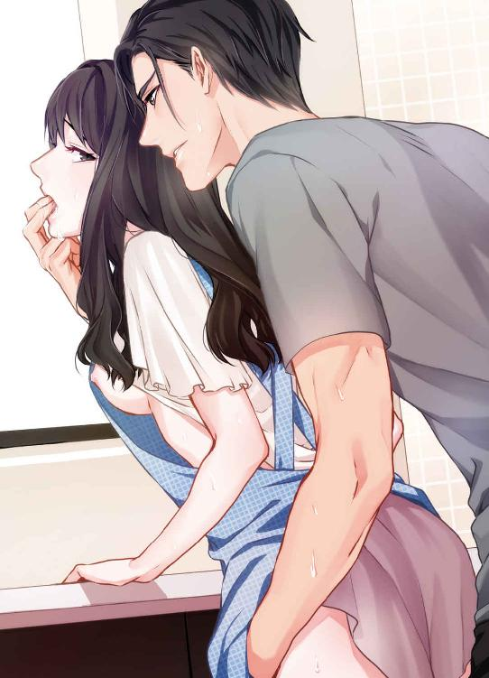
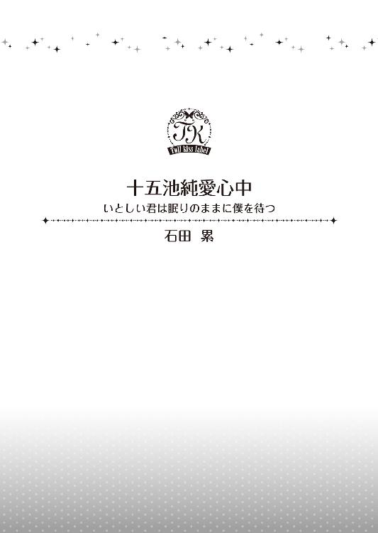
この作品はフィクションです。
実際の人物・団体・事件などに一切関係ありません。
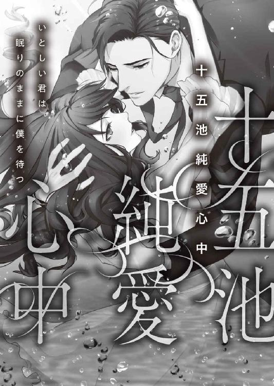
イラスト・園見亜季
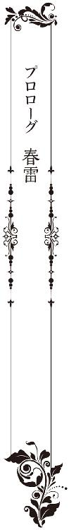
「侑木君、君は呪いを信じるかね」
意表をついた問いかけに、侑木慶佑は少しだけ眉を上げた。
「呪い、......それはつまり、呪術とか、祟りとかいう類のものですか。いえ、全く」
「信じないと？ しかし、世の中には理屈ではどうやっても説明のつかない事象がある。身近なところで第六感がそうだ。虫の知らせ、胸騒ぎ......、これを君はどう説明するかね」
これは一体なんのための問答だ？
そう思いながら、侑木は用心深く目の前に座る男を見た。
窓は灰色の雲で覆われ、地響きのような遠雷が時折不気味な音を立てている。明治に建設された古い建物はこれまで幾度も改修されてきたというが、内装はなお当時の名残を色濃くとどめ、今も侑木の頭上では、瓦斯灯を思わせる仄暗い照明が揺れている。
「それも所詮、人の経験値によって生まれるものですよ。突き詰めればいくらでも説明はつく。ただ、その真理を語る言葉を人が持ち合わせていないだけで」
「なるほど、つまりは言葉の問題だと？」
濃い目のアールグレイティーを一口飲んでから、侑木は小さく頷いた。
「人間の脳というのは不思議なもので、たとえば切羽詰まった時など、想像を絶する情報が一瞬で引き出され、次の行動を秒未満で決断します。意識する間もない情報処理の速さはＡＩなど遠く及ばず、むろん言葉では、その決断のプロセスを説明することはできません」
「なるほど」
「言葉が脳の情報量に追いつかないものを、人は虫の知らせだの、霊感だのという曖昧なものに置き換えるのでしょう。──いずれにしても、理由はつきます」
「──たとえばだ、侑木君」
男は悠然と立ち上がった。年の割には長身の方だが、身長が百八十センチを超える侑木から見れば幾分か小柄に見える。しかし齢七十一の男は、その眼光だけで二十八歳になったばかりの侑木を威圧するには十分だった。
皺だらけの顔に、頭部に張り付いた薄い白髪。見るからに枯れ果てた老人は、しかし随所に岩を思わせるような強靭な筋肉を付けており、油断なく動く目は夜の鷹を思わせる。
──昭和の通運王、墨田巌。
バブル期に日本の通運業界を牛耳っていたという伝説の男は、今からおよそ十年前に忽然と表舞台から姿を消し、探してみれば長野県の山奥でひっそりと隠居生活を送っていた。
その墨田に近づくために、侑木は昨年、墨田がよく通う書店で彼を待ち受け、接触した。隠居老人の唯一の趣味がミステリー小説の収集だということも知っていたから、自分も熱心な愛好家を装った。
むろん、老人とお友達になるためではない。彼の心に入り込み、あわよくばその弱点を掴むのが目的だ。
それからおよそ一年、二人は文通という形で、互いの知識や見識──果ては死生観まで披露しあった。ビジネスで一時代を築いた男との交流は、侑木が思っていたより何倍も刺激的で、時に目的を忘れて議論を戦わせたこともあった。
けれど今日──春が終わろうとしている曇天の午後、ついに侑木は自らの素性を明かし、初めて招かれた老人の屋敷で、彼と二人きりで向かい合っていた。
膨大な本を壁全面に埋め込んだ書斎の中で、墨田はゆっくりと、北側にひとつしかない格子窓の方に歩いていく。
「──ある朝だ。そうだな、仮に梅雨の頃としておこう。使用人がいつものように私を起こしにやってくる。しかしベッドはもぬけの殻だ。不審に思った使用人は、続く書斎の扉を開けようとするが開かない。──書斎には内側から鍵がかかっているからだ」
「......それで？」
「異変を感じた使用人は、扉を壊して中に入る。すると私が、机に顔を伏せて死んでいる。扉はもちろん、ひとつしかない窓にも内側から頑丈な鍵がかけてある。さて、君は私がどうやって殺されたのか、その謎を解くことができるだろうか」
「今のお話だけではなんの判断もつきません。あなたは、ご自分の死因さえ詳らかにされていませんよ」
「心配しなくても、ダイイングメッセージが残されている。しかも、明らかに君あてに」
侑木は黙って、窓を背に立つ墨田を見上げた。一体これはなんの話だ？ 先ほどから支離滅裂な問答を繰り返すこの老人は、ついに頭がおかしくなってしまったのか？
今日、侑木は、それまでの友好の仮面をかなぐり捨て、脅迫者としてやってきたのだ。
どんな手を使ってでも、侑木はこの老人が持つある会社の株を買い取るつもりでいた。そのために一年の時を費やしてその懐に入り込み、かつて老人がかかわっていたある大物政治家への収賄を、逮捕が可能になるレベルまで調べ上げたのだ。
しかし、それを聞いても墨田は顔色ひとつ変えないばかりか、冒頭の奇妙な質問をしてきたのである。──君は呪いを信じるかね？
「私の謎を解けば、君の欲しいものは君のものだ。侑木君」
「どういう意味でしょう」
「君の正体など最初からお見通しだということだ。侑木・ジェフリー・慶佑君。君の高名な父親のことはよく知っている。外国育ちの君に、日本の探偵小説はさぞ敷居が高かったろう。君はこの一年、つぶさに私を観察したつもりなのかもしれないが、私の方がそれ以上に君を観察していたのだよ」
「......では、僕の目的も、最初からご承知だったと？」
「当然だ。君のビジネスプランについて所見を言えば、日本では時期尚早にすぎるだろう。あと五年、そのプランは君の胸に収めておきたまえ。──そう、私の訃報が君の元に届くまで」
そのふざけた言いようには、さすがに侑木も眉をひそめた。
「つまり五年後、あなたの死の知らせが僕の元に届くとでも？ まさかあなたは、僕を相続人に指定なさるおつもりなのですか」
「もちろん、そんなつもりはないよ。しかし君がその知らせを真っ先に知り、なおかつ相続争いに名乗りを上げるチャンスがひとつだけあると言ったらどうするかね？」
墨田が机の引き出しから何かを取り出したので、侑木は用心深くその方に近寄った。手渡されたのはビロードの表紙がついた六つ切りサイズの写真である。
写っているのは、長い黒髪を肩に垂らした、十五、六の少女だった。純白のブラウスに、襟を飾る深紅のリボン。青白い小さな顔に、不釣り合いに大きな眼鏡をかけている。
眼鏡が少女の印象を野暮ったく見せているが、顔だちは繊細で、むしろ美しい部類に入るだろう。とはいえ、侑木が称賛を送るには、まだ少女は幼すぎる。
「娘の真珠だ。次女にあたる。──君は随分周到に私の身辺を嗅ぎ回っていたようだが、家族のことはまるで眼中になかったのかね？」
「僕はビジネスに家庭を巻き込まない主義なんです。──お嬢さんが、何か？」
「事情があってね。娘は七つの年から家を離れ、東京の寄宿舎で暮らしている」
意図が判らないままに写真を閉じようとした侑木は、ふと胸底に何かが舞い上がったような気がして、表紙を持つ手を止めていた。
「......僕に、彼女をどうしろと？」
「推理してみてはどうかね。娘は、妻のいない私にとっては第一順位の相続人だ」
その意味を侑木が完全に理解する前に、背を向けた墨田が窓を開けた。
生ぬるい風が室内に流れ込み、降り始めの雨がバチバチと窓框を叩く。そんな中、墨田が差し伸べた指の先には、ひどく奇妙な光景が広がっていた。
小山のような木々に四方を囲まれた山間に、真っ黒なタール状のものが広がっている。──湖だろうか。風に煽られているのか、その表面が細かなちりめん様の波を立てて揺れている。
「十五池だ」
「......十五池？」
「ただし、昔からここに住む人間は、あれを人食いの池と呼んでいる」
言葉を切り、墨田は黒目だけを動かして、侑木を見た。
「私の妻が、殺された場所だ」
刹那、白い光が瞬いて、開いたままの写真の女性を、立ちすくむ侑木の網膜に焼きつけた。雷鳴が轟き、ザーッと雨が降り始める。
「侑木君、君を私のゲームに招待しよう。君が、見事私の割り当てた役を演じてくれたなら、最後は君の望むものが必ず手に入るだろう。君が、本当に望んだものがね」
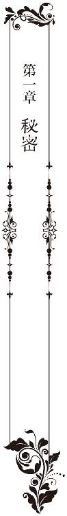
五年後───東京
同じ夢を何度も見る りゆう
「これ、侑木社長じゃないか？」
スマートフォンの検索画面に文字入力していた墨田真珠は、その声にドキリとして顔を上げた。
「それ見た。今日発売の週刊マンデーだろ」
「まるで芸能人だな。ま、あれだけイケメンで金持ちなら、女が放っておかないか」
真珠は急いで途中まで入力した文字を消すと、「見せて」と視線の集まる方に身体を寄せた。
東京・渋谷にある『プリズン・ジャパン』本社ビル。
米シカゴに親会社を持つこの会社は、電子商取引を主体に日本で物販事業を展開し、書籍、ＤＶＤ、家電、ファッション等、あらゆる分野にわたって、従来の店舗型経営を凌駕してきた外資系企業である。
昨年『プリズン１』という、最短一時間で商品が届く会員制のサービスを開始し、その爆発的な成功もあって、国内売上高はついに一兆円を突破した。
「平成の黒船」「シカゴからきたガリバー」と経済誌がやたらその脅威を煽るようになった同社は、もはや日本の同業他社を寄せつけない、圧倒的強さを誇る巨大企業に成長している。
今──午後八時、渋谷のランドマークとなった二十一階建て社屋の最上階にあるレストランで、昨春、プリズン・ジャパンに同期入社した六名が、月に一度の同期会を開いていた。
「しかし、侑木さんが社長に就任してから、一気に会社の風向きが変わった感があるな」
「そうね。郷に入っては郷に従えで日本の風習に合わせていたものが、いきなり古い既得権益層に牙を剥いた......そんな感じよね」
「剛腕、辣腕、冷徹、非道。全部の言葉があてはまる人だよ。日本人なのに、日本の義理人情が通じない。まぁ、軋轢が起こるのも必然だな」
入社から一年と少しの新人が、こうも上から目線で自社の社長を論じているのは、彼らが新卒入社ではないからだ。国内外の名だたる商社やコンサルティング会社からの転職組。年代は二十代後半から三十代前半で、そうそうたるキャリアと実力を持ってプリズン・ジャパンに乗り込んできた。──この場ではただ一人、目立たないように隅に座る真珠をのぞいて。
──剛腕、辣腕、冷徹、非道......、か。
真珠は、テーブルに広げられたゴシップ誌に視線をやった。ページの半分を埋め尽くした白黒写真の中では、一組のカップルが、寄り添うようにして車に乗り込もうとしている。
女性は、モデル出身で、女優として売り出し中のハーフタレント。
その傍らに立つ侑木は、モデルでもタレントでもないが、美貌の女性と並んでもまったくひけをとっていない。身長百八十三センチのバランスのとれたボディに、ギリシャ神を思わせる彫深い端整な顔。いつも人前に出る時の彼の癖で、眉根にかすかな皺を寄せ、不機嫌そうに険を目元に滲ませている。
それがある種の女性の心を虜にするのは確かであっても、この写真でまた、彼は敵を作ってしまうだろうな......。と、真珠は少し残念に思った。
この人は、確かに剛腕で辣腕で冷酷非道だけれど、それはあくまで仕事上のことで、本当はすごく優しい──笑うと、まるで子供みたいに可愛い笑顔をみせる人なのだ。
「で、墨田、侑木社長はいつ、シカゴからお帰りなんだ？」
いきなり話題を振られ、我に返った真珠は、少しうろたえながら顔を上げた。
「予定では明日よ。休む間もなく明後日から出張が入っているけど」
「てことは、アポを取るなら明日中だな。ほら、例の『全日』の件、向こうの社長が侑木さんと直接話させろって、連日電話攻勢でさ。──なんとかならないか」
「調整してみる。でもあまり期待しないで」
真珠が答えると、テーブルに小さな歓声が上がった。
「さすがは墨田。同期に社長秘書がいるって、本当に強いよな」
「しかも、あのワンマンの侑木さんと対等に口をきけるっていうんだから、大したもんだ」
「真珠、うちの部署も今度社長と直接協議がしたいのよ。それも調整、頼むわね」
あまり期待しないで──と、同じセリフを繰り返したものの、おそらく侑木は、あらゆる障壁を取りのぞき、時間を作ってくれるだろうと真珠は思った。
それは決して真珠の能力によるものではない。侑木の厚意──いや、好意だろうか？ いずれにしても実力主義者揃いのプリズンで、入社早々社長秘書に抜擢された真珠が、「優秀な秘書」として称賛を受けているのは、なにもかも侑木のおかげなのである。
会はやがてお開きになり、会計を済ませた真珠は、一人遅れて店を出た。オフィスに戻るつもりでエレベーターホールに歩いていくと、そこに先ほどまで一緒だった男二人の背中がある。
「それにしても、墨田は相変わらず落ち着いているな。とても新卒採用には思えない」
「聞いたか？ シカゴから送り込まれた役員に、日本生え抜きの秘書がついたのは墨田が初めてなんだそうだ。しかも相手はあの侑木社長だ。墨田がどれだけ優秀か判るだろう」
ドキッとした真珠は、逃げるように壁に身を隠した。いつも思うが、自分の実力とは違う部分で褒められるほど居心地の悪いものはない。
同期の、ひそひそ声は続く。
「しかし、彼女、年の割に暗くないか？ まぁ、それを落ち着いていると言うんだが」
「俺、入社式で席が隣だったらしいんだが、全然印象に残っていないんだ。──いたか？ あんな綺麗な子」
「女は男次第でいかようにも変わるからな。......案外、社長とできてたりして」
壁に張りついた真珠は、喉から心臓が飛び出るかと思ったが、すぐに笑い声が聞こえてきた。
「いやいやいや、いくらなんでもそれはないだろ！」
「今日のゴシップ誌もそうだが、社長が今まで噂になった女は揃いも揃ってゴージャス美人だ。墨田は美人だが......ちょっと根暗な感じがして、俺は苦手だよ」
自分が暗いことは自覚しているし、そんな評価は慣れっこのはずなのに、それでも心の深い所で真珠は少しだけ傷ついていた。
社長が今まで噂になった女は揃いも揃ってゴージャス美人......。その言葉が、何故だかいつまでも頭の中で尾を引いている。
「そういえば、侑木社長の、前の奥さんのことだけどさ」
不意に背後から腕を掴まれる。聞き耳を立てていた真珠は、驚いて振り返った。
高みから、今雑誌で見たばかりの顔が、少しいたずらめいた微笑を浮かべて見下ろしている。
「侑木さ──」
唇に指を当てて、続く言葉を遮ると、侑木は固まる真珠の腕を引くようにして歩き出した。
向かう先は、非常口の手前にある役員専用エレベーター。役員全員が退社した午後七時に稼働停止になっていたものが、いつの間にか稼働中になっている。
「っ、ど、どうされたんですか。今はまだ、飛行機の中なのでは？」
「それは四時間前の話だ。急に予定が繰り上がってね。連絡してもよかったんだが、それだと墨田さんを残業させることになるだろう」
まだ状況がのみ込めない真珠をエレベーターに押し込むと、侑木は「ただいま」と優しい笑顔になって微笑んだ。
今雑誌で見た顔が、それとは別人のような温かな目で、真珠を正面から見下ろしている。
チェザーレアットリーニのスーツに、仄かに香る白檀の香り──みるみる耳が熱くなり、心音が速くなる。真珠は急いで咳払いをすると、侑木から距離を取るようにして顔を背けた。
「私のことなんか、いちいち気にしていただかなくて結構です。それより、王室長はこのことをご存じなんですか」
王とは、侑木についている男性秘書の一人で、真珠にとっては上司にあたる中国人だ。
「さすがに王には電話を入れたよ。というよりその王から聞いたんだ。今夜墨田さんが、二十一階で同期会をしていると」
──だったら......、と真珠は、窺うような目で侑木を見上げた。
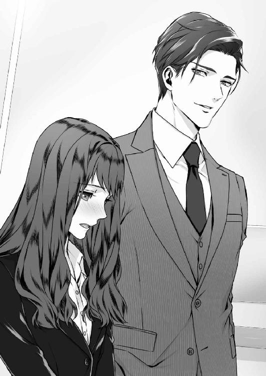
「王室長、お怒りじゃなかったですか？ マンデーの件で、広報部から相当文句を言われたみたいですから」
「会社のイメージダウンになるから？ 馬鹿馬鹿しい。写真一枚で希少価値の高いブランドを手に入れられるんだ。くだらないイメージよりはそちらの方が何倍も有益だ」
涼し気に答える侑木の目に、一時だけ冷徹な光が掠める。ビジネスに徹した時の、彼の非情さを思い出した真珠は、少し戸惑いながら視線を下げた。
実はマンデーに掲載された写真は、双方同意の上で、意図的に撮らせたものなのである。
女優には、今をときめくプリズン・ジャパン社長の恋人という箔がつき、代わりにプリズン・ジャパンは、女優をイメージモデルとして起用しているファッション・ブランドを系列に加えることができる──そういう計画だったのである。
むろんこれは、一部の者しか知り得ないからくりだし、プリズン・ジャパンに関していえば、侑木の独断で決まったことだ。この会社では、それぞれのセクショントップが一応の決定権を持ってはいるが、経営の方針的な部分に係る決断は、全て侑木一人が行っている。
そういう意味で確かに彼は、部下の意見を聞かないワンマン社長なのだ。
「まぁ、ただ僕にもためらいはあったよ。これで墨田さんに嫌われたらどうしようかと」
「......え？」
「僕には、王室長より君の方が怒っているように見えたけどね。自覚がないなら言うが、あの写真を撮らせた後、二日ほど口をきいてくれなかった」
「っ、そ、そんなことあるわけないじゃないですか」
顔を上げた真珠は、そこでからかうような侑木の視線にぶつかり、一気に頬を熱くさせた。
その目のまま、すっと、侑木が距離を詰めてくる。
「ひとつ、君に仕事を命じても？」
「な、なな、なんでしょう」
「さっきから待っているんだが僕は十階のオフィスに行きたい。ボタンを押してくれないか」
「──！」
確かにそれは、部下である真珠の仕事である。というより、乗り込んでからかなり経つのに、エレベーターが停まっていたことにすら気づかない私って......。
「う、申し訳ありません......」
真珠が消え入るような声で言うと、侑木は耐えかねたように、端整な顔に笑いを広げた。
侑木慶佑は、二年前、米プリズン社から、プリズン・ジャパン三代目社長としてやってきた。
三十四歳。公表されていない本名は侑木・ジェフリー・慶佑。アメリカの有名な富豪アンダーソン家の出身だが、その閥族に名を連ねるのを拒否して、母の母国である日本国籍を選択したというのはビジネス界では有名な話だ。
世界各国に拠点を持つプリズングループにおいて、侑木とは、ある種英雄的な人である。コンサルティング会社などを経て、二十四歳でプリズンに入社。当時低迷していたウェブサービス部門をたちまち軌道に乗せ、今のプリズンの基礎となる物流システムを構築した。その功績を買われて役員に就任したのが二十八歳で、侑木はそれを機に、トップに最も近い存在になったと言われている。
艶やかな黒髪に黒い瞳。外見はどう見ても日本人にしか見えないが、百八十センチを超えるしなやかな身体や、顔の彫深さなどは、遡る血のどこかに異国の遺伝子の存在を窺わせる。
形のいい切れ長の瞳は、いかにも経済界の大物らしい温かな色味を湛えており、実業家らしい怜悧な鋭さも秘めている。鼻梁は高く、引き締まった厚い唇はたとえようもなくセクシーだ。
この人を見るたびに、真珠はいつも思ってしまう。彼ほど、男性的な魅力の全てを兼ね備えた人が他にいるのだろうか？ ──
エレベーターが動き出した途端、顔から笑いを消して前に向き直った侑木を、真珠はどこかもどかしいような気持ちで見上げた。今はビジネスに頭を切り替えてしまったのか、彼の目は冷たく前を見据え、腕を組んで何かを考え込んでいるようだ。
こうやって、侑木の関心は、いつも唐突に真珠から逸らされる。驚くくらい距離を詰めてきたと思ったら、さっと手を引くように遠ざかってしまう。
出会ったばかりの頃は、その切り替えが有能なビジネスマンらしくて好ましかった。でも今は、なんだか寂しくて恨めしい。こんな風に感じてしまうのが、秘書として誤った感情であることは判っている。けれど真珠と侑木の関係は、必ずしも仕事上だけとは言い切れないのだ。
やがて、ちらっと腕時計に目をやった侑木が口を開いた。
「僕はオフィスで、二、三電話してから下に降りる。先に駐車場に行ってくれて構わないよ」
「あ、私も一度戻るつもりだったんです。でも......今日はお疲れなんじゃないですか」
「問題ないよ。それに、君を自宅に送ることくらい、なんでもないことだ」
侑木の横顔が微笑んだ途端、エレベーターが社長室のある十階に着いた。
まず侑木が降り、真珠が続く。数歩進んだ真珠は、ふと採光用の窓に視線を留めていた。
そこは壁全体がガラス張りになっていて、ライトアップされた階下の様子が一望できるようになっている。目に留まったのは、地下駐車場から滑り出てくるフェラーリＦ４３０だった。
心臓のどこかが鈍く跳ねた。あんな派手な車で出入りする人は、いかにプリズンといっても一人しかない。侑木の元妻、水希理子である。
最初、真珠は時折侑木を訪ねてくる派手な女性の正体を知らなかったが、社内の噂で二人が元夫婦だと知った。侑木がまだシカゴにいた頃の話で、結婚生活は一年未満。真偽のほどは定かではないが、水希理子の父親は中国の不動産王とも呼ばれている人で、別れた今でもプリズンにとっては重要な顧客なのだという。
ようやく真珠は、侑木が二十一階にいた本当の理由を理解した。あの階には役員専用のＶＩＰ応接室があり、水希理子は、大抵その部屋に顔パスで入っていくからだ。
足を止めてしまった真珠を、少し先に行った侑木が不思議そうに振り返る。
「どうした？ まさかこんな場所で、迷ってしまったんじゃないだろうね」
「さ、さすがにここでは迷いません」
動揺を抑えて切り返すと、侑木はたちまち、彼の──真珠が思うところの最も魅力的な、人をからかうような笑顔になった。
「どうだかな。君の方向音痴は、こう言っては悪いが救いようのないレベルだからね」
「たった一度道に迷ったくらいで、いつまでもそのネタを引っ張るのはやめてください」
むっと彼を見上げた真珠は、気持ちを切り替えようと思ったが、胸の裡はなお、彼の元妻の愛車を見た余韻でざわめいていた。基本、現状維持で満足している侑木との関係を壊したくなるのはこんな時だ。彼の本当の気持ちを聞きたくて胸がはりさけそうになる。
あなたは私のことを、どう思っているのですか、と。
（初めまして、僕が侑木だ。今日から仲良くやっていこう）
侑木と初めて会った日、まるで太陽のような人だと思ったのを、真珠はよく覚えている。
その容貌や立ち居振る舞いをいうのではない。発散するオーラのようなものが、真珠がそれまで会った誰とも違っていて、眩しいほど強い輝きを放っているように感じられたのだ。
実際、侑木はプリズン・ジャパンの太陽であり王だった。同社の、ここ数年の日の出のごとく目覚ましい成長ぶりも、全て侑木という人の絶対的な輝きとパワーに牽引されてのことで、それは真珠だけではなく、社にいる誰もが肌で感じていることである。
そんな侑木に、元来人見知りで警戒心の強い真珠があっさり心を開いてしまったのは、二人に共通の知人がいたせいだろう。
そもそも真珠がこの会社に就職を決めたのは、大学時代に専攻した民俗学の教授──柳沢教授の熱心な推挙があったためである。柳沢は侑木とかねてから親交があり、先生の教え子でいい人材がいればぜひ、と直々に頼まれていたらしい。
そこで何故真珠が選ばれたのかは謎だったが、あれよあれよと話は進み、気がついた時には、もう断ることができない状況になっていた。──本音を言えば断りたかった。真珠はそもそも公務員を志しており、外資系のような派手な会社に入るなど、考えたこともなかったからだ。
（不本意かもしれないが、君を僕の秘書に推薦したのは、何を隠そうこの僕だ。ここは僕にとってまだ敵地のようなものでね。できれば、気心の知れた人に傍にいて欲しかったんだ）
気心が知れたも何も、そもそも侑木と真珠は初対面である。しかし侑木にとっては、交流のある人の教え子というだけで、真珠が近しい存在に思えたようだ。
その一年前に社長に就いていた彼の評判は、後から遅れて真珠の耳にも入ってきた。
プリズン・ジャパンの絶対君主。会社の意思そのものであり法律。一度見切った取引先については冷酷に切り捨てる。部下の意見は一切聞かない超ワンマン。──
それが会社の売上高を一兆円にまで押し上げた原動力とはいえ、侑木のやり方や人物評には、常にネガティブな批判がついてまわった。特に、プリズン１を導入した時がひどかったようで、侑木の悪評は、その時点で日本経済界に定着してしまったと言っても過言ではない。
プリズン１──一時間以内での配送無料お届けサービスは、もともとアメリカのプリズン社で導入されたもので、同業者や宅配事業者にとっては悪名高いサービスである。
ただし、それを日本に導入させたのは侑木の独断というよりグループ全体の方針で、にもかかわらず侑木一人が悪者にされているのには、少しばかり気の毒な側面もあった。
真珠は一度だけ、同業者が侑木に恨み言を言う場面に立ち会ってしまったことがある。
（侑木さん、日本には因果応報という言葉がある。あんたは今回、多くの人間の恨みを買った。その恨みが呪いになって、いつか必ずあんたを破滅させるよ）
思わずぞっとして立ちすくんだ。むろんなんの根拠もない脅迫であり、悔し紛れの棄てゼリフだ。しかし、確かに侑木は同業者の猛烈な恨みを一身に買っていたし、強すぎる怨念は、時になんらかの形となって侑木に害を及ぼすこともあるのではないか──そう思ったのだ。
しかし侑木は、実に明るい笑いでそれに応えた。
（どうぞどうぞ。呪いも怨念も僕は少しも恐れませんよ。僕が恐れるのは僕を上回る知恵であり、企画であり、実行力だ。生憎僕は、理屈の通らないものは一切気にしない性質なんです）
その瞬間、刹那的ではあれど、真珠は痺れるような憧憬を彼に覚えた。この人はきっと、私にはない全てを持っている。太陽の明るさ、逆境に立ち向かう強さ、溢れてやまない生命力──何もかも。
そんな風に、真珠とは真逆のオーラを持つ侑木だったが、柳沢教授という恩師を介しているせいか、真珠にだけは不思議なくらい優しく、身内に接するように親切だった。
（まずは君に、秘書にふさわしい身なりをしてもらわなくてはいけないね。眼鏡は外そう。髪も短くして、裾に少しウェーブをつけてごらん。きっと見違えるくらい華やかになるはずだ）
（王に聞いたんだが、君の住んでいる町はあまり治安がよくないそうだ。もっとセキュリティの高いマンションを借りる気はないか？ 友人が安く貸してくれるいい物件があるんだ）
入社してから二、三ヵ月の侑木は、大げさでなく、まるで真珠の保護者のようなものだった。高価なスーツも一揃い買ってくれたし、ＴＰＯにふさわしい髪型やメイク、果ては笑顔の作り方まで丁寧に指導してくれた。
正直、その度を超した親切は、男性経験のない真珠をとても戸惑わせた。何故侑木のような人が、私にここまでしてくれるんだろう。まさか、下心があるからとか？
しかし勇気を振り絞ってその疑問をぶつけてみると、侑木は噴き出すように笑ってから、こう返してくれたのである。
（僕は、小さい頃から家族と離れて暮らしていてね。家庭というものをあまりよく知らないんだ。きっと僕には、年の離れた君が妹のように思えるんだろう。──いずれにしても、他意はないから安心しなさい）
それが契機で、以来侑木は、真珠の一番親しい存在になった。真珠自身も七歳で親元を離れ、滅多に帰省できない状況に置かれている。孤独な暮らしをしてきた真珠にとって、いきなり現れた侑木という疑似保護者は、次第になくてはならない大切な存在になっていったのだ。
入社して半年も経った頃には、二人は、誰もいないところではまるで友人のように話ができる間柄になっていた。侑木は、真珠を本当の妹のように可愛がり、何かにつけては傍に置き、些細なしくじりを、いたずらっ子のようにからかっては楽しんだ。
（驚いたな。君は年の割にはしっかりしていると人事担当から聞いたんだが、トイレに行くのにも迷うのかい？ 判った、今日から僕がいちいち地図を書いてあげよう）
年が明ける頃になると、二人の関係はますます親しさを増して、自宅までの送迎や、食事、ちょっとした遠出まで楽しむようになった。
侑木の車の中で、夜が更けるまでとりとめもない話をしたこともある。夜の海岸にこっそり二人で出かけたことも、閉館後の水族館に特別に連れて行ってもらったこともある。──けれどそうしながら、侑木と真珠の関係は、あくまで社長と秘書であり、どこまでいっても年の離れた友人でしかなかったのだ。
もちろん仕事の上では、彼の要求は厳しかった。この一年で、真珠は室長の王から「墨田がいれば問題ない」と言われるまでに成長したが、それは全て侑木の教育の賜物である。
およそ秘書として、いや社会人としてのイロハを、侑木は優しさと忍耐と厳しさをもって、不器用な真珠に教えてくれた。そんな侑木に──一年間、常に精神的な部分で支えてくれた誰より魅力的な男性に──世間知らずの二十二歳が、恋をするなという方が無理だろう。
「どうした？ さっきからひどく無口だね」
侑木の声ではっとした真珠は、急いで運転席の彼を見上げた。
「ごめんなさい。ちょっと疲れて、うとうとしていたみたいです」
夜の国道、あと数分で真珠の住むマンションに着く。今、二人が乗車しているメタリックグレーの大型ミニバンは侑木の愛車だ。
最初、この車を見た時、てっきり侑木は家族持ちなのかと思った。しかし彼は独り身で、意外にも趣味の登山とトレッキングのために、車中泊のできる車を買ったのだと言う。
真珠は、何か気の利いたことを言おうとしたが、咄嗟に言葉が出てこなかった。実のところ、彼と元妻の逢瀬がいまだ尾を引いているのだが、そんなことは口が裂けても言えるはずがない。
「侑木さん、同じ夢を何度も見ることってあります？」
ふと、今日の飲み会の最中にウェブ検索しかけたことを思い出し、真珠は口を開いていた。
「いや、僕は夢自体そんなに見ないし、見てもすぐ忘れるんだ。──それが？」
「最近、たまにですけど、同じ夢を見て目が覚めることがあるんです。夜......森みたいな場所に一人で立っていたら、真っ黒い人がいきなりわっと出てきて......」
「真っ黒い人？」
「黒いんです。顔も身体も何もかも、まるで、影のお化けみたいに」
その夢を初めて見たのは、今年の春先──二月頃だ。
薄暗い森のような場所に、真珠は一人きりで立っている。視界は利かず、ざわざわという葉の音しか聞こえない。やがて水気を帯びた足音が近づいてきて、黒い影が目の前に現れる──そこで目が覚めるのだが、意味がさっぱり判らない。
真珠が詳細を説明すると、侑木はおかしそうに苦笑してから、「それは興味深いね」と呟いた。
「深層意識の不安の表れか、無意識下に溜まったストレスかな。......それか昔、似たような光景を見てトラウマになっているとか」
「子供の頃ですか？ 私、お化け屋敷にも行ったことないし、全然覚えがないんですよね」
「自分の人生を一日残らず記憶している人なんて、どこにもいないよ。どんな夢か、もっと具体的に話してごらん。似たような場所に行ったことが過去にあったんじゃないかな」
「場所......ですか？」
「そう、匂いでも音でもいい。何かヒントになることはないかな」
──匂い......、音......。
不意に胸に石がつかえたようになり、真珠は眉をひそめていた。どうしてだか、この会話を続けるのがひどく危険なことのような気がする。
「ちょっと思い出せません。だいたい夢なんて、覚めた途端に忘れてしまうものですし」
「だったら、君が目覚めた時、僕が傍にいてあげようか」
「うちに泊まるってことですか？」
「いいアイデアだろう」
「いいアイデアも何も、......嫌ですよ。マンデーに写真を撮られるのは」
侑木は噴き出すように笑ったが、真珠だけは内心、今の会話に激しい動揺を感じていた。
冗談だというのは口調で判ったが、こういう思わせぶりなことを言う侑木の真意が判らないと思ったのだ。何故なら、少なくとも侑木は、真珠の恋心を察しているはずなのである。
あれは今から三ヵ月くらい前、やはり春先の出来事だ。
出張帰りだった侑木が、ひどく疲れて見えた日のこと。車がマンションの下に停まった時、「よろしければ、うちで休んでいかれませんか」と、咄嗟に口にしてしまったのだ。
その頃の真珠は侑木への恋を自覚したばかりで、彼への態度や言動にそれが出てはいけないと、必要以上に神経質になっていた。
そんな中、心配と気づかいから出た言葉は、数秒遅れで真珠を不器用にうろたえさせた。誤魔化そうにも、言葉が何も出てこなくなり、最悪なことにうつむいてしまった。その不自然な沈黙は、結果として真珠の気持ちを、どんな朴念仁にも判るくらい雄弁に表してしまったのだ。
侑木は驚きを目に宿したまま、黙っていた。彼がすぐに笑ってくれれば済む会話だったのに、彼もそうはしなかった。暗い車内で、侑木の視線を強く感じながら、真珠は羞恥と恐ろしさに身もすくむ思いだった。沈黙は、およそ二十秒くらい続いただろうか。
（いいね。でもそれはまたの機会にしておくよ。じゃ、また明日）
彼はあっさり言うと、何事もなかったような笑顔になった。
ふられたんだ、と思ったと同時に、彼が真珠に、これまで通りの関係を望んでいることも理解した。あの時、一体どういう精神状況で受け答えすることができたのか、正直、今でも思い出せない。ただ、侑木の態度は、それ以降も何ひとつ変わらなかった。
今では真珠も、自分の気持ちを隠しながら──時に惑わされることはあるにせよ、それを上手くやり過ごしながら、彼と普段通りにつきあえるようになっている。
「ごめんなさい。侑木さんの言うように、多分ただのストレスです。こう見えて侑木さんの秘書は、案外大変な仕事なんですよ」
「ひどいな。まるで僕がストレスの元凶のような言い方だ」
そう答える侑木の笑顔を確認してから、真珠はほっと息をついて、窓の景色に視線を向けた。
「......そういえば、梅雨入りしたっていうのに、雨、全然降りませんね」
「ん？ ......ああ、そうだね」
夜景を背にした窓ガラスには、暗く翳った侑木の横顔が映っている。こうして運転中の彼を遠慮なく見つめられるのが、真珠には一番の至福の時だ。触れたくても触れられない──二人の距離は手を伸ばせば届くほどなのに、実際は鏡の中と外ほどにも離れている。──触れたい......、そして触れて欲しい。そんな風に思ってしまう私は、人よりはしたない女なのだろうか。
侑木の横顔を切なく見つめながら、考えても仕方のないことを、真珠は再び考え始めていた。
出張の予定が繰り上がったのは、一体どういう理由だろう。もしかして理子さんに会うために、わざと早く切り上げたのだろうか。でも、だったらどうして、彼は今私と一緒なんだろう。
三ヵ月前、真珠の気持ちを察したにもかかわらず、侑木の態度が変わらないのは何故だろう。いや、むしろあの頃より親しい態度を取るようになったと思うのは気のせいだろうか。
いっそのこと、この気持ちの全てを打ち明けて、彼が望む心地いい関係を台無しにしてしまいたい。彼の度を超えた親切や、思わせぶりな態度の理由を、全部、余さず問い質してしまいたい。けれどそれは、絶対にできないし、するつもりもないことだった。
彼にふられてしまうことが怖いのではない、逆に受け入れられてしまうのが怖いのだ。
「電話じゃないかな」
侑木の声に、窓に額を当てていた真珠は、はっと我に返って顔を上げた。
「着信音が聞こえる。君のスマートフォンだ。確認してみてごらん」
急いでハンドバッグからスマートフォンを取り出すと、そのタイミングで音が途切れた。ディスプレイに表示された文字に、真珠は表情を強張らせる。
「実家からです。──帰宅してからかけ直しますね」
「緊急の用かもしれない。僕は構わないから、今、かけてもいいんだよ」
「大丈夫です。緊急だったらまたかかってくると思いますから」
この時間、実家から電話してくる相手は一人しかおらず、その人物との会話は、できれば侑木には聞かれたくない。そんな真珠を横目で見てから、侑木は再び口を開いた。
「墨田さんのところは、確かお母さんが早くに亡くなられて、ご実家にはお父さんとお姉さんが二人で住んでいるんだったね」
「ええ。父は高齢で、姉は昔から身体が弱くて......。残る家族は私一人ですから、正直、いつ介護で呼び戻されても不思議じゃありません」
あえて軽い口調で言ったが、暗に面倒さをアピールして、侑木に対する気持ちにブレーキをかけようとしている自分がいる。しかし侑木は、特に気にすることなく苦笑した。
「お姉さんは、確か永莉さんと言われたね。何年もご自宅で療養しているとのことだが、一体どこが悪いんだい？」
「元来病弱な人なので、色々です。でもそんな深刻ってわけでもないですから」
「一度会ってみたいな。君のお姉さん──しかも病弱な方なら、きっと美人に違いない」
「あはは、否定はしませんけど、人見知りの姉を部屋から出すのが大変かもしれませんよ」
真珠はいまだ、自身の家族のことを、侑木に曖昧にしか打ち明けてはいないし、詳しい話をするつもりもない。
鬱蒼とした山奥に建つ、幽霊屋敷のような古びた洋館。
ある事件を機に、世間から身を隠し、まるで世捨て人のような暮らしをしている父。
そして、その屋敷から一歩も外に出られない美しい姉は、十五歳の夏に起きた事件のせいで、心に大きな傷を負ってしまった。
まるでクラシックなミステリー小説の舞台のようだ。しかもその舞台には、いまだ理由の判らない母や祖母の死と、それにまつわる因縁めいた郷土の伝承も絡んでいるのだ。──
（似たような場所に行ったことが過去にあったんじゃないかな）
さっき侑木に指摘されるまで、迂闊にも想像さえしていなかった。夢が、現実に起きたことを原型にしているのだとしたら、それは真珠が実家で暮らしていた時でしかあり得ないのだ。
その時、車が停まり、侑木がこちらを振り返った。
「今日は不思議と道路が空いていたな。こんなことなら少し遠回りすればよかったよ」
「本当ですね。──あ、明日は通常出勤でよろしかったですか」
侑木を見上げた真珠は、彼が黙ったままでいるので、そのまま言葉をのみ込んでいた。
エンジンだけが響く車内。暗く翳った侑木の目が、無言で真珠を見つめている。
──侑木、さん......？
喉の奥が熱くなり、鼓動が少しだけ速くなった。ステアリングを離れた彼の手がゆっくりと持ち上がり、一瞬ためらうように止まった後、ぎこちなく真珠の頬に触れる。
びくっと肩を震わせた真珠は、視線を膝に固定したまま、侑木の指が頬を辿るのにまかせていた。心臓が潰れそうなくらいドキドキしている。衣擦れの音が響き、彼が身につけていたフレグランスが一瞬強く車内に香る。そっと、彼の顔が近づいてくる。
「......飲んだ？」
再び肩を震わせた真珠は、おそるおそる顔を上げた。そして慄くように目を閉じた。あまりに彼の顔が近すぎて、直視できなかったのだ。
「の、飲んだって？」
「唇から、少しだけアルコールの匂いがする」
「ワ......ワインを一杯だけ......。そのまま、帰るつもりでしたから」
強い視線を唇に感じた。喉は渇き、鼓動を速めすぎた心臓は、停止したかのようにさえ感じられる。
けれど熱を帯びた気配は、唐突に真珠から遠ざかった。影が消え、指が離れ、闇の中で真珠一人が取り残される。
石のように固まった身体の中で、昂った気持ちが、みるみる失望に変わっていくのが判った。
これは何の真似だろう。いかにもキスする感じで近づいてきたのに、直前でスルーされた。ああ、私はまたからかわれたんだ。でも、さすがに性質が悪すぎる。彼は私の気持ちを知っているはずなのに──こんな、まるで弄ぶみたいな......。
悔しさと悲しさで、目の奥が熱くなる。けれど唇を噛みながら目を開けた真珠は、そこに思わぬ表情を見て、息をのんだ。
シートにもたれ、無言で前を見ている侑木の目が、どうしてだかひどく辛そうに見えたのだ。
「すまない。やっぱり今夜は、少し疲れているみたいだ」
やがて侑木は、いつもの優しい笑顔に戻って顔を上げた。
「お仕事のことで、何かあったんですか」
「いや、ただの時差ぼけだよ。墨田さんが僕以外の男と酒を飲んだのも気に入らない。──とは、もちろん僕の立場では言えないけどね」
全てが冗談だったかのような彼らしい微笑を浮かべると、侑木は真珠の肩を軽く叩いた。
「じゃ、また明日」
走り去っていく車を見送りながら、卑怯なのはどちらだろうと、ふと泣きたいような気持ちで真珠は思った。思わせぶりな態度で翻弄する侑木なのか、それとも、恋人になる覚悟もないのにすがるような目で彼を見てしまう自分なのか。──
「はい、墨田でございます」
部屋に戻ってかけ直した電話に出たのは、蝦蟇の鳴き声のように耳障りな男の声だった。
この時間、父と姉は就寝している。つまり電話をかけてくるのも出てくれるのも一人しかいない──真珠が生まれる前から屋敷に住み込んでいる使用人、冬斑志信である。
「真珠です。さっきは出られなくてごめんなさい。何か変わったことでもあった？」
「いえ、実はお電話されたのは巌様だったのですが、もうお休みになられてしまいました」
「お父さんが？ ──私に？」
驚きながらも、背筋にむしずが走るような薄気味悪さを、真珠は抑えることができなかった。屋敷にいた頃から、真珠はこの冬斑が苦手で極力接触を避けていた。それは彼の特徴的な風貌──それも子供心に恐ろしくはあったのだが──が理由ではなく、妙に陰気な眼差しや、死んだ母との関係性に恐怖を覚えたせいかもしれない。
しかし、父と姉がこの男に殆ど依存した生活をしていることを思うと、何も言えない。七歳で強制的に実家を追い出された真珠には、家の取り決めに口出しすることはできないからだ。
「お父さんが私になんの用だったの？ 今まで電話なんて、してくれたこともなかったのに」
「......判りませんが、もしかすると逸見の、凌士様のことかもしれません」
冬斑の言葉は、真珠をさらに驚かせた。逸見凌士。何年かぶりに聞いた名前だが、いつ耳にしても、鳥肌が立つほどの嫌悪感が蘇る。
「あの人が父に何かしたの」
「そういうわけでは。ただ、変わったことといえばそのくらいしか思いあたりませんので」
「どういうこと？ あの男が、また姉さんに何かしようとしているんじゃないでしょうね」
あの頃の悪夢の連鎖のような出来事を思い出し、真珠は顔色を変えていた。しかし冬斑は即座にそれを遮った。
「そうではなく、最近、時々うちにお見えになるのです」
「......どうして？ だってあの人は、うちを出入り禁止にされているはずよ」
「判りませんが、今日も旦那様のお部屋で小一時間あまり話し込んでおられたようでした。申し訳ございませんが、私に、それ以上のことは」
だったら、中途半端に不安になるようなことを言わないで欲しい。真珠は嘆息してスマートフォンを持ち替えた。
「明日、私の方からかけ直すから、お父さんにそう伝えておいて。......姉さんは元気？」
「お変わりございません」
それはいい意味でもあり、多分悪い意味でもある。長い間帰省を許されない実家を思い、真珠は少しだけ表情を暗くさせた。
七つの年に家を出されてから今年の夏で十五年になる。その間、東京の寄宿学校と遠縁宅で暮らしていた真珠が帰省を許されたのは、実に三度しかない。母の初盆と、三度目と七度目の盆。母の命日である七月十五日は決して帰省を許されなかった。理由は──墨田の家族と、そして冬斑だけが知っている。
通話を切った真珠は、電気も点けない寝室のベッドにうつぶせに倒れ込んだ。
日常生活から完全に切り離されているはずの『現実』は、こうやって唐突に顔を覗かせては、真珠の全てをのみ込んでしまう。そうして暗闇から嗄れた声で囁き、警告するのだ。
お前一人が幸福になっていいはずがない。お前もまた、生涯屋敷から離れられなかった母のように、姉のように、いつかはここへ戻ってこなければならないのだ。──
その時、部屋のどこかで、メールの着信を告げる音がした。はっと半身を起こして見回すと、ソファの上に投げ出したスマートフォンのランプが点灯している。
『おやすみ。今度、僕がもっといいワインをご馳走するよ』
それを目にした真珠は、冷えていた身体に、温かな血が通い始めるのを感じた。侑木という人の優しさや楽しさが滲み出ているような文面に、心がふんわりとした優しい感情に包まれる。
真珠は彼といる時だけ、自分がどこにでもいるような、平凡な女になったような錯覚を感じる。恋をして、幸福な結婚をして、そんな未来を夢見てもいいような気持ちになる。
もちろんそんな幸福な夢は、空想するとすぐに消えてしまう。絶対にそんな風にはなってはいけないという脅迫じみた感情が湧き起こり、苦しくなって自分で打ち消してしまうのだ。
真珠は、一生誰とも結婚するつもりはないし、他人と必要以上に親しい関係になる気もない。それは、十代の頃から頑なに心に決めていることである。
自分の心の中にあるものを、うっかり他人に覗かれたくないからだ。心の中──生まれ育った故郷と言い換えていいかもしれない。自分が知る家の歴史を、記憶を、誰とも共有したくない。死ぬまで自分の胸ひとつに留めておきたい。父と姉が死に、真珠がこの世を去った時、ようやくあの家の黒い歴史は幕を閉じることができるのだ。
にもかかわらず、真珠は侑木に恋をしてしまった。あれほど他人にかかわらないようにして生きてきたのに、......馬鹿だ。
いっそのこと、侑木がひどい男で、真珠のことを弄んで捨てる気でいるならいいと思う。彼に身を任せて一時の幸福を知ることができたら、きっと後悔はないだろう。
けれど侑木は、そんな軽薄な男だろうか？ 実は、今夜目にした彼の懊悩を、真珠はこれまで何度か感じ取ったことがある。そしてその度に、彼の奥底に見え隠れする暗い情熱を感じずにはいられない。時が経てばその確信も夢のように消えてしまうのだが、その刹那だけ、思わずにはいられないのだ。もしかして彼も、私に恋しているのではないだろうか、と──
「何度も言いますが、値上げ交渉には一切応じられませんよ」
ようやく梅雨らしい空模様になった翌日。社長室から聞こえてくる冷ややかな声に、扉をノックしようとしていた真珠は、驚いて足を止めた。
すぐさま背後から、秘書室長の王が歩み寄ってくる。
「急な来客だ。アポなしだから、すぐに帰られると思う」
王力宏はシカゴ時代からの侑木の秘書で、アメリカ育ちの中国人だ。五カ国の言語に通じ、むろん日本語も堪能である三十七歳。細身だが筋肉質で、侑木よりやや背が高い。体格だけ見ると、秘書というよりボディガードのようだ。
吊り上がった目は彫刻刀で彫ったように細く、どんな時でも表情筋は一切動かない。役職上は上司だが、彼の意識は常にボスである侑木の動向に向けられており、真珠と仕事外の会話をすることはない。
「相手、全日の社長ですよ。マスコミ同伴でやってきて、社長と直接話をさせろって、そりゃすごい剣幕で」
渋い顔で囁いてくれたのは、秘書兼運転手の田島吾郎である。年は真珠より三歳上だが、気さくな性格で全く先輩ぶったところがない。その時、再び侑木の容赦ない声がした。
「申し訳ないが、うちに譲歩するつもりは一切ない。通告した通り、来月末までに御社ＨＤの社長と協議して結論を出していただきたい。現状維持か、完全撤退か」
「本気で言っているのか、侑木さん。あんたこそ、うちが撤退したら困るんじゃないのか！」
そこで王が、薄く開いていた扉を閉めたので、中の声は聞こえなくなった。
席に戻った真珠は、不安な面持ちで社長室の扉を見た。昨夜、同期からアポを取るよう頼まれた件だ。頃合いを見て侑木に話をしようと思っていたのだが、まさかこんな早い時間に、相手が直接押しかけてくるとは思ってもいなかった。
全日──『全日本通運株式会社』は、プリズン・ジャパンの主要事業である物販の配送を一手に引き受けている、国内最大手の宅配業者である。
プリズン・ジャパンが電子商取引の雄に躍り出たのは、全日との一括契約により、宅配料ひとつ当たりの単価を抑え、実質配送料ゼロ円サービスを展開してきたからだ。
採算が狂い始めた原因は、皮肉にもプリズン１の成功だ。個別配送の量が全日の想定を超え、爆発的に増えたのだ。運転手の疲弊や悲劇的な交通事故、長時間労働が社会問題となり、全日は待遇改善に乗り出すしかなくなった。結果、大幅な値上げを要求してきたのである。
「あんなに強気で......大丈夫なんでしょうか」
真珠はつい、王にそう聞いていた。
経営に素人の真珠の目から見ても、全日の要求は尤もなように思える。値上げをのめば、確かにプリズン・ジャパンにとっては大打撃だが、国内最大手の全日を敵に回して、今の物流体制が維持できるとは思えない。
「大丈夫ではないだろうが、強気にならなければ社長は終わりだ。全日の要求をのめば、社長が進めてきた事業が全て骨抜きになる。そうなれば社長職の解任は免れない」
「そんなぁ、だって侑木社長は、プリズンの功労者でしょうに」
明るい口調で言ったのは田島だったが、王は眉ひとすじ動かさなかった。
「チャン会長は一度の失敗を絶対に許さない。失策は失策だ」
真珠と田島は顔を見合わせ、王の背後の壁にかけられた写真に視線を向けた。
プリズングループの創業者、ヴィクター・チャン。中国人の母を持つ中国系アメリカ人で、その顔は社内のいたる場所に肖像写真として掲示されている。
侑木がプリズン・ジャパンの絶対君主なら、チャンは同グループの神のような存在だ。プリズン１サービスを打ち出したのもチャンで、それを全世界に普及させ、市場を独占するのが彼の絶対目標だと聞いている。そういう意味では、確かに侑木に譲歩という選択肢はないのかもしれないが──
カウンターの前に立った王は、届いたばかりの郵便物の中から角二サイズの封筒をひとつ取り上げると、それを自身のデスクに持ち帰った。
それは不定期に侑木宛に届く郵便物で、差出人の名前はない。くすんだ緑色の封筒で、これだけは王が侑木に直接渡すことになっている。真珠に内容は知らされていない。
「そういえば、墨田が席空けの間に携帯が何度か鳴っていた。緊急の用事じゃないか」
はっとした真珠は、急いで卓上に置いていたスマートフォンを取り上げた。留守電が一件に着信が四件。全て実家の番号である。
何故か嫌な胸騒ぎがした。最初の着信時刻は午前九時、今から十分ほど前だ。
社長室の扉が開いて、侑木が勢いよく飛び出してくる。
パソコン画面で、その侑木のスケジュールを確認していた真珠は、まだ収まらない動揺を堪えて立ち上がった。
「今、王から聞いた。お父さんが亡くなられたんだって？」
「ええ......。申し訳ありません、急なことで」
真珠はできる限り気丈な態度で、卓上のパソコン画面を指し示した。
「今、今週のスケジュールについて、田島さんと王室長に申し送りをしています。あと、回答期限が今週中の照会ものがいくつかあって、その整理が終わり次第お休みを、」
いきなり侑木の両手が真珠の肩を掴んだ。
「そんなことはどうでもいい。お父さんは、いつ、どうやって？」
その剣幕に驚いた真珠は、初めて彼のただならぬ表情に気がついた。だいたいどんな時でも余裕を滲ませている侑木が、眉を険しくさせ、傍に王や田島がいるにもかかわらず、覆い被さるようにして真珠の肩を掴んでいる。
しかし真珠が何かを口にする前に、侑木は自身の態度のおかしさに気がついたのか、うろたえたように手を離した。
「ああ......、すまない。君の家族のことをあまり聞いていなかったから、つい」
その言い訳は、決して今の態度の弁明になっていないような気もしたが、真珠もまた、冷静にものが考えられる状況ではなかった。
父が死んだ。昨夜、珍しく電話してくれた父が。七歳の年に家を出てから、都合数回しか顔を合わせたことのない父が。──父が、死んだ。
かけ直した電話に出たのは、通いのハウスキーパーの女だった。何を聞いても要領を得ず、ただ、父が今朝がた亡くなり、家に警察が出入りしていることだけが拙い口調で伝えられた。冬斑は今、その警察に事情を聴かれている最中だという。
通話を切った後、真珠は恐ろしさで息もできなかった。──警察が来ているというのは何故だろう。父は、もしかして何かの事件に巻き込まれたのだろうか？
ふと気づけば王と田島が退室して侑木と二人きりになっている。はっとした真珠は思わず彼を避けるように、自身を抱きしめて背後に引いた。自分でも何故そうしたのか判らなかった。
「申し訳ありません。私にもまだ、詳しい状況が判らないんです。向こうに着いてから、改めて電話させてください」
「......判った。ただ、僕も葬儀には出席する。時間と場所が決まったら、」
「いえ、結構です！」
真珠もまた、その時異様な剣幕になっていた。出してしまった声の大きさに驚いて、思わず口を押さえている。さすがにおかしいと思ったのか、侑木は不審そうに眉を寄せた。
「......大丈夫か？ 顔色が真っ青だ。気分が悪いならいったん自宅に戻って休んだ方がいい」
「本当に大丈夫です。それに葬儀は密葬になると思いますので、お気持ちだけで」
「そうはいかない。さっきから一体どうした。僕は君に、そこまで他人のような扱われ方をする人間ではないだろう」
真珠は強張った表情のまま視線を伏せ、侑木の視線を避けるように顔を背けた。
「そうでしょうか......。でも社長は、どこまでいっても私の身内ではないですから」
黙りこんだ侑木の顔が恐ろしくて見られない。その時、卓上の電話が鳴った。
来客応接室に入った真珠は、足がすくんだようにそのまま動けなくなった。
室内中央にある応接用ソファに、喪服姿の男二人が座っている。二人は、真珠を認めると同時に、組んでいた腕や脚を解いて立ち上がった。
どちらの顔にも見覚えがあった。半白頭の痩せぎすの男は逸見紘一。死んだ母の兄にあたる人だ。もう一人のがっちりした肉厚の男は、その息子の凌士。姉の永莉より三つ年上だから、今年で三十三歳だろう。どちらに会うのも、かれこれ十五年ぶりになる。
「伯父さん......、凌士さん、どうされたんですか」
受付からの電話で、二人が会社に来ていると知らされた時、何かの間違いではないかと真珠は思った。というのも七歳で家を出て以来、逸見家とは一切の交流を断ってきたからだ。
「どうもこうも、もう知らせが入っただろう。真珠、巌君が亡くなったんだ」
紘一が、甲高い声でまくし立てた。その隣で息子の凌士が、神妙そうに口を開く。
「俺は丁度、長野に向かう車の中でそれを聞いてね。いったん引き返して、親父を拾ってきたところなんだ。真珠も向こうに行くだろう？ そう思って迎えに来たんだよ」
「......長野に、向かう？ もともとあちらに何か用事があったんですか？」
昨夜冬斑から聞いた「最近、時々うちにお見えになるのです」という言葉が蘇る。
その時も不審に思った。もう十五年も前の出来事とはといえ、凌士は、父から出入り禁止を言い渡されているはずなのだ。
「ああ......聞いてないかな。凌士と巌君は、長年の誤解を解いて旧交を温めあうようになってね。私もここ半年あまり、巌君とは折々会うようになったんだよ」
紘一の顔に、どこか尊大な笑みが浮かんだ。真珠が知っている限り、いつも父の財産に頼っていたこの男は、そのくせ父の出自を卑しみ、蔑んでいた。そして父の財産は当然自分たちのものだという、歪な金銭感覚を持っていた。
「真珠の近況も勤め先も、全て巌君から聞かされたよ。随分立派なところに勤めているんだな。プリズン・ジャパンといえば、今や飛ぶ鳥を落とす勢いの会社じゃないか」
そこで言葉を切った紘一が、ふと眉を上げて上着のポケットから携帯電話を取り出した。その表情にうってかわって動揺の色が掠める。
「ちょっと仕事の電話が入ったようだ。凌士、あとはお前が説明しておけ」
いまだ事態がのみ込めずに棒立ちになっていた真珠は、ここでようやく警戒心も露わに一歩引いた。紘一が出て行き、凌士と二人きりで取り残されたからだ。
「最初は真珠のマンションに寄ったんだ。──立ってないで座れよ」
凌士は、男にしては紅い唇に軽薄な笑いを浮かべて、ソファに座り直した。
ワックスをつけすぎた髪が、男のいやらしさを強調していた。最後に会った時、彼はまだ十代だったはずなのに、脂が滴るようなぬるりとした顔だちは昔とひとつも変わらない。
「そこまで言えば、巌叔父さんがいかに俺たちを信用してくれていたか判るだろう？ というより叔父さんもさすがに不安になったんだろうな。あれだけの財産を、真珠と永莉......、世間知らずの娘二人に残してこの世を去るのが」
「お父さん、どうして死んだの？」
ようやく根源的な疑問を思い出した真珠は、警戒しながらも、凌士の対面に腰を下ろした。話の腰を折られた凌士は、鼻白んだように細い眉を上げる。
「冬斑から聞いてないのか？ 状況からいって心臓の発作が起きたんだろうって話だよ」
「発作......？」
「もともと不整脈だったのが、ここ一年で相当悪くなって、医者からは手術を勧められていたらしい。冬斑の話じゃ、朝、起こしにいった時にはもう亡くなっていたんだそうだ。確か寝室じゃなく、書斎で見つかったとか言ってたな」
「......警察が来ているって聞いたけど」
「そりゃ冬斑が呼んだんだろう。俺もよく知らないが、ほら、真珠の家は色々あったから、内輪でこそこそやらない方がいいとでも思ったんじゃないのか？」
その含みを帯びた言葉の意味が判らず、真珠は訝しく眉を寄せる。そんな真珠を、凌士は唇に軽薄な笑いを残したままで見つめた。
「いずれにしても、叔父さん自身は死期を予感していたはずだ。なにしろ遺言状まで用意していたんだから」
「......遺言状？」
「コピーを持ってきてる。原本は、うちの弁護士が金庫の中に保管しているよ」
意味が判らない真珠の前に、凌士が角二サイズの封筒を差し出した。封筒の表面には『逸見商社』と記されている。逸見父子が二人でやっている会社の名前だ。
──父の遺言状をどうして凌士さんが？ しかも弁護士が保管ってどういうこと......？
真珠は眉をひそめながら、封筒から引き出した紙片を目の前で広げてみた。
私、墨田巌が所有する財産は、次の条件のもとに、娘の真珠に譲るものとする。
ひとつ、私の死後、妻、瑠璃子の命日である七月十五日が過ぎるまでに、真珠は、私の甥である逸見凌士を配偶者としなければならない。
真珠は目を疑った。けれど何度読んでも文面は変わらない。
ひとつ、真珠が相続した後の財産について、別紙に掲げる不動産及び有価証券については、その管理・運用は夫となる逸見凌士に一任するものとする。
ひとつ、期日を迎える前に真珠あるいは逸見凌士が死亡、もしくは結婚合意に至らないまま期日が経過した場合、財産は株式会社北斗ホールディングスに遺贈するものとし、期日である七月十五日を過ぎた時点で、同社にこの遺言状を公開するものとする。
それ以上読むことができず、震える指を握りしめ、真珠はようやく顔を上げた。
何かの悪夢の続きか、もしくは全てが性質の悪い冗談だと思いたかった。しかし、筆で書かた見事な筆跡は、紛れもなく真珠の父親、墨田巌のものなのである。
「これ......、どういう意味なの」
「書いてある通りの意味だよ。つまり、巌叔父さんは、財産の管理をこの俺に託すと決めたんだ。真珠はまだ子供だし、永莉はあんな状態だからね。しかし娘への愛を忘れていない証拠に、俺の配偶者として真珠を選定した」
呆れて言葉も出てこなかった。それではまるで、この男の妻に選ばれたことを喜べと言われているようなものだ。
「疑問があるなら、二枚目以降も確認してみるといい。最後に叔父さんのサインと押印がある。何より弁護士も立ち会いの元で確認した。完全に有効な遺言状だよ」
眉根をきつく寄せながら、真珠は言う通りにした。二枚目には、「遺留分請求の際に対象外とすべき財産」と書かれており、続いて「北斗ホールディングスに係る一切の株式証券」と記されている。意味は判らなかったが、確かに末尾には父親のサインと押印があった。
「──これが本物だとしても、私、あなたとだけは結婚しません、できるわけないでしょう」
戦慄くような全身の震えを堪え、真珠は激しい口調で言って凌士を睨んだ。
「おいおい、それが何を意味しているのか判ってるのか？ 叔父さんをゴミみたいに捨てた北斗ＨＤの奴らに、大切な財産を奪われてしまうってことなんだぞ」
「あなたこそ、自分が姉さんに何をしたのか判ってるの！」
真珠は、遺言状のコピーを叩きつけるようにして立ち上がった。
あれは、母がああいう死に方をして間もない頃だ。
破れた衣服をまとわりつかせたまま、半裸でベッドに倒れていた永莉の姿は、真珠の脳裏に昨日のことのように焼きついている。
（やぁ、真珠ちゃん）
へらっと笑った凌士は、ベルトをガチャガチャさせている最中だった。母の死のショックで伏せていた姉をレイプした。──この男は、鬼畜だ。
「そりゃ、婚約してたんだ。普通にセックスくらいするだろう」
悪びれもせずに平然と言ってのけた男を、真珠は渾身の力で殴りたい衝動にかられた。
姉は確かにこの男と、中学卒業の折に婚約した。しかしそれは、伯父のしつこさに根負けした父が、「成人した時双方の合意があれば」という条件で渋々交わした口約束にすぎなかったし、まるで温室の花のように美しい永莉を、他の害虫から守る意図もあったのだろう。
永莉といえば、凌士にはなんの関心も払っていなかった。それどころか、相手の名こそ口にしなかったが、好きな相手もいたようだった。
（私、好きな人がいるの。真珠ちゃんが大きくなったら教えてあげる。私、絶対にその人のお嫁さんになるから）
今となっては、思い出すのも辛い過去である。
「......出て行ってください。私は仕事のけりをつけて、夕方までには行くようにしますから」
とにかく、何が起ころうとしているのか、冷静になって整理しなければいけない。そもそもこの遺言状は本当に有効なものなのか。本当に父の意思で書かれたものなのか。
だいたい、真珠より愛されていたはずの永莉の名前が、この遺言状に出てこないのは何故だろう。あれほど姉を大事にしていた父が、何故最後になってこんな仕打ちをするのだろう。
しかし、最も奇妙なのは、「財産は株式会社北斗ホールディングスに遺贈する」という一文である。あれだけは、父の意思ではないような気がしてならない。何故なら北斗ＨＤは、凌士も口にした通り、生前の父と激しく対立していた会社だからだ。
はっと気がつくと、至近距離に凌士の顔があった。身を翻そうとしたが遅かった。腕を掴まれ、腰に手が回される。ぞっと全身に鳥肌が立った。
「やめて、何するの！」
「しッ、この階にはやたら人がうろうろしてるんだ。騒いだら真珠の恥になるだろう」
反射的に口をつぐんだ真珠に、凌士はいよいよ顔を近づけてきた。
「驚いたよ、以前とは見違えるほど綺麗になったんだな。あの子供だった真珠ちゃんが」
「......離して、本当に人を呼ぶわよ」
「もう判っただろう？ どのみち俺たちは結婚するしかないんだ。真珠が嫌なら籍だけの関係で十分なんだぜ？ それに永莉のことだって、いったん真珠が相続さえしてしまえば、」
「──いやっ、離してっ」
姉の名を耳にした途端、頭の中にあの日の情景が蘇った。大声を上げ、凌士の顔に両手を当てて押しのける。爪が、ぬめっとした肌を引っかく感触がした。
「いてっ、何すんだ、お前」
いきなり背後の扉が開いた。紘一が戻ってきたと思った真珠は身をすくませたが、その前に肩を掴まれ、強い力で脇へ押しやられる。目の前に、侑木の広い背中があった。
あっという間もなくその背中は立ちすくむ凌士に迫り、襟を片腕で掴み上げる。
「それはこちらの言うことだ。お前こそ、彼女に何をした！」
驚きのあまり真珠は息をのんでいた。いきなりこの場に現れたこともそうだが、侑木の剣幕が、今まで見たことのないくらい激しいものだったからだ。
扉は開け放たれたままで、外では紘一が棒立ちになっている。その紘一の背後では、騒ぎを聞いた社員たちが不審顔で部屋を覗き込もうとしている。
「ちょっ、ちょっ、なんだ君は、失敬な、うちの大事な息子に何をしてるんだ」
そこでようやく我に返ったのか、紘一が顔を真っ赤にして駆け込んで来た。侑木は無言で、凌士の身体をソファめがけて突き放す。真珠からは終始彼の背中しか見えなかったが、怯えきった凌士の目から、侑木の怒りの凄まじさが窺い知れた。
「凌士、大丈夫か。──なんだ貴様は、何者だ、乱暴な真似をするなら警察を呼ぶぞ！」
尻もちをついた凌士を支えた紘一が、噛みつくような顔を侑木に向ける。その紘一を、ようやく体勢を立て直した凌士が、喉を鳴らしながら遮った。
「親父、この人はプリズン・ジャパンの社長だよ。侑木慶佑、昨日ゴシップ誌でご尊顔を拝したばかりだ。巌叔父さんが言ってたろう。真珠は今、この男の秘書をしてるんだよ」
言葉を切った凌士は、絞められた喉に違和感があるのか、床に唾を吐き捨てた。
「驚きましたよ、この会社じゃ、いちいち社員のために社長が出てくるんですか。いや、もちろんとっくに手をつけているんでしょう？ あんたは今、そういう目で飛び込んで来たんだ」
真珠は蒼白になっていた。静かなオフィスで起きた異変に、もはや扉の向こうは人だかりができている。
こういう場合、分が悪いのは侑木の方だと判ったのか、凌士は皮肉な笑いを唇に浮かべた。
「女優の後は、手近な秘書をつまみ食いですか。いいご身分ですね。それが本当なら、こっちはあんたに慰謝料を請求しますよ。なにしろ私は、真珠の配偶者も同然の立場なんですから」
真珠は反論しようとしたが、それを制するように背を向けたままの侑木が手をかざした。みじろぎもしない彼の目は、机の上に投げ出されたままの遺言状のコピーに向けられている。墨痕淋漓と記された文字は、離れた場所からでも容易に読み取れるほど鮮明だ。
頭の中が白くなるのを感じた。侑木にだけは、こんなものを見られたくなかった。娘の結婚相手を勝手に定め、相続の条件とする。真珠でさえ、父の頭がどうかしたとしか思えない異常な遺言状は、彼にどんな印象を与えるだろうか。──
「......やってくれたな」
殆ど忘我していた真珠は、呻くような侑木の声に、眉を寄せて顔を上げた。
やってくれたな──？ その言葉の意味も不明だが、それ以上に、聞こえてきた声があまりにも苦悩に満ちていて、むしろ絶望的な響きすら感じられたからだ。
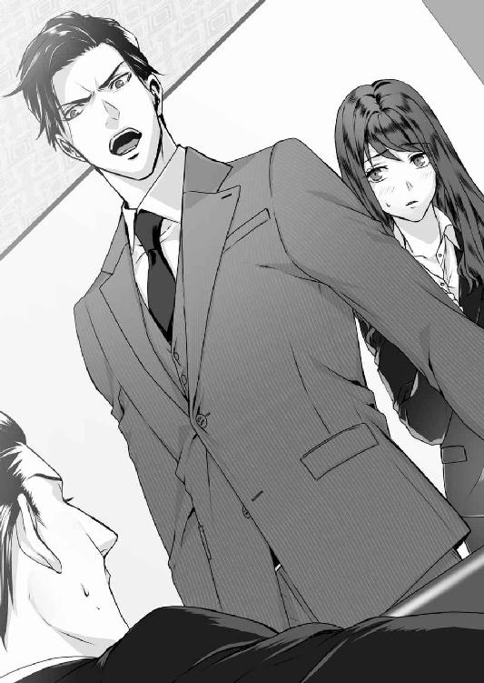
「真珠は連れて行きますよ。父親が死んだんだ。仕事なんかしている場合じゃないでしょう」
動かない侑木を見て勝利を確信したのか、薄ら笑いを浮かべた凌士が歩み寄ってくる。さっと身を固くした真珠の腕を、侑木が掴んで引き寄せた。
つんのめるように侑木の隣に立った真珠は、この部屋に入って初めて侑木の顔を見た。
彫像のように整った彼の横顔は、想像よりずっと余裕と自信に満ちていて、こんな時なのに、真珠は少しほっとしていた。では、さっき聞いたと思った呟きは聞き違いだったのだろうか。
「その通りだが、彼女は僕が長野まで送っていく。君たちこそすぐにでもお引き取り願いたい。断るまでもないが、こちらにはその権利がある」
すでに扉の外には、警備員が待機している。元来小心な紘一は萎縮しきっているが、空元気なのか意地なのか、凌士だけは唇に笑いを張りつけている。
「そりゃ、ここはあんたの城ですからね。でも、真珠を引き留める権利まではないはずだ」
「それが、あるんだ」
落ち着き払った声で、侑木は言った。
「さらに言えば、僕にはその遺言状が適正なものか否か、確かめる権利さえある。何故なら」
不意に静まり返った空気の中、はっきりと通る声で侑木は続けた。
「ここにいる墨田真珠さんは、近い将来僕の妻になる人だからだ」
「先ほどの一件ですが、放置しておくと、週刊誌に書かれる可能性がありますね」
社長室──ソファにうなだれて座っていた真珠は、入室した王の一言ではっと我に返った。
「どういう意味だ」
自身のデスクで、ずっと難しい顔で沈思していた侑木が、物憂げに顔を上げる。
「全日についてきた記者が、まだ社内に残っていたようなんです。今、二社から広報に裏取りの電話がかかってきました。どうしますか」
「......いずれ、こちらから発表するので、それまで待つように言ってくれ」
頷いた王の非難がましい目が、露骨に真珠に向けられる。真珠は事の大きさに言葉もなく、再び室内に侑木と二人で取り残された。
あの後、真珠は、侑木に腕を引かれるようにして十階のオフィスに連れ戻された。その時は、彼の強引さや自信に溢れた態度に抗えなかったが、真珠とともに社長室に入り、周囲の雑音を遮るように扉を閉めると、侑木の態度は一変した。
恐ろしく不機嫌そうな顔でデスクに座ったきり、一言も口を利かない。拳を唇の辺りに当て、眉間に深い縦皺を寄せ、見えない何かを睨みつけるような目でずっと沈思し続けている。
きっと彼は、自身の軽率な言動を悔いているのだろう。ただそれは真珠にとっても「なんであんな真似をしたんですか」と責めてやりたい部分だった。
来客応接での騒ぎは、もう思い出すのも嫌なくらいだ。逸見親子が警備員に急き立てられながら出て行った後、どこからともなく拍手が起こり、それは瞬く間にフロア中に伝播した。
（社長、おめでとうございます！ コングラッチュレイション）
外国人や、海外で仕事をした経験がある者が多いせいか、このからっとした社員気質がプリズン・ジャパンのいいところである。しかしその時の真珠にとって、彼らの祝福はまるで拷問のようだった。間違いなく、侑木はその場限りの抗弁として、あんな馬鹿なことを言ったのだ。それをこんな騒ぎにしてしまって──どう収拾をつけるつもりなのだろうか。
「さっきは悪かった」
不意に侑木が口を開いた。
真珠はびくっとして顔を上げる。見上げた侑木の顔は、多少ぎこちなくはあったが、強いて、普段通りの微笑を浮かべようとしているように見えた。
彼は席を立ち、真珠の対面のソファに腰を下ろした。
「墨田さんの置かれた状況について僕なりに考えを整理してみたんだが、その前に聞いておきたいことがある。君は、あの逸見とかいう男と結婚する意思があるのか？」
「いえ、死んだって嫌です」
「......そうか」
侑木の表情に安堵が滲むのが判る。胸が熱くなったが、真珠はあえて気にしないことにした。
もう、この人の態度や言動に一喜一憂するのはやめた方がいい。これ以上は何があっても彼に立ち入って欲しくない──つまり、この辺りが彼との関係の引き時なのだ。
「君はあの男をとても嫌っているようだね。そのことを、君の亡くなったお父さんは？」
「知っていたはずです。だから余計信じられません。あんな遺言状を父が書くなんて」
「部屋に置いてあったのは遺言状のコピーだった。原本がどこにあるか聞いたかい？」
「......逸見さんの......先ほどの人たちですけど、あの人たちの弁護士が保管していると言っていました。どうしてそんなことになったのかは、判りませんが」
「お父さんがどういう状況でお亡くなりになったのか、教えてもらってもいいだろうか」
真珠が凌士に聞いた話を伝えると、侑木は再び黙り込んだ。表情だけを見れば先ほどより深刻そうに見えるのに、目だけが異様な光を帯びている。
一方真珠は、ようやく彼の質問に馬鹿みたいに素直に答えていたことに気がついた。──これ以上彼に首を突っ込んで欲しくないはずなのに、私は何をやっているんだろう。
判っている。多分未練だ。結局のところ私は、彼との時間が過ぎるのを惜しんでいるのだ。
「あの......、私、そろそろ退社してもいいですか」
その未練を断ち切るように、真珠は侑木の目を見ないままで続けた。
「ここにいても事情がまるで判らないですし、とにかく実家に帰りたいんです。遺言状の内容は私もおかしいと思っていますし、落ち着いたら弁護士を探すつもりですから」
「だったら僕がご実家まで車で送ろう。すぐに王にスケジュールを調整させるよ」
「それは、勘弁してください」
うつむいたままで言うと、侑木が微かに嘆息するのが判った。
「僕が行っても迷惑だろうが、ぜひ同行させてもらえないか。君は顔色も悪いし、なにより精神状態がよくないようだ。さっきの連中の言いなりになってしまいそうで心配なんだよ」
「だから弁護士を探します。いずれにしても、これは私個人の問題ですから」
「──待ってくれ」
ようやく真珠の頑なな態度を不審に思ったのか、侑木は訝しむような目になった。
「君は僕の......、語弊があるかもしれないが、妹のようなものなんだ。あの遺言状の恐ろしい意味が本当に君には判っているのか？ とても君一人で行かせるわけにはいかないよ」
「恐ろしいってなんですか、まさか遺産目当てに殺されるとでも？」
真珠は冗談めかして、苦笑を浮かべたが、侑木の目は真剣だった。
「応接室の外で、あの男の父親が携帯で話すのを聞いたよ。相当厳しい借金の取り立てへの対応のようだった。つまりあの親子にとっては唯一、君との結婚だけが命綱の可能性がある」
血の気が引くのを感じたが、真珠は平静を装った。侑木が身を乗り出してくる。
「判ってくれないか。君と結婚するために、あの男はどんな汚い手を打ってくるか判らない。僕に、それを黙って見ておくことなどできないんだ」
「どうしてですか」
ひどく静かな気持ちで問うと、何故か侑木は虚を衝かれたように、数秒、言葉を詰まらせた。
「......理由は今、説明した」
「私が妹のようなものだから？」
冷静に切り返したつもりが、その瞬間自分の表情が歪むのが判った。父の死を知って以来、ずっと自分を支えていたものが、今、もろくも崩れそうになっている。本当は怖くて不安で心細かった。いっそのこと、この激情のまま彼にすがってしまいたい。
けれど、それをのみ込んで真珠は続けた。
「でも現実には、私たちは他人ですし、私は社長のことを兄だなんて思った事はありません。少なくとも私の実家のことで、社長の手を煩わせたくないんです」
「僕自身がそうしたいんだ。それでもだめかい？」
唇を引き結んだままで首を横に振ると、しばらく黙っていた侑木は、深い溜息をついた。
「......判った。ただ、これだけは僕の言う通りにしてくれないか。通夜と葬儀には、僕の決めた人を同行させて欲しい。弁護士で、君にも面識のある女性だ」
「......誰ですか」
「水希理子さんだ。今は表立って仕事をしていないが、彼女は元々弁護士をしていたんだ」
今度は真珠が、衝撃を受けて黙り込む番だった。──水希理子。侑木さんの元妻だ。あの人が弁護士？ 言っては悪いが冗談だとしか思えない。それ以前に、自分の元妻を私に同行させるなんて......。
真珠の動揺など判りもしないのか、侑木は微笑む。
「彼女がいかに優秀な弁護士であるかは僕が保証する。それだったらのんでもらえるね？」
真珠は眉根に力がこもるのを感じながら、あまりに無邪気すぎる侑木の言葉を反芻した。
この期に及んでそんなことを言う。つまりこの人は気づきさえしなかったのだ。私が二人の密会にどれだけ心を痛め、醜い嫉妬に苦しんでいたかということに。──
「すみません。お断りします。家には使用人もいますし、私一人で大丈夫ですから」
真珠は切り捨てるように言って立ち上がった。扉に向かおうとすると、その前に侑木が立ち塞がる。彼の目は明らかに怒って見えた。
「いい加減にしないか。さっきから何をそんなに意地になっているんだ。確かに君が今普通の状況でないことは理解している。それでも、僕に対する態度は明らかに常軌を逸しているぞ」
彼の言う通りだ。今の私ほど、失礼で無礼で恩知らずの女もいないだろう。しかし、努めて冷淡に真珠は振り返った。これで、本当に終わりにするつもりで。
「なんでそんなに、私にこだわるんですか？」
「......なんだと？」
「社長にとっては妹に対するような態度であり、親切だったのかもしれませんが、私から見れば違います。本当はそういうの、ずっと迷惑だったんです」
侑木が驚きで目をみはるのが判る。顔を背けながら、真珠は続けた。
「さっきも結婚するとか言われて、どれだけ恥ずかしかったか判ります？ 社長はシカゴに帰れば終わりでしょうけど、わ──私は違います。からかわれて恥をかくのは私なんです」
真珠は一歩後ろに引いた。自分の口から出た言葉のひどさに、胸がはりさけそうだった。
「私の態度が社長を誤解させていたなら謝ります。でも今、はっきり迷惑だと言いました。これからは、公私を分けて私と接するようにしてください」
いきなり影に覆われ、強い力で肩を掴まれた。声もないままに壁に押しつけられ、すくい上げるように唇が重なった。
何が起きているのか判らなかった。侑木の唇の柔らかさや想像を越えた感触に、頭の芯が一気に痺れた。不意打ちのキスは無防備だった真珠の唇の間に割って入り、強く、荒く、まるで真珠の全部を奪い尽くすように強引に続いた。
真珠は放心状態で、目を閉じることさえ忘れていた。なのに視界は真っ暗で、その中で白い、小さな光だけが瞬いていた。彼のぬくもりが服を通して伝わってくる。いつも仄かに感じる香りが、自分のもののように近くにある。
彼の両手が腰に回され、いっそう強く抱き寄せられた。手も足も、麻痺したようにびくともせず、ゆっくりと唇が離された時には、真珠は自分の力で立つことさえできなかった。
心臓が怖いほどドキドキしている。胸が絞られるような切なさで息もできない。恋い焦がれていた侑木の胸や腕が今もなお真珠を包み込んでいる。彼の吐息や鼓動が現実の音として聞こえてくる。信じられないけど夢じゃない──今、ずっと好きだった人とキスをしたのだ。
それが遅れて判り始めた途端、目の奥が潤むように熱くなった。歓喜で震える身体とは裏腹に心のどこかが暗い悲しみの淵に沈んでいく。一体侑木は、どんな気持ちでこんな真似をしたのだろう。怒り？ それとも反抗した私に対する征服欲？
睫毛を震わせながら顔を上げると、自分を見下ろす侑木の目が正面にあった。堪えきれない涙が目の縁で膨らんだ時、彼は明らかな動揺を見せ、表情に苦悩の色を浮き上がらせた。
「......君が」
大きな手が真珠の頬を抱き、愛おしむように撫でてから、ぎこちなく離れた。
「君が僕を好きじゃないなんて、......嘘だ」
その時、扉をノックする音と、王の、侑木を呼ぶ声がした。
「ここにいてくれ。いいね、僕が戻るまでどこにも行ってはだめだ」
囁いた侑木が身体を離し、普段の彼に戻って退室する。
真珠は壁にもたれたまま、ずるずると膝をついた。
動悸が激しく、自分が息をしているかどうかも判らない。ただ、思い知らされていた。
引き返すことなんて、もうできない。もう、彼を好きなこの気持ちは何をしても消すことなんてできない......。
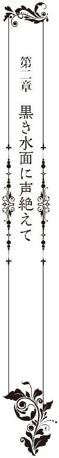
泥濘を踏みにじる足音が、闇の向こうから近づいてくる。
ぬちゃっ、ぬちゃっ、ぬちゃっ、ぬちゃっ......。
──助けて......。
足は動かず、声は喉の奥に張りついている。上空から生ぬるい風が吹きつけ、密生した木々の群れが一斉に揺れた。
──助けて......、苦しい......、誰か、誰か助けて......。
やがて闇から黒い塊が現れる。見上げるほど巨大な黒い影。その影は、ひどく高いところから真珠を見下ろし──
真珠は目を見開いたままで跳ね起きた。全身が冷たい汗に濡れ、動悸が速くなっている。
──夢......。
はーっと息を吐いて、汗で濡れた髪に指を入れる。その指が、まだ微かに震えている。
これは夢だ。数ヵ月前から見るようになった例の夢。それが、今日はいやにリアルだった。湿った匂い、肌を撫でる生ぬるい風。まるで、本当に体験した出来事のように。
呼吸を静めながら顔を上げると、朝の日差しが、カーテンの裾から入り込んでいた。見慣れない色のカーテンと、くすんだ木目調の壁。──ここは東京ではない。長野県の山間にある、真珠が生まれ育った家なのである。
昨夜、一晩中屋根を叩き続けていた雨はいつの間にか止んでいる。真珠は物憂く顔を上げると、数年ぶりに一夜を過ごした子供時代の部屋を見回した。
アンティークな家具に、黒ずんだ板張り天井。そこからぶらさがるシャンデリア。真珠が昔使っていた部屋は、時が止まったように、七歳だった頃から何ひとつ変わっていない。
変わらないのは部屋だけではない。築百年を超えるこの屋敷と、それを取り巻く情景全てが、切り取られた写真のように時を止めてしまっている。
着替えを済ませて廊下に出ると、改めて、自分が東京の日常とはかけ離れた場所にいることが思い知らされた。
鎧戸が全て閉じられているせいか、廊下は昼夜を問わず薄暗く、視線を西に向ければ、そこには一階に下りるためのらせん階段がある。そしてその先は──つまり真珠の部屋から見てらせん階段を挟んだ反対側は、頑丈な鉄の扉で閉ざされている。
かつての母の居住エリア。そして今は、姉の永莉がその扉の向こうで暮らしている。同じ屋敷内に住みながら、真珠はまだ一度もその扉の向こうを見たことがない。
嫌なものから目を背けるように、真珠はらせん階段に視線を向けた。実はそこにも苦手にしているものがあるので、できるだけ目に入らないように顔を伏せる。けれど逆に、思わぬものが視界に飛び込んできた。
「おはよう」
その一瞬、真珠は自分が東京の、侑木のオフィスにいるのではないかと思った。
らせん階段の半ばに侑木が立っていて、こちらを見上げて微笑んでいる。白いシャツに、長い脚を包む黒のパンツ。整髪料をつけていない髪は、普段より少しラフに額にかかっている。
「いい朝だね。よければ朝食前に散歩に出てみないか」
「......、......、ゆ」
呆然とする真珠の中に、本当の現実が戻ってくる。そうだった、昨夜は侑木さんもこの家に泊まったんだった。私と一緒に東京から車で来て──いや、その前に。
「さ、散歩、ですか？」
ぎこちなく答え、真珠は赤く染まった頬をごまかすように顔を背けた。
どうしてこのタイミングで、いきなり昨日のキスのことを思い出してしまったのだろう。父が亡くなったばかりだというのに。しかも昨夜、この件は何度も忘れようと自分に言い聞かせて、すっかり頭から追い払ったつもりだったのに──
「どうした？」
「い、いえ......」
ぎこちなく答える真珠を不思議そうに見つめた侑木は、しかしすぐに屈託なく微笑んだ。
「こんな日に不謹慎かな。朝は出勤前にジムに行くのが日課でね。起き抜けに運動しないと落ち着かないんだ」
「......それは、別に。まだ父の遺体も警察ですし、葬儀は早くて午後の予定ですから」
そっと顔を上げて侑木を見つめながら、今見ている光景は本当に現実だろうかと、真珠は思った。
侑木が、真珠の育った場所にいる。あのスタイリッシュな彼が、陰鬱な洋館になんの違和感もなく溶け込んで、前日の諍いなどまるでなかったように爽やかに笑っている。
「それより昨日は気づかなかった。この壁に飾られている写真は、君のご先祖様たちかな」
そう言った侑木の視線が、真珠が意識的に目を逸らしていたものに向けられた。
吹き抜けになっているらせん階段周辺の壁。そこに大小さまざまな肖像画が掛けられているのだ。それは途中から写真に代わり、丁度侑木の立つ辺りで途切れている。
侑木の肩越しでは、十五年前に亡くなった母が、どこか遠くを見るような目で佇んでいた。
ぼんやりと霞んだ瞳、青ざめた白い肌。長い髪が両胸を覆い、写ってはいないが彼女の膝に渦を巻いて落ちている。写真の下には小さなプレートが貼られており、そこに母の名前と生没年が刻まれていた。──墨田瑠璃子 平成十五年七月十五日没 享年三十三歳
「綺麗な人だね。目鼻立ちの印象は違うが、顔の形が君と瓜二つだ」
「そうでしょうか。どちらかといえば、私は父親似だとよく言われるんですが......」
真珠は微笑もうとしたが、それは唇を曖昧に歪めさせただけだった。
この、まるで死者の展示場のような踊り場の壁。一体誰がこんな悪趣味なことを思いついたのだろう。やがてこの屍の列に自分も加わるのだと思うと、どうしようもないほど絶望的な気持ちに見舞われる。
しかし侑木は熱心に写真を見つめながら続けた。
「確かに君の目鼻立ちはお父さんによく似ているようだね。昨日若い頃の写真を拝見したが中々の美男子だった。──隣の写真は君のお祖父さんだね、その隣はお祖母さんかな」
母の隣にあるのは、目鼻の離れた能面のような顔をした男の写真だ。──祖父の御園生宇月、平成元年七月十二日没 享年四十三歳。そしてその隣には、母と瓜二つの寂しげな顔をした女性の写真がある。御園生紅玉、平成元年七月十七日没 享年三十九歳。
母が墨田姓で祖父母が御園生姓なのは、母が結婚して夫の籍に入ったからだ。この屋敷は元々母の生家、御園生家のものだったが、母が亡くなった時点で墨田巌の所有物となったのである。
「......君のご実家では、もしかして女性が家を継ぐというしきたりでもあるのかな」
「え？」
「こうしてみると、女性たちの顔が非常によく似通っているのが判るんだ。目と眉の距離、頬骨の形などがね。その逆に、男性陣の顔はバラバラだ。色々なタイプが入り交じっている」
「......、そ、そうです。そんなの見て判るものなんですか。うちは......墨田に嫁いだ母だけが例外で、後は全て婿養子を取っているんです」
「全て？ それはどのくらい前から？」
「......江戸の......中期くらいでしょうか。はっきり確認したことはないですけど」
「おかしいね。それだと先日会社に訪ねてきた君の伯父さんはどういう立場になるんだい？」
それは──と、真珠が口を開こうとした時だった。
「養子です。紅玉様に第二子が望めないと判った時、宇月様がご自身の親戚から紘一様を引き取って養子になさったのです」
陰鬱な嗄れ声に、真珠はびくっと肩を震わせた。
階段の下から、ぞっとするような肉色のマスクが、真珠と侑木を見上げている。そのマスクにぽっかり空いた空虚な二つの穴の下で、闇のような目がぎょろりと動いた。
住み込みの使用人──いや、もう使用人の域を超えている。家事一切を執り仕切る、執事の冬斑志信である。
「おはようございます。冬斑さん。夕べは遅くまでありがとうございました」
昨夜、初めて冬斑と会った時もさほど驚きを見せなかった侑木は、今朝も普段と同じ笑顔を冬斑に向けた。
「今から、永莉さんのところですか。私は真珠さんと、少し外に出てみようと思うのですが」
冬斑は、暗闇のような眼窩を一時侑木に留め、すぐに逸らした。
「......あと三十分で朝食ですので、それまでにはお戻りください」
掠れた声で答える冬斑は、薬と水差しを載せたトレーを持っている。その手には白い手袋。それだけでなく、冬斑はどんな暑い日でも肌を一切露出させない。理由は、彼が若い頃、生死にかかわる大火傷を負ったためだと聞いている。
「すみません、お急ぎでしょうがあとひとつだけ。先ほどの話ですが、養子である紘一さんは、今は家を出て逸見姓になっていますね。それはどうしてでしょう」
「逸見というのは紘一様のご生家です。巌様と瑠璃子お嬢様のご結婚が決まった折に、諸事情から離縁されたと聞いています」
「何故でしょう。瑠璃子さんは墨田家に嫁がれたのだから、紘一さんが離縁されてしまえば、御園生家を継ぐものはいなくなってしまいますよね」
「さぁ、私はその当時、屋敷にはおりませんでしたので」
「ああ、昨日の夜お聞きしました。冬斑さんには、何年か屋敷を出られていた時期があるというお話でしたね」
冬斑はそれには答えず、背を丸め、どこかちぐはぐな足取りで階段を上がっていった。
傍らで二人の会話を聞いていた真珠は、言葉もなかった。冬斑の突然の出現は、侑木と話すことで日常を取り戻しかけていた真珠の気持ちを、一気に現実に引き戻した。
顔を覆うマスクは火傷痕を隠すため、背中の歪曲も、足の動きに制限があるのも、火傷治療の後遺症だというのは判っている。それでも子供時代、薄暗い邸内でうっかり冬斑と出くわした時など、足がすくんでしまうほど恐ろしかったのをよく覚えている。
当時の冬斑は母専属の使用人で、母が暮らす居住スペースから殆ど外に出てこなかったのも、彼の外見に慣れることのできなかった原因のひとつだ。もちろん初見の人は、場合によっては悲鳴を上げるほど驚くのだが、侑木だけは初対面の時から不思議なくらい平然としている。
やがて、階段の半ばに立つ二人の頭上で、鉄の扉が開かれる重々しい音が響く。真珠は顔を背け、思わず目を閉じていた。
子供の頃は、母と外界を分かつ頑丈な扉に、得体の知れない不気味さこそ感じはしたが、ここまで嫌な気持ちにはならなかった。東京に出て、世間の現実を知ってからだ。あの重たい扉の向こうが、一種の隔離病棟だと判ったのは。
「......どうした？ ひどく怖い顔をしているよ」
「い、いえ......。もしかして夕べ、私が寝てから、冬斑さんと何か話したんですか」
「ちょっとした世間話をね。尤も僕が一方的に喋っていただけだが」
「......冬斑さん、失礼な態度を取らなかったですか。マスクで表情が判らないせいもあるんですが、あの人には少し愛想のないところがあって」
「そんなことはなかったよ。口数は少ないが、彼はとてもクレバーな人だ。僕は誘導尋問が相当上手い方なんだが、殆ど一言も、余計な情報を漏らさなかったからね」
侑木は微笑して、視線を階下に巡らせた。
「さて、時間制限もあることだし、早目に外に出てみようか」
真珠は戸惑いながらうつむいた。一体彼の屈託のなさは、どこから来ているのだろう。
昨日、東京からこの屋敷に到着して以来、冬斑の異様すぎる外見や、挨拶にも出てこなかった永莉のことなど、侑木が不審に思っていい場面はいくらでもあった。
なのに彼の態度は一貫して変わらない。東京を出る時こそ、真珠は侑木の強引さに憤りを感じていたし、侑木の態度にも、真珠の反論を断固として許さない冷たさがあったが、それもわずかな間だけで、長野に着く頃には、二人は普段通りの会話を交わしていた。
結局どう頑張ってみても、真珠に、侑木を拒絶し続けることなどできないのだ。
しかし侑木はどうなのだろうか。この幽霊屋敷のような西洋館にも、そこに住み暮らす異様な人たちにも、なんの不思議も覚えないのだろうか。──
「悪いんですけど、私......、とても、外に出るような気分にはなれなくて」
真珠は気乗りしないまま視線を下げた。彼と朝の散歩を楽しむような気分ではないという以前に、どうしてだか、あまりこの辺りを歩き回りたくないという気持ちの方が強い。
「そうか。だったら僕一人で出かけてくるよ。部屋の窓からとてもきれいな湖が見えたんだ。ちょっと近くで見てみたくね」
その言葉で、謝る言葉を考えていた真珠は、弾かれたように我に返った。
「だめ──だめです。あの辺りは道が入り組んでいて、大人でもよく迷うんです！」
「それほど距離がありそうには見えなかった。それに僕は、山歩きは得意だから大丈夫だよ」
「判りました。着替えてきますから、少しの間待っていてください」
真珠の変容に、侑木が少し驚いたように瞬きをする。
「そんなに無理をしなくてもいいんだよ」
「大丈夫です。とにかく絶対に一人で行かないでください！」
二人を囲む樹木の密生地からは、梟にも似た鳥の鳴き声がする。朝靄にけぶる早朝の空気はひんやりとして、屋敷を囲む山全体が薄い霧に覆われているようだった。
侑木について歩きながら、真珠は早くも憂鬱な気持ちになっていた。多分、それは行先のせいだ。侑木が見たいと言った湖──いや、正確には湖ではなく人工のため池。そこが、これまで数多の人命を奪った恐ろしい場所だからだ。
──最後にこの道を歩いたのは、いつだっけ......。
母が死んだ年の暮れに家を出ることになった真珠は、以来、二度とあの池に足を運んでいない。子供時代は遊び場だった場所──お手伝いのお姉さんと手を繋いで歩いた畦道──楽しかった記憶は全て別の何かで上書きされてしまったのか、今は無性に気味が悪く、記憶の断片が蘇る度に奇妙な胸苦しささえ感じてしまう。
「......冬斑さん、昨夜何か言っていなかったですか。私と、侑木さんのことで」
「僕らのことで？ まぁ──急な話だし、信じてはいないようだったね」
昨夜、侑木と家に着いた時、丁度居間には警察がいて、父の死因について冬斑に説明している最中だった。真珠は遠慮するつもりだったが、侑木はなんら躊躇なくその場に同席を申し出ると、自らを真珠の婚約者だと言って紹介した。
警察はともかく、冬斑は明らかに驚いていた。真珠自身も動揺したし、驚きもしたが、すぐに侑木の意図を理解して同調した。明日──つまり今日の葬儀で、侑木は逸見父子と再び対面することになる。その時彼の立場は、「真珠の婚約者」でなければならないからだ。
しかし、それでも真珠の態度は明らかにぎこちなかったし、冬斑も二人の関係に不自然さを感じ取っていたようだった。ただ、上手く振る舞えと言われてもできるわけがない。侑木にとっては真珠を守るための口実でも、真珠にとっては叶うことのない残酷な夢なのだ。
侑木との結婚など想像も期待もしたくない。なのに、婚約者だとためらいもなく口にした彼の横顔や、その後自分を見つめてくれた優しい目に、今も胸が切なく締めつけられる。あり得ないと判っているのに、彼との未来に微かな期待を抱いてしまっている自分がいる。──
その時の警察の説明によると、父の死因は心不全だった。不整脈を患っていた父は、春に心臓弁の異常を指摘されていたらしく、前日もかかりつけ医の診察を受けたばかりだったという。
（先生が病死と判断してくれてほっとしました。こんな言い方をしたらご遺族の方には不謹慎でしょうが、実は墨田氏がお亡くなりになっていた書斎は、完全な密室だったんです）
所用で冬斑が席を立った後、残った侑木相手に、若い警察官は饒舌に話を続けた。
（入口にも窓にも、内側から施錠してあって、外から人が入った形跡は一切ありませんでした。これで万が一殺人ということになったら、我々は頭を抱えていましたよ）
（書斎の中で墨田氏は何を？ わざわざ鍵をかけたというからには、何か、人目を避けるようなことでもされていたんでしょうか）
侑木は何気ない風に話を進めたが、彼がその実、この話題にひどく興味を引かれたのが、隣に座っていた真珠には判った。
（判りません。墨田氏は机に伏せるような形で亡くなっておられたんですが、卓上は綺麗に片付けられていて、ペン一本置かれていませんでしたから）
そこで冬斑が戻ってきたのだが、冬斑は、侑木が勝手に質問をしたことに、ひどく不快な思いを抱いたようだった。
父の遺言状については、冬斑も大まかには事態を察していたらしく、それは双方の弁護士立ち会いのもと、今日の葬儀後に開封されることになっている。真珠の弁護士は、侑木の元妻、水希理子だ。ただし、現在弁護士業をしていない理子に依頼するのはあくまで初期対応であって、いずれは別の弁護士を探す予定になっている。
「......あっ」
不意に泥濘に足を取られ、理子のことを考えていた真珠は無防備にバランスを崩してよろめいた。すぐに侑木が手を差し出し、空を泳ぐ真珠の手を取ってくれる。
「大丈夫？」
「す、すみません。注意力散漫でした」
「いや、山道に慣れている僕が注意すべきだった」
いたわるように言うと、侑木は真珠の手を握ったままで歩き出した。
「あ、手......」
「危ないからこのままでいよう。それに、君には、僕に慣れてもらわないといけないからね」
「え......？」
「僕が近づいたら、その分だけ君は離れただろう？ ──昨日のことだよ。あれじゃあ、誰が見ても不自然だし、第一僕の立場がない」
「っ、ご、ごめんなさい。私、そんなつもりじゃ」
「冗談だよ」
笑いを噛み殺しながら答えた侑木は、指を絡めるようにして真珠の手を握り直した。
「この空模様では、夜にはまた降り出しそうだね」
「......、そ、そうですね」
「気をつけて、足元が大分ぬかるんでいるよ」
いや、今の問題はそこだろうか。こういう手の繫ぎ方って、普通はもっと親しい──恋人同士がするものではないだろうか。
鼓動が一気に高まってくる。どうしよう。このままでいていいのだろうか。こんな風に急に距離を詰められても、正直、どうしていいか判らない。一体彼は、今どういう気持ちでいるのだろう。だいたい、昨日のキスだって──
「ん？ 疲れた？」
「......っ、えっ、いえっ」
足を止めた真珠を侑木が見下ろしたので、真珠は咄嗟に手を振りほどいてしまっていた。
かぁっと顔が首まで熱くなり、躍るように心臓が高鳴り始める。最悪なことに、このタイミングでキスのことを思い出してしまった。彼の唇の厚み、温度──吐息──胸の疼きと痛みの全部が、今この場で起きた出来事のように生々しく蘇る。
「す、......っ、すみません。あの......」
「君が謝ることはない。僕が強引なのは自覚しているよ」
苦笑した侑木がふと視線を巡らせて、下の方でそれを留めた。
「ああ......、こうして見ると、君の家はとても美しいね」
まだ動悸が収まりきらないまま、真珠は彼の見ている方向に視線を向けた。そこには俯瞰して見た墨田邸の全景がある。二人は今、屋敷の背面を覆う傾斜道にいるのだが、そこからは横長百メートルはある屋敷が一望できるのだ。
「そうでしょうか？ 私にはただ古いだけの建物に見えますけど......」
「そんなことはないよ。特に瑠璃色の屋根は圧巻だ。遠くから君の屋敷を見たら、さぞかし美しいだろうと思うよ」
真珠はむしろ、気味の悪いものを見るような目で、眼前に広がる景色を見下ろした。濃い霧のせいか館を包む世界全体が灰色に沈んで見える。確かに昔は華麗な建物だったのかもしれないが、全てが劣化した今となっては、派手な屋根色だけが無意味に明るく寒々しい。
「子供の頃聞いた話では、この家を建てたために、うちは借金で首が回らなくなったそうです。......最終的にその借金を返済したのが、亡くなった父なんですけど」
真珠にとって、この瑠璃色屋根の豪邸は、母の悲劇の象徴だ。
両親の外見の違いは、幼い真珠にも異様としか思えなかった。二人の年の差は約三十。傍目には親子である。金のための結婚だというのは明らかで、当時屋敷にいた使用人らは、みな母に同情的だった。それどころか、母の身に起きたことは、全て父のせいだという空気まであった。
実際、母は結婚後も屋敷を出ず、東京に居を構えていた父とは、終生別居婚を貫いた。
子をなした以上、夫婦の交わりはあったのだろうが、少なくとも真珠が物心ついた頃には、二人は完全に他人だった。というより、母は重度の記憶障害を起こし、父と娘たちを完全に忘れ去っていたのである。──
「じゃ、行こうか。この道を真っすぐ上って行けばいいんだね」
「あ、はい。そのはずです」
再び歩き出した時、少し前を行く侑木の背が、ふと何かに気がついたように止まった。
「どうやらこの先は通行止めになっているようだ。どこかで道を間違えたかな」
「え？......」
そんなはずは──侑木の見る方に顔を向けた真珠の視界が、いきなり闇に覆われた。
闇は秒速の速さで縮まって、たちまち、今朝夢で見た影の形になる。見上げるほどに巨大な人型の影が、わっと伸び上がってのしかかる。
小さな悲鳴を上げて侑木の腕にしがみついた真珠を、侑木は驚いたように見下ろした。
「どうした？」
「いっ、いえ......」
闇がかききえた視界の向こうに、真っ黒な鉄柵が現れた。天を突く槍のようなデザインで、丈は侑木の背ほどもある。
心臓が鈍く鳴り始めた。柵──真っ黒な鉄の柵。よりによって、ここで夢に似た幻を見たのは偶然だろうか。黒い鉄柵は境界だ。あの向こうは──呪われているのだ。
その時ふっと影に覆われる。次の瞬間、いきなり真珠の身体は空に浮いた。
「きゃっ」
驚いた真珠は、咄嗟に目の前のものにしがみついた。そして、数秒遅れで何が起きたか理解した。侑木が、真珠を横抱きにして、抱え上げてくれたのだ。
「──なっ、なな、なにしてるんですか」
「なにって顔色が真っ青だ。──いや、今はもう真っ赤だが」
「は......、は？」
「気分が悪いなら、もう戻ろう。心配だからこのまま家まで連れて帰るよ」
顔全体が燃えているようだった。真珠は半ばパニックになったまま、侑木の視線から逃げるように慌てて周囲を見回した。
「ちょっ、......こ、困ります。こんなの、家の誰かに見られたら」
「別にいいんじゃないか。僕らは婚約しているんだ」
「そ、そういう問題じゃなくって、普通に恥ずかしいし、それに──」
「それに？」
侑木の指を胸の膨らみのすぐ下に感じる。もう一方の手は膝裏に回され、顔と顔は、息がかかるほど近くにある。彼の目が自分に向けられるのを感じ、耐えられなくなった真珠は反射的にぎゅっと目を閉じた。数秒してから、侑木の笑うような声がする。
「ここで目をつむられたら、逆に僕の方が、どうしていいか判らなくなるよ」
「だ、だって、顔が近すぎです......」
「自分で歩けるなら、下ろすよ。でも僕は、できればこのままでいたい」
「............」
「だめかな」
自分の心臓が早鐘のようだった。彼の鼓動もまた、自分のもののように強く、速く感じられる。この人は何が言いたいんだろう。いや、それは真珠にも判っている。真珠もまた、恥ずかしさとは別の部分で、このままでいたいと思っているからだ。もう抑えられない何かの感情が胸の底から溢れてくる。もっとこの人に触れたいし、触れて欲しい──もっと......。
「侑木、さん......」
うつむいたまま、どうしてそこで、彼の名前を囁くように呼んでしまったのかは判らない。次の瞬間、唇を柔らかく塞がれて、真珠はあっという間に甘い陶酔の淵に沈み込んだ。
彼は立ったまま、横抱きにした真珠を抱きすくめるようにして、深く、情熱的に唇を重ねていく。鳥のさえずりが消え、青い空が一瞬視界を掠めて、暗くなる。
「......ん」
胸が苦しいほどに高鳴り、身体から力が抜けていく──まるで夢の中にいるような心持ちだった。彼の呼吸、芳しい香り、シャツを通して感じられる肉体のしなやかさと硬さ。
唇の内膜の濡れた感触が、胸の最も暗い部分を疼くように痺れさせる。真珠は、自分も唇を開こうとしたが、そうする間もないくらい彼のキスは力強く、容赦なかった。
「ん......、っ」
頭の中が白くなり、次第に何も考えられなくなる。最初のキスの時も思ったが、穏やかで理性的な侑木のどこに、こんな荒々しい、野性じみた部分が隠されていたのだろう。──
やがて未練を残すように唇が離れ、なおも啄むような短いキスを繰り返した後、ようやく侑木は顔を離した。互いの呼吸が乱れている。心臓の音が煩くて言葉が何も出てこない。
「......怖い思いをさせた？」
掠れた声で侑木は囁き、真珠は放心したまま、首をそっと横に振った。
最後に交わした短いキスで、もう自分は、彼の恋人なのかもしれないと夢現に思っていた。それはまるで、自分の所有物にするような、執着と愛着のこもったキスだったからだ。
「キスは初めて？」
「な、何言ってんですか。初めてじゃない、ですよ」
「初めてじゃない？」
「だって、昨日......」
しどろもどろに答えると、一瞬険しさをみせた侑木の目に笑いが広がり、彼は顎を引いた真珠の額に、二度、三度、愛おしげなキスを落とした。
「僕には、とてももどかしいキスだった」
「──っ、ご、ごめんなさい。私、やり方がよく判らなくて」
「僕の手が塞がっていたという意味だよ。でも君にはそれが幸いだったのかもしれないね」
意味が判らずに首をかしげると、侑木は困ったように苦笑した。
「判らないならいいよ。どうする？ 道を間違えたようだし、このまま家まで引き返そうか」
真珠は、一瞬黙って、眼前に立ち塞がる鉄柵を見つめた。
「いえ、......間違いじゃないんです。昔と変わっていなければ、柵は内鍵を外せば開くはずです。もちろん行かない方がいい場所ではあるんですけど」
彼に、十五池のことを話してみよう。それでどう思われるかはともかく、自分の心の中に閉じ込めていたもの見せてみよう。真珠は初めて、そんな風に思っていた。
鉄柵を越えてしばらく歩くと、そこでようやく視界が開け、手を繫ぐ二人の前に鮮やかな緑が広がった。池──巨大なため池である。その表面が新緑色の水草で覆われているのだ。
「ここは湖ではなく、農業用のため池なんです。正式な名称は判りませんが、漢数字で十五と書いて、十五池と呼ばれています」
「十五池......」
呟いた侑木が、視線を眼前の光景に巡らせた。
真珠も無言で、十数年ぶりに見る景色に目を向けた。子供時代も随分大きな池だと思っていたが、今見てもその巨大さには圧倒されるばかりだ。そして皮肉なことに、昔と変わらずお伽話の一場面のように美しい。
池の片側からは木々がすだれのように覆い被さり、山風に吹かれて揺れていた。新緑の水面に木漏れ日が輝いて、二人の足元には真っ赤な花が咲き乱れている。
真珠から手を離した侑木が膝をつき、花の一輪に手を添えた。
「驚いたな、彼岸花だ。この時期咲いているのを初めて見たよ」
「狂い咲きです。理由は判りませんけど、ここでは殆ど一年中咲いているんです。......綺麗な場所ですから、子供の頃はここが私の遊び場でした。行ってはいけないと言われていましたが、お手伝いさんにせがんで、こっそり連れてきてもらっていたんです」
「行ってはいけない、とは？」
「......私の母と祖母が、この池で亡くなっているんです。それ以前にも住み込みのお手伝いさんが、やはりここで亡くなったという話です。......この池は水深はさほどでもないんですが、誤って転落したら、大人でも一人じゃ上がってこられないそうなんです」
池の周辺はすり鉢状に積み上げられた岩で囲まれており、しかもその表面は苔や藻でぬるぬるになっている。掴まるところがないだけでなく、水中で絡み合った水草に足をとられると、あとは引き込まれるように水底に沈んでいくしかないという。
まるで、一度落ちたら二度と這い上がれない蟻地獄のように。
「侑木さん、呪いって信じます？」
真珠はいつかのように、侑木が笑い出すことを期待したが、彼は一瞬、明らかに驚きで目をみはった。
「......いや、僕はそんなものは一切信じないが、それが？」
「うちに関係した人間がこの池で命を落とすのは、ここがうちにとって因縁のある場所だからなんです。祖母も母も池のことはとても恐れていて、母に至っては、さっき見た鉄柵まで作って池に近寄らないようにしていました。なのに──結局祖母も母も、どうしてだか一人で池に行って亡くなってしまったんです」
「二人が池に行ったのは何か理由があったからだよ。それを君が知らないだけの話で」
不思議そうに侑木は言ったが、そんな風に割り切れたらどんなに楽だろうと真珠は思った。きっと侑木が住む世界には、不思議な出来事など存在しない。全てに理由があり、ないものはたまたま起きた偶然だ。──けれど今は、そんな侑木の単純明快な思考が、唯一の救いのように思える。
「少し落ち着いて話してごらん。一体この池が、君の家にどうかかわっているんだい？」
侑木に促され、一呼吸してから真珠は口を開いた。
「実は十五池とは、十五年ごとに十五歳の娘を生きたまま沈めたことからついた名前なんです。そして、その儀式を主催したのがうちの祖先だと言われているんです」
子供の頃に聞いた話です──と前置きしてから真珠は続けた。
それは千六百年代、時代でいえば江戸初期の頃の話である。
この地域一帯は、内陸にありがちな干ばつで、何年かに一度、地獄のような飢饉に見舞われていた。そんなある時、一人の陰陽師が領主であった御園生家にふらりと立ち寄り、「干ばつを防ぎたければ、十五歳の娘を十五年ごとに水に捧げよ」とのお告げを下したという。
そこで、村に住む十五歳の少女たちの中から、一人の娘がくじにより選ばれた。
「とわという名の百姓の娘で、彼女は御園生家の奉公人でした。実はとわは、御園生家の三男と密かに想いを交わし合っていて、それを快く思わなかった主人と長男夫婦が、陰陽師と図ってとわに白羽の矢を立てたというのが、本当の話だそうなんです」
「それは......本当なら、随分ひどい話だね」
「三男は、必ず助けると約束し、とわはそれを信じて待ちました。けれど、結局その約束が守られることはありませんでした。三男に縁談が決まったんです。大きな商家に婿入りするという話です」
人柱の儀式当日、とわは、穴の開いた小舟に乗せられ、生きたまま池に流された。水辺には斧や鍬を持った百姓たちが見張りに就き、万が一とわが這い上がってくれば、突き落とすつもりで備えていたという。
「沈んでいく舟の中で、恋人の裏切りを知ったとわは、呪詛の言葉を叫び、半狂乱になって水の底に沈んでいったといいます。その様があまりに恐ろしかったので、御園生家では二度と儀式はやらないと決めたのですが、十五年後にまたひどい干ばつが起こりました。......結局、再び御園生家が主催して、人柱の儀式を再開することになったんです」
その残酷な儀式を続けざるを得なかったことが、御園生家に下された最初の罰であり呪いだったのかもしれない。そうして百年も経つ間に、人心は離れ、領民は村を捨てて逃げて行った。
「儀式は百年近く続いたといいますが、その後も、何年かおきに疫病が流行ったり、災害が起きたりして、御園生家はすっかり衰退してしまったんです。それだけじゃなく、実は御園生家には、とわを裏切った三男を最後に、男子が一人も生まれていないそうなんです」
真珠が柳沢教授の元で民俗学を学んだのは、幼い頃から聞かされてきた得体の知れない「呪い」の正体を知りたかったからだ。そんなものは実体のない伝説だと思いたかったが、少なくとも十五池に娘を沈めた儀式だけは、一行か二行ではあるが、種々の文献に記されていた。
「木の影になって見えづらいですが、あそこに慰霊碑があるのが判りますか？」
真珠が指さす先を、侑木は眉を寄せながら見た。
二人が立つ場所から五十メートルほど先にある、池の左側中央あたり。木々に隠れるようにして、人の背ほどの石碑が建てられている。
「......遠目からではよく判らないが、それほど古いものには見えないね」
「江戸時代からあった祠が壊れたので、明治に入って石碑という形で新しく慰霊碑を作ったんだそうです。というのも、江戸の終わり頃、この山で大きな土砂崩れが起きて......」
その痕跡は、百五十年近くたった今でも山のあちこちで散見できる。道が途中で塞がれたり、土石流が小山になってそのまま残されている場所もある。
「その時十五池も増水して、右側の斜面をこそぎ落とすような形で、下の家を全部押し流してしまったんです。沢山の死者が出て、御園生家でも、当時当主だった一家と親類の家が流され、一族の大半が土砂に埋もれて亡くなったといいます」
「さっきから聞いていると、それも、十五池の呪いだと言いたそうだね」
侑木の笑うような声に、真珠はやや語気を強めて反論した。
「当時の人たちがそう思っても無理はないと思います。なにしろ、十五池が溢れて、儀式を主催した御園生一族の大半を殺してしまったんです。本当に因果応報みたいじゃないですか」
侑木は答えず、ただ微笑を含んだ優しい目で真珠を見ている。そして、その目を池の方に戻しながら口を開いた。
「それにしても、少し妙だね」
「え？」
「君が子供時代に口頭で聞いた伝え話という前提だが、これだけ大きな家の領主が、奉公人の娘一人を息子から引き離すために、そこまで手のこんだ真似をする必要があったのか──というのがひとつと」
そこで言葉を切り、侑木は数秒、考え込むような間をとった。
「実は、僕も柳沢教授に師事して、日本の民俗学を学んだことがあるんだ。君の話を聞いている内に思い出したが、十五池の儀式も何かの文献で目にしたことがある。けれど、今、君が話したような逸話と、儀式を主催した一族が不幸に見舞われているという話は初めて聞いた」
──十五池を知っていた？ 侑木さんが？
一瞬強い疑問が胸を掠めたが、そもそも侑木との縁は柳沢教授から始まっているのだ。侑木が民俗学に興味を持っていたというのは初耳だが、そういうこともあるのかもしれない。
「それは......、きっとうちの者だけに伝わる、言い伝えのようなものなんだと思います。語り継がれていく内に、脚色された可能性はあるとは思いますけど」
「きっと大いにあるだろうね。で、君にその話をしたのは、お父さんかお母さんかな」
「......いえ、父も母も、そういう話は一度も」
一瞬記憶が頼りなくなった真珠だが、すぐにその正体に思い至った。
「私が家にいた頃には、住み込みのお手伝いさんが何人かいたんです。一番若い、ツネちゃんって人がよく一緒に遊んでくれて......、多分ツネちゃんが教えてくれたんだと思います」
「なるほど。しかし七歳の子供に、残酷な話をする人もいたものだね。親が伝えるならともかく、随分とおせっかいな使用人だ」
それは──真珠は言葉に詰まり、一瞬だけ唇を噛みしめた。
「警告の意味もあったんだと思います。まだ......十五池の呪いは続いているから」
「......というと？」
「さっきも少し話しましたけど、祖母と母が、どうして一人で池に行ったのか、誰もその理由を知らないんです。祖母の紅玉は、姉が生まれて間もない頃、夕暮れ時に不意に姿を消してそのまま戻ってこなくなりました。捜索隊まで組まれて、当然この池の底もさらわれましたが、遺体は一ヵ月以上、見つけることができなかったそうです」
「......結局、この池から出てきたのかい？」
小さく頷いて真珠は続けた。
「母の行動はもっと理屈がたちません。祖母は活発な人でしたから、一人で山歩きをすることも珍しくはなかったそうですが、身体が弱い母は、そもそも一人で出歩くことすらしない人だったんです。しかも祖母の死以来、池を過剰に恐れて鉄柵まで作らせたくらいです。──なのにひどい雨の夜、気づけば部屋から抜け出して、一人で池に行っていたというんです」
「......なるほど」
「その日は、母の死亡推定日でもある七月十五日なんですけど、──実は、十五池に犠牲者を沈める儀式が行われたのも、毎年七月十五日だったと言われているんですよ」
胸の底にわだかまる暗い感情を吐き出すような告白だったが、侑木の表情は変わらなかった。
「確かにそれだけ切り取ると恐ろしい話だが、君のお祖母さんの亡くなられた日は七月十五日ではないだろう」
「......でも、すごく近いんです。七月十七日ですから。ちなみに祖父は同年同月の十三日に亡くなっています」
「ご夫婦が相次いで亡くなられるのはよくある話だよ。日が近いといってひとくくりにするなら、厳密な結論など出るはずがない。、君の祖先に、他に七月十五日に亡くなられた方がいたかい？ 少なくとも僕が今朝見た写真の中には一人もいなかったと思うよ」
「それでも、おしなべて短命だとは思いませんでしたか？ 祖母と母が亡くなったのは三十代です。祖父だって四十代で亡くなっていますし、それ以前は二十代で亡くなった人も」
「けれど君のお父さんは七十半ばだ。もうひとつ言えば、君の祖父母以前の時代は戦中だし、日本人の平均寿命そのものが今と比べようもないほど短い。全員が全員、ことさら短命ということはないよ」
確かにその通りかもしれない。侑木にかかれば、全てに理由があり、説明がつく。でも──
不意に胃の奥に重苦しい感覚が生まれ、真珠は唇を噛みしめた。
ここに来るまで、絶対に侑木には知られたくないと思っていたことが、もうひとつある。
「──家の二階に、鉄の扉で閉ざされた部屋がありましたよね。あれは隔離部屋なんです。母は長い間、精神疾患を患っていて、症状がひどい時は、とても手におえるような状態じゃなかったそうなんです」
真珠は唇を震わせて言葉を切り、侑木は黙ってそんな真珠を見つめた。
「しかもあの鉄扉は、母のために作られたわけではないんです。あの扉は、家を建てた最初からあったというんです。......その意味が、判りますか」
「......君のお母さんの以前にも、隔離部屋を必要としていた人がいたということかな」
「そうです。祖母は元気な人でしたが、曾祖母は母と同じ病で、何年もあの部屋に閉じ込められていたという話です。そして今は、姉が......あの部屋で暮らしているんです」
一番辛いことを言い切った真珠は、興奮と不安でしばらく睫毛を震わせていた。侑木の反応が怖かった。けれどわずかな間の後、その侑木が笑うように嘆息するのが判った。
「それは、単に疾患や体質が遺伝しただけの話だろう。仮に統合失調症だとしても、二百人に一人がかかる病だ。別に珍しくもないし、ましてや呪いが原因だなんて馬鹿げているよ」
真珠の反論を遮るように、侑木はぽんと肩を叩いた。
「あの石碑だが、もう少し近くで見てみたいな。行ってみないか」
「......え、私......、あの近くには、あまり」
「無駄に恐れないことだ。逃げると、なんでもないことまで怖くなるばかりだよ」
足踏みする真珠の手を取ると、侑木は迷いのない足取りで歩き始めた。
傍に立つと、黒ずんだ石碑は侑木が見上げるほどの高さがあった。花崗岩の表には鎮魂碑という文字が黒々と刻まれ、その横に、こんな文字が彫りつけてある。
ぬばたまの黒き水面に声絶えて、十五の君をとわにとどめん
侑木が、少しだけ眉を寄せて刻まれた文字を復唱した。
「......短歌のようだね。とわというのは永遠という意味もあるんだろうが、きっと最初の犠牲者の名前と掛けてあるんだろう」
真珠は、おそるおそる雨で湿った石板を仰ぎ見た。この石碑には、昔、興味本位で近づいてひどく怖い思いをしたのを覚えている。刻まれた短歌に気味悪さを感じたのも理由のひとつだが、石碑の裏側に、さらに不気味なものを見つけてしまったからだ。
「ん？ 何か貼ってある。これは御札......？ 護符か何かだろうか」
案の定、裏側に回った侑木が、ふと視線を下に向ける。嫌な予感に眉をひそめながら、真珠は侑木の肩越しに、彼が見ているものを覗き見た。
「それも昔からありました。多分この近くにある神社のお守りだと思います」
『益田神社守護』。そう墨文字で記された木板が、石碑の裏側下約五十センチ四方を隠すように、複数枚並べて貼られている。表面は劣化して文字も半ば消えかけているが、真珠が子供の頃に見た、ほぼそのままの形状である。
多分、それは厄除けの護符だ。どうして鎮魂碑の裏にそんなものが貼られているのか、想像しただけで薄気味悪いが、侑木は、なんら躊躇することなくその札に手をあてた。
「......上の方が剥がれかけている。隠れている場所に文字が刻まれているようだね。なんだろう」
「やめてください！」
思わず強い口調になった真珠を、侑木は驚いたような目で見上げた。
「きっと何か意味があるから貼ってあるんです。さ、触らない方がいいと思います」
侑木は何か言おうとしたが、すぐに微笑して立ち上がった。
「そうしておくよ。ここは君の家のテリトリーだ。失礼な真似をして悪かったね」
そして彼の目は、再び石碑の短歌に向けられる。
「それにしても、鎮魂の歌にしては、少し不思議な内容だね。なんというか......」
不思議というより、むしろ不気味だ。真珠はそう思いながら侑木の隣で石碑を見上げた。
ぬばたまの黒き水面に声絶えて、十五の君をとわにとどめん
ぬばたまとは和歌でいうところの黒にかかる枕詞である。それは夜の水面と、そこに沈んでいく女の黒髪を否応なしに連想させる。そして途絶えた声から頭に浮かぶのは死だ。つまりこの歌は、残酷にも池に沈む女の姿を詠んだものなのだ。
「......そうだな。まるで恋人が詠んだ、恋の歌のようだ」
「えっ......？」
「僕の勝手な解釈だが、沈んでいく恋人を見送った者の辛い心情を詠んだように思えてね。もし本人が作者としたらあまりに残酷だとは思うが」
思わぬ解釈に、真珠は戸惑って彼を見上げた。恋の歌──これが？
「もちろん現代では起こらないだろうが、そんな状況には、間違ってもなりたくないものだ。僕は見送るのも見送られるのもごめんだよ」
改めて胸に迫る非情な情景に、真珠は言葉もないままに眉を寄せた。
一体この池は、何人の命と怨嗟をのみ込んできたのだろう。積もり積もった呪詛の念は、今なお続く領主一族を、最後の一人までのみ込もうとしているのではないだろうか。
「もし君がそんなことになれば、僕が必ず助けるよ」
不意に侑木が言ったので、真珠は少し驚いて顔を上げた。彼は実に楽しそうに──まるで雲ひとつない空の太陽のように屈託なく笑っている。
「心配しなくても、君が不安に思うことは何もないということだよ。さて、そろそろ君の家に戻ろうか。今日は長い一日になりそうだが、さっさと片付けて東京に帰ろう」
彼の天真爛漫さを頼もしいと思うと同時に、ほんのわずかではあるが、不思議にも思った。
今、真珠は、聞けば大抵の男が引くような話を次々と打ち明けたのだ。なのに彼の、この意思の強さ、揺るぎなさは一体どこから来ているのだろう......。
その日の夕刻。二十畳ほどの亡き当主の書斎には、相続に係る関係者が顔を揃えていた。
といっても、親族がほぼ絶えてしまった墨田家に、利害関係者は、墨田、逸見の二家族しかいない。今、ソファに腰を下ろしているのは真珠と侑木、弁護士の水希理子。一方、逸見家は、紘一と息子の凌士。そして笠原という恰幅のいい五十がらみの弁護士だけだった。
「しかし、なんだって、巌君が亡くなった部屋でわざわざ遺言状を公開しなきゃいけないんだ？」
紘一が、扇子でばたばた顔を扇ぎながら、不満たらたらといった声で言った。
「申し訳ありません。それが、まぁ、墨田氏の指示、というやつでして」
笠原という弁護士は、恰幅がいい割には卑屈なものの喋り方をする男で、真珠は改めて、どうして父がこんな頼りなさそうな男に遺言状を預けたのかと疑問に思った。
侑木といえば、書斎に入ってからずっと部屋中を歩き回って、室内のあちこちをつぶさに観察しているようだった。壊れたままの扉や本棚の蔵書など、その様はさながら探偵のようである。
しかし、それもようやく落ち着いたのか、今は真珠の隣に座り、当然のように手を握ってくれている。それも恋人のように指を絡めた繋ぎ方で、二人の距離──実際に唇を重ねた距離の近さを、意図的にアピールしているようでもあった。
不可解なのは、そんな二人を見ても、逸見父子がまるで動じていないことだ。彼らは真珠が凌士を選ぶと、最初から確信しきって疑ってもいないのだ。その自信の在処が判らないだけに恐ろしく、真珠は改めて隣に侑木がいてくれることをありがたく思った。
「笠原弁護士、ひとつ、お聞きしたいのですが......」
それまで遺言状のコピーを熱心に見ていた水希理子が、初めて挨拶以外で口を開いた。
「笠原さんは確か、逸見家の顧問弁護士さんでいらっしゃいましたよね。遺言状をお預かりになっているとのことですが、墨田氏とは、個別に契約を結んでおられたのでしょうか」
よく響く柔らかな声に、アーモンド型の明るい瞳。艶やかな黒髪は肩の辺りで切り揃えられ、すらっとした身長は百七十センチを超えている。
真珠にとっては、決して初見ではない人だが、こうして改めて見ると、この女性の完璧な容姿には圧倒されるしかなかった。
今の彼女は地味な喪服を身にまとい、メイクも控え目なものになっている。派手な衣装に身を包み、真っ赤なスポーツカーを乗り回す姿など、そのいでたちからは想像もつかない。
「いや、逸見社長と墨田氏がご親戚だというので、私が厚意でお預かりしたという次第です」
にたにたと鼻の下を伸ばした笠原が答え、理子はにっこりと微笑んだ。
「故人が今年の四月に書かれたものを、笠原弁護士個人の金庫で保管されていたと。相続の利害関係人の弁護士に遺言状の保管を任せるというのは、あまり例がないように思うのですが」
「その通りですが、墨田氏はそうすることを自ら望まれ、自身の葬儀の後、書斎で公開するよう何度も私に念を押されました。むろんその場には、逸見社長も同席しておられます」
そこで、不快そうに眉を寄せた紘一が口を挟んだ。
「巌君は、私と笠原の目の前で遺言状を封に入れて拇印し、笠原は、私と巌君の目の前でそれを金庫に収めたんだ。改ざん防止のために、コピーを取ろうと言い出したのも巌君だよ」
「わかりました。ありがとうございます」
理子はそれ以上追及することなく、爽やかな笑顔で矛を収めた。
「なぁ、一体いつまで待たされるんだ？ 内容は全員が知ってるんだ。永莉なんか待たなくても、さっさと公開してしまえばいいじゃないか」
不意に、苛立った調子で凌士が口を開いた。この部屋に入ってからずっと理子を不躾な目で見ていた男は、さすがにそれにも飽きたのか、今は横柄にソファにふんぞり返っている。
「だいたい葬儀にも顔を出さないくらい調子が悪いのに、本当に出てこられるのか？ この際永莉はいなくたっていいだろう。どうせ頭がぶっ壊れた女なんだ」
「ま、まぁ、そんなことは仰られずに。なにしろ、永莉様の遺留分だけでも相当な財産になるわけですから」
笠原が、へどもどしながら口を挟んだ。凌士がむっと眉を寄せる。
「遺留分──？ そういや、遺言状にもそんな言葉があったな。それが一体なんだってんだ」
「ええ......つまり、こちらのお嬢様方は、巌氏の法定相続人でございますから、巌氏が遺言状でどう定めようとも、一定の財産を相続する権利があるんです。相続財産の二分の一、つまり財産全体の四分の一についての権利をお持ちなんですよ」
「はっ、なんだと？ あの永莉に四分の一だと？」
凌士が仰天したように立ち上がる。真珠は眉をひそめながら、凌士の無礼さにじっと耐えた。
遺留分については遺言状に記載があったし、侑木からも説明された。請求にあたっては真珠自身が権利を行使する必要があり、それで弁護士を代理人に立てることに決めたのだ。
「落ち着け、凌士、とにかく永莉が来るのを待とうじゃないか」
紘一がそう言った時、閉まっていた観音扉が、軋んだ音を立てて開いた。
全員が一時言葉をのんだのは、そこに立つ人物のあまりの異様な風貌のせいだろう。
「お待たせいたしました。当家の当主、墨田永莉様でございます」
冬斑は、マスクのせいで全く読めない表情のまま、恭しく頭を下げた。彼の隣には車椅子があり、そこには黒のワンピースをまとった華奢な女性が、ひどく怯えた顔で座っている。真珠は思わず立ち上がりそうになっていた。
──姉さん......。
その真珠に気づいたのか、おどおどと視線を巡らせた永莉は、少しだけ目元を和らげた。けれどすぐに表情に強い不安を戻し、目をしばらく泳がせた後、弱々しく頭を下げる。
「ほ、本日は葬儀にも出られず、た、た、大変申し訳ありませんでした。......一昨日から、少し、体調を悪くしていたものですから」
消え入りそうに細い声は、ところどころ囁くようで、緊張のせいか、指が細かく震えている。
「まぁ......、そういうことなら無理に出てこなくてよかったんだ。体調はもういいのかね」
取り繕ったように紘一が答える。びくっとした永莉は、怯えた目で傍らの冬斑を見上げ、代わって冬斑が言葉を継いだ。
「ようやく熱も下がりましたので、少しの間でしたら大丈夫です。お続けください」
真珠は衝撃を受け、しばらく言葉が出てこなかった。永莉の態度が不安定なのはいつものことだし、以前はもっとひどい時もあったが──その容貌が、最後に見た三年前とは別人のようになっていたからだ。
顔は病的に痩せ、目だけがぎょろぎょろと大きく、身体全体が一回り小さくなっている。髪は異様なほどに長く伸びて膝で渦を巻き、その姿はまるで、遺影の中の母のようだ。
何より、車椅子で出てきたのが、真珠には一番の衝撃だった。以前は、どれだけ体調が悪い時でも自力で歩いていたはずなのだ。それが今は──
「ええ、では......、全員が揃いましたので、巌氏の遺言状を公開いたします」
永莉と冬斑が隅の方に下がったので、笠原が咳き込みながら、鞄から白い封筒を取り出した。立ち上がった理子が、それを手に取って封が閉じていることを確認する。
全員の目の前で、笠原が封をハサミで切り、中から折りたたんだ和紙を取り出した。
広げた和紙に目を落とした笠原は、一瞬ぎょっとしたように目を見開き、慌てた態で紙面の隅から隅まで視線を走らせた。
「......ど......どうしたことでしょう、......な、中身が......」
訝しげな顔になった紘一が立ち上がる。そしてひったくるようにして遺言状を奪い取り、次の瞬間、ぎゃっと奇妙な悲鳴を上げた。
「どうした、親父」
紘一の顔色の変化は、誰の目から見ても明らかだった。彼は腰を抜かしたように椅子に倒れ込むと、わななく手で遺言状をテーブルに投げ出した。
「......い、いたずらだ、性質の悪いいたずらだ、誰が、一体、こんなことを......」
その時は、永莉をのぞく全員が立ち上がり、驚愕の面持ちでテーブルに広げられた遺言状を見下ろしていた。綿々と墨字がつづられた書面の上には、血のような朱色で真横に一行、こう上書きされていたのである。
ぬばたまの黒き水面に声絶えて、わが声もまた水底にあり 庵
「じゅ、十五池だ......」
弾かれたように紘一が呟いた。
「呪いだ......そうだ、あれからもう十五年だ。十五年ぶりにとわが......あの女が蘇った......」
「......親父？」
「私じゃない、あれは巌君なんだ、巌君が、勝手にあれを取ったりしたから！」
蒼白になった紘一はいきなりそう叫んで立ち上がり、そのままよろよろと後退した。
「嘘だろう？ だから巌君は死んだのか？ わ、私は違う。この呪われた家とは完全に縁を切ったんだ！ 呪うなら、まだこの家の血を引く娘がいるだろう！」
「さっきから何言ってんだ──おい笠原、お前ちゃんと遺言状を管理していたんだろうなッ」
パニックに陥った父を遮るように、凌士が噛みついた。頷く笠原は、もう脂汗を流している。
「き、金庫から一度も外に出していません。金庫の暗証番号は私しか知りませんし、」
「でも現実に、誰かがいたずらをしたのは間違いないんだ。お前の責任は徹底的に追及してやるからな。──そんなもの早く破り捨てろ、こっちにはコピーが残ってるんだ！」
「残念ながら、逸見さん」
凌士が遺言状のコピーを取り出した時、理子が、落ち着いた声音で遮った。
「遺言状には必ず正本が必要で、コピーはいかなる場合でも無効です。そして私は、今日この場で、墨田巌氏の遺言状の効力無効を申し立てます」
「な、なんだと......？」
「待ってください。見る限りですが、この奇態な短歌が書かれている以外、文面に変わりはありません。これはこれで正式な遺言状だと言えるのではないでしょうかッ」
泡を食ったような笠原の抗議を、理子は柔らかな笑顔で遮った。
「さぁ、どうでしょうか？ 朱色は訂正を意味する色です。墨字を塗り潰す形で修正してあるとしか私には思えませんが」
「し、しかしですな。私の目の前で封をして金庫に収めた遺言状には、こんな奇妙な歌など、断じて書かれてはおりませんでした！」
「お言葉ですが、第三者にそれを確かめる術はありません。曲がりなりにも弁護士ならお判りでしょうが、その場に同席されたあなたも逸見さんも、厳密な意味では第三者ではないのです」
理子はうってかわった冷ややかな目で、色をなす凌士に視線を向けた。
「凌士さん。あなたはここ半年あまり、頻繁に墨田邸を訪問していますね。私はそこに、この奇妙な遺言状が作成されるに至った、なにかしらの脅迫行為があったと考えています」
「はァ？ 俺が、一体どうやって叔父さんを脅したっていうんだ」
凌士が、馬鹿にしたように眉を上げる。しかし理子は眉ひとすじ動かさずに言い切った。
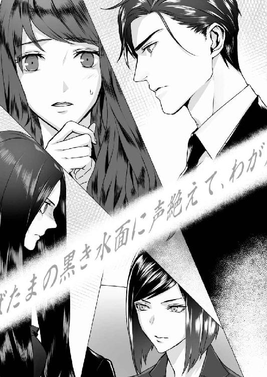
「この遺言状は、極めてあなたに有利にできており、墨田氏の意思のみで書かれたものとは到底認められません。何年かかろうと、こちらは徹底的に争いますよ」
最後の一言が、金策に焦る凌士にとって衝撃だったのは明らかだった。
理子が振り返り、その理子と目が合った侑木が、「それでいい」とでもいう風に頷くのが判った。このやりとりは、ある程度二人の間で準備されていたのだろう。
真珠は呆然と立ちすくんでいた。今、目の前で何が起きたのか判らなかった。
遺言状に、朱書きで短歌が書かれていて、それを見た紘一がパニック状態に陥った。
（呪いだ......そうだ、あれからもう十五年だ。十五年ぶりにとわが......あの女が蘇った......）
（私じゃない、あれは巌君なんだ、巌君が、勝手にあれを取ったりしたから！）
一体紘一は何を口走ったのだろう。とわが亡くなったのは江戸時代だ。それを、十五年ぶりにあの女が蘇った──とは？ そして巌君が勝手にあれを取ったりしたから、とは？
そしてあの短歌は何だろう。十五池の石碑に刻まれていた短歌と上の句だけが一緒の歌。「ぬばたまの黒き水面に声絶えて」──でも下の句が違っている。石碑の短歌は「十五の君をとわにとどめん」だが、父の遺言状では「わが声もまた水底にあり」だ。
そして石碑の短歌にはなかった著者名が書き記されている──「庵」。
「真珠、騙されるなよ」
凌士の怒りに満ちた声が、真珠を現実に引き戻した。
「おかしいとは思わないか。恋人だかなんだか知らないが、こんな裕福な男が、どうしてど田舎の相続争いに首を突っ込んでくる必要がある。しかも東京から弁護士まで連れてきて」
「お引き取り願えないか。君の壊れたお父さんを連れて」
侑木が氷のように冷たい目で傲然と言い放った。いつも温かな侑木の、この人が変わったような冷徹さと恐ろしさは、いくら慣れているとはいえ、真珠ですら思わず息をのんでしまう。
「いずれ水希から正式に書状が届くと思うが、今後、私の婚約者への接近を一切禁止する。今度むやみに近づいたら、警察に突き出すからそう思っていろ」
しかし、凌士はひるまなかった。ふてぶてしい笑みを、唇になおへばりつかせている。
「まるで、叔父さんの遺言を予め知っていたように用意周到なんですね。いいですよ、こっちはこっちで、あんたの思惑を十二分に調べさせてもらいますから」
「......、ふ、冬斑さんに聞きました。ま、真珠ちゃんの、婚約......者」
「侑木です。今後とも、末永くよろしくお願いします」
侑木が右手を差し出した時、通いで雇っているハウスキーパーの女がお茶を運んできた。今この家では、食事と掃除のためのハウスキーパーを、常時二人雇っているようだ。
応接室のテーブルに紅茶を入れたティーカップが並べられていく間に、永莉がおずおずと手を差し出し、侑木の手がそれを包んだ。
「ご、ご挨拶だけしておきたくて、......真珠ちゃんを、どうか、よろしくお願いします」
「ご安心いただいて大丈夫です。それより、今日の遺言状には驚かれたんじゃありませんか」
「──侑木様」
永莉の車椅子の背後に立つ冬斑が、嗄れた声で口を挟んだ。
「永莉様に、あまり難しい話はなさらないでください。最初に申し上げました通り、緊張に耐えられるような体調ではないのです」
「......も、申し訳、ありません。父の遺言は......、私は、よく」
永莉はおどおどと視線を彷徨わせ、最後にすがるように冬斑を見上げた。
「わた、私には、冬斑さんがいれば、それで。......冬斑さんがいてくれたら、他には、何も」
侑木は、そんな永莉を安心させるように微笑んだ。
「相続に関しては僕らに任せてください。永莉さんの希望に沿う形にすると約束しますよ」
「あり、ありがとうございます」
傍でその会話を聞いていた真珠は、なんともいえない気分で視線を下げた。
先ほどまでの遺言状騒動が、まだ薄気味悪く尾を引いている。遺言状に書きこまれた奇怪な短歌。金庫に収めてあったはずの遺言状に、どうしてそういうことが起こり得たのだろう。逸見父子か弁護士か、誰かが嘘をついているのだろうか。
現状認知が乏しい永莉と、何を考えているか判らない冬斑が、平然としているのは理解できるにしても、侑木は何故、何くわぬ顔で談笑していられるのだろう。
それともうひとつ、先ほどまでの騒動以上に気がかりなのは、永莉と冬斑の関係である。
冬斑を見る永莉の目には、まるで子供が父親を見るような、信頼しきったあどけなさがある。
遺言状公開後、双方の弁護士だけ残して書斎を退室することになった時、「侑木さんとお話ししたい」という永莉の申し出は、冬斑の許可の下、彼の監視下で行われることになった。
永莉が、冬斑の許可がなければ何もできないことに、真珠はまず驚いた。それだけではない、彼を見つめる永莉の目には、単なる信頼以上の何かがあるような気がするのだ。
「やあやあ、皆さん、こんなところにお揃いで」
その時背後の扉が開いて、先に書斎を出ていた凌士が現れた。
「親父が落ち着いたんで、お先に失礼させていただこうと思いましてね。ま、相続の件は、また改めてということで」
先ほどまでの騒ぎを忘れたような言いぐさに、真珠は言葉を失っていた。
侑木の目が冷ややかになり、永莉が怯えたように視線を下げる。冬斑はその背後で微動だにせずに立っている。
「何をしにきた。今後二度と、僕の婚約者の前に姿を見せるなと言ったはずだが」
「だからお暇の挨拶ですよ。というより私には、あなたが強引に我が家の問題に口を挟んでいるとしか思えないんですけどね」
凌士はずかずかと歩み寄ってきて、永莉の近くの、空いたソファに腰を下ろした。
「そういえば侑木さん、うちの父が養子縁組を解かれたいきさつを冬斑に聞いたそうですね。せっかくだから教えてあげますよ。実は先ほどの騒ぎとあながち無関係でもないんです。──もう十五池にはお行きになりましたか？」
「今朝、彼女に連れて行ってもらったが、それが？」
「じゃあ、もうあの池に若い娘を沈めた儀式のことはご存じですね。その娘の祟りだかなんだか知らないが、土砂崩れで池が流れ、御園生一族の大半が死に絶えたことも聞いたでしょう。親父は、養子にいってからその話を聞いて、随分怖い思いをしたそうでしてね。──そんな時、当時御園生家で働いていたメイドが、十五池で投身自殺するという騒ぎが起きたんです」
永莉がびくっと肩を震わせる。冬斑がすかさず口を挟んだ。
「凌士様、永莉様の前でそのお話は」
「その女は、永莉同様少々頭がいかれていたみたいでね。名前はとわ──漢数字の十に和むと書いて、十和という名前だったんですが、それがまずいけなかった。自分は、江戸時代に十五池で殺されたとわの生まれ変わりだとか言い出して、何年もかけて鎮魂碑に呪いの言葉を刻み込んだ挙句、儀式の行われた七月十五日に池に飛び込んだというんですよ」
たまりかねたように、冬斑は永莉の車椅子を引くと、ぎこちない足取りでその場から引き離した。真珠は蒼白になっていた。凌士の言っていることに対する衝撃も大きかったが、彼がそれをあえて侑木に聞かせるために戻ってきたことが判ったからだ。
「石碑には恐ろしい言葉が刻まれていたそうですが、それは宇月爺さんが護符を貼りつけて隠してしまった。──で、それから何年かして、婚約中に屋敷を訪れた巌叔父さんを、瑠璃子叔母さんが十五池に案内したんです。結婚前に呪いのことを教えておこうとでも思ったんでしょう。しかし叔父さんは祟りだの呪いだのを一切受けつけない人だった。──で、どうしたと思います？ 叔母さんの前で、例の護符を引っぺがしたって言うんですよ」
その時、室内に魂消るような悲鳴が響いた。さすがの侑木も表情を強張らせ、丁度通りかかったハウスキーパーの女性が扉の向こうで立ちすくんでいる。
「大丈夫です。すぐにお部屋に戻りましょう、大丈夫です」
なだめる冬斑の声をかき消すように、永莉の悲鳴が断続的に響き渡る。その声は狂気と不安に満ちていて、初めて聞いたわけではない真珠ですら、ショックでその場に立ちすくんだ。
そんな中、凌士はにやりと笑って立ち上がる。
「それで宇月爺さんが怒って、やれ神主を呼ぶだのお祓いをするだの、大騒動になったそうです。その騒動の最中、親父はうっかり御符の下の文言を見ちまった。で、すっかり御園生の家が怖くなった。それで養子縁組を解いてもらったんですよ。──侑木さん。先ほどうちの弁護士と話しましたが、あの遺言状はまず無効にはならないでしょう。あれは紛れもなく叔父さんの意思ですよ。真珠のような女を家ごと支えられるのは、そういった事情をよく理解している私以外にいないんです」
外から、扉がノックされる。ベッドでぼんやりとうつぶせになっていた真珠は、はっと我に返って起き上がった。
扉を開けると、そこには侑木が立っている。真珠を見下ろした彼は、顔から微笑を消して眉をひそめた。
「......大丈夫かい？ 顔色があまりよくないようだ」
「色々あって、少し疲れてしまっただけです。侑木さんこそ、お仕事の方は？」
王から、墨田家の固定電話に電話がかかってきたのは、逸見父子が帰宅してすぐのことだった。電話は侑木にかかってきたもので、それを受けた侑木はしばらく家を出ていたのだ。
おそらく携帯電話の電波が入る場所まで車で移動したのだろう。この家にはネット配線もなければ、携帯電話も通じない。固定電話だけが外部との唯一の交信手段なのである。
「ひとまず片がついたよ。──中に入っても？」
頷いた真珠は、そこで室内の薄暗さに気づき、急いで電灯のスイッチに手を伸ばした。侑木が出て行った後、ずっと伏せっていたから判らなかった。もう外は、夜の暗さに包まれている。
「可愛い部屋だね。君が子供時代に過ごした部屋？」
「そ、そうです。ぬいぐるみなんかも昔のままで。──椅子も小さくて使えませんけど」
それまでふさぎ込んでいたことも忘れ、真珠は少しだけ頬を熱くしていた。侑木が中心に立っているだけで、それまで広く感じられた部屋が、いきなり狭くなったように思える。
こんな狭い密室に彼と二人でいるということや、それが子供時代の自分の部屋だということが、否応なしに意識された。彼が触れている人形やぬいぐるみは、真珠が幼い頃に大切にしていた玩具だ。その時、いずれ好きになる人が同じものに触れるなど想像もできなかった。──
侑木は楽しそうに部屋のあちこちに視線を巡らせると、ベッドに腰を下ろした。
それにも少しドキッとしてしまった真珠だが、この部屋に他に座れるような場所はない。
「立ってないで、君も座らないか？」
「いえ......、私は、このままで」
うつむいた真珠が所在なく指を組み合わせると、侑木は苦笑してから、手を伸ばした。
「何もしないからおいで」
「......、別に、そういうことを心配してるわけじゃない、ですけど」
言い訳がましく呟いてから、少し距離を置いて彼の隣に腰かける。視界の端に彼の膝を捉えながら、真珠は自分の鼓動が少しだけ高まるのを感じた。
好きな人を自分の部屋に招くというのは、こういう感じなのかもしれない。ただ、今は甘い言葉を交わすような状況ではない。それが判っていても──やはり侑木と二人きりになれたのは、真珠の胸に甘い期待と仄かな疼きをもたらした。
「部屋は狭いけど、ベッドの広さは十分にあるね」
「えっ、......、」
絶句した後で固まる真珠を見て、侑木はおかしそうに微笑んだ。
「机も椅子も子供用なのに、ベッドだけは大人用のサイズだという意味だよ。もしかして、違うことを期待させたかな」
「し、してません。もうっ、あまり意地悪なこと言わないでください」
「だったら、もうちょっとリラックスしてごらん。僕らはもう、恋人同士なんだ」
優しく見つめられ、真珠は言葉を失った。胸の奥底がじわりと熱を帯びてくる。恋人同士──本当にそうなのだろうか。本当にもう、私と侑木さんは......。
ぎこちなく身体を寄せると、手をそっと取られて、握られる。彼は、まるで宝物でも扱うように真珠の手を持ち上げると、指先に優しく口づけた。
敏感な場所に与えられた温かなキスが、今朝知ったばかりの危険な感覚を呼び覚ます。真珠は息をのむようにして目を閉じたが、侑木はそれだけで満足したように手を離すと、視線を室内に巡らせた。
「どうやらこの部屋では、ベッドだけが新調されているようだね。君のお父さんは、君がいつ帰ってもいいようにしていたんじゃないのかな」
「さぁ......、それはどうか、判りませんけど」
真珠は、口づけを受けた指を握りしめてから、曖昧に微笑した。
「判らないとは？」
「実は私、父とあまり話をしたことがないんです。一緒に暮らしたこともないですし」
真珠が七歳で家を出されたのは、母の死と、それに続く姉の異変がきっかけだ。父はそれを機に東京を離れて墨田家で暮らすようになり、真珠は、戻ってきた父と入れ替わる形で家を出た。確かその時、冬斑をのぞく全ての使用人が解雇された記憶がある。
「それでも君のお父さんは、いずれ君と暮らしたいと願っていたような気がするよ。──そういえば、お姉さんの具合はどうだい？ あの後、部屋に閉じこもってしまったそうだね」
「あ......、冬斑さんが出てこないので私にも判りません。でも、大丈夫だと思います。姉は、冬斑さんが一緒なら、どれだけ興奮していても、すぐに落ち着くんだそうです」
「もし構わなければ聞いてもいいかな。......お姉さんは、いつからああいった状態に？」
ようやく侑木が、他人なら誰でも抱くはずの疑問を口にしてくれたことに、真珠は少しだけほっとしていた。彼が異常事態をすんなり受け入れてくれるのは嬉しかったが、同時に不安でもあったからだ。
「......いつと言われれば、母が亡くなった年からだと思います。それ以前は、明るくて頭もよくて、──病弱で、少し神経質なところはありましたけど、私には優しい姉でしたから」
些細なことで体調を崩して寝込んでしまうことはよくあったが、それでも、ごく普通の高校生だった姉が今のような状態になったのは、ひとつの契機があったからだ。
「母が亡くなった時、私は七つだったんですが、実はその頃のことをあまりよく覚えていないんです。多分、すごくショックだったからだと思います。......全てが夢の中の出来事のようで......今でも思い出そうとすると、なんだか気分が悪くなるんです」
真珠は眉を寄せ、額に自分の手を当てた。今も、もう気持ちが悪くなりかけている。
「それでも、はっきり覚えていることがひとつだけあります。あれは多分、母の初七日だったと思うんです。私......姉さんの部屋で泣き声が聞こえたので、驚いて扉を開けたんです」
そこで言葉に詰まった真珠の手を取ると、侑木は自分の手で包み込んだ。温かな手に冷えた指を包まれて、ようやく気持ちも落ち着いてくる。
「......私......当時はその意味も判らなかったんですけど、姉が凌士さんにひどい目にあわされたことだけは判りました。その夜は──一晩中、姉の悲鳴と泣き声で眠れなくて」
あのぞっとするような声は、今でもよく覚えている。とても人の出す声とは思えなかった。その時、使用人の一人が「まるで瑠璃子様のお若い頃のようだ」と不安そうに囁いていたのがまだ耳にこびりついている。
「翌日から、姉は母の部屋に移されて二度と出てこなくなくなりました。何が起きているか判りませんでしたが、かかりつけの医師がつきっきりで、何度か入院もしたように思います」
「......きっと君への影響を考えて、家から出した方がいいということになったんだろうね」
もちろん、それもあるだろうが、そういったことは多分表向きの理由だろう。誰もはっきり言ってくれたことはないが、父は本心では十五池の呪いを恐れていたのではないだろうか。それで唯一なんの症状もない真珠を、家から出させてくれたのではないだろうか。
「言いにくいことを聞くようだが、今日、その凌士君と永莉さんは何度も同席していたね？ それは、永莉さんの病状的には問題ないのかい？」
「病気のことは判りませんが、大分後になって、一種の健忘症のようなものを発症していると父に説明されたことがあります。姉はあの男に乱暴された前後の記憶を失くしているんです」
不意に息苦しくなった真珠は、額に手を当てるようにして言葉を切った。祖母と母の死、姉の悲劇。──ここまで話しても、なお御園生家の歴史には真珠の知らない闇があったのだ。
「......侑木さん、私......、最後に凌士さんが言ったことで、侑木さんに色々話さないといけないことがあるのは判ってるんですけど......」
「僕のことなら気にしないでくれ。君は昨日お父さんを亡くしたばかりなんだ。それに実は、僕は急きょ、今夜中に東京に戻らなくてはいけなくなってね」
「えっ......」
「君を連れて帰りたいが、さすがに今の状態でそれは難しいだろう。代わりに理子を置いていくよ。彼女をこの家に泊めてやってくれるかい？」
真珠は動揺しながら、視線を下げた。想像もしていなかった寂しさで、胸が押し潰されそうだった。侑木と離れる──もちろんこれまでも、夜ごと、週末ごとに二人は別々の時間を過ごしてきた。けれど、それが当たり前だった時と今は違う。これほど彼と離れたくないと思ったのは、多分今夜が初めてだ。
「理子は、きっと君のいい話し相手になるよ。それに彼女にはもうひとつ大切な役目がある」
「......役目、ですか？」
訝しく眉を寄せる真珠を、侑木は落ち着いた目で見下ろした。
「遺言状探しだ。巌氏が書いた、三通目の遺言状を見つけることだよ」
意味が判らず真珠は驚きで目をみはった。──三通目の遺言状？
「え、......どういうことなんですか。三通目......？」
侑木は真珠を落ち着かせるように、優しく肩を抱いてくれた。
「まず大前提の話をしようか。君の父親は、君と凌士君の結婚を望んでいると思うかい？」
真珠は無言で首を横に振った。今でもそれは、父の頭がおかしくなったとしか思えない。
「確認するまでもなく、ノーだ。では、仮に巌氏がなんらかの脅迫行為によってあの遺言状を書かされたとしよう。その場合、巌氏が脅迫者に対抗するには、別の遺言状を残すほかないんだ。遺言状とは、日付の新しいものが絶対の効力を持つからね」
「待ってください──遺言状に関しては、私、さっき起きたことも理解できていないんです」
真珠は混乱しながら、口を挟んだ。
「笠原弁護士の話だと、みんなが見ている前で父は遺言状に署名して、封に入れてから金庫に収めたんですよね？ なのに金庫から出してみたら、最初にはなかったはずの短歌が......」
「書き込まれていた。不気味だね、それも十五池の呪いかな」
その言葉に、真珠は自分でも驚くほど表情を青ざめさせていた。侑木はわずかに眉を上げると、すぐにいたずらめいた笑顔になる。
「──見てごらん」
彼は胸ポケットから名刺を取り出すと、手の上で裏返し、そこに自分の名前を書いた。
「君も、サインして」
促され、真珠も戸惑いながら渡されたペンで名前を書く。──なんだろう、これ。
記名入りの名刺を取り上げた侑木は、それを指先でくるりと反転させてから、もう片方の手でポケットサイズの手帳を取り出した。真珠の目の前で、手帳の間に名刺をすっと差し入れる。
「手帳を開いて、さっきの名刺を出して見てごらん」
おずおずと手帳を受け取った真珠は、眉を寄せながらそれを開いた。すぐに名刺が挟み込まれたページが開き、真珠は名刺を取り上げる。裏には、何も書かれていなかった。
「はい、本物はこっち」
からかうように笑った侑木が、二本の指に挟んだ名刺を、自身の袖の中から取り出した。
「手帳にはあらかじめ別の名刺を挟んでおいて、本物は膝の上に滑らせてしまうんだ。手先が器用な人なら誰でもできる手品だよ。実際の遺言状はもっと大きなものだったから、墨田氏も工夫を凝らしただろうが、立会人があのぼんやりした三人なら、さほど苦労もなかったろう」
真珠は唖然と、口を開けた。
「......まさか、父が故意に遺言状をすり替えたとでも言うんですか」
「おそらくだが、封筒に入れる時にね」
侑木は手帳と名刺を、ベッドの脇に置いた。
「さすがに向こうの弁護士も気がついたと思うが、凌士君の持っていたコピーと、金庫から出てきた遺言状は別物だ。つまり遺言状は、最初から二通用意されていたんだよ。凌士君がコピーを取ったものの原本と、それと同じ内容のものに朱墨で短歌を書き入れたものと」
まだ事態がのみ込めない真珠を見つめ、侑木は楽しそうに微笑した。
「なにも、池から幽霊が出てきて遺言状に落書きしたわけじゃないんだよ。演出としては面白かったし、ギャラリーの反応も興味深かったけどね。全く君のお父さんも人が悪いよ」
真珠は開けた口を閉じることも忘れていた。人が悪いなどというレベルの悪戯ではない。短歌入りの遺言状は、あの場をちょっとした恐慌状態にしてしまったのだ。
「......ち、父は、どうしてそんな馬鹿げた真似を？ 遺言状を無効にさせるため、ですか？」
「そうとも言えないのが厄介なところだ。理子もあの場では強気なことを言ったが、実のところ無効になる見込みは薄いらしい。それは、凌士君の言った通りだ」
「だったら......なんのために？」
「これは僕の推測だが、君のお父さんは、ヒントを残してくれたんだ」
──ヒント......？
「いや、ダイイングメッセージかな」
呟くように言った侑木は、先ほどの手帳を開き、ペンで二つの短歌を書き込んだ。
① ぬばたまの黒き水面に声絶えて、十五の君をとわにとどめん
② ぬばたまの黒き水面に声絶えて、わが声もまた水底にあり 庵
「②の短歌を純粋にヒントだと考えると、これは墨田氏の本当の声を隠した場所を示唆しているんじゃないかと思うんだ。──つまり、僕の言うところの三通目の遺言状の隠し場所だよ」
驚きで声も出ない真珠に微笑みかけると、侑木は少しだけ考え込むような目になった。
「判らないのは、この作者名だ。庵──いや、イオリかな？ 巌氏の俳号なのかもしれないが、書斎を見た限りでは、彼が短歌をたしなんだ様子も、庵の名前を用いた形跡もなかった」
「父は......小説は好きでしたが、短歌とかそういうものにはあまり興味があったようには」
「その問題はひとまず置いておくとして、②の短歌が隠し場所を意味しているとすれば、解釈は実に簡単だと思わないか？ 短歌は、上の句で十五池を示し、下の句で水の底に声があると言っている。つまり、十五池の底に何かが隠されている、と読める」
眉を寄せていた真珠は、その言葉に表情を変えて、顔を上げた。
「冗談でしょう？ 十五池に父が遺言状を隠していると言いたいんですか」
「だとすれば、あの池の底を探すのは命がけだ。解釈は簡単だが、なかなか難しい命題だよ」
胸の中でもやもやと淀んでいたものが、いきなりわっと膨らんだ。
「馬鹿馬鹿しい、どうして父がそんな意地悪をしないといけないんですか！ 本当の声とか三通目の遺言状とか、──そんな、あるかどうかも判らないのに！」
激しい剣幕になった自分に戸惑いながら、真珠はうつむいて言葉を続けた。
「だいたい侑木さんの考えには矛盾があります。遺言状のすり替えができるくらいなら、ヒントなんて手間な真似をせずに、最初からちゃんとしたものを入れればいいじゃないですか」
侑木の表情が止まり、ふっと数秒、空白のような沈黙があった。
「その通りだ。やはり君は頭がいいね」
「......な、なんですか、それ」
「実は僕も、その意味するところを考えあぐねていたんだよ。答えは、本物の遺言状さえ出てくれば判るだろうと思っていたんだが......」
真珠は少しだけ不審を込めて、そこで言葉を切ってしまった侑木を見つめた。
もしかして彼は、今の状況を探偵ごっこか何かだと思っているのではないだろうか。遺言状のすり替えにせよ、十五池を示唆した短歌にせよ、死を前にした大人のすることではない。が──ミステリー小説を愛読していた父に、少しばかり奇妙な──こういったことを面白がる性癖があるのもまた、確かなのだ。
「おいで」
不意に向き直った侑木が、真珠の腰に両手を回した。驚いたまま固まっていると、朝のように真珠を横抱きにして、自分の膝の上にひょいっと乗せる。
「──っ、ちょ、やだ、な、何してるんですか」
「いや、君がひどく深刻な顔をしているから」
「当たり前ですよ。今、滅茶苦茶深刻な話をしてたんじゃないですか」
「朝の続きをしようか」
侑木の腕から逃れようともがいた真珠は、その囁きにびくっとして動きを止めた。今朝の情熱的なキスと、手の甲に受けた温かなキスの記憶が蘇り、にわかに全身が熱くなる。
「......だ、だめですよ。こんな......、まだお手伝いさんも家にいるのに」
「人が来たら、すぐにやめるよ」
「そういう問題じゃ......、だ、だって、私も侑木さんも、まだ喪服じゃないですか」
「僕も、自分がこんなに性急な男だとは思ってもみなかった。今、君と離れてしまうことが、──正直言えば、少しだけ不安なんだ」
囁かれ、逃げる頬に指が添えられる。暗く翳った侑木の目が近づいてきて、固まっていた真珠は、その距離に耐えられなくなって目をつむった。
闇の中、唇がそっと触れ合う感覚がする。
「ん......」
表皮を優しく擦り合わせるようなキスは、今まで交わしたどんなキスとも違っていた。じれったくて、もどかしくて、時間をかけて甘く溶かされていくような危険な匂いがする。
侑木の唇が、まるで壊れ物でも扱うように、真珠の上唇をなぞっていく。同時に、彼の舌先に内側を辿るように舐められて、疼くような心地よさに、真珠は思わず彼の二の腕あたりのシャツを握りしめた。
や......、なに、これ......。
下唇をやんわりと噛まれ、端から端まで柔らかく啄まれる。もう一度重なった唇の隙間から、そっと舌先が入ってくる。
「あ......、っ......」
未知の感覚に震え、真珠はぴくんっと腰を跳ねさせた。一度舌を引いた侑木が、また最初の、唇が触れるか触れないかのもどかしいキスをする。
不思議だった。キス自体はとてもプラトニックな距離を保っているのに、今朝ぴったりと唇を合わせた時より、どこか淫らでいやらしく感じられる。侑木の片手が真珠の腰のあたりにあって、腰から腹部を優しく撫でているのも気にかかる。そこから、感じたことのない甘い痺れが湧いてくるようで、触れては離れる彼の唇を追うように、真珠は少しずつ呼吸を乱していた。
「ん......ン」
再び舌が唇の中に入ってくる。今度は彼は引かず、真珠の舌先にそれを重ね、先端を舐めるように動かした。頭の中が白くなり、真珠は膝を立て、自然に身体を波打たせた。侑木の呼吸が、少しだけ荒くなる。
「ゆ......ゆ、きさん」
「大丈夫、......怖い思いはさせないよ」
冷静なようでいて普段とはまるで違う侑木の声に、真珠の胸は痺れるように切なくなった。
彼の大きな手は温かく、撫でられている場所から心地いい熱が広がっていく。見慣れていたはずの指も手のひらも、これほど大きくて男らしいものだったのかと、改めて自分の肉体の柔らかさや脆さを思い知らされる。
彼の舌が、真珠の唇を押し開くようにして、深い場所に侵入してくる。半ば陶然となっていた真珠は、微かな声を上げて侑木の腕にすがっていた。
「......、っ」
頭の中が白くなり、もう、自分が何をしているかもよく判らなくなった。口内から濡れた音が甘く響く。呼吸が乱れた胸は上下し、その膨らみの下側に、侑木の指が触れている。指はゆっくりと膨らみをたどり、気づけば手のひら全体に胸を包み込まれていた。
「あ......、や、......」
真珠は微かにもがいたが、抵抗はすぐに甘い昂りにのみ込まれた。
キスを続けながら、侑木の大きな手が、真珠の胸を包み、優しく揉み回している。
──だ......だ、め......。
気持ちとは裏腹に、心地よさに頭の芯がじんわりと痺れてくる。手足から力が抜けて、次第に全身が蕩けたような感覚になる。
唇を離した侑木が、それを真珠の耳に寄せ、耳朶に濡れた舌先を滑らせた。
「......ンッ」
拳を唇に当てた真珠は、いきなり頭に響いた快感に耐えられず、立てた膝を震わせる。その時、閉ざされた扉の向こうから、ハウスキーパーらの声と足音が同時に響いた。
「それにしても、この家の次女もすごい金持ちを捕まえたものね」
「それに比べて永莉さんはお気の毒よ。あんな化け物みたいな男と夫婦同然の仲だなんて」
「あの二人やっぱりそうなの？ 年は親子ほども離れてるのに」
「私見たのよ。冬斑さんが出したゴミの中に、使用済みの避妊具が──」
声と共に足音が遠ざかる。真珠は激しい衝撃でものも言えなかったが、侑木はさほど表情を変えず、真珠を見下ろしてから、微笑した。
「日本のハウスキーパーは専門教育を受けていないから仕方ないが、少なくとも主人の悪口を公然と言わないように、それは注意した方がいいかもしれないね」
まだ動揺が収まらない真珠の額に、軽く口づけを落とすと、侑木は数秒ためらうような素振りを見せてから立ち上がった。
「名残惜しいが、時間が迫っているので一足先に東京に帰るよ。今夜中にも、シカゴの役員連中が会社に乗り込んでくるそうなんだ」
「なにかあったんですか」
すぐに全日との揉め事を連想してしまったが、侑木は真珠の不安顔を見て、逆におかしそうな笑顔になった。
「単なる視察さ。念を押すまでもないが、君は決して単独で行動しても、判断してもいけない。人と会う時は必ず理子を同席させてくれ。いいね」
それだけを言うと、侑木は気持ちを切り替えたようにネクタイを締め直した。
「冬斑さんに挨拶をしてくるよ」とだけ言い残し、その背中が扉の向こうに消えていく。
一人になった真珠は先ほどと同じ姿勢のまま、ベッドに座り続けていた。
──今、私は何をしたんだろう。
朝と同じキスだと思っていたけど、そうじゃなかった。今のは......そんなものじゃなかった。
募る思いのまま唇を重ねたのが今朝なら、今経験したのは、言ってみれば性交に向かうための口づけだ。彼は明らかに私をそういう形で支配しようとしていたし、そういう流れに持っていこうとした。信じられない。父が亡くなり、姉がこんな状態の時に。──
当然、拒むべきだった。なのに身体も心も彼のなすがままだった。それどころか、今もなお胸は甘く疼き、彼が触れた場所に不思議な誇らしささえ感じている。浅ましい本性を言えば、このまま、侑木の後を追って東京に帰りたいとさえ思っている。
人を恋することの恐ろしさを、真珠は初めて実感として味わっていた。それはどこまでいっても終わりはなく、また満足することもないのかもしれない。深まれば深まるほど、自分を忘れ、彼のなにもかもが欲しくなり、最後は背徳感さえ失ってしまうものかもしれない。
このまま侑木への思いを加速させていいのだろうか？ そもそも立場の違う二人の関係に未来などあるのだろうか？ 引き返せなくなる前に戻った方がいいのではないだろうか......？
「冬斑さん、姉さんの様子はどう？」
姉の寝室にいた冬斑が、鉄の扉を開けて出てきたのは、侑木が去ってから一時間後──午後七時になろうとする時刻だった。夕食の支度をすませたハウスキーパーは屋敷を去り、今残っているのは、冬斑と永莉をのぞけば、真珠と、父の書斎にこもっている理子だけだ。
「お薬が効いてよくお休みです。どうなされました？」
逆に不審げに問われたのは、真珠がらせん階段の前で、いかにも待ち伏せしていたように現れたからだろう。実際真珠は、冬斑が出てくるのを待ち構えていたのである。
「妹の私が、姉を心配しちゃいけないの？ あんなに痩せて──冬斑さん、電話では変わりないって言うばかりだけど、全然そうは見えないじゃない！」
ハウスキーパーらの会話を聞いて以来、ずっと胸にくすぶっていた憤りが、いきなり口調を攻撃的にさせた。しかし冬斑は特に動揺することもなく、静かに真珠に向き直る。
「お痩せになられたのは今年に入ってからです。不安定な時期が長く続いたためですが、今は回復傾向にあります。その時ご報告しなかったのはお察しください。私は、使用人ですから」
隠していたのは、父の意向だとでも言いたいのだろうか。
開き直った言い方に感情が波立ったが、気持ちとは裏腹に、真珠は気まずく視線を下げた。
彼の、マスクに二つ開いた穴から覗く目を、真珠はいまだ直視できない。生理的な怖さ以前に、身内の罪を責められているような気がするからだ。
冬斑の家は、江戸時代の頃から夫婦揃って御園生家に仕える、いわば使用人一家である。ただ冬斑の両親は早くに離婚し、父親も事故で早世したため、真珠が物心ついた時には、屋敷に残る冬斑家の人間は、志信一人になっていた。
彼の火傷は、仕事中の事故が原因だという話だが、本当は違う。真珠が幼かった頃に家にいた使用人たちは皆本当の理由を知っていて、真珠の耳にも自然とそれは入ってきた。
冬斑の火傷は、先代当主──つまり真珠の祖父、宇月に熱湯を浴びせられたことが原因なのだ。しかもその理由は、冬斑が、真珠の母、瑠璃子に恋情を抱いていたからだというのである。
（おそれおおくも冬斑は、瑠璃子様とのかけおちを企んでいたというんですよ）
（もちろん瑠璃子様は相手にもされませんでした。けれど冬斑の企みを知った宇月様が、激怒されてあのようなことになったんです。そりゃあ冬斑も気の毒でしたが、結局その時の興奮が原因で宇月様もお亡くなりになってしまって......）
それは、幼い真珠にとっては、息も止まるほどの衝撃だった。
なにしろ、真珠がその話を聞いた当時の瑠璃子は、今の永莉と同じように、冬斑を片時も傍から離さず、同じ部屋で寝起きするなど、夫婦同然の生活を送っていたからだ。
（それで屋敷を追い出された冬斑ですが、何年かして瑠璃子様の具合が悪くなったのを機に、またお屋敷に戻ってきたんです。許したのは今の旦那様ですよ。──おかしいでしょう。正気を失くした瑠璃子様の世話を、いくらなんでもあんな男に任せきりにするなんて！）
古くからいた使用人たちは、皆おしなべて瑠璃子の味方で、父はその瑠璃子を金で買った悪人であり、他人だった。
実際、真珠が記憶している限り、東京に住んでいた父が、旧御園生屋敷に戻ってきたのは、年に二、三度しかない。しかも母は、姉よりもなお重度の健忘症を発症しており、自身が結婚した過去も、家族も、完全に忘れ去っていたのだ。
それもまた、心の病のひとつなのかもしれないが、そうした記憶にまつわる障害が母と姉に相次いで降りかかったのは、本当にただの偶然なのだろうか。
侑木に話せば「遺伝だよ」と一笑に付されるだろうし、真珠も今はそう思おうとしている。それでも考えずにはいられなかった。これもまた、十五池の呪いなのではないか、と。──
「──お、お手伝いさんたちが、噂していたわ。冬斑さんと......姉さんのこと」
冬斑が何も言わないので、真珠は気まずく言葉を継いだ。
「どういうつもりなの」
「どういうつもりとは？」
その開き直った言い方に、抑えていた感情が再び膨れ上がった。
「どういうつもりで姉さんにあんな真似をしているのかって聞いてるのよ！ 病気なのよ？ しかもあんなに痩せて......、もし無理矢理していることなら、私、絶対にあなたを許さない」
その言葉に、冬斑が何を思ったのか、能面のようなマスクからは何も読み取れない。けれど真珠の言いたいことを察したのか、彼は少しの間返事もせずに沈黙していた。
「......それで？」
やがて返された嗄れ声に、真珠はおぞけをふるいながら顔を上げた。マスクの下からくぐもった声が陰々と響く。
「それで私にどうしろと？ 出て行けというんですか。それとも警察に自首でもしろと？」
あまりの言葉に、真珠は驚きで言葉を発することも忘れていた。
「断っておきますが、私は永莉様の望まれることをしているだけです。それが気に入らないと言われればいかようにも処罰は受けましょう。ですが、その後はどうなさいますか」
真珠の返事を待たず、畳みかけるように冬斑は続けた。
「永莉様の面倒を、真珠様が見られますか？ 他の者を雇い入れますか？ 寝かせ方、起こし方、薬の飲ませ方ひとつ間違えても、永莉様はすぐに今日のようになりますよ」
肉色のマスクの下から、暗い虚無の色を浮かべた目が真珠を見つめている。
「私と離れて、永莉様が正気でいられると思いますか？ 真珠様の手に負えると思いますか？ その自信がおありなら、どうぞご勝手になさってください」
何ひとつ反論できず、あまりに残酷な現実に、真珠は唇を震わせた。
全て冬斑の言う通りだ。永莉を安定した状態に置いておくためには、冬斑は絶対に必要な存在だ。でも、だからといって──身体の関係を持つのが本当に正しいことなのだろうか？
「......私が......、姉さんに、直接気持ちを確かめるわ」
確かめたところで、結果は判り切っているような気がする。無力感に打ちのめされながら、それでも毅然と冬斑に背を向けた時、背後からその冬斑の声がした。
「真珠様、私の方でもひとつお伺いしたいことがございます。侑木様のことで」
真珠が表情を硬くして振り返ると、冬斑は足をぎこちなく動かして真珠に近づいてきた。
「侑木様とは、いつご婚約に？」
「......最近のことだけど、どうして？」
「では、侑木様のご家族はそれをご承知なのですか？ 私は古い人間ですので、家同士の了解もない婚約というのがどういうものか、いまひとつピンとこないのです」
反論しようと口を開きかけた真珠は、不意に胸の奥に黒い塊が膨らんだ気がして、言葉をのんだ。侑木の家族──もちろん今は、真珠の存在すら知らないだろう。しかし仮に知ったとして──果たして彼の家族は真珠との結婚を承知するだろうか？ いや、するはずがない。冬斑は暗にそう言っているのだ。
「差し出がましい物言いをして申し訳ございません。実は私自身が、侑木様の振る舞いに、ずっと腑に落ちないものを感じておりましたので」
真珠が訝しい目になると、一拍おいてから、冬斑は続けた。
「実は侑木様は、水希様を通じて、旦那様の主治医に死亡診断書とこれまでの治療記録の提出を求められたのです」
「......侑木さんが？」
「そうです。東京の別の病院で、不審な点がないか改めて見てもらうという話でした」
真珠は微かに眉を寄せた。そんな話は侑木から一言も聞いていない。
「あの方は、旦那様が殺害された可能性を探っておられるのだと思います。ご承知でしょうが、逸見家は借金を抱えていて、遺言状が早く執行されないと非常に困ったことになるのです」
にわかに心臓が重く鳴り始めた。そうだ。どうしてそこに気がつかなかったのだろう。期限である七月十五日は毎年くるが、逸見家にとって来年では遅すぎる。父の死が早期に訪れない以上、あの遺言状にはなんの意味もないのだ。──少なくとも逸見家にとっては。
「......、つまり侑木さんは、逸見家の人たちを疑っていたということ？」
「それと、おそらくですが私を」
「冬斑さんを？」
「旦那様が亡くなられた時間、屋敷にいたのは使用人では私だけですから」
今度こそ雷に打たれたようになって、真珠は冬斑の表情の読めない顔を見つめた。
その通りだ。逸見家に金という動機があるなら、冬斑には怨恨という動機がある。彼は若い頃、母に恋していた。そして、その母を金ずくで手に入れたのが父なのだ──。
「侑木様は、その後も、書斎の本や書類などを明け方までご覧になっておられました。──もちろん、いずれ真珠様と結婚するのですから、相続は侑木様にとっても無関係ではないでしょう。それでもあの方の熱心さは、私には少し異常に映りました」
「............」
「ご立派な会社の社長をしておられることは存じていますが、もしかすると金銭的な、」
「やめて！ 侑木さんはそんな人じゃないわ」
冬斑の言葉は、真珠が内心抱いていた不安を真正面から掴んで抉り出した。
侑木の熱意はどこから来ているのか？ それが真珠への愛だと信じられるほど、真珠と侑木の関係は深くない。彼と友人でなくなったのは昨日のことで、まだ真珠には、侑木と想いを通わせた実感すら持てないのだ。そう、まだ──まだ、なんの言葉も約束もない。
「......侑木さんは、ただ私を心配しているだけよ。うちの財産なんて、......侑木さんには」
迷うように言った時、冬斑の身体から、小さな電子音が響いた。
「──真珠、こっちだ」
真珠は唇を噛みしめるようにして、彼らに小さく会釈した。
墨田邸から車で一時間も離れた観光地にあるホテルのひとつ。その一階の喫茶店で、電話をかけてきた相手は待っていた。約束通り一人の女性を伴って。
「お嬢様......、まぁ、真珠お嬢様、随分大きくおなりになって」
立ち上がった女は、ハンカチを目に当てて感嘆に震える声を上げた。半白の髪を後ろでひっつめた五十がらみの女である。流行遅れの古着を着合わせたような、ちぐはぐな服を着ている。
その女性を連れてきた凌士が、したり顔で「森田芳江さんだ」と紹介した。
「電話でも説明したが、真珠が小さい頃、家にいたお手伝いさんだよ。覚えてないか？」
はっきりとは思い出せないまま、真珠は曖昧に頷いてから、勧められた席についた。
「すみません。お世話になったんだとは思いますが、私、あまり昔のことを覚えていなくて」
「いえいえ。いいんですよ。私も昔とはすっかり外見が変わってしまいましたから」
午後七時。喫茶店には他に一組くらいしか客はなく、テーブルには予め凌士が頼んでおいたのか、コーヒーが三つ並んでいた。
（──白状するよ。あの美人弁護士の言うように、遺言状は、俺が叔父さんを脅迫して書かせたんだ。その辺りの事情を説明するから、ちょっと出てこられないか？）
墨田家に電話をかけてきて、そういって真珠を呼び出した凌士は、赤い唇を歪ませて笑った。
「ま、なんにせよ一人で来てくれて安心したよ。電話でも言ったが、これは断じて、家族以外に知られていい話じゃない。──なにしろ叔父さんの汚点になるからね」
凌士の呼び出しに応じたことは、冬斑にも理子にも打ち明けていない。ただ、携帯式の子機で最初に電話に出た冬斑だけは、真珠のいきなりの外出に不審を抱いたようだった。
誰にも相談せずに家を出たのは、凌士の脅しに屈したからではない。冬斑には頼りたくないという意地と、侑木とのかかわり方への迷いからだ。
「その前にひとつ聞かせて。凌士さんは、お父さんが早くに死ぬことが判っていたの？」
「......は？ なんだよ、それ」
「だって、父にあの遺言状を書かせたのは凌士さんなんでしょう？ でも、父が亡くならないと、遺産を相続することはできないじゃない」
一瞬、訝しげに眉を寄せた凌士は、すぐに合点したように苦笑した。
「おいおい、妙な誤解をしないでくれよ。あれは、叔父さん自身が夏まで持たないという前提で書いたものなんだ。もし七月まで生きていたら、生前贈与してもらう約束になっていた。確かに妙な遺言状だが、あれは叔父さんの悪癖だよ。明らかに探偵小説の読みすぎだな」
「......どういうこと？ 遺言状は凌士さんが書かせたんじゃないの......？」
「こっちの要求は、七月末までに相応の金を用立ててもらうことだ。何も全財産をくれと言って脅したわけじゃない。──それに対して、叔父さんはあの遺言状を書いて提示してきた。最初は驚いたが、悪い取引じゃない。写真で見た真珠も、随分美人になってたしな」
真珠は表情を引きつらせたが、凌士はそれを見てもへらっと笑うだけだった。
「ま、真珠が俺を拒否することも当然あると思ったさ。しかし、よく考えたらそれも大した問題じゃない。入籍は形だけでいいし、すぐに離婚すれば済むことだ。こっちは二分の一ももらえれば文句はない。真珠の取り分にしても一円だって減らないんだぜ？」
いかにも金の亡者らしい自分勝手な考え方だ。真珠は黙って、目の前に置かれたコーヒーを一口飲んだ。冷めているせいか、ひどくすっぱい味がする。
「しかも、もし真珠が俺との結婚を拒否したら、財産はあの北斗ＨＤに流れることになっている。いくら俺のことが嫌いでも、北斗ＨＤなんかに財産を取られるよかマシだろ？」
「別に......私はもう、それでいいと思っているけど」
真珠がそっけなく言うと、初めて凌士の顔に憎悪にも似た感情が浮き出した。
「はァ？ 冗談じゃない、あんな裏切り者どもにビタ一文渡してたまるか。真珠だってそれは同じだと思ったよ。だから叔父さんも、あそこで北斗ＨＤを持ち出してきたんだろうが」
北斗ＨＤは、十五年前は『北斗通運』といい、元は父が起業した会社だった。しかし社長だった父は、政治家への贈賄疑惑でマスコミの攻撃にさらされ、当時の経営陣やメインバンクの造反で、まるで追い出されるようにして取締役を解任されたのだ。
同時に、父のおこぼれで役員職についていた紘一も追放され、それで逸見父子は、同社を恨みに思っているのである。
「いいか、叔父さんは、北斗ＨＤを乗っ取れるだけの株を密かに買い占めていたんだぜ？ あちらさんにしてみれば、喉から手が出るほど買い戻したいに決まってる。もちろん何倍にもして売ってやるさ。いや、俺が会社を乗っ取ってやってもいい」
凌士は興奮したようにテーブルを拳で叩いた。
「それが叔父さんの復讐だ。それを、まさか娘のお前が、みすみす逃したりはしないだろ？」
父が、仇敵ともいえる北斗ＨＤの株を大量に保有しているのは、今回の相続で初めて知った。北斗ＨＤの関連株は遺留分からも排除するよう指定されており、真珠が凌士と結婚しなければ、確実に北斗ＨＤに譲られる流れになっている。
「......つまり、父が北斗ＨＤに財産を遺贈すると書いたのは、そう書けば、私が凌士さんとの結婚に同意すると思ったから？」
「それ以外に、何か理由が考えられるか？」
真珠は無言で眉根を寄せた。
本当にそんなことが理由だろうか？ 父には悪いが、真珠は凌士ほど北斗ＨＤを恨んではいない。むしろ姉を精神的に殺した凌士より、北斗ＨＤに財産を遺贈したほうが遥かにマシだと思っているくらいだ。そういった娘の感情が、父には判らなかったのだろうか......？
「いずれにせよ、侑木なんて奴が出てこなけりゃ、全てが上手くいってたんだ。考えてみろ。あいつに引っかき回されたばかりに、親族で話せば済む問題がややこしくなってんだぜ？」
「もうひとつ、聞いてもいい？」
遮るように真珠は言った。凌士は鼻白んだように肩をすくめる。
「遺言状に、姉さんのことが全く書かれていなかったのは、どうして？」
あー、と語尾を伸ばして言った後、凌士は馬鹿にしたように鼻で笑った。
「そうか。真珠はまだ知らなかったんだな。そりゃ永莉が、叔父さんの子じゃないからだろ」
──え......？
おどけたようにもう一度肩をすくめると、凌士は傍らの芳江を肘で小突いた。
「ほら、その辺りの話をしてやれよ。長く屋敷にいたんだから、俺よりずっと詳しいだろ？」
いきなり話を振られて驚いたのか、芳江はしどろもどろになって、目を泳がせている。
「さっさとしろ！ 肩代わりしたてめぇの借金、ヤクザに売り払ってもいいんだぞ」
びくっと肩を震わせた芳江は、意を決したように怯えた顔を上げた。
「真珠様、──る......瑠璃子様の最初のお子様は、死産だったのでございます」
意味が判らず、真珠は険しく眉を寄せる。唇を震わせながら芳江は続けた。
「し、しかもそれは、結婚されたばかりの巌様の子ではなく、......大火傷を負って屋敷を追い出された冬斑の子だというのが、専らの噂でした」
頭を背後から殴られたような衝撃で、真珠は石のように固まった。
「そ、そのことは、瑠璃子様の名誉にもかかわってくることですので、おそらく誰も、真珠様のお耳には入れなかったことと思います。今はどうだか知りませんが、当時の冬斑は、美男子ぶりを鼻にかけた本当に嫌な男だったのでございます。あ、あの男にたぶらかされたのは、何も瑠璃子様だけではございません......！」
表情さえ動かせない真珠の前で、途切れ途切れに芳江は続けた。
「お──おそらくお腹の子の父親のことは、巌様もご承知だったと思います。というのも妊娠が判ったのが巌様との婚約中......。巌様は瑠璃子様と籍を入れると同時に海外に行ってしまわれて、冷たいことに、便りひとつ寄越しませんでしたから。そんな中、あと二ヵ月で予定日という時に、宇月様が、子の父親が冬斑だということをお知りになったんでございます」
それでようやく真珠にも判った。顔に熱湯をかけるという、言語に絶する仕打ちを祖父が冬斑にした理由が。
「大火傷を負った冬斑も気の毒でしたが、宇月様も、その時の騒ぎが原因で脳溢血を起こし、お亡くなりになってしまいました。瑠璃子様はすっかり不安定になられて、......宇月様の葬儀で家中がごったがえしている時に、予定より二月も早く、産気づかれたんでございます」
ぽたぽたと落ちる涙と鼻水を、芳江はしきりにハンカチで拭った。
「救急車は間に合わず、医療の心得があった使用人がなんとか赤ん坊をとりあげましたが、......、私はもう、瑠璃子様がお気の毒でお気の毒で」
ハンカチを目に当て、芳江はしばらくすすり泣いた。
「それからほどなくして紅玉様が十五池で亡くなるという不幸も起こりました。そういった一連の出来事が、元々弱かった瑠璃子様のお心をすっかりだめにしてしまったんです。現実と妄想の区別がつかなくなり、夜な夜な子供を探して十五池にまで行くようになって......」
芳江は言葉を切り、ハンカチでそっと目頭を拭った。
「そんな瑠璃子様をお慰めするために、帰国された巌様が養女になさったのが、孤児だった永莉様なんでございます。それは、当時家にいた全員が承知していたことでございます」
洪水のように押し寄せてくる情報で溺れてしまいそうだった。真珠はかろうじて平静を装い、薄笑いを浮かべている凌士に視線を戻した。
「まさか......、その話を姉さんにすると言って、お父さんを脅迫したんじゃないでしょうね」
「おいおい、そんなのが脅迫になるものか。巌叔父さんにとって永莉はしょせん他人なんだぜ？」
凌士は苦笑を漏らした後、煙草を取り出して火をつけた。
「真珠、お前さ、瑠璃子叔母さんが死んだ日のことを覚えてるか」
いきなり思わぬ方向に話が飛んだので、真珠は訝しく眉をひそめた。
「なんで、そんなことを聞くの」
「どんなことを覚えてる？ たとえば天気や時間とか、詳しいことを覚えてるか？」
母が亡くなったのは、今から約十五年前の七月十五日の夜のことだ。
何もかも灰色にけぶる記憶の中で、うっすらと思い出せるのが、徐々に近くなる雷の音と生臭い空気の匂いだ。それから──。不意に、冷たい汗が背筋に滲んだ。
「......その日のことはあまり覚えてないけど、確か目が覚めたら、お母さんが亡くなったって知らされたのよ。一人で十五池に散歩に行って、足を滑らせて池に落ちたんだって」
「それを聞いた時、おかしいと思わなかったか？ 身体の弱い瑠璃子叔母さんが、どうして一人で、しかも天気の悪い夜にあんな場所に行ったのか、不思議だと思わなかったか？」
真珠が眉をひそめて黙り込むと、凌士の、笑うような声がした。
「俺は翌日に知らされたクチだが、警察の連中が大勢屋敷に詰めかけてたよ。事故であれだけの数はこない。当時の地元紙を読めば判るが、警察は他殺を疑っていたんだ」
「......他殺......？」
不意にずきずきと頭が痛み始める。真珠は指でこめかみを押さえた。
（お嬢ちゃん、お母さんがいなくなった夜のことで、何か覚えていることはないかい？）
ガチャン、と手元のコーヒーカップが倒れた。驚いて立ち上がった芳江が、慌ててハンカチで溢れたコーヒーを拭い始める。白いハンカチがみるみる黒く染まっていく。
「あの夜、生きた叔母さんが最後に目撃されたのが午後九時過ぎ。いなくなったことが判ったのが翌朝の四時。その間屋敷にいたのは、巌叔父さんと永莉と真珠、それから、冬斑と芳江さんを含めて住み込みの使用人が三人だ」
真珠は迷うように額に手を当てた。さっきからひどく頭が重く、思考が上手くまとまらない。
「一ヵ月も池の底に沈んでいた紅玉婆さんと違い、瑠璃子叔母さんは、十六日の明け方には池に浮いているところを発見された。──事故というにはあまりに不自然な死に方だ。親父は呪いだなんだと騒いでいたが、そんなもの信じる方がどうかしている」
凌士は、皮肉な笑いを浮かべてから、煙草を灰皿にねじ込んだ。
「なぁ、真珠。叔母さんは本当に一人で十五池に行ったんだろうか？」
「いい加減にして！ さっきから何が言いたいの」
「──真珠様、ほ、本当に覚えておいでではないんですか」
いきなり芳江が振り絞るような声で割って入った。顔を見ると、彼女はもう蒼白になって唇を微かに震わせている。
「......ま、真珠様が見たとおっしゃられたんです。真珠様が、あの夜、泣きながら私に訴えなさったんです」
──え......？
「真珠、お前は叔母さんを殺した犯人の顔を見ているんだよ」
どこか遠くで雷鳴の音が聞こえた気がした。
「本当に忘れてるのか？ それとも忘れたふりをしてるのか？ ──ああ、母親譲りの記憶喪失かもしれないな。少しショックなことがあれば記憶がボン！ お前ら母子の得意技だ」
──待って？ それは一体なんの話？
頭の奥が鈍く疼き、思考が渦を巻き始める。見えている景色がぼやけ、別の光景が現れる。
風に揺れる黒い木々、顔を叩く小雨と雷鳴。そして近づいてくる濡れた足音。
風が、池から生臭い匂いを運んでくる。そびえ立つ鉄柵──その柵の向こうから───
闇の中、泥濘を踏みにじる足音が響いている。
ぬちゃっ、ぬちゃっ、ぬちゃっ、ぬちゃっ......。
ここはどこだろう。夢の中だ。ああ、私はまた、この場所に立っている。
頬を濡らす雨と髪を巻き上げる風。遠くから聞こえる雷の音。ひどく禍々しいものが、闇の中からゆっくりと姿を現す。
真珠は迸るような悲鳴を上げた。ぬかるんだ泥に足を取られ、転んでもなお、立ち上がって坂道を駆け下りる。恐怖で頭の中は真っ白だった。
どうして今まで思い出せなかったんだろう。黒い影に覆われた怪物の顔は、その顔は──
「冗談じゃないぞ、あれだけ言ったのに、どうして目を離したりしたんだ！」
はっと真珠は目を見開いた。全身が震え、心臓が重苦しく高鳴っている。しかし、恐怖を反芻する間もなく、激しい声が夢で見た情景を切り裂いた。
「はァ？ 私に黙って出かけたのよ？ その結果起きたことまで責任なんか持てないわよ」
「もういい、お前一人に任せた俺が馬鹿だった。──ここはいいからもう出て行ってくれ」
──侑木さんと......理子さん？
バンッと扉の閉まる音がした。状況がのみ込めないままに視線を巡らせようとした真珠は、はっとして息をのむ。上から侑木が見下ろしていた。
「......目が、覚めたか」
彼の表情の険しさに眉をひそめた時、いきなり脳裏に、幾つかの情景が蘇った。
煙草を持つ凌士の指。口を押さえて立ち上がる芳江。二人が何か言い争っている。
上昇するエレベーター。煙草くさい凌士の体臭。──どうしても動かない身体。
（どうせ、もう侑木とやってんだろ。どういう体位が好きなんだ？ ん？）
恐怖にかられて跳ね起きた真珠を、侑木がやんわりと肩を抱いて押しとどめた。頭も身体も重いのに、心臓の音だけがにわかに鋭敏で激しくなる。ここ──ここは一体、どこだろう。
「大丈夫、落ち着いて──大丈夫だ」
震える睫毛の先で、侑木が言い含めるように、同じ言葉を繰り返した。
「どこにも怪我はないし、あの男ならもういない。......君は、何もされていない」
真珠はおそるおそる、視線だけを胸元に向けた。家を出た時に着ていた喪服ではなく、羽織って腰紐を結ぶだけのホテルのパジャマを身につけている。
頭をガンッと殴られたような衝撃だった。凌士と話している最中に、どうしてだか意識を失ってしまったのだ。そしてどこかに連れていかれた。断片的な記憶が、それがどこで、何をされたのかを告げている。
がくがくと震え始めた真珠の肩を、侑木はなだめるように何度も撫でた。
「君を着替えさせたのは理子だ。休むには窮屈な服だったからね。でも、それだけだ。僕の口からは言いにくいが、下着などに変わったことはないだろう？」
本当だろうか。記憶にないことをどう説明されても、心の底から安堵することなどできない。
「もし本当に何かあれば、君が目覚めるのは病院のはずだ。ここは君が凌士君と会っていたホテルの、理子がリザーブした部屋だ。君は薬のせいでよく眠っていただけだよ」
「......く、薬......？」
「君の飲み物に、凌士君が混ぜていたんだろう。実物は押さえているがそんなに悪いものじゃない。なので、僕が到着するまで部屋で待たせるよう、僕が理子に頼んだんだよ」
そこで初めて真珠は、侑木がここにいる異常事態に思い至った。改めて見れば、今彼が身につけているネクタイは、何時間か前、墨田邸で見送った時と同じものだ。
「まさか......侑木さん、東京から戻ってきたんですか」
侑木は答えずに微笑んだが、彼が、湧き出る感情を懸命に堪えているのが、真珠にも判った。彼は今猛烈に怒っているのだ。目覚めた時、最初に聞こえた声も激しい怒りに満ちていた。それは理子だけでなく、真珠に対しての怒りも含まれていたに違いない。
「お腹は？ 何か欲しいものがあれば、買ってこようか」
穏やかに言ってベッドから離れた侑木が、窓辺に立ってカーテンを少しだけ開けた。真っ暗な夜が、隙間から顔を覗かせる。真珠は、何も答えられなかった。
今夜彼は、シカゴの重役と会うことになっていたのだ。今までの経験からいって、それがどれだけ重要な会合だったかは考えるまでもない。それを彼は──キャンセルしたのだ。
他の誰でもない。彼にそんな真似をさせてしまったのは真珠自身だ。つまり真珠の存在そのものが、侑木の足を引っ張っている。──
カーテンを再び閉め直した侑木の横顔が、束の間、微かな苦渋を浮かべるのが判った。
「......落ち着いたら話を聞かせてくれないか。君は、一体どうしてあんな男と二人で」
「侑木さん、私、凌士さんと籍を入れようと思います」
咄嗟に口走った言葉に、真珠自身が驚いていた。けれど数秒固まった後、それが、この混乱と不安を解決する唯一の答えなのかもしれないと思った。
これ以上、侑木に迷惑をかけられない。いや、心の奥深い場所にある何かが警告している。これ以上──侑木を、かかわらせてはいけないと。
「籍を入れるといっても形だけで、財産分与が終われば籍を抜いて終わりです。私にとっても姉にとっても、多分、それが一番いい方法なんです」
「......いい方法？」
予想以上の冷え切った声に、半身を起こした真珠はびくっと肩を震わせた。
「何を提案されたか知らないが、君はこんな目にあってもなお、あのけだものの言葉を信じるのか。形だけ。もし助けが来るのが一歩でも遅かったらどうなっていたと思う！」
侑木の剣幕に息をのみながらも、真珠は懸命に平静を保とうとした。どれだけ怒られようと、今は侑木と離れる方が先だ。少なくとも、今夜のような愚を二度と彼に繰り返して欲しくない。
「......た、確かに私が迂闊でした。でも結局のところ、凌士さんが欲しいのは遺産であって私じゃない。あの人は、私に侑木さんがついているのが気に入らないだけなんです」
「......なるほど原因は僕なのか。それで？」
冷気さえ漂ってきそうな侑木の怒りに、真珠は言葉をなくしていた。壁に背を預けた侑木は腕を組んだまま、ビジネスの場そのものの冷徹な目で真珠を見ている。
「怒らないから、君の意見を最後まで言ってみろ」
真珠は唇を震わせた。彼を本気で怒らせてしまった悲しさと不安が胸を苦しく締めつける。
「......ゆ、侑木さんの好意には本当に感謝しています。でも、もう私たち家族にかかわらないで欲しいんです。正直言えば、嘘をつくのにも抵抗があります。わ、私......侑木さんの婚約者じゃないし、結婚なんて......とても考えられないですし」
「僕はいずれそうしたいと思っていたが、一人合点だったというわけだ。それで？」
侑木の言葉は、真珠をますますうろたえさせ、揺るがせた。
「......私、私には、侑木さんに好きになってもらう価値なんて、」
「君は、俺が何をすれば信じるんだ！」
いきなり声を荒らげた侑木が、組んでいた腕を解いて前に出た。息を引いた真珠が、ベッドの上で後ずさると、彼は怒りを噛み殺したような目で顔を背ける。
「言葉が足りなかったのなら謝るよ。僕は、君が好きだし、とても大切に想っている。......それくらい、とうに判ってくれていると思っていたんだ」
言葉を返そうとした真珠は、もう何も言えなくなって見開いた目を震わせた。侑木は、無言で真珠の前に膝をつくと、指で、眦に浮いた涙を拭ってくれた。
「......君の気持ちも知っていたつもりだよ。僕は卑怯な男だが、女性の気持ちが判らないほど鈍い男じゃない」
「う......嘘です」
「本当だ。一度、僕を部屋に誘ってくれたことがあったね」
はっと固まった真珠の頭を抱き、侑木はぎこちなく自分の方に引き寄せてくれた。
「......とても嬉しかった。その時初めて、これは僕の一方通行ではないと確信したんだ」
──侑木さん......。
「なにしろ僕は君より十も年上だからね。立場上、君をそういう目で見てしまうことの罪悪感の方が強かった。君と僕とでは、明らかに僕の方が、君にふさわしい男じゃないんだ」
「そんなこと、」
真珠の反論を遮るように、侑木は額にそっと唇を当ててくれた。
「あの夜、僕がどれだけ深い懊悩を抱えて帰途についたか、君には想像もできないだろうね。そんな夜は一度じゃない。僕はいつも、君を連れて帰りたい衝動と戦っていたんだよ」
胸が痺れたように熱くなる。彼の言葉が、その場限りの言い訳ではないことは、真珠が一番よく知っていた。真珠もまた胸の裡のどこかで、彼の衝動と欲望を感じ取っていたからだ。
「......そうしなかったのは、わ、私が、若すぎたからですか」
「そうじゃない。......詳しい話はできないが、あの時の僕には、まだ資格がなかったんだ」
──資格......？
暗く陰った侑木の微笑に、真珠が思いついたのは、ひとつだけだった。
「......、り、理子さんと、おつきあいされていたんですか」
「理子？ もう何年も前に別れた人だ」
意外そうに眉を上げた侑木は、数秒してから苦笑した。
「ああ──なるほど、確かにそういう意味では、僕は鈍い男だった。違うよ。もうそんなくだらないことで、いちいち不安にならないでくれ」
唇が淡く触れ、何度か角度を変えたキスは少しずつ深くなっていった。
身体に染み込んだ真っ黒な毒が、彼と唇を重ねる度に消えていくのが判る。
コーヒーで黒く汚れたハンカチが、あの時の真珠だった。身体ではなく心を凌士に汚されていた。侑木という人の光は、それを一瞬で白く変えてしまう力があるのだ......。
「君の部屋では、嫌な思いをさせたね」
唇を離した侑木が囁き、それが何を意味するか察した真珠は、驚きながら首を横に振った。
「嫌な思いなんてしてません。......ただ、少し驚いただけで」
「いや、君の気持ちも考えずに、ひどく性急な真似をした。本当のことを言えば、あの時、僕は少し焦っていたんだ」
「焦る......？」
「......今、全部を説明するのは難しいよ。でも、今夜のことでよく判った。もし現場を見たのが僕なら、あの男を殴り殺していただろう。──僕は......君を、誰にも渡したくない」
強く抱きしめられて、真珠は夢現で彼の背中に腕を回した。もどかしく唇が重なって、キスは瞬く間に熱を帯びる。少し乱暴でぎこちないキスは、時折唇に微かな痛みをもたらしたが、真珠は夢中でそれに応えた。
熱い吐息、濡れた唇。彼の余裕のなさが胸を熱く締めつけ、苦しいほど切なくさせる。
気づけば、ベッドの上に倒されて、指を絡めるようにして二人はキスを続けていた。侑木の手が熱っぽく首を撫で、親指が鎖骨をたどり、夜着の下に滑り込んで肩を撫でる。
心臓が震えるように高鳴った。このまま流されていいのだろうか。怖いし、とてもそんな勇気はない。でも、このままでいたい。まだこのまま、彼の熱を感じていたい。
真珠の緊張を感じ取ったのか、手を止めた侑木が、唇を離して真珠の顔を見下ろした。
「怖い？」
「い、......いえ......」
「正直に言えば、僕は今、君を抱きたい。もちろん、君が嫌でなければだが」
掠れた声に胸が震え、真珠は不意に泣きたくなった。もう何が正解なのか判らない。でも頷く以外に、この愛おしさをどんな方法で伝えればいいのだろう。
ぎゅっと目をつむったままで彼の首に両手を回すと、愛おしむように、額に唇が当てられた。
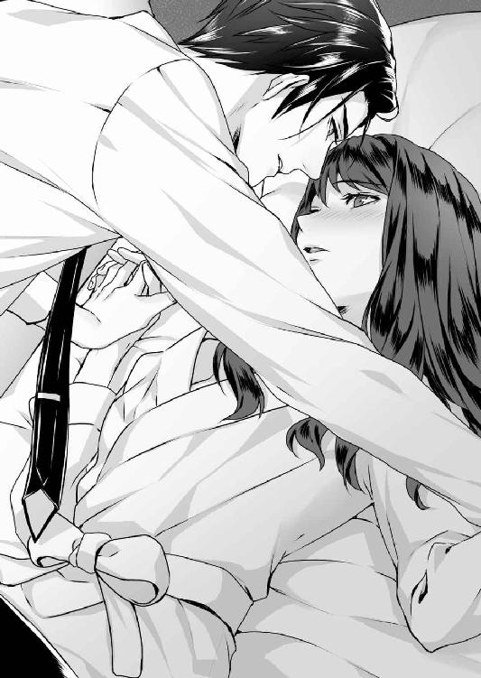
「君の嫌がることはしたくない......、怖いと思ったらいつでも僕を止めてくれ」
おずおずと頷いた唇がそっと塞がれ、真珠はそのまま自分の全てを彼に委ねた。
先ほどまでの余裕のないキスとは違い、どこまでも優しくて甘いキスは、まだためらいの残る真珠の心と身体を、じっくりと時間をかけて溶かしていった。
唇や顎に、口づけを落とされながら、温かくて大きな手で腿や腕を撫でられる。そうされている内に、冷え固まっていた身体が少しずつ熱を帯びていくのが判る。
「あ......、あ」
気づけば自然に、真珠は甘い声を上げていた。夜着がはだけ、肩から滑って細い腰にまとわりつく。薄い下着越しに感じる侑木の手は、熱くて、硬くて、なのに柔軟に肌に吸いついて離れない。大きな手で胸を優しく揉み回されて、真珠は呼吸を弾ませた。
「ン、は......、あ......」
下腹部が痺れるように締めつけられる。甘苦しいほどに重たい痺れは、自分の身体がどうにかなってしまいそうな怖さがある。
その時、彼の手が、キャミソールの上からブラジャーのホックを外した。驚いた真珠は反射的に両手で胸を隠したが、すぐに両手首を掴まれて、やんわりと広げられる。
──だ......、だめ......。
恥ずかしさで薄桃色に染まった喉に、侑木が音を立てて口づけた。唇は肩に触れ、胸の膨らみに触れ、濡れた音を立てては、別の場所に移動する。
次第に、気持ちよさで頭の芯が痺れてくる。いつの間にか自由になった片手を唇に当て、真珠は「ん、ん」と細い声を上げて上半身を震わせていた。
──あ......、ど、どうなるの......、私......。
侑木の大きな手が、両肩からキャミソールを引き下げる。半ばほど露出した胸に舌を当てられ、真珠は膝をすり合わせた。
「真珠、すごく可愛いよ」
耳元で囁くように名前を呼ばれ、頭の奥にじんと熱いものが広がっていく。
「君の見せる反応は、全部僕だけのものだ」
彼の声は艶めかしく掠れ、その吐息は熱かった。華奢なキャミソールの端に引っかかるようにして先端がふるりと姿を現す。真珠が恥ずかしさで頬を染める前に、彼はそこに舌を当てた。
「ン、......っ」
思わぬ快感に貫かれ、真珠は初めて高い声を上げて腰を浮かせた。
舌先でつつかれ、ぬるりと口中に含まれる。その熱さと先端を包む未知の快感に、身体がはしたなく波打ち始める。
「や......、だ、だめ、それは、いや」
「どうして？ 君はとても気持ちよさそうだよ」
硬く芽吹き始めた薄桃色の乳首を、侑木は口に含んでから舌先で嬲った。
「やっ、ン......、ふ......、」
ピリピリと微かな電流が走るような淡い快感が、胸の芯から身体全体に広がっていく。それが淡すぎるだけに掴みようがなく、逃げようもない。真珠はもどかしく切ないような気持ちになって、侑木の肩に手を添えてしがみつく。
チュプチュプと、胸元から濡れた淫らな音がする。次第に意識が霞んできて、もう何も考えられなくなる。ゆっくりと腹部を辿った侑木の指が、するりとショーツの中に入り込んだ。
「──っ」
「真珠......、」
彼の声に、初めて強い興奮が滲んだ。自分の内壁から何かが溢れ、それが侑木の指をぬるりとのみ込んでいるのが判る。しっとりと濡れた柔肉を、彼は指腹でぬるぬると愛撫した。同時に胸の先端を唇で優しく扱かれて、真珠はあまりの気持ちよさに喉を反らして低く呻いた。
「ン、あ、あん、......あん」
──ど、どうして......私、こんな、声......。
忘我の淵に淫らに落ちていくのを感じながら、真珠の胸に初めて強い罪悪感が込み上げた。
今、こんなことをしている場合だろうか。私一人がこんな形で悦びに溺れていていいのだろうか。いや、それだけじゃない。何か大切なことを、さっきからずっと忘れているような気がする。何か──とても──
（少しショックなことがあれば記憶がボン！ お前ら母子の得意技だ）
「......真珠？」
不意に死人のように動かなくなった真珠を、身体を離した侑木が訝しげに見下ろした。
「......ご、ごめんなさい」
（──丁度私が戸締まりに出た十一時頃です。雨の中、頭まで泥だらけになった真珠様が、十五池のある土手から駆け戻ってこられたんです）
いきなり蘇った記憶が、真珠の心臓をどくどくと重苦しく鳴らし始めた。
さっき聞いた話は夢？ いや、全部現実だ。そして、その現実の中で語られたことは──夢？
（ひどく動転した様子で、言っていることもおかしくて、もっと真剣にお聞きすればよかったのでしょうが、その時は私も巌様に叱られることの方が恐ろしくて......）
（その翌日、瑠璃子様のご遺体が十五池で見つかったんでございます。ええ、もちろん警察に申し上げましたとも！ けれど真珠様はその夜から熱を出されて、目をお覚ましになった時には、何も覚えておいでではなかったんです）
真珠は息を引くように身を縮め、自分の身体を両腕で抱いた。
──判らない。夢と現実の境が、自分にはもう判らない。いや、もしかすると、最初から判っていなかったのかもしれない。
（ほ、本当にお忘れなら申し上げます。あの夜、真珠様が私に見たと仰られたのは──）
その時、身を起こした侑木の手が、いたわるように真珠の髪に触れた。
「すまない、僕が急ぎすぎたようだ。君の気持ちを考えたら、今夜は自制すべきだったね」
「──無理なんです」
真珠は遮るように言って、震え出した身体を力いっぱい抱きしめた。
「もう、これ以上無理なんです。私、これ以上、侑木さんと親しくなりたくないんです」
「どうしたんだ、一体」
肩に抱こうとした侑木の手を、真珠は首を振りながら払いのけた。同時に目の奥が熱くなり、激しい嗚咽が全身を震わせた。
「ごめんなさい。......ごめんなさい、侑木さん」
これまで病気とは縁のない人生を送ってきた。母や姉と違い、心のどこかで自分一人は特別なのだと思っていた。──けれど違った。御園生の血が流れていないのは姉の方で、それどころか真珠は、無自覚に記憶障害を発症しながら生きていたのかもしれないのだ。
「......真珠、」
「いやっ」
侑木の手を払いのけ、真珠は顔を覆って泣きむせんだ。
「お願い......、お願いだから、私を放っておいてください！」
一度でも、彼との未来に希望を抱いた自分が馬鹿だった。今日知ってしまったことを、侑木にだけは知られたくない。いくら侑木が全てを受け入れると言ってくれても、今夜、真珠が見てしまった光景を知れば、気持ちは一変するだろう。
そんな恐怖を抱えたまま、これ以上彼の傍で、期待を膨らませて生きていくのは辛すぎる。
「......も、もう、仕事、やめます。これ以上侑木さんの傍にいたくない」
「ちょっと待ってくれ、どうしてそういうことになるんだ」
「お願いです。もう私にかかわらないで。侑木さんのためじゃなくて私のためです。このままだと、私......私が、壊れてしまいそうなんです！」
後は声にならなかった。ただ泣きながらうわ言のように、ごめんなさいと呟き続けた。
「君は一体......、何を、そんなに怯えているんだ」
侑木が呆然と呟いた時、室内に電話の音が鳴り響いた。すぐに侑木が立ち上がり、ベッドサイドテーブルに置かれた電話の、受話器を取る。
しばらく、短い言葉でやりとりしていた侑木は、やがて電話を切って真珠に向き直った。
「警察の方が下に来ている。昨夜の状況を聞きたいらしい。きちんと答えてあげなさい」
真珠は、泣きはらした目で侑木を見上げる。彼はひどく落ち着いた目をしていた。
「自業自得だが、凌士君は大怪我をしている。実は君が助かったのは、たまたま通りかかった客の誰かが、様子がおかしいと思ったのか凌士君を止めようとしてくれたからなんだ」
ようやく現実が戻ってきた真珠は、驚きながら半身を起こした。
「それで揉み合いになって、凌士君はひどく殴られたらしい。相手はまだ、見つかっていない」
侑木は呆然とする真珠の傍らに膝をつくと、安心させるような微笑を浮かべた。
「心配しなくても、君は見たままを警察に言えばいい。理子が、弁護士として君に付き添ってくれる。僕は......東京に帰るよ」
思わず目を見開いた真珠を、彼は少しの間辛そうな目で見つめてから、視線を下げた。
「僕は、ひとまず君の望むようにするつもりだ。君が離れたいというならその通りにするし、秘書室からも異動させる。それだったら、仕事を辞めなくても大丈夫だね？」
ようやく侑木を拒絶してしまったことを実感できた真珠が、呆然としながら頷くと、侑木は安堵したように頷き、「外に出ているから着替えなさい」と言って、立ち上がった。
「ただ、凌士君との結婚の件は、もう一度冷静になって考えてみてくれないか。──まだ期限まで一ヵ月以上もある。僕も......、もう一度、自分のなすべきことをよく考えてみるよ」
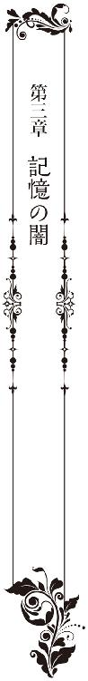
墨田巌の生前のカルテ及び死亡診断書を見分するに、他殺の可能性はゼロと断定する。
侑木がその一文に目を通した時、扉が外から叩かれた。
「社長、墨田の配属替えの件、人事課の手配が終わりました」
入ってきた王は、ふと眉を寄せ、卓上に置かれた薄緑色の封筒に視線を向ける。
「墨田の件ならもう知っている。ほかに用件は？」
その視線を遮るように侑木が問うと、王は顔から表情を消して姿勢を正した。
「例の件で、チャン会長から、早急に現状を報告するようにとの連絡が入りました」
「会長はどこまでご存じなんだ」
「墨田巌が死亡したことまでは。とはいえ遺言状の存在についても、早晩耳に入るでしょう」
侑木は黙って、引き結んだ唇に拳を当てた。
今、あれが会長の耳に入ってはまずい。真珠が相続し、逸見凌士が管理するよう定められている不動産と株式の中には、侑木が──いや、今のプリズン・ジャパンが、喉から手が出るほど欲しているものがあるのだ。
侑木の沈黙に、やや苛立ちを見せて王は続けた。
「社長。心情はお察ししますが、この際、墨田には速やかに遺言状を執行してもらい、逸見凌士を交渉相手とすべきでしょう。後ろ暗いところのある男です。私なら一日で説得できる」
「その必要はない。全日との交渉の件なら、別の手立てを考えてあると言ったはずだ」
「しかし」
「いいか！ 二度と今の話を蒸し返すな。会長への報告は俺がする。出て行ってくれ」
しばらく立ちすくんでいた王は、微かに嘆息してから眉をしかめた。
「全日の件でしくじれば、私もあなたも終わりです。それだけはお忘れなく」
靴音を荒らげて王が退室すると、侑木は親指を唇に当てて、空を睨んだ。
──まるで悪い夢を見ているようだ。これも全て、あの老人の企みなのか？
（使用人がいつものように私を起こしにやってくる。しかしベッドはもぬけの殻だ。不審に思った使用人は、続く書斎の扉を開けようとするが、開かない）
（扉はもちろん、窓にも内側から頑丈な鍵がかけてある。さて、君は私がどうやって殺されたのか、その謎を解くことができるだろうか）
春雷が鳴り響く夜から五年。あの夜交わした会話を、侑木は一言一句忘れてはいない。
戯れとしか思えなかった老人の予言は、つい先日現実になった。その言葉通りの「密室」で、老人は彼の言葉を借りれば「殺された」のだ。
（君のビジネスプランについて所見を言えば、日本では時期尚早にすぎるだろう。あと五年、そのプランは君の胸に収めておきたまえ。──そう、私の訃報が君の元に届くまで）
五年前、シカゴで東アジア地区を担当していた侑木が抱いていたのは、チャン会長の絶対命令であるプリズン１を日本に導入することと、それに伴う自社配送システムの確立だった。
今、プリズン・ジャパンが直面している宅配業者とのトラブルは、プリズン１の普及とともに各国で大なり小なり起きており、当時から想定できた事態だった。
その打開策として侑木が考えたのが、完全自社配送だ。宅配事業者を介さず、プリズン・ジャパン一社で物販から宅配事業までやってしまおうというプランである。
むろん、一から設備を作っていては費用も時間も莫大なものになる。侑木は、宅配事業を行う企業を買収することで早期実現を図ろうとし、その候補として、東日本に強いシェアを持ち、なおかつ引退した創業者が密かに株式を買いあさっているとの情報を得た、北斗ＨＤを選定した。
創業者の墨田巌は、物流業界ではレジェンド級の人物である。一筋縄ではいかないというのは業界の常識で、だから侑木は友人という形で墨田の懐に入り込もうとしたのだ。
しかし、結局交渉はうまくいかず、同時進行で進めていたあらゆる企業買収も、大手宅配業者からの妨害を受け、ことごとく失敗した。今思えば墨田巌の忠告通り、全てが時期尚早にすぎたのだ。──
それから三年後、プリズン・ジャパン社長に就任した侑木は、社内の反対を押し切ってプリズン１をスタートさせた。同時に、自社配送プランを、三年を目途として極秘裏に始動させた。
誤算は、プリズン１が予測を超えたペースで普及したことだろう。自社配送の目途が立つ前に、全日が値上げを主張し始め、いまや決裂は時間の問題となっている。そこで再び北斗ＨＤの存在が大きくなり始めてきたのだ。
（は、はじめまして。墨田真珠と申します）
墨田の娘が侑木の秘書としてやってきたのは、プリズン１を開始して丁度半年、まだ全日との関係も良好で、その成功に社内が沸き立っていた頃だった。
彼女がプリズン・ジャパンに入社したのは、むろん侑木が裏で手を回したからである。彼女は恩師の紹介だと信じているが、実のところ侑木にその人物との面識はない。
五年前、墨田巌との交渉が決裂した後、侑木はすぐに興信所を使って、その娘のことを調べさせた。生い立ち、成績、交友関係、家族──なにもかも。
（推理してみてはどうかね。娘は、妻のいない私にとっては第一順位の相続人だ）
つまり彼は、自分の娘をビジネスに利用しろと、暗にそう勧めてきたのだ。
娘の年齢を考えるとさすがにない選択だったが、それでも真珠の身辺を調査させたのは、墨田巌の言葉の裏に、何か別の意味があるのではないかと、深読みしてしまったせいである。
母親の不審死にまつわる一件や、病気の姉がいること、七歳から寮生活を送り、休暇中であっても実家に戻ることが許されないことなどは、送られてきた報告書で知った。孤独な身の上には同情を覚えたが、当時の感想としてはその程度だった。
引き続き月毎の動向調査を依頼したのは、あくまで念の為である。それも、自社配送プランが頓挫し北斗ＨＤへの興味も失せると、いつしか依頼したことすら忘れてしまっていた。
思い出したのは、それから二年後のことである。シカゴのオフィスで、二年分の報告書を抱えてやってきた秘書に、不要なら廃棄してもいいかと問われた時。
報告書の最初の頁を開いた途端、二年前の奇妙な一夜の記憶が、昨日の出来事のように鮮明に蘇った。雷鳴と雨──老人の予言、そして写真の中にいた少女。
その時、侑木は二年前に感じた衝動の理由をようやく理解したのだった。何かが胸に舞い上がる感覚。──それにはやはり、説明のつく理由があったのだ。
以来侑木は、毎月届く報告書を通して、真珠の成長と生活を見守るようになった。そして十も年下の少女に、次第に深い興味と関心を抱くようになった。
真珠は、一言でいえば侑木の交際圏には一人もいないタイプの女性である。
友達も恋人も持たず、大学とバイト先を黙々と行き来する真珠は、当時の侑木には異星人のように奇妙に思えた。
高校時代の友人の言葉によると、「コミュ障でぼっち。人が近づくと逃げちゃう小動物タイプ」。恋人を持つことはおろか、女性同士のグループにも加わらず、スクールカーストでいえば常に中間より下に位置していたらしい。
一方、彼女の学生時代の成績はおそろしく優秀で、運動能力も高い方だった。容姿は美形だった両親譲りで、一見なよなよして見えるが、父と酷似した瞳からは、凛とした意思の強さが感じ取れる。
真珠を知れば知るほど、侑木はますます不思議に思った。一体、彼女の行動を妨げているものは何なのか？ どうして墨田巌は、自身の後継者としてもいいくらい優秀な次女を、自ら育てることなく長年実家から遠ざけているのか？
真珠が大学二年生の時、ついに侑木は彼女を訪ねる決心をした。といっても直接会うのではない。バイト先のコーヒーショップに、客として足を運んでみたのだ。
その日、初めて目にした生身の真珠は、不思議な印象を持って侑木の胸に焼きついた。
控え目だが人を引きつける柔らかな笑顔。瞬きを繰り返す度に潤みと輝きを増していく瞳。立ち居振る舞いも綺麗で、トラブルにも機転もきかせた対応ができる。多少、反応が鈍いところもあるが、その鈍感さも、また魅力だ。
それでも、一人になった時の彼女はまるで夜にしか咲かない花のようで、真夏の太陽の下にも夕顔のような仄暗い香りと儚さを漂わせていた。ともすれば、それは男に危うい衝動を抱かせるもので、侑木はますます彼女に関心を抱き、同時に強い庇護欲を覚えた。
その後、侑木は彼女の、成人式にも卒業式にも顔を出している。バイト先の店長からセクハラをされているとの報告を受けた時は、裏から手を回して店長を解雇させた。二十歳の誕生日には、一人で過ごす彼女を気の毒に思い、花束を手配しようして、王に止められたこともある。
だから、彼女が侑木の元に秘書としてやってきた時、平静を装って対応しながらも、待ち望んだ花がようやく手元に届いた喜びを抑えることができなかった。
その花をどうやって咲かせようか──ビジネス一色だった生活はその日を境に一変し、侑木は、彼女をまるで妹のように大切にし、時に恋人のような敬意さえ持って扱ったのだ。
（しゃ、社長は私に──、どうしてそんなに親切にしてくださるんですか？）
そう聞かれたのは、真珠が入社して四、五ヵ月も経った頃だ。
どう答えたかは忘れたが、その時初めて、侑木は彼女に関心を払いすぎる危険に気がついた。
けれど、もうその時には遅かったのかもしれない。
（侑木さん、お茶にしませんか？ 今日はすっごく上手に淹れられたんです！）
（この一年がまるで夢みたいで......、侑木さんは、私の人生を変えてくれた恩人です）
ようやく花開いた彼女の美しさや対人関係の広がりは、侑木がそれまで知らなかった黒い感情を呼び起こした。大切に見守ってきた花を、誰にも触れさせたくないという独占欲──嫉妬だ。
それを恋だと自覚するには、さほど時間はかからなかった。けれどその頃には、別の事情が侑木の行動を制約するようになっていたのだ。
全日との関係が悪化し、再び北斗ＨＤの買収が、プリズン・ジャパンにとって重要な意味を持ち始めたのである。
その年の終わりには、シカゴからの指示で、侑木には墨田巌との再接触が命じられた。
かつて侑木が、北斗ＨＤの買収を企てていたことに着目したチャン会長が、同社の早期買収を、プリズン・ジャパンの方針として正式決定したのである。
侑木には、その命令にどう対応していいか判らなかった。そんなつもりで真珠を手元に置いているわけではないと言っても、今さら誰が信じるだろう。シカゴでは、墨田の娘を秘書にした侑木の用意周到さは、むしろ称賛さえされていたのだ。
そして気持ちの整理がつかないまま、あの夜がやってきた。
（よろしければ、私の部屋に寄って行かれませんか？）
あの瞬間ほど、五年前の墨田巌とのやりとりを、痛烈に後悔したことはない。
すぐにでも彼女を抱きしめ、自分の気持ちを伝えたかった。彼女を自分のものにしたいという衝動で、一時息もできなかった。けれど、そうなった後──もし彼女が侑木の置かれた立場を知れば、どうなるだろう。
二人の馴れ初めには彼女が知らない因縁があり、背信的な嘘がある。さらに最悪なことに、北斗ＨＤは当時より重要な意味を持ち始めていて、それを放棄することは、侑木がそれまで築いてきた全てを失うことに等しいのだ。──
結局どちらも選べないでいる内に墨田巌は死亡した。五年前以上に不可解な謎を残して。
「......あなたは、一体、俺に何をさせたかったんだ？」
拳を唇に押し当てながら、侑木は亡くなった人に向けて呟いた。
姉を強姦した男と結婚することを条件に、真珠に全財産を譲るという遺言を残した墨田巌。結婚しない場合、少なくとも墨田巌が買い集めた北斗ＨＤ株は北斗ＨＤに遺贈される。
そうなった場合、窮地に陥るのは真珠ではなく侑木である。これで北斗ＨＤを買収する目は完全に消える。同社を買収できるレベルの株を手にするには、真珠と凌士の結婚が大前提となるが、形式上であれなんであれ、あんな男との結婚は絶対に認められない。真珠を愛するようになったが故に陥ったジレンマは、それこそが墨田巌の企んだものだったのだろうか？
だからあの日、初めて遺言状のコピーを見た時、侑木は思わず「やってくれたな」と呻いたのだ。そして五年前に投げられた謎の意味をひとつ、理解した。
（侑木君、君を私のゲームに招待しよう。君が、見事私の割り当てた役を演じてくれたなら、最後は君の望むものが必ず手に入るだろう）
ゲームは、侑木に、決して不参加の選択肢を与えない形で幕を開けた。
遺言状の謎を放置すれば、北斗ＨＤは永遠に手の届かないものになる。それだけならまだしも、真珠の身に危険が及ぶことになる。逸見家は、事業の失敗で数億の借金を抱えており、彼らにとってこの相続ゲームは文字通り命がけなのだ。
侑木にしてみれば、あの遺言状は、ゲームの招待状であると同時に、老人の放ったダイイングメッセージでもあった。いや──むしろ挑戦状のようにすら思えた。五年前、手紙で知見を披露しあった時も、老人は様々な手を使って侑木の知恵を試そうとしていたからだ。
今も、侑木には、老人が笑いながらこう言っているように思える。
（どうだね、侑木君。何もかも私が言った通りになっただろう。君の欲しいものを手に入れるために、君がすべきことがなんだかわかったかね？）
判っていたつもりだった──先週までは。今ある遺言状を無効にすること。現状、その方法は新たな遺言状を見つけるしかない。犯人の存在しない密室殺人も絡んだこの事件で、侑木に割り当てられた役は──『探偵』だ。
が、老人が求める答えは、本当にそれなのだろうか。
仮に真実の遺言状が出てきたらどうだろうか。もしそこに、侑木の名前が出てきたら。
思えば老人は、侑木に『報酬』を約束した。その報酬が『北斗ＨＤ株』なら、三通目の遺言状に、同株を侑木に譲るという文言が入っている可能性は十分にある。
もし真珠がそれを目にしたら、侑木が彼女に近づいた動機──そのために重ねた嘘の全てを知られてしまうことになる。そうなってもなお彼女に信頼される自信は侑木にはないし、それで彼女を失うことなど、想像したくもない。
老人の仕掛けた謎を解くのに熱中するあまり、侑木は、その肝心な部分を忘れていた。
つまり侑木にとって第三の遺言状はパンドラの箱である可能性が高いのだ。開けば、望むものが手に入るかもしれない。しかしその先に待っているのは、──破局だ。
知らず陥った恐ろしい矛盾に、侑木は墨田邸の真珠の部屋で彼女と話している時に気がついた。
そしてまた判らなくなった。遺言状を作成した時の墨田巌が、娘と侑木の間に流れる感情を知らなかったとは思えない。だとすれば、巌は、娘をみすみす傷つけるだけのゲームを侑木に挑んできたことになる。どうして？ なんのために？ そこまであの老人の心は凍りついていたのだろうか？
あの夜、傷ついた彼女をホテルで抱こうと決めた時、侑木は一度、パンドラの箱を永遠に封印する決心をした。けれど──
（お願いです。もう二度と私にかかわらないで。侑木さんのためじゃなくて私のためです。このままだと、私......私が、壊れてしまいそうなんです！）
侑木が思うよりずっと、彼女の抱いている闇は深かった。
その時侑木は、初めて自分の推理に根源的な疑問を覚えたのだった。
「もしもし、逸見紘一さんですか？ 侑木です。先日はお世話になりました。あれから息子さんのお怪我の具合はどうですか」
耳に当てた携帯電話から響く甲高い声を遮るように、冷たい目のまま侑木は続けた。
「どうでしょう。今日これから、お時間を作っていただけませんか。悪い話ではないですよ。あなたの抱えている問題で、私にお力添えできることがあるかもしれないと思いまして」
真珠が墨田邸で打ち明けてくれたことの殆どは、侑木がすでに知っていた情報ばかりだった。初耳だったのが、十五池の最初の犠牲者であるとわにまつわる逸話と、それによって御園生家が呪われているという話。十五池で自殺した十和という使用人の話と──例の護符だ。
通話を切った侑木は、次に電話するチャン会長への言い訳を考えながら、空を見つめた。
墨田巌は、そもそも侑木に何をさせようとしていたのか？ もしやその答えは、遺言状探しのような、単純なものではないのかもしれない──
「冬斑さんは？」
朝食の席についた真珠が聞くと、すっかり顔馴染みになったハウスキーパーの女性は、少し困ったような顔で首を横に振った。
「さぁ、今朝はまだお目にかかっていません。永莉様のところだとは思うのですが......」
朝──墨田邸のカーテンはどこも閉め切ってある。薄暗い部屋で朝食をとる違和感は、最初の三日くらいでようやく消えた。というより、この家ではいつもそうだったことを思い出したのだ。当時は母が──そして今は姉が、光に過敏になっているからである。
「おはよっ、真珠ちゃん、今日はいよいよ東京に帰れるわね」
その時、明るい声がして、食堂に理子が現れた。不意に場の空気が明るくなったと思うのは気のせいではない。それまで辛気臭い顔をしていたハウスキーパーがほっとしたような笑顔になり、真珠もまた、表情を少し和らげていた。
喪中の家に滞在しているせいか、服装こそ地味なものだが、理子は、その場にいるだけで周囲を明るくさせるような華やかさを持っている人だった。
侑木が「彼女はいい話し相手になる」と言ったのは本当のことで、知見が広い彼女は話題も豊富で、人を飽きさせるということがなく、父の死に続く侑木との別離でふさぎ込んでいた真珠を、何かと口実を見つけては外に連れ出してくれたりもした。
相続問題や真珠が凌士に暴行を受けそうになった件でも、代理人として警察対応をしてくれていて、正直、ここまで頼ってしまっていいのかと不安に思うほどである。
「あ、そうだ。警察の人が、東京の真珠ちゃんの連絡先を教えて欲しいっていうんだけど、どうしとこう。──ほら、例の、ホテルで真珠ちゃんを助けてくれた人のことで」
理子の問いに、真珠は少しだけ眉をひそめた。
「携帯の番号を伝えていただいて構いません。──まだ、見つかっていないんですか？」
「凌士君の怪我が怪我だからね。そりゃ、名乗り出ずにとんずらした方が賢いでしょ」
あの日──真珠が凌士に襲われそうになった夜、たまたま通りかかった客の誰かが、部屋に入る寸前で凌士を呼び止め、そこで怒った凌士と揉み合いになったという。その時、よほど激しく争ったのか、凌士は頬骨と鼻骨が陥没し、前歯が全て折れるほどの凄まじい怪我を負ったのだ。もちろん意識を喪失していた真珠は、その間のことを何も覚えていない。
真珠としては、危ういところを助けてくれた人物に直接お礼を言いたかったが、どうもその相手は、凌士とのトラブルを恐れてか、姿を隠してしまったらしい。
「目撃者もいるし、いずれ見つかるとは思うけど、逃げ切って欲しい気もするのよね。未遂でよかったものの、ドラッグレイプなんて最低の犯罪よ」
吐き捨てるように言った理子は、新聞を開きながらコーヒーカップを持ち上げた。
「今日だけど、出発は午後でいい？ まだちょっと調べておきたいことがあるから」
「はい、私はいつでも......。調べものって、また父の書斎ですか」
「そ。あれだけの蔵書を全部確認しろって、慶佑も無茶言うわよね」
真珠は黙って視線を伏せ、運ばれてきたトーストを手に取った。
真珠の忌引き休暇は今日までで、明日は通常通り出勤する。しかし勤務場所はもう秘書室ではない。自分で望んだ結末とはいえ、王から電話で異動を告げられた時は、喪失感でしばらく動くこともできなかった。
東京に戻った侑木からは、その後一切連絡がなく、むろん真珠からもしていない。ただ、彼がまだ真珠を気にかけてくれているのは、理子がここにいることからも明らかで、彼女は、侑木がいればしていただろうことを、ためらいもなく実行し続けている。
墨田家の資産と過去の帳簿のチェック。そして父の書斎に収納された膨大な書物の精査──昼間となれば一人で十五池にも足を運ぶ彼女は、きっと、侑木の言うところの第三の遺言状を探し続けているに違いない。
そもそも職業弁護士でもなく、しかも資産家であるはずの理子が、いくら元夫の頼みとはいえどうしてそんな真似までしているのか。──真珠が思い切ってその疑問をぶつけてみると、理子は少し意味深に笑ってこう答えてくれたのだった。
（私、慶佑には大きな借りがあるのよ。だから真珠ちゃんは気にしないで）
結局、離れようと決めても、侑木のことばかり気にしている自分がいる。
今は自分や侑木のことではない、これから先、冬斑と二人きりになる永莉のことを考えなければいけないというのに......。
「──悪いんだけど、もうちょっと待ってくれる？ これを見たら終わりだから」
冊子が積み上げられた書斎で、理子はそれに埋もれるようにして大きな本を手繰っていた。
「いえ......。時間はいつでもいいんです。ちょっと、理子さんに相談があって」
真珠が近くに歩み寄ると、理子は膝に乗せた本から顔を上げた。──いや、本ではない。墨田家のアルバムだ。それが理子の足元にも山積みになっている。
「家にあるもの全部を冬斑さんに持ってきてもらったの。真珠ちゃんも見る？」
そんなものが家にあることも知らなかった真珠は、意外さに目をみはりながら、ずしりと重いアルバムを受け取った。粘着状のページに、直に写真を貼りつけるタイプのアルバムだ。
まず目に飛び込んできたのが、初めて見る母親の笑顔だった。明るい陽射しの下で、赤ん坊を胸に抱いて笑っている。屈託のない優しい笑顔は、真珠の知っている母とはまるで別人だ。
見えない何かに胸を突かれたようになって、真珠は夢中でページをめくった。みるみる成長する赤ん坊は、紛れもなく姉の永莉だ。その中に、たまに若かった頃の父が交ざり、母と仲睦まじく笑っている。真珠は目を疑った。両親にもこんな時があったのかというより、この家にもこんな幸福な時間が流れていたのか──という驚きである。お食い始め、七五三、誕生日、信じられないほど幸福な家族の日々がそこにはあった。
けれどその写真は、明らかに母が臨月を迎えた頃──真珠を産む寸前で終わっている。
「これで終わりよ。この辺りで、お母さんの具合が悪くなっちゃったのかもしれないわね」
真珠が顔を上げると、理子は少しだけ気の毒そうな目になって微笑した。
「それはさて置いて、ちょっと妙だと思わない？ 写真がところどころなくなってるでしょ。後から故意に取りのぞいたみたいに」
夢中で見ていたから気にもならなかったが、確かに理子の言うように、アルバムには、ところどころ写真が剥がされた痕跡があった。
「実は、もっと古いアルバムになると、ますますそれが顕著なのよ。たとえば、新年の最初のページは、必ず一枚分が空白なの。どういう意味か判る？」
「いえ......」
「推測するに、この家では新年に記念写真のようなものを撮っていたんじゃないかしら。それが、このアルバムが残されている昭和初期から全部なくなっているの」
真珠は眉をひそめていた。
「どういうことなんでしょう」
「そこに写っている何かを隠したかった......としか言いようがないわね。でも、何十年にもわたって隠したいことってなんなのかしら？」
得体のしれない不気味さを覚えながら、真珠はおずおずと理子を見上げた。
「あの、理子さんは、何が知りたくてうちのアルバムを......？」
「実は慶佑に頼まれてね。真珠ちゃんと仲の良かったツネちゃんって使用人を探してるの」
さすがにその答えには驚いて、真珠は数度瞬きをした。
「ゆ、侑木さんが、どうしてそんな？」
「もしその人が生きているなら、聞いてみたいことがあるんだそうよ。でも不思議なのよね。雇用記録を見ても、ツネって名前がつく人は一人もいないの。冬斑さんに聞いても知らないの一点張りだし、使用人の写真は一枚も残っていない。もうお手上げだから聞くけど、真珠ちゃん、他に覚えてることはない？」
「い、いえ......。名前と......、顔の丸い、優しい人だというくらいしか」
「訛りとか、年とか、──たとえば、髪型とか服装に、人と違うところがあったとか」
「......下唇に割とはっきりした黒子があって、......それくらいしか......」
理子は難しそうな目になって腕組みした。
「そんな小さな特徴じゃなんともねぇ......」
「すみません。何分昔のことですから、私の記憶も曖昧になっているのかもしれません」
いや、曖昧どころではない、母の死の前後の記憶が抜け落ちているように、無意識下で大切なことを忘れている可能性だってあるのだ。
この話題を続けることが恐ろしくなった真珠は、急いでアルバムを閉じて脇に押しやった。
「......あの、理子さん。私の方も、理子さんに話があるんですけど」
「ああ、相談って言ってたわね。慶佑と縁を切りたいってこと以外ならなんでもどうぞ。真珠ちゃんに何を言われても取り合うなって、私、慶佑に念を押されてるから」
その言葉に、侑木から逃げたいと思っているはずなのに、真珠は心のどこかで安堵していた。あの夜、真珠は彼の男としてのプライドを踏みにじってしまったのだ。なのに侑木は、理子を通じて墨田家にかかわることをやめようとせず、真珠もまた、侑木がそうすることを暗黙の内に了承している。頭ではいけないことだと判っているのに、理子を通じて侑木と繋がっていたいと、未練のように思ってしまっているのだ──
「......冬斑さんと姉さんのことです。あの......実は......、あの二人は......」
「ああ、喪が明けたら結婚するんですってね」
あっさり返され、真珠はぽかんと口を開けた。
「......結婚？」
数秒遅れでその意味が判り、顔がみるみる強張っていく。
「まぁまぁ、気持ちは判るけど落ち着いて。その前に話しておくけど、実は冬斑さんから、永莉さんの遺留分は請求しない旨の申し出があったのよ。つまり実質的な相続放棄ね」
真珠は立ち上がっていた。冗談ではない。そんな大事なことを、どうして冬斑が勝手に決めないといけないのか。
「絶対に認められません、それでどうやって冬斑さんは、姉さんを養うつもりなんですか！」
「蓄えがあるから心配はいらないと言われたわ。でも、仮に相続放棄という手順を踏まなかったらどう？ 真珠ちゃんは冬斑さんを財産狙いだと決めつけてしまったんじゃないの？」
真珠は言葉に詰まり、図星を指された気まずさから視線を下げた。
「......で、でも、いくらなんでも、あの二人が結婚なんて」
「まさか今の世に身分違いとか言わないでしょ？ 年の差なら、真珠ちゃんの両親なんて、もっと離れていたじゃない」
何故だか、ひどく嫌な所を突かれた気がして、真珠は眉根に力を入れた。
「結局真珠ちゃんは、冬斑さんが何をしたって反対するのよ。気持ちは判らないでもないけど、実際この結婚で、冬斑さんに得なことはひとつもないのよ？ その逆に、永莉さんは生涯安心して暮らせるでしょうし、真珠ちゃんの人生が、お姉さんに引きずられることもない」
「......私、別にそういうことを気にしてるわけじゃありません。ただ、姉さんは、自分で何かを判断できるような状態じゃないから、......」
不意に立ち上がった理子が、カーテンを少しだけ押し開いた。
「──見て」
窓の向こうには、よく手入れされた薔薇園が広がっていた。丁度この時間は陽射しが家屋で遮られ、庭一面が灰色の影で覆われている。理子が何を見せたいのかはすぐに判った。木立の間に作られた径に、車椅子に乗った永莉と、それを押す冬斑の姿が見えたからだ。
「......姉さん......、ずっと、調子が悪くて伏せってるんだと思ってました」
「時間帯によっていい時と悪い時があるみたいね。私が見たのはこれで三度目。まるでオペラ座の怪人のエリックとクリスティーヌじゃない？ 私は、幸せになって欲しいと思うけどな」
永莉は嬉しそうに背後の冬斑に語りかけ、彼は黙って頷いている。その態度に、わずかな悪意でもあれば見逃さない気持ちで、真珠は、マスクに隠れた冬斑の表情を追い続けた。
永莉が植え込みの方を指さし、冬斑が足を止める。車椅子から手を離した彼は、前に回ってかがみ込み、腕を伸ばした永莉を横抱きに抱え上げる。その刹那、冬斑の隠れた顔に、温かな笑みが浮かぶのが見えたような気がした。
「どうしたの？」
さっとカーテンを閉めてしまった真珠を、理子が不審顔で見る。真珠は急いで首を横に振り、平静さを取り戻そうとした。思い出してしまったのだ。ほんの数日前、同じように侑木に抱き上げられた時のことを。
（自分で歩けるなら、下ろすよ。でも僕は、できればこのままでいたい）
あの時の真珠と侑木も、今、目の前にいる二人のようだったのだろうか。
「判りました。......あの、理子さん。姉さんの遺留分はできれば請求して欲しいと、冬斑さんに伝えてもらえますか」
「判ってる。どう考えても、あの二人にお金は、ないよりあった方がいいものね」
「......いずれにしても、それは姉さんの権利ですから」
この先どうなろうと、今後は絶対に姉から目を離すような真似だけはすまいと真珠は思った。
「私、毎週末こっちに戻るつもりですし、いずれ姉の気持ちも聞いてみようと思います」
その上で、二人の結婚の可否について判断しよう。真珠はそう決心した。
「──聞いたか。秘書室の墨田さん、侑木社長のプロポーズを断ったんだそうだ」
「えっ、それで急に秘書室を異動になったのか。うわー、侑木社長......痛すぎる」
帰京した翌日の月曜日。真珠が新たに配属になった経理部に出勤すると、プリズン・ジャパンでは、ある意味オープンに二人の破局が噂になっていた。
侑木が意図的に流してくれたというのはすぐに判った。公衆の面前で、あれだけ大胆に結婚を宣言したのだ。きっと彼は、真珠の恥にならない形で事態収拾を図ってくれたに違いない。
「真珠、気にしない、気にしない」
「そうそう、むしろ尊敬する。あの侑木さんを振ったなんて、もはや女のレジェンドよ？」
マンデーの件で、侑木に女たらしのイメージがついてしまったせいだろう。同僚になった女性たちはやたらと真珠に好意的で、男性たちも、どこかこの状況を面白がっているようだった。けれどそんな喧騒も、午前の数時間で落ち着いた。
真珠に任された仕事は売上データの入力作業で、集中している内に時間はあっという間に過ぎていった。ランチを済ませて午後になる。三時──真珠は、ふと時計を見上げていた。
普段なら、ここで社長室にコーヒーを持って行く時間だ。
王や田島がいない時は、真珠もソファに座って、二人でしばらくお茶の時間を楽しんだ。侑木は真珠に色んな話をしてくれた。海外で印象に残った場所のこと、山歩きで遭遇した不思議な話、映画に舞台に音楽に、彼の見識は広く、話題が尽きるということはなかった。
二人の間に流れていた心地よい空気は、こうして離れてしまえば、最初から秘書と社長のものではなかったのかもしれない。真珠は秘書になった最初から、彼の深い愛情を感じていたし、最初から彼に惹かれていた。まるで日陰の花が太陽を恋するように、いつも全身で彼の光を追いかけていた。
けれど今、真珠は二階の経理課にいて、十階にいる侑木とは顔を合わせる機会すらない。それは、これからもずっと続くのだ。
「墨田さん、手がすいてるなら、この資料、急ぎで総務課に持って行ってくれるか」
指を止めていた真珠は、カウンターの向こうに立つ上司の声に顔を上げた。
手招きしている上司の足元には、段ボール箱を積み上げた台車が置かれている。
総務課は十階だ。社長室のある十階──それだけで真珠の鼓動は早鐘のようになる。ぎこちない態度で台車の前に立つと、上司もそれと気づいたのか、少し気の毒そうな顔になった。
「──ま、社長のことなら気にしなさんな。ああいう人だ、すぐに次の相手を見つけるよ」
その何気ない軽口に、真珠は自分でも驚くほど動揺しながらオフィスを出た。
考えてもみなかったが、真珠がいなくなれば、当然彼には新しい秘書がつく。その人は、真珠が先週まで使っていたデスクに座り、三時になれば彼にお茶を持って行くのだ。そして──
そこから先の想像に耐えられなくなった真珠は、十階でエレベーターを降りた途端、逃げるように社長室の反対側にある総務課に向かった。結局、秘書室の誰ともすれ違うことなく、今度は空の台車を押してエレベーターホールに戻る。──その時だった。
「シカゴ行の３４５便だ。至急席を押さえてくれ」
背後から聞き覚えのある声がして、驚いた真珠は、その場に棒立ちになっていた。
王の声だ──足音は二つ。それは秘書室のある方角から近づいてくる。
「飛行機は確保できました。ただ、今さら会長と会ったところで、意味はないと思いますが」
「それでも行くしかないだろう。さっき言ったデータを一時間以内に俺に送ってくれ」
──侑木さん......。
何日かぶりに聞く彼の声に、真珠は身動きもできずに固まっていた。身体の全部が心臓になったようだった。振り返って彼の顔が見たいのに、そうするのが恐ろしい。
彼に拒絶されてしまったらという怖さもあるが、何より自分の気持ちが、別離を決めた前の状態に引き戻されてしまうのが恐ろしいのだ。
背を向けたままの真珠の背後に足音が近づき、そこで止まる。真珠は動くことができなかった。ただ、下から上昇してくるエレベーターが、早く着いてくれたらいいのにと願い続けた。
「役員用のエレベーターを使ったらいい」
優しい声がして、大きな手が真珠の持っていた台車の柄を掴んだ。びくっとして固まっていると、促されるように、肩を軽く叩かれる。
「今日は、役員は僕しかいないんだ。行こう、僕も下に行くところだよ」
ぎこちなく振り返ると、以前と何ひとつ変わらない侑木の笑顔が目の前にあった。その肩越しに、王が秘書室に戻っていく姿が見える。ようやく我に返った真珠は急いで首を横に振った。
「いえっ、あの、結構です。他の人に見られたら、社長のご迷惑になりますし」
「その時は、僕にまだ言い寄られているとでも言えばいい。おいで」
ダークグレーのスーツをまとった侑木は、態度こそ普段通りだったが、一週間前より、幾分か頬が鋭敏になったように見えた。横顔にも疲れが滲んでいるようで、なおも断ろうとした真珠は、言葉をなくしたまま、先を行く侑木の後を追った。
最初に聞こえた声も、いつになく苛立っていたし、王の声も刺々しかった。もしかして、全日との交渉が上手くいっていないのだろうか。
台車を挟んで左右に乗り込んだ二人の前で、エレベーターの扉が閉まる。真珠が不安を口にしかけた時、侑木が先に口を開いた。
「元気そうだね」
「あ、......はい。侑木さ、......社長も」
本当は、侑木はあまり元気そうではなかった。けれど、彼を疲れさせている一端が、もしかして自分にあるのかもしれないと思うと、とても無神経に大丈夫ですかとは言えない。
「新しい仕事はどうだい。君の能力に見合っていない気もしたが、他に空きがなくてね」
「無理を聞いていただいて申し訳ありません。迷惑をかけないよう、頑張ろうと思います」
「......仕事が簡単すぎて、物足りないだろうという意味だよ。いずれ、また配置換えをしようと思ってはいるんだが」
音もなく降りていくエレベーターは、あっけないほど簡単に目的階に着いた。
「シカゴに行かれるんですか」
開ボタンを押してくれた侑木に、真珠はついそう聞いていた。侑木が、少し意外そうに目を見開く。しかし彼はすぐに普段通りの表情に戻って微笑んだ。
「今日から、今週いっぱいの予定でね。ついでに週末も、向こうで家族と過ごす予定だ」
「そう、ですか」
「心配しなくても仕事の方は順調だ。さ、降りて」
侑木の手が、台車をそっと押してくれた。大きな手──長くて綺麗な指を見ながら、その手に触れたい衝動に束の間かられ、真珠は息もできなくなった。二人の間にある邪魔な台車を飛び越えて、今すぐ彼の胸に飛び込みたい。物狂おしく抱きしめて、自分が堕ちていく場所にまで、彼を連れて行ってしまいたい。
一時胸を駆け巡った邪な衝動が収まった時には、もう、侑木一人を乗せたエレベーターの扉は閉まっていた。
まるで心臓が鷲掴みにされたように、真珠はその場から動けなかった。
何日かぶりに顔を見て声を聞いた。──それだけのことが、これほどまで自分を動揺させるとは思ってもみなかった。彼はおそらく仕事でトラブルを抱えている。多分それは全日が絡んだ一件だ。宅配事業者が強硬に値上げを主張するあの難題に、解決策などあるのだろうか。
侑木さんと話したい。あんな疲れた顔でなく屈託のない笑顔が見たい。苦しくて胸が潰れてしまいそうだ。こんな気持ちのままで、彼と離れることが本当にできるのだろうか。──
「今日は風が少し冷たいので、できれば、お話は五分で切り上げていただけますか」
そう言って冬斑が差し出してくれたショールを、真珠は表情を硬くしたまま受け取った。
数日後──その週の土曜日。真珠は自分で決めた通り、墨田邸に帰省した。てっきり姉とは会わせてもらえないと思ったが、午後になっていきなり冬斑が部屋にやってきた。
（永莉様が、真珠様と二人でお話しをされたいとおっしゃっております）
それだけでも驚きだったが、その場所が外だと聞いて真珠はさらに驚いた。風が冷たいばかりか、空は灰色の雨雲で厚く覆われ、夕刻には大雨の予報が出るほどの悪天候だったからだ。
以前、冬斑と二人でいた薔薇園の前で、永莉は車椅子に座って真珠が来るのを待っていた。物憂げに伏せられていた顔が、真珠を見つけてふと明るさを増し、儚げな微笑みを浮かべる。
その顔が、明らかに一週間前よりやつれているのが判り、真珠は胸が締めつけられるような気持ちになった。
「冬斑さんに念を押されちゃった。五分だけだって」
永莉の肩にショールをかけると、真珠は姉の車椅子を押して歩き出した。目の前にあまりに小さな姉の頭がある。その首や肩の細さが正視できず、改めて真珠は、こんな永莉と男女の関係を持っている冬斑に言い知れぬ憤りを感じた。
「......真珠ちゃん、多分、反対すると思うから、先に、私から言っておきたくて」
囁くような細い声が不意に強くなった風に流れる。やっぱりその話か──と思いながら、真珠は少しだけ姉の方に顔を寄せた。
「お父さんの四十九日が終わったら、私、冬斑さんと結婚してこの家を出るつもりなの。真珠ちゃん、喜んでくれる......？」
一瞬言葉に詰まり、真珠は足を止めていた。二人の前で風に吹かれた薔薇が揺れる。
「......反対はしないけど。......姉さん、本当に冬斑さんのことが好きなの？」
「好きよ。......もうずっと前から、私、あの人が好きだったの」
ゆっくりと返された細い声が、どうしてだか、姉がまだあんなことになる前の、まだ溌剌としていた頃の声とかぶって聞こえた。
「......覚えてる？ 真珠ちゃんが小さな頃、いつか大きくなったら、好きな人を教えると言ったわよね。その頃からよ、その頃から、ずっと彼が好きだったの」
半ば混乱しながら、真珠は姉の言葉を反芻した。その日のことはよく覚えている。でも、その時の姉はまだ十五歳で、当時の冬斑は三十半ばだ。しかも彼は、母につきっきり──いや、殆ど夫婦のような生活を送っていたのだ。
「真珠ちゃん」
姉の声が、再び囁くように細くなった。
「あのね。真珠ちゃんにだけ内緒で教えてあげる。実は、冬斑さんは」
耳元で囁かれた言葉がにわかには信じられなくて、真珠は驚愕に目を見開いて、姉の痩せた横顔を見つめた。
「え......？」
「判ってくれた？ だから真珠ちゃんも、もう彼を怖がらないであげて」
そういう問題だろうか？ いや、むしろ冬斑に対する気味悪さが増した気がするのは何故だろう。いや、それだけではない。ずっと不審に思っていたが、もしかして冬斑は──
「この話は、絶対に誰にもしてはだめよ。──真珠ちゃん、少し歩いてくれる？」
真珠は収まらない動揺を抱えたまま、永莉の車椅子を押して歩き出した。
「今日は、侑木さんは一緒じゃないのね」
「......ん、日曜まで海外なんだって。次は二人で一緒に帰るから」
嘘をつくのは心苦しいが、精神状態が不安定な永莉に、侑木と別れた話をする気はない。
どこか遠くで雷の音がする。真珠は車椅子を屋敷の方に向けた。母が死んだ日の記憶にも、雨と雷の音がある。そのせいか、少しだけ不安な気持ちになりかけていた。
「そろそろ帰ろうか、姉さん、風に当たっただけですぐに風邪を引いちゃうから」
「そうね......、せっかくなのに、生憎の天気だったわね」
「また、天気のいい日にお散歩しようよ。これからは、少しは妹らしいことをしたいから」
永莉は答えず、真珠もまた、裏口までの短い距離を無言のまま歩き続けた。
そういえば、姉の体質はずっと母親譲りなのだと思っていた。二人の正式な病名は知らないが、不意に叫び出だしたり、意識を喪失したり、記憶障害が起きたりと、二人を見舞う症状は素人目から見ても酷似している。しかし現実には、永莉と母の間に血の繋がりは存在しなかった。だとしたら、姉を蝕んでいるものの正体はなんだろう。──
その時、ふいに冷たいものに手を掴まれ、真珠は慄いて身体を震わせた。見ると、折れそうに細い指が、力いっぱい真珠の手を掴んでいる。
「......ね、姉さん？ どうしたの？ 気分でも悪いの」
「......真珠ちゃん、侑木さんを離してはだめ」
かがみ込もうとした真珠は、そのまま言葉を失っていた。
「あの人の手を離してはだめ。......、あの人は、きっと真珠ちゃんを助けてくれるわ」
ふっと姉の手から力が抜ける。真珠がはっとした時には、裏口の木戸から冬斑が駆けてくるところだった。
立ちすくむ真珠を無視して、いきなり永莉を抱え上げた冬斑は、自分の肩に永莉の顔を押し当てるようにして踵を返した。ただ驚いていた真珠は、我に返ったように冬斑の後を追う。
「何があったんですか？ 姉さん、さっきまで普通に話していたのに、急に──」
「お薬が効いてお眠りになられただけで、ご心配には及びません。真珠様、先ほど、水希様から電話がかかってきました。折り返しかけて欲しいそうです」
「ごめんね。お休みのところ、実は慶佑がそっちにいるんじゃないかと思って」
かけ直した電話から聞こえた第一声に、真珠は戸惑って瞬きをした。
「え......、侑木さんなら、今日はまだシカゴじゃないんですか」
「それが、昨日には日本に戻っているようなのよ。王が探してるんだけど、携帯の電波が届かない場所にずっといるみたいでね。......それって、真珠ちゃんの家しか思いつかなくて」
自分の顔からみるみる血の気が引くのが判った。
「い、いえ......、来ていないと思いますけど。冬斑さんもそう言っていませんでしたか？」
受話器の向こうで、理子が微かなため息をつくのが判った。
「実は、冬斑さんには内緒で行っているのかもって思ったの。ちょっと思い当たる節があってね。慶佑が探している遺言状......、もう一通、どこかに隠してあるんじゃないかって言ってた遺言状のことだけど、どうも慶佑、その隠し場所の目星がついたみたいなのよ」
「えっ......」
「一昨日、シカゴの彼から電話がかかってきてね。聞いてもはぐらかすばかりだったけど、スイテイだっていうの、スイテイ、水底のことかしら。だとしたらなんのひねりもない答えだとは思うけど」
指が細かに震え出すのが判った。スイテイ──ひねりがあろうがなかろうが、それは多分水底のことだ。しかも十五池の水の底。
「慶佑も思い立ったら即行動の人だから、急きょ出張を切り上げて、一人で十五池に遺言状を探しに行ったんじゃないかと思って。もし慶佑から連絡があったら」
「すぐに理子さんに連絡します。すみません、切りますね」
「──侑木さん、どこにいるんですか！」
小雨が降り始めた空の下、真珠は十五池に続く傾斜道を、急ぎ足で駆け上がっていた。大声で呼びかけたのは、この悪天候では、侑木がすでに池を離れている可能性もあるからだ。
理子との電話を切ってすぐに家を飛び出したが、彼の車らしきものは、家の周辺のどこにも見当たらなかった。けれどこの山にはいくらでも空き地がある。家の反対側から登ってきている可能性だってあるのだ。
彼の携帯は、一体いつから不通になっていたのだろう。あるいは十五池で足を滑らせて......。
「侑木さん！」
強風に抗うように、真珠は声を張り上げた。暗い山道を歩く怖さより、彼を失う恐怖と不安で胸が張り裂けそうだった。
──私のせいだ......。私が、あんなことを願ってしまったから。
彼と二人になったエレベーターで、刹那、自分の運命に彼を引きずり込んでしまいたいと強く願った。真珠が太陽になれない以上、侑木と結ばれるには、彼が自分のところにまで堕ちてくるのを待つしかない。ほんの一時、彼が何もかも失って、真珠だけが手を差し伸べる世界に堕ちてしまえばいいと思ったのだ。
それだけは、何があっても絶対に望んではいけないことだったのに──
涙が溢れそうになった時、ごうっと強風が吹き抜けた。顔に雨粒と木の葉がかかり、真珠は腕をかざして目を守る。顔を上げた時、目の前に、風でがたがたと揺れる黒い鉄柵が現れた。
「............」
ここから先は呪われている──そう真珠に教えてくれたのは誰だったろう。だから今と同じように、あの夜も足がすくんだのだ。そして動けずに固まっていると、柵の向うから黒い影が近づいてきた。水を含んだ足音と共に。
再度吹き抜けた暴風が、真珠の上着を勢いよく舞い上げた。小さな悲鳴を上げて膝をついた真珠は、そのまま動けなくなっていた。周囲はすでに夜の暗さに覆われている。静まり返った暗い山道の向こうから、幻聴のようにあの足音が聞こえてくる。
ぬちゃ、ぬちゃ、ぬちゃ。
──いや......。
いや、こないで、こっちにこないで。見たくない、見たくない、考えたくない、見たくない。
柵の向こうに、ぬっと影が現れる。あの時と同じ真っ黒い人型の影。喉の奥に張りついた悲鳴が溢れそうになった時、その影が、いきなり人の顔を表した。
「真珠──？ こんなところで、なにをやってるんだ」
頭を覆っていた黒のフードを外すと、下から侑木の驚いた顔が現れた。
雷に打たれたように固まっていた真珠は、放心したまま泥の中に座り込む。今見ているものが夢か現実か判らないでいる内に、鉄柵が開かれ、侑木が傍に駆け寄ってきた。
すぐにレインジャケットを脱いで、それを真珠の頭に被せてくれる。腕を掴まれて引き起こされた真珠は、ようやく正面から侑木の顔を見上げていた。
彼はグレーの長袖シャツを着て、黒のナイロン製パンツを履いていた。背中には小さなデイバッグを背負い、臙脂色のトレッキングシューズを履いている。
大きくなった雨粒が彼の髪や顔を濡らしている。真珠も侑木も、しばらく言葉が出てこなかった。やがて我に返ったように、侑木が自分の身体で真珠を雨から庇おうとした。
「──、とにかく君の家に戻ろう。このままじゃ風邪を引いてしまう」
「......なに、してたんですか、こんなところで」
「話なら後で聞くし、させてくれ。急ごう。服も靴も泥だらけだ」
侑木が肩を抱いて歩かせようとするので、真珠は身をよじるようにしてその腕から逃げた。
「一体なんなんですか、もうかかわらないって言ったくせに、こんな場所で一人で何をやってたんですか。こんな、──十五池みたいな危ない場所で！」
気を失うほどの安堵が、一転して強い憤りとして迸った。侑木には何度も警告したし、池の物理的な危険も説明した。なのにこんな天候の日に、彼は一人で十五池に出かけていたのだ。もしこれで、侑木に何かあったら、──もう自分は生きてはいられないだろう。
「今後一切、侑木さんの助けはいりません。理子さんとの代理人契約も解除します。もう二度と、私にもこの家にもかかわらないでください」
急に激しさを増した雨が、二人の顔や身体に降りかかる。しばらく黙って真珠を見つめていた侑木は、目に入った雨を手で払うと、その表情に穏やかさを戻して唇を開いた。
「ここへ来たのは、もしかして理子の差し金かな」
「──、そうです。理子さんが、侑木さんが十五池にいるんじゃないかって忠告してくれたんです。まさか、一人で水底をさらっていたんじゃないですよね？」
「いくら僕でも、そんな危ない真似はしないよ。──というより、理子は忠告したんじゃない。彼女は最初から、僕がここにいることを知っていたんだ」
──え......？
「ここは携帯電話の電波が通じない。だから万が一を考えて、電波の通じる場所で、理子に連絡する約束になっていた。もし四時までに僕からの電話がなければ、理子が救急隊に連絡をする手はずになっていたんだ」
そこで言葉を切り、侑木は唖然とする真珠を静かに見つめた。
「正直言えば、僕は今怒っている。君をこんな場所に来させた理子にもだが、それに迂闊に引っかかった君にもだ。でも、前向きに考えれば僕らは今日、二つの事実を学んだことになる」
「二つの、事実......？」
「判らないか？ 君はあれほど恐れていた十五池に、しかもこれだけ天候の悪い中、一人で行こうとしていたんだ」
はっと息を引いた真珠を見つめ、侑木は微かに苦笑した。
「......それとも、今日のことも十五池の呪いかい？ そうじゃない。君は理子に騙されただけで、お祖母さんもお母さんもきっとそうだ。何か理由があったから、十五池に行ったんだよ」
それは──侑木が知らないだけで、母に関してだけは、池に行った理由は判っている。
黙り込む真珠を優しい目で見てから、少しだけ表情を陰らせて侑木は続けた。
「もうひとつは、君が我を忘れて怒り出すほど、僕を心配してくれたことだ。......真珠、僕はまだ、君の愛を得る資格があると思ってもいいだろうか」
言葉を切った侑木はうつむき、顔から滴る雨を指で払った。
「君がどう思っているかは知らないが、僕の心はそこまで強くはなかったようだ。正直言えばこの一週間、......君を失うことを考えて、不安に思わなかった夜はない」
雨が激しく顔を打ち、真珠は何度も雨粒を避けるために瞬きをした。どう言っていいか判らなかった。こうして全てを告白してくれた侑木と向かい合っていると、もう自分には何も残っていないことが改めて思い知らされる。意地も虚勢も......もう、何も。
降りかかる雨を払うように顔を上げる。一歩足を踏み出した次の瞬間、真珠は無防備に立つ侑木の胸に飛び込んでいた。自分の行動に驚いたし、侑木もまた、一時、驚いたように立ちすくむ。けれど彼は、すぐに両腕を回して真珠の身体を抱きしめてくれた。
「ごめんなさい」
考えるより前に、震える唇から言葉が溢れた。
「ごめんなさい。私......、」
「いや、悪いのは僕の方なんだ」
真珠は、侑木の言葉を遮るように首を横に振った。そうじゃない。侑木さんは何も悪くない。
「......聞いてください。ホテルで凌士さんと会った時、私、思い出したことがあったんです。私が七つの時、ここで、この場所で実際に見たことです」
抱きしめてくれる彼の耳元で、真珠は囁くような声で続けた。
「侑木さん、私が以前話した、怖い夢の話を覚えてますか」
「......夢？ 黒い人影が、闇の中から現れる夢のことかい？」
「あれは夢でなく、昔、現実に起きたことだったんです。私、......母が亡くなった夜、どういう理由か一人で十五池に行ったんです。でも......、柵の手前で動けなくなって」
自然に手足が震え出す。真珠は拳を握って冷静さを保とうとした。
「その時、池の方から下りてくる人を見たんです。丁度、母が死亡したとされている時間です」
侑木が何か言う前に胸がいっぱいになり、真珠は両手で顔を覆って、唇を震わせた。
「判らないんです。私、どうしてそんな大切なことを忘れていたのか！ しかも、忘れているのはそれだけじゃないかもしれない。私......、私も、母や姉みたいに......」
思わずしゃがみ込んだ真珠の肩を、膝をついた侑木が抱いた。
「少し落ち着いて話してみてくれないか。それは君のお母さんが亡くなられた夜の話で、君はお母さんが亡くなられたとされた時間に、この道の向こうから下りてくる人を見たんだね？」
しばらくの間、固まっていた真珠は、石のように強張った首をわずかにうつむかせた。
「ずっと忘れていたと今言ったが、急に思い出したのは、どうしてだろう？」
侑木の声はどこまでも優しい。真珠は、引き結んだ唇をようやく解いた。
「どうしてというより......、そんな怖いことを、忘れてしまえるものなんでしょうか」
「怖い思い出ならなおさら、無意識に記憶から消してしまうのは、決して珍しいことではないよ。誰にだって消したい記憶はあるし、実際、消すことは可能だからね」
「......可能なんですか？」
「記憶を上書きしてしまえばいいんだよ。辛い記憶は幸福な記憶に、ネガティブな感情はポジティブなものに。僕はそうやって、ビジネスにマイナスな過去は全部書き換えてきた」
真珠は瞬きをして、侑木を見つめた。本当にそんなことが可能なのだろうか。普通の人には絶対無理だ。でも侑木なら、どんな不可能も可能にしてしまうような気がする。
侑木は、身体をかがめて真珠の顔を覗き込むようにした。
「それで、君が見た人というのは？」
真珠は再び唇を引き結んだ。言えば彼はどう思うだろう。心臓が重く締めつけられる。本当に私はこの忌まわしい記憶を、彼と共有していけるのだろうか。
「......お父さん」
数秒の間の後、侑木の目に、驚きと険しさが同時に浮かぶ。
「君のお父さん？ それは、墨田巌さんのことか？」
（お、覚えておいででないなら申し上げます。あの夜、真珠様は、私にこうおっしゃいました）
（巌様です、真珠様はあの夜、巌様を見たと、はっきり私におっしゃられたのです！）
いきなりぼろぼろっと涙が溢れた。
「──ゆ、侑木さんが何を調べてくれても、だめなんです。じゅ、十五池の呪いは本当で、私たち家族は呪われているんです。だって、うちの家族は全員──全員......」
普通の幸福を得られない。父も、母も、血の繋がらないはずの姉でさえ。
「私、もう自分が判らない。覚えていることといないことがごっちゃになって、頭がおかしくなりそうです。私の頭、本当はもう随分前からおかしくなっていたのかもしれない。──」
「──真珠、」
「父だって、母と結婚さえしなければ、もっと幸福な人生を送っていたはずです。結局、うちの家にかかわった人は、みんな......みんな不幸になるんです......！」
ずっと怖くて認められなかったが、それが真珠の心の底にある本音だった。自分の家は、血は呪われている。それは縁を結んだ人に伝播する。だからこそ真珠はこの秘密を自分の胸一人に収め、誰とも繋がらずにこの世を去ってしまいたかったのだ。
気づけば広い胸に抱きしめられていた。真珠はその胸に顔を埋めて、思い切り泣いた。
侑木が、なだめるように背中を撫でてくれる。泣きじゃくりながら、真珠は彼の背中に両腕を回してしがみついた。
「......ゆ、侑木さんまで、不幸にしてしまったら、私、......どうしていいか判らない」
「大丈夫、絶対にそんなことにはならないよ」
「も、もしそんなことになったら、私、自分が許せない......。でも......、もう侑木さんと離れたくないんです......」
「僕もだ。これからはずっと一緒だ」
まるで十五年間我慢してきた感情がせきを切ったように、涙はいつまでも止まらなかった。
けれど、同時に胸につかえていた辛さや苦しさも流れていって、気持ちがどんどん楽になっていくのが判る。もう二度と彼と離れたくない。この人のいない人生など考えられない。......
「侑木さんが好きです」
彼の耳に懸命に唇を寄せ、喘ぐように真珠は続けた。
「私......侑木さんに嫌われるのが怖かったんです。本当の私を知ったら、きっと侑木さん、私のこと嫌いになる。でも......、私は、それでも侑木さんが好きなんです」
雨音と闇に閉ざされた車内で、真珠は侑木と何度も唇を重ねていた。
身体は冷え切っているのに、触れ合う唇だけが熱かった。侑木の指が、真珠の濡れた髪を梳き、身体に張りついた上着を脱がせてくれる。少しずつ素肌をさらされていく恥ずかしさもためらいも、息もつかせない侑木の口づけにのみ込まれていった。
彼が車を停めていたのは、墨田家の反対側にある山道脇の平地だった。七人乗りの大型ミニバンは、後部シートがフルフラットになっていて、まるで室内にいるような心地よさだ。
真珠が下着だけになると、侑木もシャツを脱ぎ捨てた。
薄闇の中、仄かに浮き上がる侑木の肉体に、真珠は微かな眩暈を感じて顔を背けた。厚みのある逞しい胸、引き締まった腹筋──それは今まで見るどんな彼とも印象が違っていて、彼が男で、今から肉体の関係を持つかもしれないということを、怖いほど意識させられる。
真珠の唇に淡く口づけながら、背中に腕を回した侑木は、冷たく濡れたブラジャーのホックを外した。それをキャミソールごと肩から丁寧に引き下ろし、真珠の震える身体を抱きしめる。
「......寒くない？」
「......だ、大丈夫、です」
本当は濡れた衣服に体温を奪われて、少しずつ寒さが身に染みかけていた。それだけに、触れ合った素肌の温度にほっとする。包み込まれるように抱きしめられていると、まるで温かな毛布にくるまっているような安らいだ気持ちになる。
大きな手のひらで背中や腿をゆっくりと撫でられる。その気持ちよさと、酔いしれるほど強い侑木の香りに、やがて身体だけでなく頭の芯も蕩けたように痺れてくる。
零れた吐息を奪うように、そっと被さってきた侑木のキスが、時間をかけて深くなった。温かく濡れた舌で口の中を甘く愛されて、自分の身体の奥にある何かが、冷えた蜜が溶けるように潤ってくるのが判る。
「......、あ」
片腕で真珠を抱き支えてキスをする侑木の手が、胸の膨らみを包み込んだ。ゆったりと押し揉まれながら、彼の手はどうしてこんなに温かいんだろうと、真珠は夢現に思っていた。
すっかり冷えていた自分の身体がいつの間にかぬくもりを取り戻している。彼の指が敏感な場所に触れる度に、胸を熱くして呼吸を乱し、無意識に膝を擦り合わせてしまっている。
侑木の呼吸も、少しずつ乱れ始めている。互いの身体が動く度に、硬い異物が腿に触れる。絶え間なく続く巧みな愛撫に真珠は目もくらむようだった。以前一度だけ触れられた場所はまだショーツに包まれているが、その内側は、もうぬるりとした潤いに浸されている。
やがて、荒い息を吐いて唇を離した侑木が、真珠の腰を抱いて膝立ちにさせた。そのまま、ヒップを抱くようにして自分の方に引き寄せる。
「あ......っ」
熱っぽい唇が、顎や喉に、食むように当てられる。大きな手のひらが丸みを包みこみ、指先が腿の付け根に軽く触れた。それだけで甘く呼吸を乱した真珠は、侑木の肩に手を置いて自身を支える。
厚い唇が鎖骨をなぞり、胸に音を立てて押し当てられる。少しずつ位置を変えるキスが敏感な場所に近づくのを感じ、腰の辺りが無意識に疼き始める。
「あ......ン、......」
先端に軽く口づけられて、真珠は細い声を上げ、自分の指を噛みしめた。バランスの崩れた身体をいっそう深く抱き寄せられて、侑木の唇が真珠の硬くなった部分を包み込む。
「......ん、......ン」
ぬるぬると舐められて、舌先でつつかれる。ずきずきするような快感に真珠は全身を波打たせ、溢れそうな声を堪えた。乳首を舌と唇で愛撫しながら、侑木の手がショーツの内側に入り込み、少しずつそれをずらしていく。以前一度触れられた場所に、今度は後ろの方から硬い指が入り込むのを感じ、真珠はびくんっと身体を震わせた。
「......ゆ、侑木、さん」
侑木は暗い目で真珠を覗き込むように見上げると、何も言わずに真珠の足を少しだけ開かせた。そうして潤った場所を指でぬるぬると擦りながら、再び唇で敏感な尖りを包み込む。
「......っ、ぁ、や......、や、......っ」
両方から押し寄せる甘い刺激に、真珠は耐えられなくなって身をよじった。そんな真珠の胸を抱き寄せると侑木は、自分の膝を足の間に割り入れてくる。
その状態で、彼はもう片方の手を前側の秘裂に忍ばせてきた。
「や......っ」
二本の指で閉じた柔肉を割り開かれ、その間に中指がぬるりと入り込む。真珠は腰を振って逃げようとしたが、その弱々しい抵抗は侑木の愛撫を大胆にさせていくばかりだった。
自分でも触れたことのない場所を侑木の指で弄られている。硬く膨らんだ乳首を舌で転がされ、あまりの恥ずかしさに、真珠は唇を震わせて、彼の肩に指を食い込ませた。
「あんっ、......や、ゆ、侑木さん、やぁ、だめっ......」
「真珠、可愛いよ。いい子だから、このまま僕に全部任せてごらん」
雨音がいつの間にか消え、車内に、濡れた淫らな音が響き始める。そこに自分の吐息と甘い声、侑木の吐く息が混じっている。
「や......ン、や、ああ、だめ、お願い、許して」
「どうして？ 君の身体は、こんなに可愛い反応をしているのに」
「い......いや......」
秘めた場所を指腹でぬるぬると撫で回されながら、後ろ側から滑り込んだ指が、固く閉じた蜜壺に少しずつ入り込んでいく。殆ど痛みのないままに指の先端が内膜に沈み、ヌプヌプと緩い抽送を始める。
「ああっ、......ん、......はぁ......、......」
──あ......、わ、私......、どうして......。
身体の芯が浮くような快感に、思考が鈍くなってくる。彼の指が執拗に捏ねている場所に、次第に何かが凝縮されていき、胸が痛むような切ない情動を伴って広がっていく。
「あ......、侑木さ......、」
言葉を途切れさせ、真珠は開いたままの唇を震わせた。膝に強い力がこもる。下腹部に甘苦しい浮遊感が広がり、それが一気に真珠の身体を押し上げた。
「ん......、ンっ、......、......っ、」
束の間、全身を突き抜けた強い快感に、頭の中が真っ白になった。心臓が重く高鳴り、胸に切なさの尾を引いて消えていく。やがて重たく崩れた身体を侑木が抱きとめ、彼は、忘我したままの真珠に、何度も情熱的なキスを繰り返した。
「......どう？ 少しは身体が温まったかい？」
どう答えていいか判らず、ただ耳だけが火のように熱くなる。自分があんな風になるなんて、夢にも思っていなかった。あんな......恥ずかしいくらい甘い声を上げて......。
「こうなったのが、まだ僕には夢のようだよ」
微笑んだ侑木に優しく抱き起こされ、薄い羽布団を背にかけられる。それを胸元で引き合わせると、肩にそっと腕が回された。
「少し休もう。雨がやんだら家まで送るよ」
ぎこちなく頷きながら、これで終わりなんだ、と真珠は少しだけ驚いていた。最後まで抱かれる覚悟を決めていただけに、ほっとしたような、この続きが先延ばしにされるのが不安なような、なんともいえない複雑な気持ちになる。
そんな真珠の気持ちを読んだように、侑木は真珠の耳に軽く唇を当てた。
「......白状すれば、君の中に入りたくて気が狂いそうだよ」
熱っぽく囁かれ、胸の奥がずきんと疼く。
「でも今夜はやめておくよ。君の体調も判らないし、なんの準備もしていないんだ」
そのまま抱き寄せられて、胸が苦しいほど切なくなった。
ここで終わりにして欲しくない。今を逃せば、また私は怖くなって、彼から逃げてしまうかもしれない。そうなる前に──もう二度と逃げられない場所に、私を連れて行って欲しい。
自分を突き動かす衝動のままに、真珠は身を包む布団から手を離し、そこから抜け出すようにして侑木の背中に両手を回した。
「......真珠」
彼のためらいを打ち消すように、背を抱く腕に力をこめる。
「真珠......、僕の歯止めがきかなくなるよ」
温かな素肌、互いの心臓の鼓動が聞こえる。侑木の手が、ぎこちなく背を撫で、肩を撫でる。顔を上げると闇の中で唇が掠めるように触れ合って、キスは少しずつ深くなった。
「ん......、ん」
侑木に誘われるままに舌を出し、真珠は初めて積極的に、彼のキスに応えていた。彼の呼吸から少しずつ余裕がなくなっていくのが、怖くもあり嬉しくもある。二人は今、二度と戻れない坂道を恐ろしい勢いで転がり落ちているのだと思ったが、それを止めるつもりはなかった。
真珠の身体をシートに横たえると、侑木は自分の身体で覆い被さるようにした。
「真珠......、君にもう一度天国を見せてあげたいが、僕にはもう、余裕がない」
暗く翳った彼の声が掠れている。片足を持ち上げられ、温かくて硬い塊が、まだ潤いの残る自身の中心にあてがわれるのが判った。
「......あ」
羞恥と恐怖で、真珠は思わず身をすくめる。けれどその不安を侑木に悟られたくなくて、目をつむって彼の腕に両手を添えた。
「......肩から力を抜いて、ゆっくり息を吐いてごらん」
真珠は目を閉じたまま、侑木の言う通りにした。彼の両手が腿を無理な形に割り開き、先ほど指で愛された場所に、太くて硬い先端が沈み込んでいく。
──っ、......い、痛い......。
想像以上に辛い痛みを、真珠は歯を食いしばるようにしてやり過ごした。
ついさっき、頭が白くなるほど快感を与えられた場所に、今度は、何も考えられなくなるほどの痛みが与えられているのが不思議だった。割り開かれた骨が体内で軋んだ音を立てる。目の奥で暗い火花が散って、真珠は苦しさのあまり首を横に振った。
「あ......、は......、ぁ......、っ」
「真珠......」
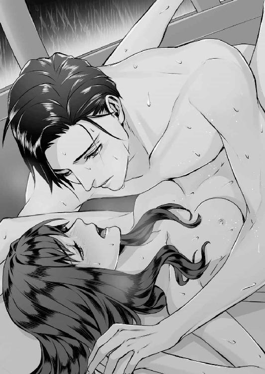
侑木が、瞼に、鼻に、いたわるようなキスをしてくれる。焼けるような痛みの中、自分の下腹部が徐々に彼のもので満たされていくのが判る。身体の奥深いところにまで質量のあるものに埋め尽くされて、じん......と中心が痺れるような熱を帯びる。
「......判るかい？ 君の中に全部、入っているよ」
「ん......」
「すごく、いいよ......。僕の方が、どうにかなってしまいそうだ」
胸がいっぱいになって、真珠は、潤んだ目で侑木を見上げた。今、感じている歓びを少しでも伝えたかったが、それは言葉にはならなかった。どちらからともなく唇を寄せ、熱に浮かされたようなキスを交わす。幸福の余韻の中、顔を上げた侑木が、真珠を見下ろすようにして囁いた。
「いつか、僕の子供を産んでくれ」
その言葉の意味を考えている間に、彼がゆったりと腰を動かし始めた。たちまち現実の痛みが押し寄せ、真珠は目を閉じ、頭の横に投げ出した両手をぎゅっと握りしめる。
その手に侑木は自分の手を被せると、指を絡ませるようにして、深く真珠の中に入ってきた。細い声を上げて背中を反らした真珠の腰を抱き、一度引いた腰を、再び深く沈めてくる。
「あ......、ん......、っ......」
深く穿たれた後は、一転して単調な抽送が続く。顔の上で浅い呼吸が響き、乱れた髪が時折真珠の額に触れる。揺れる視界と小刻みに突き上げられる身体。車を叩く雨音が近くなったり遠ざかったりする。どれくらいそんな時間が続いたのか、いつの間にか痛みが和らぎ、真珠の呼吸もまた、浅く、熱くなっていた。
「ア......、あ、ん、......ゆ、侑木さん......」
「真珠......、」
彼の動きが激しさを増し、肉がぶつかり、粘液がかき回される音がいやらしく響いた。
「あ......、ン......、ア」
「真珠......、すごく、気持ちいいよ」
快感とまではいかなくとも、彼に穿たれ、揺さぶられていることが堪らなく心地いい。頭の中は薄い靄がかかったようで、意識は解離したように別の場所を彷徨っている。
身体の奥で淡い官能の芽が緩やかに芽吹き始める。自分の身体のいっそう深い場所が、彼の熱で蕩けていくのが判る。それは、さっき侑木によって与えられた快感の、何倍もの強さを予兆させるもので、真珠は不意に恐ろしさにかられて身をよじった。
「あ......、だめ......、あぁ......、い、いや」
侑木の膨張したものがずるりと抜けて、今度は別の角度からねじ込まれた。真珠の片足を持ち上げた侑木は、互いの足を交差させたまま、いっそう強く腰を打ちつけてくる。そうしながら、彼は真珠の秘めやかな場所を、指で優しく刺激した。
「──っ、......ン、んっ、......、やぁ、だ、だめ......っ、......っ」
いきなり強い快感が下腹部に広がって、真珠は背をのけぞらせた。彼をのみ込んでいる場所が、痙攣でもするようにひくひくと震え、全身が重たい官能に包み込まれる。同時に、微かな呻き声を上げた侑木が、真珠の中から素早く自分のものを引き抜いた。
腹部に、温かな飛沫が迸る。彼が外で射精したことは判ったが、真珠は動くこともできず、強すぎる快感の余韻に胸を上下させていた。次第に、目の奥が熱く潤んでくる。
──私......、侑木さんと結ばれたんだ。
あんなに大好きだった人と。一度は別れて、二度と会えないと思った人と......。
「......すごくよかったよ。君が辛い思いをしていなければいいんだが」
指で、ほつれた髪を梳いてくれた侑木が、優しいキスを真珠の唇に落としてくれる。
微笑んで首を横に振りながら、真珠は彼の広い背に手を回した。泥に沈んでいくように全身が重い。心地よい疲労感と温まった身体が、真珠を眠りに誘おうとしている。
「真珠......？」
もう少し彼の声を聞いていたい。そう思いながら、真珠はゆっくりと眠りに落ちていった。
──なんだろう。眩しい......。
網膜を焼く光に、真珠は顔をしかめて首を振った。
鳥のさえずりが騒がしい。まるで間近にそれがいるようだ。そう思いながら薄目を開けた真珠は、あり得ない光景に、思わず息を止めていた。
「......ゆ」
朝の陽射しが、車内を明るく照らし出している。ほんの数センチ前に、侑木の無防備な寝顔があった。長い睫毛、形のいい鼻梁、前髪は額に落ち、唇は薄く開いている。
彼は裸で、真珠もそれは同じだった。温かな布団の中で、二人の素足が重なっている。
──ど、どうしよう......。
昨夜は侑木の車で、そのまま寝てしまったのだ。信じられない、車の中で、しかも服を脱ぎ散らかしたまま。私が眠ってしまったから、侑木さんも仕方なく隣で寝てくれたのだろうか？
陽射しの下で見る車内は、真珠が知っている侑木の車とはまるで違っていた。フルフラット状態になった後部座席には、全面にクッション入りシートが敷かれていて、身体の下には毛布が、上にも薄手の布団がかけられている。手狭であるが、ホテルの一室のようだ。
「起きた？」
車内に視線を巡らせていた真珠は、びくっとして肩をすくめた。視線を戻すと、さっきまで目を閉じていた侑木が、いたずらっぽい微笑を浮かべて真珠を見下ろしている。
「お、......起きました。侑木さんこそ......」
「起きたよ」
いきなり昨夜の記憶が、場面ごとに蘇った。理性をなくしたような激しいキス、熱っぽく喉を辿る唇と舌。彼の滑らかな肌と、腿の硬い筋肉──
「え、えと......」
みるみる赤くなる真珠を見つめていた侑木は、口元に淡い苦笑を浮かべる。
「雨はすっかりやんだようだね」
「そ、そうですね」
「君が眠っている間に外に出て、理子にだけは連絡しておいたよ。捜索隊に来られたら、さすがに恥ずかしい思いをするだろう。──ところで、さっきからどうして僕を見ないんだい？」
「だ、だって」
目を合わせるのが恥ずかしすぎる。どんな顔をして彼を見ていいか判らない。昨夜はいっぱい恥ずかしい声を上げた。それだけでなく、すごくいやらしい恰好で......。
不意に手首を掴まれて引き寄せられた。驚いた真珠は小さな声を上げて、侑木の顔を正面から見上げる。
「顔を見せて」
ぎゅうっと心臓が締めつけられた。子供のような笑顔になった侑木が、額を押し当ててくる。
「......僕のものだ」
そのまま唇に淡くキスされて、痺れるような幸福を感じながら、真珠は侑木の頬におずおずと指で触れた。その手に彼の手が重なり、互いに指を絡めながら、キスが少しずつ深くなる。
もうこれが夢で、このまま死んでもいいと真珠は思った。本当に夢みたいだ。私──私みたいな女が、こんなに幸せになっていいんだろうか。......
「まさかこんな形で、僕の邪な夢が叶うとは思わなかったよ」
唇を離した侑木が微笑して囁いた。真珠は夢現のまま、意味を問うように瞬きする。
「君も知っているように僕の趣味は山歩きで、この車も車中泊のために買ったんだ。実は、いつか君と二人で山に行けたらいいとずっと思っていた」
「──え？ ほ、本当ですか。だってそんなこと、今まで侑木さん一言も」
「だって邪な夢だからね。......今度、一緒に行ってくれるかい？」
「はいっ、もちろんです。わぁ、すごく楽しみ」
思わずはしゃいだ声を上げると、侑木は少し眉を上げてから、苦く笑った。
「そんなに無邪気に喜んでいいのかな。僕は何度も邪と言ったのに」
「えっ......」
「......正直言えば、今も君を壊してしまいそうで、怖いよ」
頬を染めて顔をうつむかせた時には、もう侑木は目を逸らし、真珠から身体を離していた。ゆっくりと離れていく体温と背中に、不意に言い知れぬ寂しさが込み上げる。
この車の中は楽園だ。二人を妨げるものは何もない。けれど、一歩外に出てしまえばどうだろう。侑木と真珠の立場の差は会社の外にも存在する。ずっと考えないようにしてきたが、彼が米国の名門一族の血を引いているというのは、経済界では公然の秘密だ。そんな家が、果たして真珠のようないわくつきの娘を、息子の恋人だと認めてくれるだろうか。──
「真珠、戻る前に、十五池に寄ってみないか？」
表情を陰らせた真珠を見下ろすと、侑木はふっといたずらめいた笑顔になった。
「君のお母さんやお祖母さんに、こうなったことを報告しておきたくてね。それにあそこは、恋人になったばかりの僕らが散歩するにはぴったりの場所だろう？」
「以前君は、この山一帯で土砂崩れがあったと言っていたね」
真珠の手を引く侑木が進んでいるのは、十五池の畔だ。雨で道がぬかるんだ傾斜道を、彼は木の枝を掴んで身体を支えながら、迷いのない足取りで進んでいく。
真理は侑木から借りたシャツを着て、侑木もラフなＴシャツ姿だった。空はからりと晴れて、昨夜の大雨が噓のようだ。
「調べてみたら、あったよ。慶応元年七月のことだ。集中豪雨で、この山の中腹の崖が崩れ、十五池の側面ごと押し流したんだ。山間の村が土石流にのまれ、五十六人が犠牲になった」
「......、そんな、そんなのわざわざ、調べなくても」
「これはとても大切なことだ。伝聞と事実とでは大きな違いがあるからね」
足を止めた二人の眼前には、池で犠牲になった娘たちを祀る鎮魂の石碑がある。
「この石碑は、今は山側にあるが、当時は祠という形で崖側に建てられていたそうだ。それが慶応の土砂災害で流されてしまった。郷土資料館にその記録が残っていたよ」
言葉を切った侑木が、ポケットから手帳を取り出した。そこには、石碑と遺言状に記されていた短歌がメモされている。①が石碑で、②が遺言状のものだ。
② ぬばたまの黒き水面に声絶えて、わが声もまた水底にあり 庵
「音読みでアン、訓読みでイオリ。ずっとこの名前の意味を考えていたんだが、君の家系図を辿ってみてようやく謎が解けたよ。実はその名前の人物が、一人だけ存在しているんだ」
驚く真珠の前で、侑木はペンを取り出し、短歌の横に『伊織』と書き込んだ。
「御園生伊織。家系図を見る限り、この人物が御園生家の最後の直系男子だ。君の話によると、十五池で最初に犠牲になったとわという女性の恋人で──彼女を裏切り、見捨てた男だね」
真珠は息をのんでいた。そして弾かれたように、今度は石碑に刻まれた歌に目を向ける。
ぬばたまの黒き水面に声絶えて、十五の君をとわにとどめん
「じゃあ、この歌は伊織さんが詠んだっていう......そういうことなんでしょうか」
「調べてみればはっきりするだろうが、その結論で間違いないと思う。イオリ──ただし、君のお父さんは、漢字だけをあえて違うものに変えている。その意味が判るかい？」
真珠は眉を寄せながら首を横に振った。
「正解は多分掛詞だ。巌氏が遺言状に記した短歌の元になっているのは、伊織の詠んだこの短歌だが、これにも、とわを、『永遠』と掛けているように、掛詞が使われている。つまりそれが、巌氏の残してくれたヒントだったんだよ」
──え......？
「すみません。私にはあまりよく意味が...。理子さんが言ってましたけど、遺言状は十五池の底にあるってことでいいんですよね？」
「そうだね。──だからもう諦めることにしたよ。この池の底を来月の十五日までにさらうのは、とてもじゃないが無理そうだ」
苦笑した侑木が膝をつく。真珠は複雑な思いで、その場に立ちすくんでいた。
子供の頃からずっと不気味に思っていたこの短歌を詠んだのは、とわの恋人、伊織だった。
つまり侑木が最初に推測した通り、この歌は愛する人の死を見届けた、辛い心情を詠んだものだったのだ......。
「実はあれから、紘一さんと話をする機会があってね」
「えっ......、伯父さんと、ですか」
「僕を脅かすためだろうが、前に凌士君が怖い話をしただろう。昔、この池に飛び込んで亡くなったというメイドさんの話だ。紘一さんも遺言状公開の席ではひどく取り乱していたし、その辺りの事情を改めて聞いてみたんだ」
そんな話を今さら蒸し返してなんの意味があるのだろう。真珠の中に非難がましい気持ちが膨らんだが、侑木は石碑を見つめたままで続けた。
「十和さんという自殺したメイドは、紘一さんが養子になるずっと以前から、住み込みで働いていたんだそうだ。紘一さんが養子になったのは十七歳の時だというが、その時十和さんには、ツネヨさんという十三歳の娘がいた」
あっと、真珠は息をのんでいた。その真珠の前で侑木は手帳に名前を書く。常代。
「侑木さん、──常代さんって、もしかして」
「君が七歳の時、常代は概ね二十八歳だ。理子がいくら調べても雇用履歴に名前がなかったはずだ。君の面倒をみてくれたツネちゃんは、厳密に言うなら使用人ではなかったんだから」
ツネちゃんは存在した──曖昧だった自分の記憶が裏付けされたことに真珠は内心ほっとする。
そんな真珠を見つめ、侑木は少しだけ陰りを帯びた微笑を浮かべた。
「ここからが、実はあまりいい話ではないんだ。──紘一さんが言うには、自殺した十和さんは御園生家に強い恨みを抱いていたそうでね。聞けば、それも無理からぬ話なんだ」
侑木はそこで、少し言いにくそうに眉をしかめた。
「十和さんには結婚を約束した相手がいたんだそうだが、そんな彼女を、宇月さんが無理に身ごもらせたというんだよ。しかもその理由が残酷だ。御園生家の女性は短命で、君の言うように精神疾患を患う者も多かったそうでね。......愚かにも、それを十五池の呪いだと妄信した宇月さんは、いわば呪いを取り憑かせるために、十和さんに子供を産ませたというんだ」
真珠は息を引いていた。それは......つまり、いずれ生まれてくる瑠璃子の身代わりに、十和の子に呪いを受けさせようという発想だ。それだけではない。真珠が使用人だとばかり思っていたツネちゃんは、実は真珠にとって、伯母にあたる人だったのだ。
「そういったことへの心労もあってか、紘一さんが養子に入った時には、十和という人はだいぶ精神状態が不安定になっていたそうだ。御園生家でもその扱いに手を焼いて、病院に入れようとしていた矢先だったそうだよ」
「......十五池に身投げしたんですか」
「この石碑に、恐ろしい呪詛の言葉を刻みつけてね。どれだけ問い質しても、紘一さんはここに何が書かれているかを教えてはくれなかった。──よほど怖かったんだろうし、護符を剥がしてしまった君のお父さんを激しく非難していたよ」
「父は......確かに好奇心の強い人ですけど、どうしてそんな馬鹿な真似をしたんでしょうか」
「馬鹿な真似だろうか？ 実は僕には、君のお父さんの気持ちがよく判るんだ」
そこで言葉を切ると、侑木はおもむろに護符に手をかけた。真珠がはっとした時には、めりめりっと接着面が剥がされる音がして、護符が半ば取れそうになっている。
「やっ、やめてください、何をしているんですか！」
「君のお父さんと、多分、同じことをしているんだ」
「いやっ、やめて！」
真珠は侑木に腕にしがみついたが、その時にはすでに、最初の一枚が石から剥がされていた。
「君のお母さんは十五池に行くのをとても怖がっていたんだろう？ お父さんは、過去の出来事など恐れる必要はないと、お母さんにそう伝えたかったんだ」
「本当にやめて。こんなことをして、侑木さんに何かあったらどうするんですか！」
「あるはずがない。僕はそれを、僕自身で君に証明したいんだよ」
最初の一枚が剥がされた後は、あっけないほど簡単に全ての護符が剥ぎ取られた。
岩肌に細く彫りつけられているのはたどたどしいカタカナだ。それは、かろうじてこう読み取ることができた。
十五ネンゴトニ ヒトリ ツレテイク イオリガトワノモトニカエルマデ
「十五年ごとに......一人、連れて行く。イオリガトワ......伊織がとわのもとに帰るまで」
その意味を解した真珠が、恐怖で石のように固まる傍らで、文字を黙って見つめていた侑木は、両手を合わせて目を閉じた。
十五年──十五年ごと。どうして今まで気がつかなかったのだろう。そういえば父が亡くなった今年は、母が亡くなってからちょうど十五年目で、祖母の紅玉が亡くなったのは、今年三十歳になる姉の生まれた年だ。つまり......祖母の代から十五年ごとに......この家では誰かが、死んでいる。
「これで、君の家にかけられた呪いは僕のものだ」
弾かれたように侑木を見た真珠は、ようやく彼が、こんな暴挙に出た本当の理由を理解した。
「なに......、なにを言ってるんですか......」
自分が内心抱いていた邪な願いが、こんな形で現実になってしまったことに、真珠は激しく動揺し、うろたえた。たとえ一時でも、彼に、自分のいる場所にまで堕ちてきて欲しいと願ってしまった。昨日、ためらう彼に自分から両手を回して抱きしめた時も、彼の人生をこのまま奪ってしまいたいという暗い望みが、心のどこかに確かにあった。
侑木は、そんな真珠の気持ちを感じ取り、今、──それに応えてくれたのだ。
「馬鹿なこと言わないでください！ 侑木さんらしくもない。呪いなんてないんでしょう？ 理屈のつかないことは一切信じないって、侑木さん、そう言ってたじゃないですか！」
気づけばぽろぽろと涙を零し、真珠は両手を握りしめていた。微笑んだ侑木が、立ち上がって真珠の肩を抱き寄せる。
「それを、君の口から聞きたかった。呪いというのはしょせん言葉のマジックだ。かけられた者の心にのみ存在する、実態のない恐怖心にすぎないんだよ。だからもう泣かないでくれ」
「泣いてない......っ、ゆ、侑木さんがあまりに馬鹿すぎて、腹が立ってるんです。これで本当に侑木さんに何かあったら、私......っ」
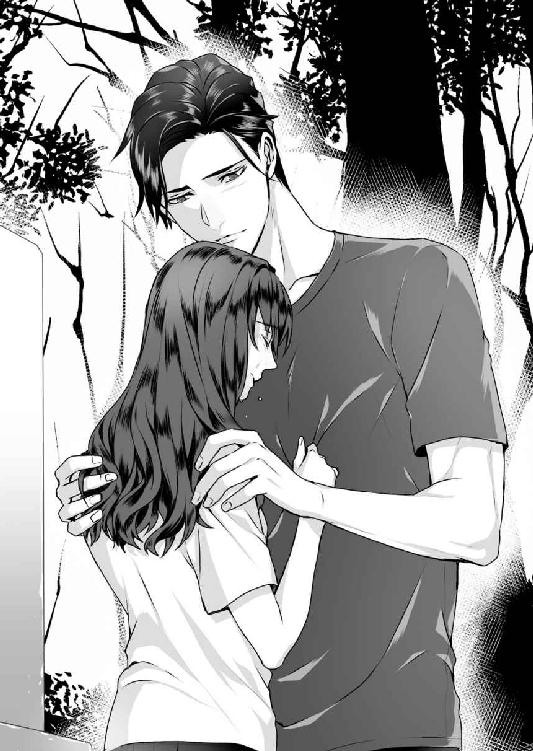
拳で力いっぱい侑木の胸を叩き、真珠は声を上げてむせび泣いた。
「私、本当は怖くてたまらない。だって、祖母も母も、それから父も、十五年おきに亡くなってるんです。......それを、どう説明するんですか」
「お父さんは病気だよ。僕が思うに、それは偶然と故意の積み重ねだ」
「......、故意......？」
「お父さんの死は天命で、他人に操作されるようなものではない。お祖母さんに関してはなんとも言えないが、問題は七月十五日という因縁の日に亡くなられた君のお母さんだ。それを偶然というにはさすがにこじつけがすぎるからね。呪いなどない以上、それは故意でしかあり得ない。つまり、お母さんの周囲に、意図的に呪いを実現させた人物がいたはずなんだ」
──どういう意味......？
「......は、母を殺したのは、父なのかもしれないんですけど」
「やれやれ。君にかけられた呪いが、実は一番強力じゃないかという気がするよ」
侑木は苦笑して、真珠の肩を少しだけ押し戻した。
「真珠、君の記憶を疑うわけじゃないが、君のお父さんはそんな人ではないよ」
「......っ、でも私、あの時凌士さんに聞いたんです。父は、凌士さんに母のことで脅迫されて、それであんな遺言状を書いたんですよ」
「それでも君のお父さんは、お母さんを殺してはいない」
あまりに自信に満ちた言い方に、真珠はようやく泣き濡れた顔を上げた。
「なんで......ですか？」
訝しむ真珠の顔をしばらく見つめてから、侑木は額に優しく口づけた。
「でも、その話を蒸し返すのはもうやめよう。僕は警察でもないし、証拠を全て揃えて真犯人を君の前に突き出すなんて絶対に不可能だからね。──判って欲しいのは、それが理屈のつかないものではないということだけなんだ」
彼の眼差しの不思議な静かさが少しだけ気になった。考えすぎかもしれないが、もしかしてこの人は、私が知らない何かを知っているのではないだろうか......？
「......真珠、東京に戻ったら、僕の部屋に越してこないか」
驚く真珠を胸元に抱き寄せると、侑木は頭をそっと撫でてくれた。
「君は僕の傍で、普段通りの生活をしていればいい。約束するよ。呪いなんてこの世に現実として存在しないことを、僕がこの身で証明してみせる」
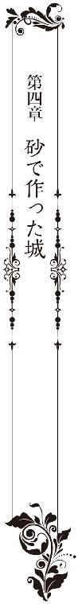
「えーと、ここでバターを二十グラム......」
呟きながら、真珠は端末を覗き込んだ。九インチの画面の中では、フライパンの中で黄金色のバターが溶け、トマトソースと混じり合っている。
料理は苦手な方ではないが、本格的なフレンチ料理は初めてだった。難易度の高いメニューは、ソースひとつ作るのにも手間取ることばかりで、先ほどから一向に作業が進まない。
──あ、でもやっぱり和食の方がよかったかな。侑木さんには十日ぶりの日本だし......。
そんなことを思った時、テーブルに置いていたスマートフォンが着信を告げた。
「真珠ちゃん？ 私よ。今、羽田に着いたところ」
歯切れのいい理子の声が響く。真珠は指をタオルで拭ってから、端末を持ち直した。
「今夜あたり食事はどう？ 向こうでお土産も買ってきたの。すっごくエッチなランジェリー」
「あ、ありがとうございます。でも今夜は、ゆ......慶佑さんが帰ってくる予定なんです」
真珠が、都心にある侑木のマンションで暮らし始めて一ヵ月が過ぎようとしていた。
とはいえ、にわかに多忙になった侑木は、週の半分は海外出張で帰ってこない。
その間、話し相手になってくれたのが理子で、この十日あまりこそ海外旅行に行っていたが、それ以外では、食事に誘ってくれたり、パーティなどのイベントに連れ出してくれたり、世間知らずの真珠に、侑木の住む世界を無理のない形で教えてくれた。
相続に関しては、すでに他の弁護士を代理人として立てることになっており、理子とは完全にプライベートなつきあいになっている。
「あら、それは間が悪かったわね。慶佑、今度はしばらく日本にいられるの？」
「さぁ......。私も今は会社を離れてしまったので、彼のスケジュールが判らないんです」
「そう。──じゃ、また電話する。近い内にランチでもしましょ」
彼女らしからぬ物言いたげな間が気になったが、侑木が戻ってくるまでの時間はそう残されてはいない。通話を切った真珠は、再び画面を睨みつつソース作りを再開した。
採光のいい広々としたキッチン。真珠のために揃えられた新品の調理機材。高層マンション最上階にある彼の部屋は、全ての家具が白を基調とした明るい色彩で統一されており、普通に暮らしているだけで、ドラマのワンシーンに入り込んでしまったような感覚になる。
実際、朝目が覚める度に、まだ夢の続きを見ているような、今が現実ではないような不思議な気持ちになるが、いつかこの夢が覚めてしまうのではないかという不安は、朝に、夕に、侑木に繰り返し愛される度に薄れていった。
彼の情熱ときめ細やかな愛情は、一緒に暮らし始めてからも薄まるどころか、ますます深くなっていった。毎日のように届く衣服やコスメなどの高価なプレゼント。貸し切りにした店内で一流シェフにディナーを用意させたり、ＶＩＰ席でオペラを観劇したりと、彼は、まるで出来得る贅沢を全て真珠に経験させようとでもいうかのようだった。
そんな風にして一ヵ月は夢のように過ぎていった。もう、朝目覚める度に不安を覚えることはない。これが真珠の現実であり新しい日常だ。でも──
ふと胸に差し込んだ影を追いやり、真珠は気持ちを切り替えるように掛け時計を見上げた。
午後七時。そろそろ侑木を乗せた飛行機が、羽田に到着する時間だ。
「いい匂いだね」
いきなり聞こえた声に、真珠は、びくっとして肩を震わせた。
「──ゆ、侑木さん？」
ソースの爆ぜる音で、背後の気配に気がつかなかった。というより、こんなに早く帰ってくるなんて夢にも思っていなかった。振り返ると、キッチンの入口に侑木が立っている。
光沢を帯びたシルバーのスーツに、少しだけ襟足の伸びた髪。微笑む侑木の顔は、別れた時より少しだけ日に焼けているようで、たちまち真珠の胸はときめきでいっぱいになった。
「え、えと、おかえりなさい。あの......、まだ夕食の支度ができてなくて」
「いいよ」
侑木が歩み寄ってくる。陶然と彼に見惚れていた真珠は、その時、鼻をつく匂いに気がついてはっとした。
「きゃっ、どうしよ、焦げちゃいました」
火を止めようとした真珠の手に被さるようにして、侑木の手がコンロのスイッチを切った。コンロと侑木の間に挟まれたまま、身体だけが反転させられて、すぐに唇が重ねられる。
「......ん」
いきなり唇を開いた侑木の熱に、真珠はあっという間にのみ込まれていた。彼は真珠の頬を両手で抱き、固定させるようにして熱く唇を貪った。真珠もまた、熱に浮かされたように彼の頬と首に手を添える。真珠の手に支えられた侑木は、キスをしながら上着を脱ぎ、手早くネクタイを引き抜いた。
シャツだけになった侑木に抱きすくめられ、もう自分が何をしているのかも判らなくなった。彼の匂い、ぬくもり、腕の逞しさ──苦しいくらいの愛おしさで息もできない。
ようやく長いキスが終わった時、真珠は頬を薄桃色に上気させ、エプロンを肩から落としていた。彼は自身の興奮を静めるように、真珠の額や髪に、繰り返し優しいキスをする。そしてようやく口を開いた。
「ただいま」
「......おかえりなさい」
くすぐったいような気持ちで、真珠は答え、頬を仄かに熱くしてうつむいた。
あまりに情熱的なキスが、身体の奥にある何かを恥ずかしく疼かせている。一方侑木は、自分が真珠に与えたものに気づかないのか、色んなものが散らかったキッチンを見回し、少し申し訳なさそうな顔になった。
「ちょっと予定が早まったんだ。夕食のことを考えたら、連絡すべきだったね」
「大丈夫です、あと少しなので。先にお風呂に入っててください。その間にできますから」
「そうさせてもらうよ。──そうだ、玄関の届け物は？」
真珠は手を口に当てた。料理の途中に届いたので、つい置いたままにしていたのだ。
「墨田の家に残っていた私の荷物です。冬斑さんと姉さんが、先週の日曜日に引っ越しを済ませてしまったので......」
「へぇ、それは随分早いね」
「早すぎですよ。しかも私には事後承諾だったんです。何もかも冬斑さんが一人で決めてしまうから」
真珠が不満そうな顔を見せると、上着を拾い上げた侑木は少しだけ優しい目になった。
「まぁ、仕方がないんじゃないか。正式に籍を入れた以上、お姉さんを監護するのは冬斑さんの役目なんだ。安心して任せておけばいい」
でも──、と言いかけた真珠は、侑木にこの件を訴えても無駄なことを思い出した。冬斑と姉の関係については、侑木は一貫して我関せずの態度を取り続けているからだ。
四十九日が開ける前に、二人が籍を入れてしまった時もそうだった。法要の席で冬斑から報告を受けた真珠は、声も出ないほど驚いたが、当時出張中だった侑木に電話で訴えても、彼は「僕に口出しできる問題ではないよ」と冷静に言うだけだった。
彼が冬斑に遠慮しているのは明らかで、その原因のひとつが鎮魂碑の護符を剥がしてしまったことにあるのだろう。冬斑が激怒したのは言うまでもなく、冬斑はその後、神主を呼んでお祓いまで行っている。真珠と侑木はその場に呼ばれもしなかった。
真珠にしても、今さら冬斑と姉の関係に異議を唱えるつもりはない。けれど、姉の体調は、最後に二人で散歩して以来ずっと悪いようで、法要の席にすら出てこなかった。つまり、あれから一度も話す機会のない姉が、冬斑との入籍をどう思っているのか、その真意すら、真珠には確かめる術がないのだ。
しかも、その次の報告が「引っ越しました」だ。さすがに呆れてものも言えない。体調の悪い姉を連れて、一体冬斑はどういう暮らしをしようというのだろう。
「いいんじゃないか」
まるで真珠の気持ちを読んだように、キッチンを出て行こうとしていた侑木が足を止めた。
「永莉さんにしても、環境が変わればがらりと気持ちが変わることもある。何より、永莉さんを幼い頃から見てきた冬斑さんが一緒なんだ。君が心配することは何もないよ」
「それはそうかもしれないですけど、今週末は母の命日でもあるんです。......せめて最後に、家で法要くらいしてもいいんじゃないかと思っていたので」
「ああ、今週の土曜日が七月十五日だったね。......あれから凌士君が何か言ってきたりはしていないね？」
「大丈夫です。電話もブロックしていますし、ここの住所も知らないはずですから」
七月十五日は、母の命日であると同時に墨田家の財産がどこに帰属するか決まる日でもある。
あれ以来、逸見家からはなんの申し出もないし、あっても真珠に応じるつもりはない。つまりこのまま七月十五日が過ぎれば、墨田家の財産は北斗ＨＤに帰属することになる。
ただし、真珠と永莉の遺留分請求だけは認められるだろうから、真珠としては、屋敷の処分費や墓石の移転費、そして現在侑木が負担している弁護士費用だけは払いたいと思っていた。
「二人の新居は、長野県内にある冬斑さんの実家の近くなんだそうです。落ち着いたら連絡するとは言われたんですが、私、来週か再来週には行ってみようと思います。姉がどういう状況なのか、自分の目で確かめてみたいんです」
真珠の訴えに、侑木は少し考えるような目になった。
「......それは、できれば八月まで待ってくれないか？」
「侑木さんが忙しいのは判ってます。私一人で大丈夫ですから」
「いや、ぜひとも僕も挨拶に伺いたいんだ。君のお姉さんの配偶者なら、僕にとってはいずれ義兄になる人だ。──実は、今夜にでも話そうと思っていたが、週明けから長期出張が入って、少なくともひと月は、日本に戻ってこられそうもなくてね」
「えっ......」
「そのことで、君に相談したいこともある。──ひとまずシャワーを浴びてくるよ」
まだ話を続けたい真珠のこめかみに軽くキスをすると、侑木はキッチンを出て行った。
仕事のことを曖昧にしか語らない侑木が、真珠には少しだけ不安だった。
全日との交渉がひとまず現状維持で決着がついたことは、報道で知っている。が、それはあくまで暫定的な措置だろう。今回は全日側が譲歩したのかもしれないが、いずれ根本的な解決を迫られるはずだ。
侑木がシカゴを始め国内外を飛び回っているのが、その件と無関係ではないことは察している。しかし、真珠にはもう侑木のスケジュールを知ることはできない。というのも六月中旬に、真珠は侑木の意向もあって、プリズンの関連会社に出向になってしまったからだ。
（僕と結婚したら、できれば仕事はやめてもらえないか。僕の仕事は出張も多いし、いずれはシカゴに戻ることになる。君には極力自由な立場で、僕の傍にいて欲しいんだ）
確かに、それは侑木の言う通りで、真珠が会社勤めをしていれば、二人の時間はすれ違ってばかりになる。恋人同士が──しかも片方が社長という立場で同じ会社に在籍していれば、周囲に余計な気を遣わせてしまうだろう。
日本を離れ、彼とシカゴで暮らすのは、真珠にとっても夢のような未来だった。もう、そこに真珠が恐れていた過去はない。墨田真珠ではなく、侑木真珠として全く新しい人生を歩んで行くことができるのだ。でも──
キッチンの食器棚に、自分の顔が映っている。
父とよく似た目、母とよく似た鼻と唇。たとえ世界中のどこに行っても、この身体に流れる血から逃げることはできない。
最近見なくなった怖い夢は、今にして思えば警告だ。夢を見始めたのが、丁度侑木への恋を自覚し始めた時期と同じだからだ。──十五池と外界を遮る黒い柵。夢は、ここから先に行ってはいけないという警告の意味も含んでいたのだ。
なのに、真珠は先に進んでしまった。この先のことは考えるのが怖いし、正直言えば考えたくもない。結局、自分は昔に戻っただけなのだ。嫌な思い出を心の底に封印して、表向き平凡な日々を過ごしていたあの頃の自分に。──
「ほ、本当にすみません。あと少しのはずだったんですけど」
「構わないよ。それに僕も料理を作るのは嫌いじゃない」
筋をとったセロリを切る侑木の手つきは、確かに真珠の何倍も手際がいい。
「あと、スープを温めたら終わりですから」
真珠は急いで、味を調えたスープに火を入れた。侑木が思いの外シャワーを早く終えてしまったせいもあるが、結局ソース作りに手間取ってしまった自分の要領の悪さが情けない。
「焦らなくても大丈夫だよ。これが終わったらワインを出しておこうか」
お願いします──と、言いかけた真珠は、サラダボールにセロリを入れる侑木の手に、ふと自分の手を止めて見惚れていた。
「どうした？」
「あ、いえ......、綺麗な手だなと思って」
以前から思っていたことだが、侑木の手はまるで女性みたいに指が長くて形がいい。しかし侑木は、訝しげな目になって、自分の手をしげしげと見下ろした。
「そうかな。どこを見たらそう思えるのか僕にはよく判らないが」
「ええー、そうですか？ 指なんかもほっそりして長いし、爪の形も綺麗じゃないですか」
「君の目にどんなフィルターがかかっているのか知りたいよ。僕の指は人よりは太い方だよ」
そんなことないでしょ。と思いながら、少しむきになった真珠は、侑木の手を取っていた。自分の手が子供のそれに思えてしまうほど大きな手だ。そして間近で見ると、確かに指は長いが、関節は節だって、むしろ男らしい造形をしている。
「あれ、本当だ......。おかしいな。遠くから見ると、女の人の手みたいなのに」
硬い節を指でたどり、真珠は少しだけ首をかしげた。
「こんなに太くて男らしいなんて思わなかったです。私の、......倍？」
「君の指が、逆に人より細いからね」
侑木の手が、逆に真珠の手を取るような形になったので、真珠はちょっと焦りながら手を引いた。今さらのように心臓がドキドキしてくる。シャワーを浴びたばかりの彼の身体からは、清潔なボディソープの香りがして、それは、どうしても夜の彼を連想させる。
「......っ、すみません。こんな風に脱線してるから、だめなんですよね」
急いでスープ鍋の前に立つと、背後に侑木が立つ気配がした。腰に両手を添えられ、思わず息をのんでうつむくと、耳にそっと唇が当てられる。
「確かに君が脱線するから、待ちきれなくなってきた」
「......ご、ごめんなさい」
侑木の手が臍の方に回り、耳やうなじに唇が押し当てられる。真珠は身をすくめるようにしてそのキスをやり過ごそうとしたが、流されまいという気持ちとは裏腹に、胸が熱くなり始めていた。コットンのシャツ一枚になった侑木の体温が背中から体内に伝わってくる。
「先に食べてもいい？」
「い、いいです、けど」
そう言いながら、侑木のキスはますます熱を帯びてくる。大きな手がエプロンの下から胸に滑り込んできて、真珠は手にした御玉杓子を落としそうになっていた。
「あ......、さ、先に食べるって」
「だから、食べているよ」
薄いトップスの上から形を確かめるように胸を揉まれ、耳に、熱っぽいキスをされる。彼に手を取られた時から、キスまでは予感していた。でも、こんなことまでされるなんて──
「ン、......だ、だめ、ご飯が遅くなっちゃう」
「いいよ。後で」
いつの間にか鍋の火は消され、真珠は呼吸を熱くしながら、彼の胸に背中を凭れさせていた。おとがいを指で持ち上げられ、上から唇が重ねられる。最初から余裕のない性急なキスは、真珠の理性を瞬く間に別の場所に追いやった。
「ん......だめ......、ん......」
エプロンの下でトップスが引き上げられ、露わになった胸の先端を、侑木が指で擦っている。硬く勃ち上がった蕾を摘まれ、いやらしく捏ね回される。そうしながらもう片方の彼の手は、ミニのキュロットの裾をたくし上げてショーツの中に忍び込もうとしている。
「いや、......っ、だめ、......や」
さすがに恥ずかしさが勝り、真珠は侑木のキスから逃げるように首を振った。その顎に侑木の手が添えられる。彼の指で唇の内側をなぞられ、初めての感覚に、真珠は息を乱しながら抵抗をやめた。
「君が、火をつけた」
囁いた侑木が、自分の指を真珠の唇の中に差し入れてきた。
「僕は一度我慢したんだ。あのまま君を寝室に連れて行きたかったが、一生懸命料理をしている君がすごく愛おしかったからね」
「ン......」
口の中を、半ばまで沈んだ彼の指で掻き回される。ついさっきしげしげと手に取って見ていた、彼の長くて男らしい指が、真珠の口中を愛撫し、唾液をまとわりつかせて淫らに抽送を始める。
同時に、潤み始めた花芯にもう片方の手の指が滑り込んできた。小さな淫芽を指腹で弄られ、真珠は耐えられずに腰を小さく波打たせる。
「ン......、んっ、あ......ん」
「すごいね、もうトロトロだ」
囁いた侑木がぬるぬるに濡れた秘裂の奥にゆっくりと指を沈み込ませていく。
「判るだろう？ ......僕の指が、君の中に入っていくよ」
──あ......、私の中に......、侑木さんの......。
あの、長くて、節立った太い指が──。
そのまま口と花孔をいやらしく穿たれ、真珠はくぐもった声を上げて、はしたなく突き出した腰を振った。
「ん......ッ、ンンッ」
「真珠......可愛よ。すごく、いやらしい顔になってる」
「ンッ、......っ、や......、あ......」
いきなり頭の中が白くなり、一気に広がった快感で全身が灼ける。それは急速に小さくなり、すぐに甘苦しいだるさが下半身に充満した。
侑木の手が離れると同時に、真珠は崩れるようにシンクに手をついて自身を支えた。足に力が入らず、もう立っていられない。今まで、こんなに早く到達したことがあっただろうか。多分、彼の指の形を想像しただけで、いつも以上に感じてしまったのだ。──
真珠の腰を抱いた侑木が、スウェットパンツの中から屹立したものを取り出すのが判った。ミニのキュロットごとショーツが脇に押しやられて、硬くて柔らかい塊が押し当てられる。
「や......、ベ、ベッドで」
「待てない。──大丈夫、避妊はしているよ」
頭を押さえられ、彼の反り返った欲望がひくひくと震える秘裂をみちっと割り開く。胸が締めつけられるような圧迫感の後、まだ快感の余韻で痺れる肉襞を一気に貫かれ、真珠は小さな悲鳴を上げて、シンクの縁を握りしめた。
「あんっ......ぁ......、」
「......真珠、......、」
微かに呻いた侑木が、真珠に覆い被さるようにして指を絡め、荒々しく腰を打ちつけてくる。
「あ......ああ、ん」
すぐに頭の中が淫らに濁って白くなり、真珠は侑木の指を握りしめた。濡れた艶音と張りつめた肉が合わさる音。次第に音の感覚が短くなり、耳元で聞こえる侑木の吐息が荒くなる。
「......君の腰は、......壊れそうに、細いね」
「ん、......や、......ん」
「壊しそうで、怖くなる。......なのに、こうしていると、逆に、壊してしまいたくなるんだ」
──や......、だめ、......だめ、......。
強く穿たれ、揺さぶられている身体が、自身の意識から離れて、急速に高みに押し上げられていくのが判る。今まで感じたことのないような強い快感に、真珠はむしろ不安さえ覚えた。
──ど、どうしてこんなに気持ちいいの？ ......あ、私、もう、もう......。
「あんっ、やぁ、あ、......、あっ、......、」
声が途切れ、真珠は唇だけを震わせた。荒い呼吸と共に、侑木の硬肉がいっそう深い場所でびくびくと震える。密着した彼の腰がゆっくりと離れ、真珠は崩れるように膝を折った。
「驚いたな。今夜は一段と感じやすいんだね」
暗い声で囁いた侑木が、膝をついた真珠を抱き起こし、正面から抱きしめてくれた。
髪に、額に、愛おしむような口づけが繰り返される。
「可愛いよ。......いく時の顔が見たかったが、君がすぐに昇りつめそうなのが判ったから、あのまま続けることにしたんだ」
「......っ、は、恥ずかしいこと言わないでください」
「僕も我慢できなかった。帰りの飛行機の中では、君を抱くことばかり考えていたよ」
胸がきゅっと締めつけられて、真珠は言葉もなく侑木の胸に顔を埋めた。
「......好きだよ。僕は君の望みならなんだって叶えたいほど、君に夢中だ」
「私も......」
今まで生きていて、これほど深い幸福を感じたことはない。けれどその幸福は、まるで砂で作った城のように、いつか波に押し流され、跡形もなく消えてしまうような気がしてならない。
この気持ちは、彼の愛情は永遠のものだろうか？ 時が移ろい、季節も街並みも変わっていくように、人の気持ちもいずれは変わっていくのではないだろうか。その時、私に何が残るだろう。こんな風にして彼の愛だけを唯一の頼りに生きている私に、何が......。
その時、不意に侑木に抱き上げられて、真珠の思考はそこで遮られた。
「すぐに食事にしたいが、先にお風呂に入った方がいいね」
「......っ、お、お風呂なら、私一人で入りますから」
「心配しなくても、これ以上食事の時間を遅くさせたりはしないよ」
「......本当ですか？ 前もそんなこと言って結局、」
「ただ、今夜は君に、約束を破った罰を受けてもらわなくてはいけないけどね」
意味が判らずに瞬きする真珠を見下ろし、侑木はいたずらめいた笑みを浮かべた。
ふと喉の渇きを覚えて、真珠は浅い眠りから目を覚ました。
常夜灯だけが淡く灯る寝室は、夜更けの静けさに包まれている。広いベッドに侑木の姿はなく、真珠はそろそろと起き上がった。
腰の辺りに重いけだるさが残っている。喉が渇いているのは、声を上げすぎたためだ。眠りに落ちる前の一連の行為を思い出すと、顔から火が出そうだったが、今は、こんな時間に侑木がいない驚きの方が勝っていた。
午前二時。情事の後、彼が持ち帰った仕事をこなすために自室に入ってしまうのはよくあることだが、さすがにそろそろ休まないと、今日の仕事に差しさわりが出る。
廊下に出ると、いきなり早口の英語が聞こえてきた。真珠はドキッとして足を止める。声はむろん侑木の部屋からで、おそらくビジネスで国際電話をかけているのだ。
英会話は苦手ではないが、こうも早口でネイティブだとさすがに何を言っているのか判らない。けれど最後に、こんな言葉だけがかろうじて聞き取れた。
「君だけが頼りなんだ、頼む、僕に力を貸してくれ」
通話が終わり、侑木が微かなため息をつくのが判る。薄く開いた扉の前で立ち尽くしていた真珠は、衝動的に扉をノックしてしまっていた。
「真珠？ ──どうしたんだ、こんな時間に」
中に入ると、デスク周辺だけが明るい室内で、侑木がパソコンに向かい合って座っている。
「ゆ、......慶佑さんこそ、こんな時間まで、お仕事ですか」
「そろそろ切り上げようと思っていたところだよ」
「何かトラブルですか？ すみません、電話の声が少し聞こえてしまって」
微笑した彼に手招きされたので、真珠はためらいながら彼の傍に歩み寄った。
この５ＬＤＫのマンションは、どこも自由に出入りしていいと言われているが、さすがに、彼の仕事部屋にだけは無断で入らないようにしている。だからこんな風に、デスクの近くまで足を踏み入れたのは初めてだ。
「悪い子だ。君はもうプリズンの社員じゃないのに、秘密の商用を立ち聞きかい」
「ご、ごめんなさい。でも最後の方しか聞いてないですから」
膝の上に抱き上げられ、真珠はためらいがちに彼の首に両腕を回した。
「別にトラブルでもなんでもないよ。昔の友人にプライベートな頼み事をしただけだ」
「......本当ですか？ 全日の件で、まだ何か揉めてるとかじゃ......」
「別件だよ。全日とはもう片がついている」
「でも......、ン」
淡いキスに、身体が震える。薄い夜着越しに感じる彼の腿の硬さと弾力。独特の香りと温かさに包まれているだけで、真珠は自身の身体が再び潤ってくるのを感じた。
一体今夜、何度あられもない声を上げて、快感の底に沈められたのだろう。思い出そうとしても、ところどころ意識が飛んでしまったように、記憶はおぼろげで曖昧だ。
結局浴室でも、抗い切れずに侑木の思うままにされてしまった。シャワーを浴びながら、正面から抱え上げるようにして穿たれて、浴槽では秘めやかな場所を指で巧みに愛され、何度も身を震わせた。
その後の食事は、どこか夢の中の光景のようで、今でもよく思い出せない。
気づけば寝室に運ばれて、時間をかけた愛撫で心も身体も蕩けさせられた後、奥深い場所を彼の昂りで貫かれた。そして半分意識を失くしたまま、眠りに落ちてしまったのだ。──
「そういえば、長期で出張するって言われてましたけど、どこに行かれるんですか」
唇が離れた間隙に真珠が聞くと、侑木は微かに苦笑してから、パソコンに向き直った。
「......色々だ。その件で君に相談があるとも言ったね。──明日──もう今日か。ランチでもしながらゆっくり話そうかと思ったんだが、もしかしたら予定が早まって、明日にでも、日本を離れることになるかもしれない」
真珠は思わず眉をひそめた。直感的に、今漏れ聞いた電話の内容が、予定の変更に関係しているように思えたのだ。
「侑木さん、もし、お仕事で何か問題があるなら」
「そういうんじゃないよ。──真珠、相談というのはほかでもない。そろそろ僕と、正式に籍を入れてもらいたいんだ」
その展開も少しは予想していたにもかかわらず、真珠はうろたえて視線を下げた。
「君がためらっている理由は判るよ。僕の家のことが理由だろうが、それなら本当に心配しなくても大丈夫なんだ。前にも話したが、母は早くに亡くなっているし、父とは何年も疎遠のままだからね」
真珠は黙って唇を引き結んだ。侑木の中ではすでに終わった話になっているが、真珠の感覚でいえば、彼は、家族についてそれほど詳しい話をしてくれたわけではない。
彼の父親は名門一族の御曹司で、日本留学中に一人の女性と恋に落ちた。何年か一緒に暮らしたものの、結局二人の結婚は認められず、父親は帰国。女性は一人で侑木を産んだ。
その後、母となった女性が早くに亡くなったため、侑木は幼くして父親の元に引き取られたが、成人後は父親の反対を押し切る形で日本国籍を選択した。──以来、父子は十年以上絶縁状態が続いているというのだ。侑木に聞かされた話はそれだけである。
「でも......、もしこれで、侑木さんとお父様の仲が、ますます悪くなってしまったら」
「真珠、僕はもう三十四だ。結婚に親の許可がいるような年じゃない」
何も言えず、真珠はただ眉根を寄せた。実は侑木には話していないが、結婚をためらう理由はそれだけではないのだ。
「それから、真珠、......言いにくいんだが、今の仕事は今週中にもやめてもらえないか」
「えっ......」
「僕は、一ヵ月も日本を離れてあちこち回ることになる。そんな長い間、君を中途半端な立場で置いておきたくない。ハワイにコンドミニアムを購入した。君にはその間、僕の奥さんとしてそこでのんびり過ごしていて欲しいんだ」
「ちょっと......、ちょっと待ってください。どうしてそうなるんですか」
「凌士君のことだってある。彼が君を逆恨みしてやいないか心配なんだよ。──まだ、彼を殴って逃走した人物は見つかっていないだろう」
真珠ははっと視線を下げた。その件では、実は侑木に打ち明けていないことがひとつある。
パソコンの電源を落とした侑木は、搦めとった真珠の髪に唇を当てた。
「凌士君のことだけでなく、君を、色々なしがらみのある日本に残していくのが心配なんだ。判ってくれないか。ハワイなら僕の友人も沢山いるし、君にもいい気晴らしになるはずだ」
「......急すぎて......、考えさせてくれませんか。姉さんのこともありますし、仕事も、ようやく慣れてきたばかりで」
「急ではないよ。似たような提案なら、僕はこれまでも何度かしているはずだ」
真珠を抱き寄せた侑木は、額に自分のそれを押し当てるようにした。
「その度に君がはぐらかしてしまう。......でも今度ばかりは、僕も譲歩する気はない。お姉さんのところには近い内に必ず一緒に行くと約束する。だから来週には日本を発てるよう、支度をしておいてくれるかい？」
「か、勝手です......」
「悪いね、それが僕の性分なんだ。これでも随分君の気持ちを尊重した方だよ」
そうだろうか。真珠にはそれが侑木の性分のようには思えない。彼は優しく、どんな時でも真珠の気持ちを尊重し、大切にしてくれた。こうやって強引にことを進めようとしている裏には、真珠には言えない事情があるような気がしてならない。
「......、判りました。ハワイには行きます。でも、」
結婚のことは──そう言いかけた真珠は、ふと視線を机に向けていた。
電源の落ちたデスクトップパソコンの横に、見覚えのある色の封筒が置かれている。
「......あの封筒、もしかして、時々秘書室に届いていたものですか？」
「真珠、ベッドに行かないか」
いきなり耳元で囁かれ、真珠はぞくりと身体を震わせた。
「気づいていないのかもしれないが、君はまたミスをした。──約束通り、もう一度罰を受けてもらわないといけないからね」
「あ......、......ゆ、侑木さん、いや......」
「だめだな、真珠は。侑木さんじゃなく、慶佑さんだろう？」
膝頭にちゅっと唇が落とされる。真珠は拳を唇に当て、んっと細い声を上げた。
書斎から寝室までのわずかな距離で、真珠は立つこともできなくなっていた。彼はその間、横抱きにかかえ上げた真珠に、深く、甘く、そして淫らな口づけをした。それは真珠の身体から力が抜けるまで続き、気がついた時にはベッドに下ろされていた。
華奢な夜着が肩から下ろされ、肩や胸に唇を這わされていく。やっと侑木が顔を上げてくれた時、真珠の双眸は潤み、濡れた薄桃色の昂りが上下する胸の先端で震えていた。
身体をずらした侑木が、真珠の片足を持ち上げて膝頭や膝裏に熱っぽくキスを重ねていく。ようやくこれが戯れでないと理解した真珠は、両足を擦り合わせるようにして首を振った。
「ゆ......、慶佑さん、だめ......、き、今日は仕事が」
「僕は問題ないが、真珠は休んだらいいよ」
「だめです。忙しい日だから、休みなんてとても」
「君が僕のフィアンセなのは皆が知っていることだ。それくらい許されるさ」
「......っ、ふざけないでください。そんな特別扱い、私......」
不意に侑木がかがみ込み、真珠の肩を抱いてうつぶせにした。驚いてなすがままにされていると、両腕を取られ、背中で手首を重ねられる。
「......な、何してるんですか」
手首に柔らかな布がするりと絡み、緩やかに締めつけられる。真珠は驚いて起き上がろうとしたが、その肩を再び抱かれ、今度は仰向けに倒される。
「......あ、」
縛られた両手首に嵩上げされて、真珠は心持ち腰を浮かせるような形でベッドに沈み込んだ。再び片足を持ち上げられ、侑木の唇が、腿の内側に当てられる。
「──っ、待って、侑木さん、こんなのいや」
けれど、どう抗っても戒められた両腕はびくともせず、どうにもならない状況の中で、夜着の裾は腹までまくれ、腿を愛おしむように撫でる彼のキスが、少しずつ中心に近づいていく。
「いや......、お願い、それは......いや」
罰は、真珠が約束を違えたからだ。二人の時は必ず名前で呼ぶという約束。
侑木は無理をしなくていいと言ってくれたのに、真珠が頑なにそうする、できると言い張った。その時は認めたくなかったが、それは彼を当たり前のように「慶佑」と呼ぶ理子へのささやかな対抗心だ。
侑木はそのペナルティとして、真珠が一番恥ずかしがることを要求した。甘い、毒のような快楽で、頭がおかしくなりそうな罰である。
ショーツに彼の唇が触れる。真珠は足をばたつかせようとしたが、筋が蕩けたように力がまるで入らない。持ち上がった胸が弾み、いくら堪えようとしても、鼻から声が抜けていく。
「ン......、だめ......、いや......」
薄い布越しに与えられた熱が、花芯を甘く蕩けさせていく。硬度のある舌先で敏感な芽を捏ねられて、耐えきれずに腰が浮き上がった。
「......あ、......ふ、あ......ん、ン......」
気づけば穿いたままのショーツが横にずらされて、彼の舌が泥濘をぬるぬると割り開いていた。とろりとした蜜が溢れ、魔のような恍惚が真珠の思考を奪って支配する。
その一方で、彼の長い両手は反った真珠の胸を包み込み、尖りを指で愛撫してる。
「やあっ、あん......っ、あん」
官能の芽を唇と舌で愛されて、芯を貫くような細くて強い快感に真珠は甘い声を上げて腰を浮かせた。
両腕を拘束されているというだけで、身体のどこにも逃げ場がない。苦しいほど感じる部分を容赦なく嬲られて、次第に忘我の底に堕ちていく。
──あ......、頭が......、おかしくなる......。こんな淫らでいやらしいこと......。
「ああっ、ゆ、侑木さん、あん、......っ、あんっ、侑木さん」
「可愛いよ。真珠、でもそれじゃ、いつまで経っても終われない」
甘く痺れた乳首をいやらしく擦られて、二本の指で摘まれる。執拗に舐められている下肢はもうとろとろに溶けて甘く痺れ、ある一点が深い快感の予兆で弾けそうになっている。
「......あ、やぁ、......ン、......ンン......、い......、」
いつしか真珠は、彼の舌を誘うように自分から腰を浮かせ、背筋を淫らに反らしていた。半開きになった唇からは唾液が滴り、彼の舌が蠢いている場所がひくひくと細かに震えた。理性も羞恥も完全に吹き飛んで、頭の中は淫靡な空気ではち切れそうになっている。
「──あ......、......だめっ、い、いっちゃう......ンッ、あぁ、あ......、......」
頂点から闇に落ちていく最中、一瞬だけ戻った理性の中で、真珠は恥ずかしさに息を詰まらせた。侑木とは何度もセックスしたが、こんなはしたない言葉を口にしたのは、多分今夜が初めてだ。信じられない、この先どうなってしまうんだろう。──たった一ヵ月で、自分がこんな風に変わってしまうなんて想像してもいなかった......。
快感の余韻で震える身体を抱え起こされ、両腕の戒めが解かれる。侑木はものも言わずに荒々しく真珠を組み敷くと、猛々しく反り返った肉楔を奥深くに突き立てた。
「──あ、......ぁ、......あっ」
避妊していないことは判ったが、その事実に対し何かを考えることはできなかった。
「真珠......、真珠......」
うわごとのように彼は囁き、真珠の細い身体を押し拡き、何度も何度も埋め尽くした。
「君の中に出したい......、全部、僕のものにしたい」
「......、だ、だめ......、だめです......まだ......、だってまだ......私たち......」
ぐすぐずに蕩けた身体を奥まで甘く穿たれて、真珠は半分すすり泣きながら、間断なく与えられる快感に悶え、溺れた。闇の中で白い火花が散るように、自分の内部で彼の熱が勢いよく解き放たれる。
──あ......、だ、だめ......。
その残像が闇に消えていくのを感じながら、真珠もやがて、堕ちていくように意識を失った。
「──墨田さん、そろそろ休憩に入ってもらっていいよ」
声をかけられ、パソコン入力をしていた真珠は、すみませんと断ってから席を立った。
午後一時少し前。昼時間にも電話応対がある今の職場では、係で半数ずつ、時間をずらして昼休憩を取るようにしている。十二時に外に出ていた者たちがぞろぞろと戻ってきて、真珠は入れ替わるようにしてオフィスを出た。
エレベーターに乗り込むと、どこか疲れた顔が正面の鏡に映りこんでいた。
侑木と過ごした朝、さすがに午後になってもけだるさが全身に残っているような気がした。
真珠が新たに勤務することになった会社は、化粧品メーカーの通販部門である。正直、まだ仕事にも人間関係にも慣れたとは言い難く、それで余計に気疲れするのかもしれないが、今週中に仕事を辞めて欲しいという侑木の申し出も、不安の種となって胸に重く淀んでいた。
──やっぱり何かあったのかな。急にあんなことを言い出すなんて、やっぱり侑木さんらしくない気がする。......
今朝目が覚めた時、侑木の姿はもうなかった。「今夜は帰れないかもしれない。また連絡するよ」というメッセージがメールに残されていたが、その後はなんの連絡もない。
今朝の強引なセックスも、真珠の心に一抹の不安を残していた。真珠が結婚前の妊娠を望まないこともあって、彼はこれまで、避妊にだけは気をつけてくれていたからだ。
そのことといい、ハワイ行きのことといい、何かに焦っているような気がしてならない。
──理子さんに相談してみようかな。でも、しょせん理子さんは侑木さんの味方だし......。
考え込みながらビルのエントランスを出た途端、目の前に人が立ちはだかった。
息をのんだ真珠は、一瞬その人が冬斑だと思って表情を緩めた。その人は黒のハット帽を目深に被り、顔の半分を白っぽいもので覆っていたからだ。しかし、男は冬斑ではなかった。
「やぁ、真珠。探したよ。ちょっとどこかで話せないか？」
「そんな嫌そうな顔するなよ。あと二回手術をすれば、だいたい元通りになるんだそうだ」
会社一階のロビーに置かれたソファで、凌士は、赤い唇を歪ませて笑った。
机ひとつ挟んでその凌士に対峙する真珠は、何かあれば警察を呼ぶ覚悟でスマートフォンを握りしめていた。とはいえ、ロビーには警備員も立っているし、人の出入りの激しい総合ビルでは、凌士も滅多な真似はできないだろう。
「何の用？ ──どうしてここが判ったの」
顔の半分を包帯とガーゼで隠している凌士は、見えている半分もどす黒く歪んでいて、明らかに人相が変わっていた。異様に白い歯も差し歯なのだとすぐに判る。
「勤め先なんてちょっと調べりゃ判ることだ。心配しなくても、相続の件は諦めたよ。どえらい金持ちと結婚するんだ。──ま、もう親父さんの遺産なんて必要ねぇよな」
嫌みな言い方に、眉を寄せた真珠は席を立とうとした。
「まぁ、待てよ。今日は侑木の話がしたくてお前を待ってたわけじゃないんだ。──ちょっと確認して欲しいものがあってさ」
警戒しながら座り直した真珠の前に、凌士が一枚の古い写真を差し出した。
「まだ親父が御園生家の養子だった頃の、写真だよ。その頃は、毎年元旦に家の全員が玄関先に集まって、記念写真を撮っていたそうなんだ」
口の中で、小さな声を上げそうになりながら、真珠はセピアがかった写真を取り上げた。全てのアルバムから消えていた写真──理子の推察通り、それは新年の集合写真だったのだ。
「......どうして、凌士さんがこれを？」
「別に盗んだわけじゃない。親父が持っていた、とだけ言っておくよ」
屋敷を背景に、ずらりと並んだ家族と使用人──その中央に立っているのは、祖父の宇月だ。紋付き袴を身につけ、青白い顔は無表情にカメラのある方を見つめている。隣に立っているのが祖母の紅玉。その横には赤い振袖をまとった瑠璃子が控え目な笑みを浮かべていた。母の背後では、若い頃の紘一伯父が、顎を心持ち突き出したような顔で写っている。
母の頬は娘らしい丸みを帯びており、年は十七、八くらいに見える。しかし写真の中で最も目を引くのは、着物に身を包んだ母娘ではなかった。その背後に立つ、すらりとした長身の、女性と見まがうばかりの美しい顔をした若者である。
「冬斑だよ。まだ十九歳かそこらだそうだ」
凌士の声に、真珠はびくりとして顔を上げた。
「これだけの美男子が屋敷の中にいたんじゃ、色恋沙汰も起きるだろう。──まぁ、それは置いといて、だ。問題はこの顔だ。俺はこの顔をどこかで見たような気がするんだよ」
凌士はにやりと笑うと、煙草を取り出して火をつけた。
「本当はお前も知ってるんだろ？ ホテルで、俺を殴って逃げた男だよ。防犯カメラにも映っていたし、俺もばっちり顔を見ていたのに、いくら調べても該当者がいないんだ。──そのはずだよ。そいつは普段はマスクを被って、顔をすっかり隠しているんだから」
真珠は黙って、写真を凌士の方に押し戻した。冷静でいなければならないと判っていても、指が微かに震えている。
「馬鹿馬鹿しい──あり得ないわ。冬斑さんの顔がどうなのかは知らないけど、彼はあの夜、ずっと姉の傍についていたのよ」
（真珠ちゃん。実は冬斑さんの火傷は大したことないの。顔はすっかり元通りなのよ）
あの日──姉と二人で裏庭を散歩した時、そう打ち明けられた時から、あるいはとは思っていた。それがたまたま通りかかった通行人でなかったら、あのタイミングで都合よく真珠を助けられたのは、真珠が家を出たことを知っていた冬斑以外にいないからだ。
冬斑がマスクを被り続けている理由は、不気味すぎて考えたくもない。ただ、自分を助けてくれたのが冬斑なら、その動機がなんであれ、彼を守らなければならないと思った。──だから侑木にも、これまで冬斑のことは打ち明けなかったのだ。
「お前がどう言おうが、俺が目撃してるんだ。まだ警察には言っていないが、何年か奴を刑務所にぶちこんだ上に慰謝料をふんだくれるのは間違いない。そうなれば永莉はどうなるかな」
「好きにしたらいいわ。絶対にそんなことにはさせないから」
口ではそう言えても、心の中では絶望と不安が渦を巻いた。多分、マスクを取られたらもう言い逃れはできないだろう。慰謝料はなんとでもなるにしろ、冬斑と引き離された永莉はどうなってしまうのだろう。──
青ざめた真珠の顔色を窺うようにしてほくそ笑むと、凌士は煙草の煙を吐き出した。
「何もかも真珠次第だ。明日の七月十五日、それまでに気持ちが変われば電話しろよ」
名刺を取り出した凌士は、それを置いて立ち上がろうとしたが、ふと動きを止めた。
「ついでだから、もうひとつ教えておいてやるよ。お前が心酔しきってる侑木のことだ。──実は最初は、奴の狙いは北斗ＨＤ株じゃないかと思ったこともあったんだ」
「......北斗ＨＤ？ ......どういう意味？」
「噂だが、何年か前、プリズン・ジャパンが北斗ＨＤの買収に乗り出して失敗したみたいな話を聞いたことがあるんだよ。さすがにそれはできすぎだろうって思ったんだが」
「できすぎ......？」
「だってそうだろ。真珠がたまたま、あいつの狙ってる会社の株の相続人だなんて、どう考えてもできすぎだ。あいつがそのために真珠に近づいたんならともかく」
何故だか胸のどこかに冷たいものがひやりと掠めた。
「で、その侑木サマだが、今夜は東京クラウンホテルで、家族だけのプライベートパーティーをする予定になってるらしい。もちろん真珠も呼ばれてるんだろ？」
動けない真珠を嗜虐的な目で見下ろすと、凌士は薄い笑いを浮かべた。
「言っとくけど、侑木との結婚なんて期待するだけ時間の無駄だぜ。忘れるなよ。親父さんの財産は、俺と結婚することでしか真珠のものにはならないんだ」
台場にある東京クラウンホテル。
終業後、迷いながらここまで来てしまった真珠だったが、中世ヨーロッパの古城にも似たエントランスをくぐったところで、自分がしようしていることへの愚かしさに気がついた。
侑木を信じているはずなのに、どうしてこんな所にまで来てしまったのだろう。逆に、信じるに足らない凌士の言葉に、どうして動揺してしまったのだろう。
仮に、侑木が真珠に隠れて家族と会っていたとしても、なんの問題もあるはずがない。彼が真珠を騙したり裏切ったりするような人でないことは判っている。必ず納得できる事情があるだろうし、もしかしたら、今夜にでもそれを話してくれるつもりなのかもしれない。──
思い直して踵を返そうとした時、背後から「真珠ちゃん？」とよく知った声に呼び止められた。振り返ると、いつもよりドレスアップした理子が、ロビーの中央辺りで立ちすくんでいる。
「ど、どうしたの？ どうしてここに？ もしかして慶佑に呼ばれたの？」
駆けてきた彼女の慌てぶりから、真珠は自分一人が、理子からも侑木からも欺かれていたことを理解した。いや、違う。きっと侑木は後できちんと説明してくれるはずだ。
「......、すみません。そんなんじゃないんです。もう帰るところですから、侑木さんには私を見たことは言わないでもらえますか」
しかし理子は、さっとその表情を険しくさせた。
「慶佑じゃないなら、一体誰から聞いたの？ 今夜、ここに慶佑が泊まることを知っているのは本当にごくごく一部なのよ」
黙る真珠の腕を掴むと、理子は有無を言わせぬ勢いで、隅の方に引っ張っていった。
「だいたいの察しはつくから、そのことはもう聞かないわ。じゃあ慶佑が今夜、ここで父親のファミリーと会うのも知っているのね？」
誤魔化そうとしたが、理子の口調があまりに厳しかったので、仕方なく頷いた。
「理子さんも......、その席に呼ばれているんですか」
「呼ばれるわけがないじゃない。もともと慶佑は、父親と離れるために私と結婚したんだから。──ああ、誤解されない内に説明しておくけど、私と慶佑はいわば計略結婚なの。お互い家から自由になりたくて、それぞれの親が一番嫌う人種と一年の約束で籍を入れたのよ」
ぽかんと口を開けた真珠の質問を遮るように、理子は早口で言葉を継いだ。
「五十過ぎの狒々親父と結婚させられそうになってた私には、慶佑は救いの神みたいなものよ。それはともかく、私は慶佑の父親からは蛇蝎のように嫌われているの。ただ義母にあたる人や妹さんたちとは仲が良くてね。今夜も妹さんにこっそり呼ばれたから来ただけなのよ」
理子との馴れ初めの話は、それをずっと不安に思っていた真珠に、微かな安堵をもたらした。
「慶佑さんは......どうしてお父さんに会うことを、私に隠していたんでしょうか」
そう聞くと、少しの間眉を寄せた理子は、ロビーのソファに真珠を誘った。
「頭がいい真珠ちゃんのことだから薄々勘づいていると思うけど......、今、慶佑が仕事で苦しい立場にあることは、知ってる？」
ドキンとしたが、それをまるで予想していなかったと言えば嘘になる。特に昨夜の侑木の態度は明らかに普段と違っていたし、何かに焦っているようにも見えたからだ。
「......まさか、全日のことですか」
「その通り。実は全日とプリズンは一度完全に決裂したのよ。慶佑はそれで社長を解任されそうになったんだけど、助け船を出したのが慶佑の父親のマイク・アンダーソン。マイクはプリズンのチャン会長と謀って、傘下グループとプリズン・ジャパンの業務提携を打ち出したの。それが実現すれば、プリズン・ジャパンの勢いは今の比じゃなくなるわ。それで今度は、いったん全日が譲歩する形で、契約が継続になったのよ」
それをどう解釈していいか判らず、真珠は眉根を微かに寄せた。
「つまり......、絶縁していたお父様が、侑木さんを助けたってことですか」
「将来、慶佑が家を継ぐことを条件にね。もちろんそれは、マイクの決めた相手と結婚するのが大前提よ。実は私、ロンドンにいる間に慶佑の妹から、慶佑がある女性と婚約を決めたという話を耳にしたの。そんなことあるわけないと思って──それで今夜、慶佑を直にとっちめるつもりでここまできたのよ」
何もかもが初耳で、それにどう感情を動かしていいのかさえ判らなかった。それでもなお、侑木を信じる気持ちの中で、その根底にあるものが微かに揺らぎ始めているのが判る。
その時、ふと視先を巡らせ理子が、表情を硬くして顔を上げる。つられるように真珠が振り返ると、エントランスの扉が開いて、外から外国人の一団が入ってくるところだった。
彼らの背後には黒塗りのリムジンが数台連なって停まっている。
ボディガードと思しき黒服が先導するグループの中央には、背の高い灰色の髪をした男性の姿があった。侑木を一気に老けさせて、顔をより彫深くさせたらあんな風になるのかもしれない。肌色や目鼻立ちからヒスパニック系の血が流れていることは明らかで、いずれにしても一目で侑木の親族であることが判る容貌をしている。
真珠が最初に息をのんだのは、その人物──ほぼ間違いなく侑木の父親だろうが、その隣に立つやや小柄な男の存在だ。禿頭に、強い目力を持つ大きな瞳と凛々しい眉。ヴィクター・チャン。プリズングループの創業者で現最高責任者である。
侑木はその二人の背後で、様々な年代の女性たちに囲まれるようにして歩いていた。その中に、目をみはるほど美しい女性が一人交じっている。燦然と輝くブロンドに碧の宝石を埋め込んだような瞳。背は隣でエスコートする侑木と遜色ない高さで、驚くほど脚が長い。
その美しさや、女性たちの装いの華麗さよりも、真珠は、そのグループが放つ一種独特のオーラに気圧されたように動けなくなっていた。彼らは光の一族だ。むろん相続の恩恵や天の加護もあるだろうが、本人たちが持つ実力──才能──運──、そういったものがまばゆい光になって溢れ出しているようにも見える。
女性たちの会話に頷いていた侑木の視線が、ふとこちらに向けられる。それまで無表情だった彼が明らかに顔色を変える前に、真珠は顔を背けていた。込み上げてきた動揺が指を細かに震わせる。彼が裏切る気でないことは判っているし、今でもまだ信じている。けれど──
「ちょっと挨拶してくるから真珠ちゃんはここにいて。いい？ 絶対にここにいてね」
理子が立ち去り、やがてロビーから人気がなくなっても、真珠は動けないままでいた。
今の光景を見て、ひとつだけ判ってしまったことがある。彼の隣に、私はふさわしくない。それどころか、これ以上私が彼の傍にいたら──
「墨田、お前一体何をやってるんだ！」
その時、聞き慣れた声がして、真珠ははっとして顔を上げた。
エレベーターホールの方から、大股で歩み寄ってきたのは元上司の王だった。普段感情を露わにしない王が、明らかに怒っているのが判り、真珠はうろたえながら立ち上がった。
「こんな場所にまで何しに来た。しかも社長の前の奥さんまで引きつれて──お前は、社長を本当に終わらせるつもりなのか！」
王が今、ホテルに戻ってきた侑木に付き添っていたことだけはかろうじて理解した。言葉を返せない真珠に、王は初めて見るような凄みを帯びた目で畳みかける。
「帰れ。いや、二度と社長の前に顔を出すな。お前は社長をだめにする。だから私は、最初から近くに置きすぎると反対したんだ」
──......最初から、近くに置きすぎる......？
王の、低いがよく通る声に、ロビーにいる客たちが不審な目を向けている。王は苦い顔で咳払いをすると、真珠の腕を掴むようにしてエントランスの外に連れ出した。
「待ってください。あの、最初からってどういう意味なんですか」
人気のない植え込みまで来ると、真珠は足を止めて王の背中に訴えた。振り返った王は、感情を乱したことを後悔しているのか、苦虫を噛み潰したような顔をしている。
「......王室長、もしかしてそれは、北斗ＨＤと関係のあることですか」
そう口にした時、凌士に情報を流したのがこの王であることを、真珠は内心確信していた。わずかな沈黙の後、王は腹を括ったように息を吐く。
「その通りだ。社長は何年も前から北斗ＨＤ株を買収しようと目論んでいた。お前が社長秘書に抜擢されたのは、同社株を大量に持っている墨田巌の相続人だったからだ」
どこかで覚悟はしていたが、それでも強い衝撃で、真珠は息もできずに固まった。
「......ゆ、侑木さんは、どうして北斗ＨＤ株を......？」
「わが社で配送システムを確立する、その拠点会社とするためだ。買収しようとした会社はあそこだけじゃないが、一番条件に合うのが北斗ＨＤだった。うちが物販も配送も一手に担えれば、もう宅配事業者は必要ない。それは社長がシカゴにいた頃から温めていたプランだ」
王の口調が、再び苛立ちを増したように早くなった。
「それを、──その可能性を、何もかもあの人は捨てたんだ。お前と別の男との結婚が気に入らなかったにせよ、他に方法はいくらでもあったはずなのに、自分でそれをだめにした。すでに北斗ＨＤ側は買収を警戒して自社株の買い占めを始めている。──社長は情報が漏れたんだろうと言っていたが、漏らしたのは誰でもない......社長本人だ」
頭の奥で警鐘がガンガン鳴っている。このままではいけない、このままでは侑木が不幸になる。侑木を、自分の負の定めに巻き込んでしまう。
「......侑木さんは、それでお父さんの力を頼ろうとしているんですね」
「社長に無断でそうしたのは私だ。マイクの助けがなければ、社長はとっくに終わっていた」
吐き捨てるような口調で、王は続けた。
「チャン会長も乗り気で一見何もかも順調だ。ただ社長はこの危機さえ乗り切れば、父親の求める婚約を破棄するつもりでいる。──そんな真似をして、今度こそただで済むはずがない」
真珠は目眩を堪えて、こめかみを指で押さえた。これだけは間違いなく言える。そんな真似だけは、絶対に侑木にさせられない。
「お前が来てから社長は変わった。しかもひどく悪い方にだ。社長は五年も前からお前のことを調べていたが、お前への入れ込みようは、まるで憑き物にでもつかれたとしか思えなかった。──お前は、少なくとも社長にとっては疫病神だ！」
呆然と立ちすくむ真珠のバッグの中で、スマートフォンが着信を告げた。
「出ればいい。どうせ社長だ。──私のことを告げ口したければ好きにしろ」
突き放すように言うと、王はくるりと背を向けて、ホテルのエントランスの方に歩み去った。
「──真珠、僕だ。どうして電話に出てくれなかった」
苛立ったような侑木の声を、真珠はキャリーバッグを見つめながら聞いていた。侑木の部屋の玄関。真珠は靴を履いたばかりで、左手には侑木からもらった鍵を握りしめている。
どう言えばいいのだろう。今の感情をどう彼に伝えるべきなのか。王に真実を知らされても、彼に対する愛情に一欠片の変化もない。それでも──いや、だからこそ、二度とこの人の前に姿を見せてはいけないのだ。
「理子から大体の事情は聞いた。今の状況を僕から説明させてもらえないか」
彼の背後からざわめきが聞こえてくる。声の様子から言って、近くに誰かがいるのだろう。
「ごめんなさい。もう私、何も聞きたくないんです」
一瞬強く目をつむると、真珠はスマートフォンを持つ手に力を込めた。
「というより、今夜のことを私に隠していた侑木さんが信じられません。しかも他の人と婚約だなんて、私を馬鹿にするにもほどがあります」
「それについて君に黙っていたことは謝るよ。ただ、婚約というが、僕にとってはありきたりなビジネスだ。何も本当に結婚するわけじゃないし、相手もそれを承知してくれているんだ」
揺るぎのない口調に、真珠は侑木の中にある微かな闇を見た気がした。彼には、ビジネスのためなら自身の人生や評判を簡単に切り売りしてしまうところがある。それだけ彼がビジネスに賭けているのかもしれないし、それ以外のものをどこかで軽く見ているのかもしれない。
そこは、きっと真珠が何を言っても変えられないし、また、もう望むつもりもない。
「ごめんなさい。悪いけど私は、そういう嘘に耐えられる女じゃないんです」
「待ってくれ。──今は時間がないし、どう説明していいか判らない。僕は明日からしばらくロサンゼルスに商談に行く。戻る頃には何もかも上手くいっているはずなんだ。頼むからあと何日か、僕を信じて待っていてくれないか」
不意に瞼の奥が熱くなった。もし王と話をする前だったら、彼の明らかな裏切り行為を目にしたとしても、その言葉に頷いていただろう。
「無理です。しばらく姉のところに身を寄せるつもりですから、心配しないでください」
「だめだ。それは許さない」
「いい加減にして！ もう、侑木さんの許可は私に必要ないんです！」
数拍の沈黙の後、溢れそうな感情をのみ込んで真珠は続けた。
「......判ってください。もう私たちは別れたんです。二度と連絡しないでください。していただいても、私、絶対に電話には出ませんから」
「──真珠、王に一体何を聞いた」
絞り出すような侑木の声が、深い苦悩の響きを帯びた。
「僕が五年も前から君をストーキングしていたとでも聞いたのか。しかも君のお父さんの財産を得るために。──そうだ。その通りだから否定はしない。でもそれは最初の何年かだけの話で、僕はすぐに過ちに気がついた。君を、決して傷つけてはいけないと気づいたんだ」
震え出した唇を真珠はぐっと噛みしめた。そうじゃない。最初の嘘が我慢できなかったのではなく、そのために侑木が危険な道を進もうとしているのが怖いのだ。
「......そ、それでもあなたは私の人生を無断で支配したんです。私、プリズン・ジャパンになんか入りたくなかった。侑木さんみたいな人を好きになりたくなかった。でも、私がどう思おうと結局そうなるしかなかったんです。そうさせたのは全部侑木さんじゃないですか！」
わずかな間、侑木が気持ちを静めるように呼吸を整えているのが判った。
「その通りだ。僕が君を......、身勝手に、自分の運命に巻き込んだ」
侑木を傷つけた言葉が、返す刃となって真珠の心をずたずたに切り裂いた。違う。巻き込んだのは私の方だ。彼の光に暗い影を落としてしまった。王に言われるまでもない。自分は侑木にとって疫病神でしかないのだ。
「でも真珠、君は本当の意味で怒ってはいないはずだ。君は今、意図的に僕から離れようとしているし、僕にはその理由が手に取るように判るんだ」
「ごめんなさい。バスの時間があるので」
真珠は涙を拭ってスマートフォンを耳から離そうとした。追いすがるような侑木の声がする。
「待ってくれ。──真珠、せめて僕の机の下にある収納ボックスを見てくれないか」
──収納ボックス......？
「......そこに、僕が君に隠していた全てが詰まっている。頼む、僕が戻るまで、部屋で僕を待っていてくれ。頼むから、一人で思いつめて勝手な真似をしないでくれ......」
侑木の仕事部屋に足を踏み入れた途端、堪えていた涙が後から後から溢れてきた。
たった数時間前、彼の膝に抱かれて甘えていたのが、遠い前世の記憶のようだ。彼のキス──温かな指、どこまでも優しくて甘い言葉。もう、あんなに誰かを好きになることなんてない。
気がつけば子供のように泣きじゃくりながら、真珠は侑木に指示された通りに、机の下に格納してある収納ボックスの扉を開けていた。
中には、予想していたものがぎっしりと詰め込まれていた。秘書室に届いていた薄緑色の封筒。秘書時代、彼になんの疑問も抱いていなかったはずなのに、どうしてだか直感的に真珠はあの封筒が自分に関係があるような気がしていた。
理由の判らない過剰な親切、共通の知人がいたという偶然、彼の眼差しに宿る不思議な愛情──ひとつひとつは、すぐに忘れてしまうような些細な違和感だったが、それは無意識に記憶の底に沈み、「疑い」という感情を形成していたのかもしれない。
それでも、気づかないふりをし続けた。意識してではなく、無意識に。人生で初めて手に入れた幸福を失うことを考えたくなかったから。──
封筒の中には薄い冊子が入っている。取り出して開くと、バス停に立つ一人の女子学生の写真が印刷されている。次のページには校門を出る姿が、その次には書店に入る姿が。
怒りたいような笑いたいような、それでいて泣きたいような不思議な気持ちで、真珠は次々冊子を取り出し、ページをめくった。文字も写真も全て真珠にかかわるものだった。まるで子供の成長をつづるアルバムのように、一ヵ月ごとの姿が、冊子には全て記録されている。
「ひっどい......、なんなの、これ」
やがて真珠は笑いながら、零れた涙を指で拭った。日々の暮らし、友人との関係、成績表や卒業アルバムに載った作文まで転記してある。これじゃ本当にストーカーだし、こんな真似をした侑木は本当に最低な男だ。でも──もっとひどいのは自分の顔だ。
暗いし、ダサいし、野暮ったい。生気を失くしたような目をして、どの写真にも表情の変化がない。まるで、生きながら死んでいる人のように。
自分はいつから、自然に笑えるようになったのだろう。容姿や立ち居振る舞いに自信を持ち、目にいきいきとした光を宿すようになったのだろう。判っている。全部侑木に出会ってからだ。侑木が真珠を、光の世界に連れ出してくれた──
何かに突き上げられるように、真珠は投げていたスマートフォンを取り上げた。一度切った電源を入れた時、ふと開いたままの冊子の文字が、視界の中に飛び込んできた。
【墨田瑠璃子の事故死について その①長野県警による墨田巌の取り調べの経緯】
息を引いた瞬間、スマートフォンが着信を告げた。反射的に画面を見た真珠は驚きで眉を寄せる。自宅。──もう誰も住んでいないはずの墨田家の番号が、そこに表示されていた。
「誰もいない？ それは確かか。ちゃんと確認したんだろうな！」
「い、家の灯りは消えているし車もありません。近所の話では、今朝まで駐車場にシルバーのミニバンが置かれていたそうなんですが」
──真珠......、どこに行ったんだ。
通話を切った侑木は、苛立ちを抑えられないままにソファに腰を下ろした。
真珠と連絡が取れなくなって一時間が過ぎた。行先は判っている。長野にある姉の新居だ。しかし冬斑への電話は繋がらず、現地に人をやらせても家に人がいる気配はないという。
当然、侑木の部屋にも人をやり、警備システムの記録を確認した。どうやら電話が切れてから約十五分後に、真珠は部屋を出て行ったようだ。
侑木は、再度真珠の番号をリダイヤルしてみた。話し中──一時間前と変わらない。
「くそっ......」
真珠は、あの報告書を見ただろうか。そしてどう思っただろうか。いずれ打ち明けるつもりでいたものの、タイミングとしては最悪だった。彼女の信頼を完全に失うリスクを知りつつ、それでも過去の罪を暴露したのは、いってみれば時間稼ぎだ。そして──警告。
「自分で行ってみたらどう？」
背後の扉が開いて、理子の冷ややかな声がした。
「人の手配ばかりしているようだけど、それじゃ真珠ちゃんの気持ちは取り戻せないわよ」
一瞬強い目で理子を睨んだ侑木は、隣のパーティルームから響く笑い声で、冷静さを取り戻した。東京クラウンホテルのスペシャルスイート。二人がいるゲストルームの隣では、アンダーソンファミリーの女性たちが日本の友人らを招いてシャンパンパーティを開いている。
理子は、侑木が焦っている本当の理由をまだ知らない。今の侑木には、真珠と電話が繋がらないことより、冬斑と繋がらないことの方が重大なのだ。
「......王の様子は？」
「顔が腫れている以外はいつもの王よ。ま、気持ちは判るけどあまり責めないであげて」
（謝罪はしません。私は間違ったことはしていない。選択を間違えたのは社長の方だ）
初めて感情を露わにした王の言葉を思い出し、侑木は微かに嘆息した。王は、シカゴで最初についた侑木の部下で、その実、父親の寄越した監視役だった。それを一年後、王は自ら告白して侑木の協力者となったのだ。そんな忠実な男を、激情にかられて殴ってしまったことが、まだ胸に苦く尾を引いている。
「......理子、悪いが今夜は僕のマンションに泊まってくれないか」
「真珠ちゃんが戻ってくるかもしれないから？ 悪いけど、私じゃ彼女を説得するのはとても無理。どう考えたってそれができるのは、この世に一人しかいないんじゃないの」
そんなことは言われなくても判っている。けれどビジネスの面でも、今は重大な局面なのだ。
「判ってくれないか、今夜だけはどうしようもないんだ。もうじき、合併先のＣＥＯがここに到着する。明日はその全員で、父の招きに応じてロンドンに行く予定になっているんだ」
「呆れた！ 結局王の策略にどっぷり浸かってるんじゃないの。それでどうするの？ 本当に父親の決めた相手と結婚するつもり？」
「その女性とは、友人を介して話はつけている。理子の時と同じやり方だ。いくら父でも双方の感情だけはどうにもならない──一ヵ月で婚約は破棄する予定だよ」
理子は綺麗な眉を上げ、組んでいた腕を解いて侑木の傍に歩み寄った。
「今度ばかりはあなたが宇宙人に見えるわ。ねぇ、自分のしようとしていることが本当に判ってるの？ 短期的に成功しても、状況はさらに悪くなるのよ？ どう立ち回る気なのか知らないけど、お父様がどれだけ怒るか、その程度の想像力もあなたにはないの？」
「ちゃんと次の手は考えてあるし、問題が起きたら必ず切り抜けてみせる」
「そんなこと言って、そもそも切り抜けられなかったからこんなざまになったんでしょ。結局最後はパパ頼みだなんて、カッコ悪いにもほどがあるじゃない！」
「なんと言われようと、ここで僕が失敗するわけにはいかないんだ！」
侑木の剣幕に、理子は驚いたように目をみはった。
「もし......今、プリズングループを追放されれば、僕は相当苦しい立場に立たされる。王もそれだから父を頼るという奇策に走ったんだろうが、僕は自社配送の準備に、私財の殆どをつぎ込んでしまっているんだ」
眉をひそめた理子の表情に、みるみる動揺の色が広がっていった。
「今、事業の全てが頓挫すれば、後に残るのは借金だけだ。僕一人ならなんとでもするさ。いくらだって出直してみせる。でも──そうなれば、真珠が僕から離れてしまう」
「ちょっと待ってよ、そんな......。離れるって、真珠ちゃんはそんな子じゃないでしょう」
「そんな子じゃないさ。でも僕の身に起きたことまで全部自分のせいだと思ってしまう！」
（......ゆ、侑木さんまで、不幸にしてしまったら、私、......どうしていいか判らない）
（も、もしそんなことになったら、私、自分が許せない......）
「真珠は、......そういう人なんだ」
侑木は目頭を指で押さえ、苦悩の吐息を唇から漏らした。
侑木の転落はおそらく真珠には耐えられない。一見明るく振る舞う彼女の心にはなお、自身の家系に災いをもたらす「呪い」が暗い影を引いているからだ。それゆえに、いまだ入籍をためらっていることを侑木はよく知っている。
それだけでなく、真珠は侑木の失策を、あの護符を剥がしてしまったことと必ず関連づけて考えてしまうだろう。それではなんの意味もない。それでは、彼女の心を縛る呪縛がますます強固なものになってしまうだけだ。──
「以前、僕が、墨田氏の遺言状探しをやめた理由を話したことがあっただろう」
「......そこに、昔、慶佑と墨田氏が接触していたことが書かれていたらまずいからでしょ」
「本当の理由は違う。墨田氏が僕をこの件にかかわらせた真意は、決して遺言状探しなどではないと判ったからなんだ。あの人が僕を探偵役に見立てて解決を託したのは、相続問題でも密室殺人でもない──そもそもあれは殺人ですらないが──多分、託されたのは真珠そのものだ」
「......どういう意味？」
「真珠がどれだけ優れた女性か──それを僕の口から公平に語るのは難しいが、少なくとも、ビジネスで一時代を築いた墨田巌の血を強く引いていることは間違いない。そもそも彼女が在籍していたのは、数多の秀才を生み出した日本有数のボーディングスクールで、彼女はそこで上位五位から一度も下に落ちたことがないんだ。そのレベルの卒業生は、今は全員官庁や大企業でバリバリに働いているか、大学で研究を続けている」
「......知ってるわ。私も出身校を聞いて、少し驚いた記憶があるから」
「けれどその優秀さは、彼女の控え目すぎる性格......自己否定の塊のような臆病さでいつも台無しにされている。彼女は人とかかわるのが怖いんだ。いや、人にかかわって自分を見せてしまうのが怖いんだ。当初、それは彼女の持って生まれた気質なのだろうと思っていたし、時間をかけて治してやれるものだと思っていた。でも......違う」
「違う......？」
「彼女の中には幾つかの誤った思い込みがあって、それは記憶の底の......奥深い場所に焼きついてしまっている。僕が思うに、それこそが彼女が自分の存在を否定している原因なんだ」
「......なんなの、その思い込みって。まさかと思うけど、十五池の呪いと関係があること？」
「無関係ではないがそれだけでもない。僕が思うに、巌氏はその原因を作ってしまった側の人間だ。しかも自分でそれを作りながら、解くこともできない立場に置かれている」
数秒、表情を強張らせた理子は、意味が判らないといった風に首を横に振った。
「待って、さっきから何を言っているのか全然判らないわ。ていうか、そこでなんで慶佑が選ばれたの？ そんなに慶佑はあの人と親しかったの？」
「......さぁ。墨田氏の意図が判れば、最初から苦労はしないよ」
ただ、人の親しさの度合いとは、決して時間では測れない。墨田巌と過ごした期間は短かったが、その間二人は火花を散らすような真剣さで相手の本質を掴もうとした。おそらくだが、その時、墨田巌の心に何かの決意が生まれたのだ。──
その時、外から廊下側の扉がノックされ、秘書の田島が顔を出した。王との諍いを耳にしたのか、いつも以上にその顔には緊張が浮かんでいる。
「社長、あの、これを王室長が。今日会社に届いたものを、渡すのを忘れていたと」
立ち上がって、薄緑色の封筒を受け取った侑木は眉を寄せた。──報告書だ。真珠を調査させるために利用していた調査会社のものだが、同社との契約は一ヵ月も前に終了している。
封筒から添書を取り出した侑木は、自分が最後に依頼した内容をようやく思い出していた。
内容物 伍島常代の経歴及び家族構成
伍島常代。自殺した十和の娘で、真珠の記憶によれば彼女の子守役だった女。紘一からようやく聞き出した本名を元に、常代の調査を依頼していたのである。理由は、侑木の中で最後まで引っかかり続けているある疑問を解き明かしたかったからだ。
紙をめくった侑木は、そこに並ぶ文字にふと視線を奪われていた。
母 伍島十和（昭和五十七年七月十五日自殺） 父 不明
内縁の夫 冬斑志信 一児を出産後、別離。
低く呻いて動かなくなった侑木を、理子が訝しげに見上げた。
「どうしたの？ 慶佑」
常代の母親は御園生家の住み込み使用人であり、父親は御園生宇月ではないかという噂が一部使用人の間で囁かれていた。母親は常代が七歳の年に投身自殺をしているが、その死後、常代の衣食住の世話は御園生家が見ており、看護学校まで出させている。（中略）
二十歳の頃、常代は火傷を負った冬斑志信を追う形で御園生家を出奔。同人の内縁の妻として何ヵ月かその看病にあたる。同人が火傷を負う前、常代は同人の子と思しき娘を出産しているが、すぐに里子に出している。
その後は再び御園生家に戻り、看護資格を生かして瑠璃子の出産などにも立ち会う。瑠璃子の子は死産とされたが実際には泣き声を上げたという証言もあり、原因不明の突然死だった可能性もある。※その死亡日（出産日）である七月十五日が常代の母親の命日であったことから、また、常代が冬斑を巡って瑠璃子と三角関係にあったことから、常代の犯行を疑う声もあった。
──七月十五日......。
意味不明に散らばっていたパズルのピースが、ようやくひとつの形を現していく。
これで、その二日後に起きた紅玉の死をパズルから除外することができる。三十年前の本当の犠牲者は紅玉ではない。瑠璃子の娘だったのだ。
つまり十五年前も、三十年前も、御園生の血を引く娘は、七月十五日に死んでいる。──
「......、理子、今日は何日だ」
「七月十四日だけど、どうして？」
頭の奥に鈍い衝撃が走った。明日が七月十五日。──いや、真珠が今日姿を消してしまうことは誰にも予測できなかったはずだ。あり得るわけがない。まさかこんな偶然が......。
立ち上がった侑木は、スマートフォンを耳に当てた。
「俺だ。至急今から言う住所に移動してくれないか。同じ県内にある墨田邸だ」
「どういうことなの。もう墨田邸には誰も住んでいないはずよ」
横で口を挟む理子には答えず、侑木は詳細な住所を告げた後、警備会社の番号をタップした。
「俺だ。至急動かせる人員を用意して欲しい。──無理？ いいか、一分以内に権限があるものに連絡させろ。それ以上待たせるようなら、契約を解除するからな！」
通話を切った侑木を、理子が眉をひそめて見つめている。
「何があったの」
「何もない。ただの根拠のない僕の勘だ。だから君は、すぐに僕のマンションに行ってくれ」
「何があったか知らないけど、真珠ちゃんの行先が判ったんなら、慶佑が自分で」
「それができないからこうしているんだ！ ......それに、彼らの方が、確実に先に着く」
落ち着け。──いくらなんでも悪い風に考えすぎだ。たまたま明日が七月十五日だからといって、過去の出来事が再び起こるとは限らない。いや、むしろ十五年前の犯人の動機から考えて、起こると思う方がどうかしている。なのにどうして、これほど不安な気持ちになるんだ？
苛々と歩き回る侑木の背後で、理子が微かに息を吐いた。
「──ねぇ、慶佑。数字や評価で判断できる成功なんて、永遠に続くものじゃないのよ」
「黙っててくれないか、今、君の説教を聞きたい気分じゃないんだ」
「あなたは努力家だし、今の成功が全てその賜物だというのも判ってる。でもね、何をしても上手くいく時もあれば、その反対に上手くいかない時もある。──運、ツキ、天の巡りよ」
──運、......天の巡り......。
「永遠に続く成功なんてない。そんなもので人を救おうだなんて不可能よ。もし問題の芽が真珠ちゃんの心の中にあるなら、それと戦えるのは真珠ちゃんだけなんじゃないかしら」
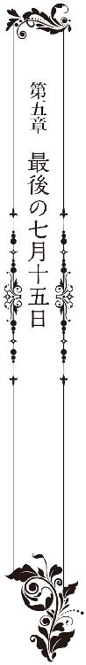
「本当にこんな寂しい所でいいんですか？ もうこの家の人たちは引っ越したって噂ですよ」
気づかわしげなタクシー運転手に、真珠は多めに料金を渡してから車を降りた。
東京を出てから三時間。三台のタクシーを乗り継いでここまで来たが、その間ずっと繋がっていた電話は墨田邸がある山に入った途端不通になった。──通話先は墨田家の固定電話。姉、永莉からかかってきた電話である。
（真珠ちゃん、どうしよう。冬斑さんが、どこにもいないの）
三時間前、電話でそう訴えてきた永莉が、そもそも姿を消した冬斑を追って墨田邸に戻っていたのが、真珠にはまず驚きだった。
聞けば、引っ越しを済ませたばかりの墨田邸は、家具などもそのまま残されており、電話も電気も今月いっぱいは使えるのだと言う。姉の体調も今はすっかりいいようで、車椅子なしで生活できるようになったと言うその声にも、以前とは違う張りがあった。
（実は、今日の夕方、凌士さんから電話があって、冬斑さん、それで出て行ってしまったの。墨田の家で会いましょうって、そんな会話が聞こえたから、気になってタクシーで来てみたんだけど......、家には誰もいないようなの）
どう説得しても、永莉はここで冬斑を待つと言って聞かず、真珠は矢も盾も堪らず、侑木の部屋を飛び出してタクシーを拾った。
凌士にとってのタイムリミットは明日である。おそらく凌士は、真珠が相手にしなかったので、脅迫の矛先を冬斑と永莉に向けることにしたのだ。
よほど警察に通報しようかと思ったが、そうすれば冬斑の罪が暴露されてしまう。しかも、この件だけは侑木にも理子にも相談できない。冬斑の罪を隠匿すると決めた真珠は、ある意味冬斑の共犯者だ。その罪に、二人を巻き込むことだけは絶対にできないからだ。
「切らないで」と訴えられたので、姉との電話は移動中もずっと繋げたままでいた。時々眠ってしまうのか会話が途切れることはあったが、真珠が話しかけている間は、永莉は落ち着いているようだった。電波が悪くなると同時に通話は切れてしまったが、スマートフォンの充電も、タクシーを降りる時には完全になくなっていた。
門扉の前に停まっている車を見つけ、気もそぞろだった真珠はほっと安堵の溜息をついた。シルバーのミニバンは、墨田家にいた頃から使っていた冬斑の車だ。きっと、永莉との通話が切れてからわずかの間に、冬斑も墨田家に到着したのだ。
門扉は半開きになっており、そこから見上げた墨田邸は、二階にある永莉の部屋からだけ煌々とした灯りが漏れていた。
「姉さん......？ 冬斑さん？ どこにいるの？」
静まり返った家に、真珠の声だけが虚しく響く。
手探りで一階の廊下の電気を点けると、たった数日前に無人になったばかりの屋敷は、家具の全てにビニールの覆いが被せられており、早くもうっすらと埃がたまっていた。
自分の家なのに、まるで別の場所にいるような薄気味悪さを感じながら、真珠はおそるおそる階段の方に歩いて行った。かなり大きな声を上げたのに、二階からことりとも音がしないのが不気味だった。
中央のらせん階段にたどり着くと、真珠が最も嫌った祖先の肖像画が、そのままの形で残されている。一階廊下の照明に照らし出された顔の群れは、さながら死者の陳列場のようで、真珠は一時動くこともできずに立ちすくんだ。
「姉さん？ 上にいるの？」
声は虚しく宙に響き、上階からはなんの反応もない。
──どういうこと......？ 姉さんはこの家から電話をしてくれてたんじゃないの......？
ますます不安を募らせながら暗い階段を上がっていくと、絵画はやがて写真になり、最後に真珠のよく知った顔になる。
微かに息をのんだ真珠は、自分を見下ろす父の顔の前で足を止めた。
まさか、無人になった家に、父の遺影が飾られているとは思ってもみなかった。
険しいけれど温かい目。高い鼻梁に、意思の強そうな唇。多分、亡くなった時より少しだけ若い頃の写真だ。その顔は、どうしてだか、まるで似ていないはずの侑木の顔を連想させる。
実際、ビジネスマンとしての優秀さ、行動力、好奇心の強さなど、侑木と父の相似点はいくらでも思いつく。けれど侑木に対する絶対的な好意とは対照的に、真珠は父に対し、常にネガティブな感情しか抱けなかった。
それは両親の年の差に対する嫌悪感と、当時の使用人たちの悪意に満ちた囁きが原因だったのかもしれない。だから、母を殺したのが父かもしれないと思った時も、それほど深い驚きはなく、ただそのことを全く覚えていなかった自分の不確かさを恐れ、怯えたのだ。
けれど今は、自分が父に抱いていた感情が正しかったかどうか判らなくなりかけている。
（多分、君のお父さんと同じことをしているんだ）
侑木が石碑の裏の護符を剥がした時、真珠にはそれが、彼が自分のためを思ってやってくれたことなのだとはっきりと判った。
父も、母と結婚する前に同じ真似をしたのだという。それは、なんのためにしたことだったのだろう。自分のことを記憶すらしていない妻に、かつての恋人を傍に置かせ、最後まで養い続けた感情の裏にはどんな葛藤があったのだろう。
死の数時間前にかけてきた電話で、父は私に、何を告げようとしてくれたのだろう。
今となっては、それは、永遠に解き明かされることのない謎だ。
不意に目の奥が熱くなった真珠は、その感情を振り切るように足を速めた。
照明が点いていない二階では、斜めに切れた光が廊下をぼんやりと照らし出している。
多分、姉の部屋の扉が開いているのだ。真珠は心音が速まるのを感じながら階段を上がっていった。
「......姉さん？」
初めて足を踏み入れる鉄扉の向こう側は、思いの外、普通の空間だった。
テーブルとソファ、クローゼット、読み書きをするための机と椅子。──棚には可愛らしい小物や人形の類が並べられており、絨毯は薄桃色で、いかにも若い女性の部屋のようだ。
息を詰めるようにして部屋に入った真珠は、少し拍子抜けした気分で、柔らかな色彩で統一された室内を見回した。あんな重々しい鉄の扉で閉ざされているくらいだから、無意識の内に牢獄のような場所を想像してしまっていたのだ。
アンティークなテーブルの上には、紅茶を飲んだと思しきカップが二つ置いてある。その内のひとつは半分ほど飲み残してあって、指で触れると、ほんのりと温かかった。
その時、背後で細い音を立てて何かが軋んだ。びくっとした真珠は、弾かれたように振り返る。そしてようやく気がついた。入ってきた扉とは反対側の壁にも扉がある。つまり、この部屋の奥にも、もうひとつ別の部屋があるのだ。
「............」
奥に続く扉は臙脂がかった木製で薄く開いた隙間からは真っ暗な闇が覗いていた。
数秒、得体の知れない不安にかられて立ちすくんだ真珠は、胸の裡に膨らんだ恐怖を懸命にのみ込んで、扉の方に歩いて行く。
「姉さん？ そっちにいるの？」
思い切って開け放った部屋は真っ暗だった。真珠がいる側の灯りだけが、かろうじて室内に置かれている物の輪郭を浮き上がらせている。
大きなクローゼット──ベッド──カーテンで閉め切られた窓。室内は静けさに包まれ、人のいる気配はない。ただ、むっと鼻をつくような嫌な匂いが漂っている。
──なに......？
眉をしかめた真珠は、手探りで壁のスイッチを探した。すぐに指先が突起に触れ、瞬いた電灯が室内を明るく照らし出す。
その刹那、頭に鉄棒を突き立てられたようなショックを受け、真珠は棒立ちになっていた。
中央にあるベッドから、上半身をのけぞらせるようにして、半裸の男性が床にずり落ちている。両腕は万歳でもするかのように床に垂れ、その喉元から胸にかけてが網目状に朱に染まっている。
真っ赤な血は白いシーツにもたっぷりと染み込んで、床に血の輪を作っていた。
悲鳴を上げて飛びずさった真珠は、壁に背を当てたまま、がくがくと震える膝を折った。
なんだろう、これ。今見ているものは、本当に現実だろうか。
男の顔には、解けかけた包帯がぶら下がっている。縫合痕が生々しい色白の顔。細く吊り上がった目──凌士だ。凌士が──死んでいる......？
上半身は裸で、下半身は昼間見たパンツのままだ。だらりと投げ出された手が、白い、血にまみれたゴムの塊のようなものを握りしめている。そこにぽっかりと空いた空洞を見つけ、真珠は驚愕に目をみはった。あれは──あれは、冬斑が被っていたマスクだ。
歯の根ががちがちと音を立て始める。悲鳴と嘔吐感が同時に込み上げ、それが喉の中で固まった。電話──救急車──警察──とにかく、とにかく誰かに電話をしないと。早く、誰かに。
カタン、と今度は最初に入った部屋から物音がした。びくっとして振り返ろうとした刹那、耳をつんざくような電子音が部屋中に鳴り響いた。その瞬間、真珠は感情の抑制を失くし、狂気に自分を明け渡して、際限ない悲鳴を上げそうになっていた。
ぎりぎりで理性を保つことができたのは、自分だけは姉や母のようにならないという、子供の頃から抱き続けた強い意志のせいかもしれない。
真珠は必死で深呼吸をし、音の在処に耳をすませた。この音は内線電話の着信音だ。墨田家では、使用人を含む全員が子機を携帯しており、それは永莉の部屋にも置かれているはずだ。
目だけで周囲を見回した真珠は、壁際の小さな棚の上にそれを見つけ、壁に背をつけたままで移動した。震える手で子機を掴み、耳に当てる。
「真珠ちゃん！ 早くそこから逃げて」
いきなり、切迫した姉の声が受話器から響いた。
「ふ、冬斑さんと凌士さんが大変なことになってしまったの。凌士さんが冬斑さんの仮面を剥ぎ取ろうとして、それで──冬斑さんが、とても怒ってしまって！」
「姉さん、どこなの？ どこにいるの？」
「山よ。十五池の柵のところ。逃げてきたの。ふ、冬斑さんが、私まで殺そうとしたから」
「な、なんで？ どうしてそういうことになるの？」
「もうおしまいだって、これ以上私を守ることができないから、一緒に死のうって。冬斑さんは、普段は大人しいけど、時々人が変わったように恐ろしくなるの。でも、時間が経てば落ち着くから、それまで、どこかに逃げていれば大丈夫なの」
やはり冬斑を信じるべきではなかった──暗い眩暈を感じながら、真珠は子機を握りしめた。
「姉さん、警察には連絡したの？」
「無駄なの。冬斑さんが外線のコードを切ってしまったから。真珠ちゃん、とにかく早くこっちに来て。私、怖い。早く来て、──」
そこで雑音が入って、通話が切れた。おそらく内線の受信範囲を超えたのだ。
子機を投げ出した真珠は、足をもつらせながら惨劇の部屋を出た。膝に力が入らず、頭の中はまだパニック状態だった。とにかく一刻も早く姉の元に行かなければならない。いや、そんなことより、冬斑はまだこの屋敷のどこかにいて、永莉を探しているのかもしれないのだ。
けれど最初の部屋を出ようとした時、この静けさにふと奇妙なものを覚えていた。まるで誰かが、今しがたまでここにいて、優雅にお茶でも飲んでいたかのような穏やかな空間。部屋に乱れた痕跡はなく、カップはまだ温かかった。一方、先ほど垣間見た凌士の亡骸は──死んで間もないという風ではなかった気がする。......
真珠は、肩にかけていた自分のバッグに目をやった。どうして今、そんなものを思い出してしまったのか。中には、侑木の部屋から一冊だけ持ち出してきた報告書が入っている。
【墨田瑠璃子の事故死について その①長野県警による捜査経緯】
何かに突き動かされるように冊子を取り出すと、真珠は震える手で最初のページを開いた。
結果的に事故扱いになったこの事件だが、長野県警捜査一課は、当初、殺人の線で捜査を進めていた。その理由は以下の三点による。
① 殆ど家中の人々に監視されていた瑠璃子が、夜半、誰にも気づかれることなく屋敷を出るのは不可能であり、第三者の助力、誘導があったとしか考えられないこと。
② 事故現場に、木にくくりつけられたロープが残されており、墨田瑠璃子の手から、同ロープの繊維が発見されたこと。
③ 家政婦の一人が、当家の次女（当時七歳）から、瑠璃子の死亡場所である十五池から、夫である墨田巌が下りてきたという証言を聞き取っていること。（ただし、この証言は、後になって次女の記憶違いということで撤回されている）
事件の翌日には夫の墨田巌が、同日夜には冬斑志信が任意で同行されている。捜査対象はこの時点で二人に絞られ、特に事件当夜、瑠璃子の監視を忘れて眠りこんでいたという冬斑の証言は、殆ど怪しいものとみなされていた。
ただし両名は完全黙秘で、当夜の行動すら積極的に語ろうとしなかった。（意地になった県警はマスコミにこの事件をリークし、当時会社役員だった墨田巌を社会的に抹殺するような暴挙に出ている。墨田巌はＡ大臣への贈賄疑惑もあり同年役員職を辞任）
風向きが変わったのは、事故現場に残されていたロープについた皮膚組織から、別の人物のＤＮＡが発見されたことによる。
しかし当該人物（当家の長女、当時十五歳）は、その時すでに強度な心身症からまともな取り調べができるような状況ではなく、また未成年者でもあったことから、証拠不十分のまま事故扱いになったものだと思われる。
殆ど息を詰めるようにしてそこまで読み切った真珠は、よろめくように数歩後退し、膝裏が触れたソファに座り込んだ。
──なに......これ......。
ロープにしろ、冬斑が疑われていたことにしろ、全てが初めて知ることばかりだ。しかも、警察が最終的に疑惑の目を向けたのは──姉さん......？
その時、背後で灼けつくような閃光が瞬いた。真珠が青ざめた顔を上げると、どこか遠くで雷鳴の音が聞こえた。
雷光が時折闇を照らす暗夜、ぬかるんだ泥道を歩く自分の足音だけが響いている。
胸が重く締めつけられ、喉に何かがつかえたように息苦しい。
いつの間にか降り出した小雨が、傘を持たない真珠の額や髪を冷たく濡らした。墨田邸の灯りはすでに闇にのみ込まれ、今は、手にした懐中電灯の光だけが夜道を淡く照らしている。
──そうだ......、あの夜も私は、この道を上がっていた。
真珠は震える顎を上げ、眼前の風景に目を向けた。恐ろしい破滅を予感しながら、あえて十五年前と同じ行動を取ることを選んだのは、今なら、あの夜に何が起きたのかを思い出せるような気がしたからだ。
あの夜──母が死んだ夜の出来事が、真珠の中に、まるで時を逆戻ししたように蘇ってくる。
昼過ぎから天候が崩れ、雷鳴が遠くで響くその日の夕、東京から不意打ちで父が帰宅した。家中が漠然とした緊張感に包まれ、神経の過敏な姉は早々に部屋に引きこもってしまった。
帰宅した父が、当時はまだ書斎ではなかった自室に呼びつけたのは冬斑である。二人は一時間以上部屋から出てこず、それが使用人たちの間に様々な憶測を呼び始めた。
（いよいよ、冬斑が解雇されるのかしら）
（やっぱり異常よ。旦那様の留守中に瑠璃子様と同じ部屋で寝起きしているなんて）
使用人たちの意味ありげな囁きが気持ちを波立たせたのか、その夜、真珠はなかなか寝つくことができなかった。ベッドの中でてんてんと寝返りを打っていた時、誰もが寝静まったはずの屋敷の中から、ギィーと金属の軋む音が聞こえたのだ。微かに。
部屋からそっと顔を覗かせた真珠は、まるで幽霊のような二つの影がらせん階段を下りていくのを見た。母と──姉だ。
懐中電灯の光に映る雨の量が多くなる。真珠は足を止め、自分を落ち着かせるように、ひとつ大きな息を吐いた。
今なら判る。侑木が、真珠を一人で姉の家に行かせなかった理由が。彼はいつから姉を疑っていたのだろう。報告書の作成日までは確認はしなかったが、少なくとも二人で二度目に十五池に行った時には、彼は姉の犯行を確信していたに違いない。
気力を振り絞るように歩き出した真珠の意識は、再び七歳のあの夜に引き戻されていった。
部屋を抜け出した真珠は、裸足のまま、二人を追ってこの道を歩き続けた。ひどい悪天候の中、小さな子供がどうして母と姉の後を追おうとしたのか。一人置いて行かれるのを寂しいと思ったのか。いや、そうではなく──
（真珠ちゃん、私、好きな人がいるの）
（真珠ちゃんが大きくなったら教えてあげる。私、絶対にその人のお嫁さんになるから）
その刹那、幼い真珠の脳裏にある人物の姿が浮かんだのだ。真珠にとってはあり得ない人物。当時は人というより怪物のようにすら思っていた人物。けれど少女の中の女の勘とでもいうのだろうか。もしや姉の想い人は冬斑ではないだろうか、姉は、その冬斑を母から奪うつもりなのではないだろうか。──そんなぞっとするような予感が、確かに頭の片隅を掠めたのである。
ぬちゃ、ぬちゃ、ぬちゃ、ぬちゃ。
「──っ」
闇の彼方からその音が聞こえてきた時、それが現実の音なのか、七歳の時に聞いた音を幻聴として感じているのか、真珠にはもう判らなくなりかけていた。
懐中電灯が、降りしきる雨越しに、黒い鉄柵を照らし出す。音はその闇の向こうから、少しずつ大きくなっていく。
不意に呼吸ができなくなり、真珠は胸をかきむしるようにしてしゃがみ込んだ。目を閉じた途端に、まるでカメラのフラッシュのような白い光が頭の中で瞬き始める。光の中に、断片的な光景が、時折、悪夢の切れ端のように挟み込まれては消えていった。雨と雷鳴──頭が灼けるほどの苦痛──生臭い泥の匂い。喉に絡む白い腕、遠ざかる意識と囁く声。
（ここで見たのは、お父さんよ）
（ここで真珠ちゃんが見たのはお父さん。お父さんがお母さんを殺したの）
のしかかり、首を締めながらそう囁くものの目には、底知れない闇がある。ぼんやりしていたその顔に輪郭が生まれ、それはみるみる姉の顔貌に変わっていく──
「きゃああああっ」
恐怖にかられて叫び声を上げた途端、現実の雷鳴が周囲を明るく照らし出した。はっと顔を上げると、柵の向こうに白い人影が立っている。
軋んだ音を立てて柵が開き、ぬちゃ、ぬちゃ、と泥を踏みにじる音が近づいてきた。
ああ、この音だ！ リズムも間合いも、夢で聞いた音そのものの響き！
これは、女の素足で、ぬかるんだ泥を優雅に歩いている音なのだ。
歯の根を鳴らす真珠の前で足を止めた永莉は、膝を折ってしゃがみ込んだ。長い髪が地面に垂れ、白い顔が覗き込むようにして真珠を見る。
「知ってる？ 恐怖っていうのはね、それ以上の恐怖を知った時、ようやく克服することができるのよ」
淡々とした声に、背筋が震え、血の気が引いた。その顔は永莉だ、声も永莉だ。でも、この違和感はなんだろう。目の前で笑っているこの女は何者だろう。
「私のことを思い出した？ ──おいで、今夜はようやく真珠ちゃんの番だよ」
「──真珠！ どこにいるんだ！」
自分の声だけが、空洞のような家に虚しく響く。侑木は焦燥にかられながら、二階に続く階段を駆け上がった。
「真珠！」
午後十一時四十九分。二時間と少しで侑木が墨田邸にたどり着いたのは、東京から長野のある地点までヘリコプターを使ったからだ。
ほぼ同じ時刻に東京を出た警備会社の人間は、国道の渋滞につかまっている。長野県内で手配した人員は、どういった手違いかまだ墨田邸にたどり着けてさえいないようだった。
「社長、一階には誰もいません」
東京から同行した田島の声が、階下から響いた。ぱらぱらと降る雨が、時折屋根を勢いよく叩き、雷鳴が夜陰を割いて鳴り響く。
「一階はいい、こっちに上がってこい！」
一階の大半に灯りが点いていた墨田邸には、人のいる気配が全くなかった。門扉の前には自宅から消えていた冬斑の車。玄関の鍵は開いていたが、誰の靴もそこにはない。
二階に、電気の点いている部屋はひとつしかなかった。そこに飛び込んだ侑木は、驚愕に顔を強張らせて立ちすくんだ。ローテーブルが倒れ、床にカップが転がっている。その横で、まるでもがき苦しむように指を折り曲げた男が、倒れ伏していたからだ。
「──冬斑さん」
侑木が駆け寄って抱え起こすと、顔の右側面に微かな火傷痕を残した男は、端整な顔を苦悶に歪めた。顔色は蒼白で呼吸が浅い。何か、毒性の強い薬物を飲んだのだとすぐに判る。
壁収納庫の扉が開け放されており、冬斑の足は、つま先がまだその中に引っかかっていた。彼は直前まで、その中に閉じ込められていたのだろう。
「しっかり、すぐに救急車を呼びます」
そこに田島が駆け込んできた。慄くように足を止めた田島に、侑木は奥の部屋を指し示した。
「あっちの部屋を見てくれ、救急には俺が連絡する」
用意していた衛星電話を取り出した時、その手を強い力で掴まれた。
「わ......私のことより、......十五池に」
年齢の割に若く見える冬斑の素顔に驚きはなかった。警察で逸見凌士を暴行した人物の映像を見た時から、侑木にはそれが誰だか判っていた。この憐れな男が長年擬態を演じ続けてきた理由も、ある程度は理解しているつもりでいる。
「うわあああっ、しゃっ、社長、こっちで人が死んでます！」
魂消るような声がして、奥の部屋から田島が転がり出てきた。一瞬頭の中が白くなった侑木の腕を、冬斑が強く握りしめる。
「それは逸見の息子です。そ、そんなものは放っておけばいい。それより早く......十五池に！」
ようやくその意味を解した侑木は、目をみはるようにして苦悶に喘ぐ冬斑の顔を見つめた。
「真珠が......、......、まさか、そこにいるんですか」
「あ......あの子は、とても聡い娘です。な、亡くなられた紅玉様と、巌様の気質を誰より強く受け継いでいる。......だから、あえて行ってしまわれた」
「なんのために！ そこに永莉さんもいるというんじゃないですよね！」
揺さぶられた冬斑は、乾いた唇を開いたが、そこからはもう苦しげな息が漏れるだけだ。
「え......、え、永莉は」
呼吸に交じる糸のような声に気づき、侑木は彼の口元に耳を寄せた。
「だ......、旦那様の娘であると同時に、私にとっても、たった一人の、娘です。わ、私たちは、十五年前、......その娘を、たとえ法に逆らってでも、守ることに、決めた」
「......知っています。誰かが協力して証拠を消し去りでもしないと、とてもあれを事故と言い張ることはできなかったでしょう」
だからこそ墨田巌と冬斑は、警察の調べに黙秘を貫いたのだ。何故冬斑が、その罪に加担したのかだけが判らなかったが、それも今日届いた報告書が教えてくれた。
「......冬斑さん、永莉さんは、あなたが父親だということを」
「し、知っている。永莉は......、でも──......、と......、は、知ら、ない」
意味を測りかねた侑木が眉を寄せた時、すでに冬斑はぐったりとなっていた。呼吸と脈を素早く確かめると、侑木は腰を抜かしている田島に衛星電話を投げ渡した。
「警察と救急に連絡して、状況を伝えろ。それから応援が来たら、十五池に人を向かわせるように言ってくれ」
「じゅ、十五池って？」
それには答えず、侑木は部屋を飛び出した。
「永莉を産んだ人はね、この家で生まれ育った使用人だったのよ」
真珠は振り返ろうとした。その途端、背中に鋭い痛みが走る。
「......いっ」
「振り返らないで。そのまま真っすぐ歩くのよ。そう、いい子ね。そのまま、真っすぐ」
胸で大きく息をしてから、真珠は再び歩き出した。永莉が持っているぎらぎらとした刃の広いナイフは、真珠には、恐怖というより現実感のない玩具のようにしか思えなかった。
しかし、現実に何度も背中に押し当てられた切っ先は鋭く、今も焼けつくような痛みをあちこちに残している。降りしきる小雨は、真珠の髪も服もじっとりと濡らして、背中を伝う液体が雨なのか血液なのか、もはや判別することすらできなかった。
ただ、背後にいる何かが姉でないことだけは判った。いや、人の形だけをいえば紛れもなく永莉だ。けれど違う。自分のことを「永莉」と呼ぶ喋り方もそうだが、暗く沈んで抑揚を欠いた声やためらいもなくナイフを突き立てる無慈悲さ──、なにより醸し出す雰囲気が、とても真珠の知っている姉だとは思えないのだ。
そうしてこの永莉でない誰かに、真珠はかつて、会ったことがあるような気がするのだ。
十五年前、永莉は母と二人で十五池に向かい、そして一人で下りてきた。その夜の姉は、人というより物の怪であり、鬼の化身のようでもあった。姉は、真珠を泥水の中に押し倒すと、首を締めたり緩めたりしながら、苦悶と恐怖で息さえできずにもがく真珠に、言い含めるようにして囁いたのだ。何度も──何度も。意識が薄れて途切れるまで。
（真珠ちゃんが見たのは、お父さんよ）
（真珠ちゃんがここで見たのはお父さんよ）
真珠は一度気を失って目覚め、記憶も意識も朦朧としたまま、見えない恐怖に追い立てられるように、やみくもに坂道を駆け下りた。そして、飛び出してきた使用人に、まるでそれが課せられた義務のように訴えたのだ。十五池の柵で、父を見たと。
そうだ、あの夜の姉は、確かに今夜の姉だった。冷酷で、冷静で、奇妙なほどその声には抑揚がなく、動物園で見た山羊か駱駝のような目をしていた。
「永莉のお祖母さんはね、真珠ちゃんのお祖父さんの愛人だったの」
永莉の声が、束の間過去を彷徨う真珠を現実に引き戻した。
「ううん、愛人じゃなくて借り腹よ。納屋に閉じ込められて、子供ができるまで嬲られて犯された。それは真珠ちゃんのお祖母さん──紅玉さんも承知していたことよ。どうしてそんな残酷な真似ができたんだと思う？」
真珠は黙って唾だけを飲んだ。それは、祖父が無理矢理子供を産ませたと言う十和の話に違いない。今、永莉は十和のことを「お祖母さん」と言った。つまり──つまり、十和の娘である常代が、永莉を産んだ本当の母親......？
「ねぇ、どうしてだと思う？」
背中に鋭い痛みが掠めたので、真珠は急いで言葉を探した。
「......じゅ、十五池の呪いが、自分の子にかかるのを避けるため？」
「そうじゃない！ そうじゃないのよ。嫉妬なのよ、ドロドロした、薄汚い、報復なのよ！」
闇が震えるほどの金切り声に、恐怖のあまり足がすくんだ。
「宇月をけしかけたのは紅玉なのよ！ 永莉のお祖母さんが、紅玉の好きだった男と契り合ってしまったから！ 冬斑よ！ あの卑怯な男はそれですっかり怖くなって、生まれ故郷の凡庸な女と、見合い結婚してしまったのよ！」
半ばパニックになりながら、真珠は必死で、その意味を考えた。冬斑とは、むろん真珠の知っている冬斑のことではないだろう。時期からいって今は亡き彼の父親に違いない。
つまり、紅玉と十和は、冬斑の父を巡るライバル関係にあったのだ。まるで、──永莉と瑠璃子のように。
「絶望の中、お祖母さんは紅玉を呪い、何度も幼いお母さんを道連れに死のうとした。だからお母さんの記憶の中のお祖母さんは、いつも自分を殺そうとしているの。こんな風に」
背後から冷たい手に首を掴まれ、真珠は小さな悲鳴を上げる。
その瞬間、雷鳴が周囲を真昼のように照らし出し、真珠は自分が、すでに十五池の前に立っていることを知った。
真っ黒な湖面が小雨に打たれてぬらぬらと揺れている。やや傾斜になった足元は濡れた草で滑りそうで、思わず両足に力がこもる。いずれにしても、これ以上先には進めない。
「でもね、そんな時、助けに来てくれたのよ」
恐怖で動けない真珠の耳元に、永莉は口を寄せて囁いた。
──誰、が......？
「とわが」
どんっと、強い衝撃があった。足が浮き、膝が折れ、泳いだ手が空を掴む。次の瞬間、真珠は暗い水の中に沈み込んでいた。
それは水の中というより、どろどろした真っ黒なタールの中に落ちてしまったような感覚だった。水の冷たさに身体が震え、一瞬パニックになった真珠は、やみくもに手足を動かした。
何も見えない。手足にぬるぬるしたものが絡み、口の中に、泥臭い水や草が入り込む。もがけばもがくほどに身体は沈み、まるで泥沼に沈んでいくようだ。
その時、足が何かを蹴り、手が岩肌のようなものに触れた。その感触を伝ってようやく水面から顔を出した真珠は、喘ぐように息をし、岩に手をかけようとした。が、その岩肌はぬるぬると滑るばかりで、引っかけた爪すら弾かれる。真珠は再び水の中に沈み込んだ。
「──っ、......っ、」
再びあがくように顔を出した水面に、上からロープが投げられた。必死にそれにしがみついた時、頭上から永莉の声がした。
「助かりたい？ もちろんそうよね。すぐそばに岸があるんだもの。でも、その希望さえ打ち砕かれてしまったらどう思う？」
ぬるぬると滑るロープを懸命に掴みながら、真珠は雨の降る闇に目を凝らした。永莉がこちらを見下ろしている。その手にはナイフよりもさらに大きな刃が、雷鳴を受けて煌めいている。
──お、斧......？
雨に濡れてぎらつく台形の刃は、それを持つ永莉の顔より大きく見えた。恐ろしく現実味のない、ひどく重量のありそうなものを、永莉は軽々と振り上げる。
「百五十年前のとわがそうだった。泳ぎが得意だった彼女は、沈んだ舟から這い出て、必死に岸まで泳いだのよ。それを、──」
瞬間、煌めく刃が雨を弾いて振り下ろされるのを察し、真珠は反射的にロープから手を離した。一時水中に沈み込んだ真珠の頭上で、硬い物が激しくぶつかり合う音がする。
苦しさにもがいた真珠は、再び水上に顔を出した。まだ浮いているロープにすがりついたのは、無我の生存欲求でしかない。しかし意に反してロープは力を失っておらず、すがりつく真珠をしっかりと支えてくれている。
──が、張りつめたロープが闇の向こうに伸びているのを見た時、真珠はようやく、あの一文の恐ろしい意味を理解したのだった。
事故現場に、木にくくりつけられたロープが残されており、墨田瑠璃子の手から、同ロープの繊維が発見されたこと。
つまり十五年前、姉は母にも、今と同じ真似をしたのだ。もう、それは恋情や嫉妬の域を超えている。そんな残酷なことが、仮にも母親相手にできるはずがない。
「真珠ちゃん、私が三歳の時よ。この池の前でとわが私の中に入ってきた」
──なに？ ......何を言っているの？
「とわは、私のお祖母さんの中にも、お母さんの中にも入ってきた。それだけじゃなく、これまで色んな人の中に入って生きてきた。とわの望みは伊織ともう一度会うことよ。それが叶う日まで、私たちがとわの呪いを叶え続けないといけないの」
「......、と、とわの、呪い？」
「私のお祖母さんが石碑の裏に書き残した。あれはお祖母さんの言葉じゃない。とわが最後に言い残した言葉よ！」
雷鳴が轟き、振り上げられた刃が今度こそロープめがけて振り下ろされる。しかしその刹那、「待ってくれ！」という侑木の声が、雨音を割いて闇夜に響いた。
「待ってくれ......。いや、少しの間でいい、僕と、話をしてみないか」
侑木の声は、荒い呼吸で切れ切れに乱れ、彼がここまで、全速力でやってきたことが窺い知れた。彼が手にしているのか、強い懐中電灯の光が、雨に濡れた永莉を映し出している。
「話？ 私の方は、あなたになんの用もないんだけど」
一方で永莉の声は淡々としていた。彼女は斧を構えたまま、その顔だけを侑木の声がする方に向けている。ざくっと、草を踏みしめる音がした。
「君は誰だい？ 判ってる、永莉さんじゃない。永莉さんになりすましている別の誰かだ。君はずっと永莉さんの下にいて、ある時から永莉さんを支配する人格になった。──違うかい？」
ようやく侑木がこの場にいることが、必死にロープを掴む真珠に、実感として判ってきた。彼は何故来たのだろう。別れ際、あれだけひどく拒絶したのに、何故。なんのために。
「私はとわよ」
陰々とした永莉の声が、闇に響いた。
「みんな精神の病気で片づけようとした。二重人格、解離性同一障害、どんな病名がつこうとそうでないことは私たちだけが知っている。私はとわ。私も母も祖母も、全員とわと一体になって生きてきた」
「つまり、君のお母さんもお祖母さんも、とわの生まれ変わりということになるのかな」
「生まれ変わり？ あり得ない。だってとわは、まだこの池の底にいるんですもの」
真珠は全身が総毛立つのを感じた。ざくっと、再び草を踏みしめる音がする。
「なるほど、ではこの池にいるとわの一部が、君の中で生きているということなんだね」
「そう。そして十五年ごとに目を覚ますの。お祖母ちゃんが死んだらお母さんの中で、お母さんが死んだら私の中で」
「......じゃあ本体は、池の底で何をしているんだろう」
「待ってるの。ずっと待ってる」
「何を」
「伊織が来るのを」
「それは、とわの恋人だった男だね」
「とわを裏切り、自分の成功を選んだ男よ！」
いきなり激高した声は呪詛に満ち、きりきりという歯ぎしりが頭上から聞こえてくる。
「とわが本当に許せないのは伊織よッ。伊織は最初から知っていたの。兄嫁が嫉妬にかられてとわを陰陽師に売ったことを。伊織はね、兄嫁とも関係を持っていたのよ！」
「──待て！」
侑木の声と、真珠が掴んでいるロープが激しくたわんだのとが同時だった。
「待て、......待ってくれ。なるほど、今の話を聞いてひとつ判ったことがある。聞いてくれ。少し長くなるが、大切な話だ」
間一髪で、ロープの切断が阻止されたのだと判った。なだめるように続く侑木の声に、最初にはなかった焦燥が滲んでいる。
「聞いてくれ──白状すれば五年前、僕は財産目当てに、君たちのお父さんに近づいた。お父さんの弱点を掴もうと、過去や性格の何もかもを調べ上げ、事細かに観察した。けれどその時に不思議な違和感に気がついたんだ。僕自身が、逆にお父さんに観察されていることに」
冷たい水の中で、真珠ははっと息をのむ。
「その時はまだ、僕はお父さんの意図を知らなかった。お父さんのテストに自分が合格したかどうかも判らなかった。けれど、多分合格していた。その時お父さんは僕に、非常に重要なことを二つ言ったんだ。五年待て。待てば、私の財産はいずれ真珠のものになる」
真珠は懸命に顔を上げ、懐中電灯の光源に目を向けた。侑木の顔が、今とても見たかった。
「その時、僕と真珠の運命は、少なくとも五年先まで繋がった。五年後のこの年に、しかも今日、七月十五日より前に死ぬのは、きっとお父さんにとっては長い計画の中のひとつだったんだろう。お父さんは自殺ではなかった。けれど弱った心臓や体調をいい意味でも悪い意味でもコントロールして、一番いいタイミングで死を選んだはずなんだ」
──お父さんが......、死を、選んだ？
「ではお父さんは、五年後に僕が真珠と結婚し、首尾よく財産を奪うことを期待していたんだろうか。もちろん否だ。君のお父さんは財産と謎を餌に、好奇心と欲にかられた僕を五年先まで釣り上げた。五年後──つまり、瑠璃子さんが亡くなってから十五年後の今年。瑠璃子さんを葬ったものが再び出てきて真珠の命を奪おうとした時、僕を身代わりにするためにだ」
雨が激しさを増し、呆然と光を見つめる真珠の顔に降り注ぐ。
「僕はお父さんのテストに合格した。判るだろう？ 僕こそが呪いを終わらせることができる唯一の人間だからだ。僕が、御園生伊織の生まれ変わりだからだ」
──何を......何を言っているの？
泥のような水中で揺られながら、真珠は愕然と顔を上げた。
侑木は頭がどうかしてしまったのだろうか。あの現実主義者の彼が、一体何がしたくてこんな馬鹿げたことを言うのだろう。
「あなたが......、伊織の生まれ変わり？」
「そうだ。君にはそうは見えないかな」
「見えないどころか、馬鹿にされているとしか思えない。どうせ私のことを頭がおかしい女だと思っているんでしょう。そういえばいたわ。あなたのような精神科医が」
「さっき君の中に、とわの一部がいると言ったね」
辛抱強く、侑木は続けた。
「信じるよ。だからこそ君は当事者しか知らないことまで知っていたんだ。十五池の儀式の発端はとわに嫉妬した兄嫁の私怨だった。──当時を知る君にしか判らないことじゃないか」
草を踏みしめる音が聞こえた。侑木が距離を詰めたのか、光の輪が最初より近くなる。
「だから僕も、伊織にしか判らないことを告白しよう。長子が全てを相続する時代だ。三男坊に生まれた伊織は、才覚と容姿に恵まれながら何ひとつ父から譲られない不遇と卑屈さの中で成長した。彼は自棄と野心から沢山の女性と関係を持ったが、そのいずれも、本当の意味で彼に何も与えはしなかった。──そんな彼の前に、とわが現れたんだ」
「......やめて」
「伊織にとって、奉公人との恋はマイナスでしかなかったはずだ。けれど彼はその恋を成就させる道を選んだ。判ったからだ。彼の人生を照らす光が何なのかが。それは奇跡のように得難く尊い宝物だ。失えば、二度と手に入るかどうか判らない」
「いい加減なことを言わないで！」
金切り声が、侑木の声を遮った。
「恋？ 光？ 何言ってるの？ 結局伊織はとわを裏切って、裕福な家の娘と結婚したのよ」
「とわを助けるためだった」
逆に反論を遮るように、侑木の声が畳みかけた。
「婿入りを条件に、十五池の儀式は取りやめになるはずだった。とわは生贄にならずに済むはずだった。けれど、約束は果たされなかった。知らせを聞いて伊織が戻ってきた時、とわはもう、水の底に沈んでいたんだ」
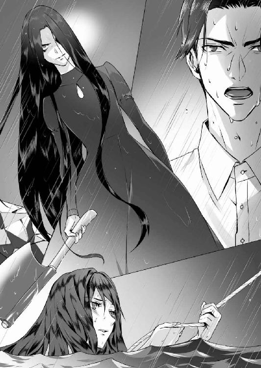
「嘘よ！ 嘘よ！ 嘘よ！」
ガン、ガン、ガンと、斧が岩を叩く音が響き渡る。しかしその音に交じって、人の声のようなものが下の方から聞こえてきた。
「社長！」
「どこにいるんですか！ 返事をしてください」
真珠ははっと息をのんだ。侑木は、何も一人でここに来たわけではないのだ。助けは確実に近づいているし、彼は話をしながらそれを待っていたに違いない。しかしそれは、同時に永莉の興奮を悪い意味で冷ましてしまった。
「なるほどね。......そういうこと。つまり全部、時間稼ぎのでまかせだったのね」
「そうじゃない、──よせ、その斧を捨てるんだ！」
「動かないで！ 一歩でも近づいたら、このロープを断ち切るわよ！」
その瞬間、目を灼くほどの白い光が瞬いて、ドーンと山鳴りのような音が響き渡った。
何が起きたか判らない真珠は、ぎゅっと目を閉じ、死に物狂いでロープにしがみついていた。すぐ近くで、ゴゴゴ......と、地鳴りにも似た不吉な音がする。めきめきと大木が折れる音がして、周囲が不意に明るくなる。
薄目を開けた真珠の視界に、燃え盛る木と、焔に照らされた侑木と永莉が飛び込んできた。
侑木は白いシャツを着て、髪も服も雨で濡れている。その二メートルほど前に立つ永莉は、同じようにびしょ濡れになりながら、ぎらぎらと輝く斧を振りかざしていた。
侑木の顔色は強いショックを受けたのがありありと判るもので、それは、近距離に雷が落ちたことが原因だと思われた。片や永莉は薄笑いすら浮かべている。
「土砂崩れだ！」「危ない、もうそっちの道は通れないぞ！」
池の下の方からそんな声が飛んでくる。永莉が口角を上げて笑うのが判った。
「きっととわが怒っているのよ。あなたがいつまでもこんな場所に突っ立っているから。伊織さん。あなたが本当にそうなら、早くとわのところに行くべきだわ。十五池の水底に」
「斧を捨てるんだ」
侑木は言った。「落電の危険がある。──棄てるんだ。本当に死んでしまうぞ」
「あなたがとわのところに行くのを見届けたらね。この距離だと真珠ちゃんも感電してしまうのかしら。それを待つのも悪くないわ」
間髪入れずに、侑木がシャツのボタンに手をかける。
「侑木さん、やめて！」
水の中で、初めて真珠は声を上げた。
「真珠、僕に君を見送る役だけは課さないでくれ。この池に初めて来た時から思っていたんだ。そんな状況だけは、絶対にごめんだ」
「っ、だ、だからって、私にそうしろと言うんですか。嫌です、そんなの絶対に嫌！」
「真珠、僕は間違っていた」
降りしきる雨が焔をのみ込み、白い煙が立ち上る。再び闇が侑木の姿を覆い隠した。
「僕が成功し続けることが、君を救う唯一の方法だと思っていた。僕の独りよがりのヒロイズムで、君はそれを判ってくれるものだと勝手に思い込んでいたんだ。──伊織と、同じだ」
──侑木さん......。
「取り返しのつかない行き違いを、僕は再びするところだった。でも、今夜は間に合ったんだと信じたい」
「侑木さん、だめ！」
真珠が叫び、彼がシャツを投げ捨てたと同時に、複数の光の筋が周囲を眩しく照らし出した。
「こっちだ、こっちに人がいるぞ！」
表情を変えた永莉が、矢の速さで手にした斧を振り上げる。その永莉に、身体を反転させた侑木が飛びついた。金属のはじける音と鈍い音。複数の足音と光が入り乱れる中で、二人の姿が真珠の視界からかき消える。次の瞬間、真珠のすぐ近くで、大きな水音が響き渡った。
「──侑木さん！」
ロープにしがみついたまま、真珠は波立つ水面に向けて声を上げた。
「人が落ちた！」
「ここに、一人誰かいるぞ！」
騒然とした雰囲気の中、真珠は渾身の力でロープを握って、ぬるついた岩を這い上がった。途中で誰かに腕を掴まれ、陸地に引き上げられたと同時に、それまで掴んでいたロープを池に投げ込む。
池の周囲には、五、六人の人が集まっていた。スーツ姿の男もいれば、警察の服装をした者もいる。懐中電灯がよってたかって水面を照らし、消えてしまった二人を探している。
「侑木さん！」
身を乗り出した真珠の腕を、地元の警官と思しき男が背後から掴んだ。
「危ない、この池は落っこちたら最後、二度と上がってこられないんですよ！」
そんなこと、言われなくても判っている。その蟻地獄のような池の中に、今、侑木と姉がいるのだ。心を別のものに奪われても、真珠にとってはたった一人の姉が──
「ボートはないのか！」「ありません！」「至急、救急隊をこっちに呼べ！」
乱れた光は、揺れ動く水面と雨だけを照射している。投げたロープは水に沈み、なんの反応も返されない。二人が自力で水面から顔を出さない以上、どうすることもできないのは明らかで、仮に出てきたとしても、ロープが届くところにまでたどり着けなければおしまいだ。
この状況で、誰も、二人を助けることはできない。
──侑木さん、姉さん......。
唇が震え、涙が溢れた。
今なら判る。最後に庭を散歩した時の姉は、本当の姉だった。だからこそ、冬斑は二人で出歩くことを許可してくれたのだし、姉もこう警告してくれたのだ。
（侑木さんを離してはだめ。あの人は、真珠ちゃんを助けてくれる人よ）
「姉さん、──侑木さん！」
永莉の予言した通り、侑木は真珠を助けてくれた。今夜彼が語ったことは、全て時間稼ぎの抗弁だろうが、それでも彼は、真珠にかけられた呪いを身代わりになって受けてくれた。
護符を剥いだ時、彼は真珠の運命を引き受けてくれたのだ。いや──いや、いや、本当にそうだろうか。
真珠は歯を食いしばり、雨に濡れた彼岸花を握りしめた。
呪いなんて、そもそも本当にあったのだろうか。全てに理由があり、因縁があり、今はその、必然的な結末を迎えているだけではないだろうか。
自分の腕を掴む男の手を渾身の力で払いのける。その手でロープを握りしめると、真珠は、地面を蹴るようにして暗い水面に飛び込んだ。
背後から巻きついた永莉の腕が、獰猛な力で首を絞めつけてくる。
沈んでいく水中でその腕と格闘しながら、侑木は懸命に両足で水を蹴った。しかし、激痛の走る右足だけは思うように動かせない。斧で切りつけられた時に筋をやられたのか、どうにもならないままに水底に引きずり込まれ、互いにもがきながらさらに深みに落ちていく。
──だめだ。永莉さんの息が切れるのを待つしかない。......
侑木は抵抗するのをやめ、水底に沈んでいくままになった。頭上では光が忙しなくちらついている。それほど深くはないはずだ。大丈夫だ。──まだ、大丈夫。
もやもや蠢く藻が手や足に触れ始める。その時、喉を締める腕の力が不意に緩み、膠のように密着していた永莉の身体がゆらゆらと離れていった。脳が酸欠を起こし、ついに意識を失ったのだ。肺活量に差がある侑木にしても、あと一分も持ちそうもない。
水中で身体を反転させた侑木は、まるで花のようにたゆたう白い腕を掴み取ろうとした。その刹那、二本の腕が、確かな意思を持って侑木の眼前に伸びてきた。
「──っ」
視界の利かないはずの闇の中で、青白い顔をして髪を振り乱した女の青白い顔が、侑木を正面から見つめている。闇よりも暗い眼窩と地獄の門のように大きく開いた口。それは、永莉の顔とは似ても似つかない怪物の顔だった。
恐怖に目を見開き、声にならない悲鳴を上げた侑木は、残していた全ての息を吐き出した。
「──、──っ、......っ」
頭の中が熱くなり、キイーンという耳鳴りが聞こえてくる。やみくもに頭上を目指そうと水をかいた時に気がついた。動かない右脚にひどく重たいものがぶら下がっている。
──っ、嘘だろう？
右脚に、女の髪と白い腕が絡みついている。それはなお侑木を深みに引き入れようと強い力で、底へ、底へと引っ張っていく。
恐怖で総毛立ちながら、それでも必死に女を振りほどこうとした侑木は、苦悶の中で、もうこの腕は何をしても離れないのだと理解した。
信じられないが、呪いは本当にあったのだ──時間稼ぎの作り話が真実になったのか、それとも本当に真実だったのか、「とわ」が「伊織」を連れて行こうとしている。
──......もう無理だ......、さすがにもう助からない。
これがとわの望みなのか。伊織を地獄へ連れて行くことが。
けれど伊織はどうだったのか。愛する人が沈んでいくのをただ見守るしかなかった伊織が、もし生まれ変わって、今の自分の立場に置かれていたらどうだろう。ただ無為に、女と共に地獄へ落ちていくだろうか。
最後の力を振り絞って身をねじると、侑木は女の手を強く掴んだ。引き離すのではない、共に浮上するためだ。もうその行動に説明のつく理由はない。
その瞬間、それまで沈む一方だった身体が、錘が取れたように軽くなった。
何かが耳元で囁いた気がしたが、それに気を留める余裕はなかった。薄皮を剥がすように、意識が遠のいていく中、ゆらめいて浮き上がる女の身体を殆ど無我夢中で抱きかかえると、侑木は死にもの狂いで水面を目指した。
（──あなたを、許すわ......）
「侑木さん！ 侑木さん、目を覚まして！」
──ここは......どこだ？
俺は死んだのか？ 生きているのか？ 今の声は──誰のものだ......？
朦朧とする意識の中、不意に喉の奥に生ぬるい塊が込み上げる。咳き込んでその塊を吐き出した時、周囲の音がいきなり耳に飛び込んできた。
「──こっちは蘇生しました！ もう大丈夫だ」
「社長、驚かせないでください。こ、ここで社長に死なれたら、会社はどうなるんですか！」
どうもなりはしない。また、次の社長がシカゴから送られて来るだけで。
救急車とパトカーのサイレンがけたたましく鳴り響いている。池の周囲で蠢く光は、眼下の墨田邸まで続いているようだ。
いつの間にか雨はやんでいた。切れた雲の合間では無数の星が煌めいている。
「......侑木さん......」
気づけば、その星よりもなお美しいきらめきを双眸にためて、真珠が侑木を見下ろしていた。
「社長、墨田が社長を助けたんですよ。彼女が社長を見つけて引っ張ってきたんです」
──真珠が......？
にわかに何を言われているか判らなかった侑木は、興奮する田島を尻目に、指で真珠の頬に触れ、濡れた頭を抱き寄せた。
もう大丈夫だ。そう伝えるつもりだったが、まだ思うように声が出ない。けれど真珠の目を覗き込んだ時、もうその言葉は彼女には必要ないのだと判った。
美しい目は強い輝きと生気を帯びて、涙を浮かべながらも力強く微笑んでいる。
「もう、大丈夫......。もう、私は大丈夫です」
囁くような声で真珠がそう言った時、救急隊がやってきて、侑木の身体を抱え上げた。
──理子の言う通りだ。今夜真珠は、自分との闘いに勝ったんだ。
長かった夜がようやく明けていくのを感じながら、侑木は深い眠りに落ちていった。
信州の訳あり旧華族が、一人娘の婿を探していると聞いたのは、私が四十六歳の夏である。
友人の紹介だった。彼は、私の若い頃からの探偵趣味をよく知っていて、また頑なに独身主義を貫く私に、おせっかいにも嫁探しを買って出てくれたのである。
「噂によると、なんでもその家は呪われているらしい。代々早死にで女しか生まれない。その都度婿探しをするそうなんだが、条件が少々変わっている。病歴がなく長寿の家系。しかも今回はそれに借財返済というおまけがついた。大借金の代わりに娘を売りますという次第だ」
彼は笑い話として私に話をしてくれたのだが、「呪われた家」というのに私は大いに興味を持った。当時、会社の業績は右肩上がり。不動産を転がすだけで何億と入ってくる時代だ。仕事ばかりだった私の人生に、一時の享楽と傲慢が顔を覗かせたのかもしれない。
その年の秋には、私は瑠璃子と会うことになった。まだ十七歳。私の娘のような年頃だ。さすがに配偶者にするには若すぎて、ひやかしのつもりだったというのが正直なところである。
実は私には、十代の頃、大恋愛の末に子供までもうけた女性がいる。とはいえ、子供はこの世に誕生していない。当時の私は貧しさ故に野心家で、子供を持つのは早計にすぎると考えていたからだ。彼女は病院に行ってくれたが、ほどなくして私の前から消えてしまった。
それから様々な女性と軽薄な恋に落ちたが、成婚までには至らなかった。若き日に失った人が、二度と得難い存在だったと気づいたのは年をとってからだ。その頃には、もう私は誰とも人生を分かつ気はなくなっており、瑠璃子との見合いも遊びの延長のようなものだった。
真珠。君は知らないだろうが、当時の母さんは──瑠璃子は、身体こそ弱いがよく笑う優しい人だった。君と同じように頭もよく、勉強熱心な人でもあった。
彼女の家の借金は、当時の私にはさほどの額ではなく、私は全額援助をする代わりに、彼女に取引を持ちかけた。私が知りたかったのは巷で噂になっているこの家の「呪い」の正体だ。女系、短命、奇病──耳に入った噂はいくつかあったが、それが本当の話なのかどうか、自分の目で確かめてみたかったのだ。
彼女は私の好奇心を満たすことを渋々ながらも了解してくれた。私は週末ごとに御園生家を訪問して古文書を読みあさり、彼女は私に、祖父母から聞き取った話などを聞かせてくれた。
つまるところこの家の「呪い」とは、江戸時代に行われた「十五池の儀式」を心理的な発端とし、それに十五池の構造的な危険、そしてある種の遺伝性の病気が重なったものである。
池が危険なのは形状や保存状態の問題だし、女系・短命というのは遺伝の問題だし、さらに言えばこの家の人たちがなかなか語ろうとしなかった精神の病に関しても、ある最新の学説から、私は原因について思い当たるところがあったのである。
しかし瑠璃子は、私の説明をなかなか受け入れようとしなかった。というよりこの家の人たちは、まるでそれが当然の摂理のように「呪い」の存在を信じており、何かしらそこに後ろ暗い──まるで逃亡中の犯罪者のような罪悪感を抱え込んでいたのである。
彼らの思い込みの根深さは、かかりつけ医師の治療方針にすら強い影響を与えており、私はこの最悪の環境は、当時、家に六名ほどいた使用人たちの、悪しき教育の産物だと結論付けた。
彼らは、全員が明治以前から続く使用人の子孫であり、その迷信深さ、頑迷さときたら、とても私の手におえるものではない。そのような輩に育てられれば、どんな全うな人間でも病的に神経質になってしまうのではないかと思ったのだ。
しかし、この家の人たちが抱えている問題は、それだけでもないような気がした。ある日、瑠璃子に十五池を案内させた時である。慰霊碑の裏に奇妙な護符を見つけた私は、怯える彼女を励ます意味もあってそれを剥ぎ取ってしまった。書かれてある文字を読んだ瑠璃子はみるみる蒼白になり、そのいたずら書き（当時の私の主観によれば）が誰によって成されたのか、頑なに語ろうとしなかった。加えて言えば、当主夫婦と養子の紘一君に至るまで全く同じ反応で、紘一君などは、それを機に御園生家と縁を切ってしまうほどの怯えようだった。
紘一君に関してここで補足しておけば、彼は御園生家の養子でありながら、義妹の瑠璃子に恋慕していたという過去がある。──つまり紘一君は、最初から私に深い敵愾心と憎しみを抱いており、瑠璃子の結婚を前に家を出たというのも無理からぬ話だったのである。
いずれにせよ、手詰まりになった感のある私の好奇心だが、一方で私と瑠璃子は、すっかり打ち解け合ってしまった。彼女は「呪い」の代わりに、自分の趣味や読んだ本の話をとりとめもなくするようになり、私はそれを、時が経つのも忘れて微笑ましく聞いていた。
いつのまにか私は、彼女を、私自身が産むことを許さなかった我が子のように思っていたのかもしれない。しかし、そんな風にして数ヵ月が過ぎた後、思わぬ事態が私たちを見舞った。
瑠璃子が、妊娠したのである。
ここからの話を、君にどう伝えるべきか、それが正しいことなのか私にはよく判らない。
彼女の宿した命が私と無関係であることは、私と瑠璃子だけが知っていたが、もちろん周囲はそうは思わず、彼女もまた本当の相手を誰にも言わずに黙していた。
お腹の子の父親については、私には思い当たるところがあった。宇月の世話係だった冬斑志信である。当時の彼は大変な美青年で、女性に関してはいかにも軽薄な振る舞いをしていたが、その本質は真面目で思慮深く、しかも瑠璃子をひたむきに思うが故に、あえて自堕落な態度を取っていることを、私は早くから見抜いていた。
明治や大正の頃と違い、身分違いの恋など存在しない。私は、本当のことを打ち明けてご両親を説得すべきだと何度も瑠璃子に話したが、彼女は頑迷に首を横に振るばかりだった。
確かに彼女の父親──私の義父になった御園生宇月は、少々常軌を逸したところのある人物である。激しやすい上に猜疑心が強く、小心で迷信深い。娘に対して愛情の欠片もないのは明らかで、言動は暴力的ですらある。母親の紅玉は理知的で活発な人だが、何故かそんな夫に盲目的に従っており、私は瑠璃子の自己肯定力の低さや控え目すぎる性格は、殆どこの夫婦のせいではないかと思っていたほどだ。
私は、自分の若き日の過ちを瑠璃子に繰り返して欲しくはなかった。
私たちは、婚姻届と離婚届にサインをした。つまり、瑠璃子が無事に出産するまでの約束で、私と彼女は形ばかりの夫婦になったのだ。
ただし婿養子の話だけは、瑠璃子のたっての希望もあり、辞退させていただいた。この件では相当もめたが、瑠璃子にしてみれば、いずれ離婚するのだからという配慮もあったのだろう。
式を挙げた後、私は希望して海外で仕事をすることにした。世間は私を冷たい夫だと噂したが、私はあえて妻に関心を払わない夫であり続けた。その方が、離婚した時瑠璃子が非難を免れやすいだろうと考えたのだ。──しかし後になって思えば、それが取り返しのつかない過ちだった。
宇月が急死したという知らせを受け、私が帰国したのはそれから半年後のことである。しかし帰国途中に立ち寄ったホテルで、私はさらなる悲報を知ることになる。父の死のショックで早産した瑠璃子の子が、死産だったというのである。
この一連の悲劇は、どういった理由からか、宇月が瑠璃子のお腹の子の父親を知ったことから始まった。信じがたいことに腹の大きな瑠璃子の前で、彼は裸にむいた冬斑を引きずり出し、煮えたぎる湯を浴びせかけたのだ。瑠璃子は卒倒し、冬斑は瀕死の重傷を負って入院した。
まさに常軌を逸した鬼畜の所業だが、警察沙汰にならなかったのは、その直後に宇月が脳溢血を起こして亡くなってしまったからである。
その大混乱の最中、瑠璃子は予定日より二ヵ月も早く産気づき、車が到着するのを待つ間もなく自室で女児を出産した。──死産だった。
「巌さん。やっぱりこの家は呪われているんだと言って瑠璃子は泣くばかりだけど、この件では私、どうしても納得できないことがあるの。冬斑のことにしたって、何者かが悪意を持って主人に密告したに違いないのよ。とにかく、一刻も早く日本に帰ってきてちょうだい」
そう言って私に電話してきた義母の紅玉は、何かしら私に伝えたいことがあるようだった。しかし私がその話を聞くことはなかった。私が帰国した同日、紅玉は突如行方をくらまし、それから一ヵ月後、十五池で変わり果てた亡骸が発見されたのである。
紅玉の死に強い不審を覚えたものの、私にとっての急務は、完全に心を閉ざし、誰の問いかけにも無反応になってしまった瑠璃子を立ち直らせることであった。
そのためには冬斑の存在が不可欠だ。しかし、当時の冬斑は重度の火傷で人相が変わっただけでなく、意識障害を起こしており、とても瑠璃子に会わせられるような状態ではなかったのである。
私は彼を海外の病院に転院させることにし、その過程で、彼の内縁の妻だという人物と何度も話し合いをもつことになった。──それが、伍島常代だったのである。
伍島常代。名前だけはかねてより知っていた。彼女は御園生家に住み込んでいた使用人の娘で、母親を亡くした後は、御園生家の援助で看護学校に通っているという話を聞いたことがあったからだ。
その常代は、実に驚くべき告白を私にした。宇月は、もともとこの常代を冬斑に娶らせるつもりで、二人を内々に婚約させていたというのである。さらに言えば常代は、冬斑が大火傷を負う数日前に彼の子を出産しており、この状況ではとても育てられないから、先日、施設に入れたばかりだいうのである。
私は常代と今後のことを話し合い、私がその子を、瑠璃子の娘として引き取る許可を得た。
なんとすれば瑠璃子の病状の一番厄介なところは、彼女が死産という現実を受け入れられず、いないはずの子供を求めて夜な夜な家を抜け出してしまうというところにあったからだ。
そして、常代の出した唯一の条件をのむことと引き換えに、永莉が我が家にやってきた。
常代の条件とは、自分を永莉の乳母役として傍において欲しいということである。常代は、冬斑との間に子ができたのは宇月の命令に逆らえなかっただけで、冬斑にはなんの罪もないと切々と私に訴え、私は私で、彼女の気の毒な身の上と優しい人柄にすっかり同情的になってしまったのである。
その時点で、私は常代の罠にどっぷりとはまっていたのだが、迂闊にもそのことに気がついたのは、それから何年も経ってからである。──当時の私は、瑠璃子を案ずるあまり、様々なことに盲目になっていた。恥を忍んで白状すれば、瑠璃子と偽装結婚をしようと思い立った時点で、私は、彼女を愛していたのである。
その後も、私は瑠璃子の気持ちを明るくしようと、ありとあらゆる手を尽くした。古くからいた使用人の大半を解雇し、東京に彼女のための住処を用意したりもした。永莉を得たことで瑠璃子は目に見えて回復したが、彼女が元気でいられるのはあくまで自分の家にいる間だけだ。──長い間の習慣とは恐ろしいもので、彼女はもう、あの屋敷から離れられない身体になっていたのだ。
それでも私たちは、束の間、幸福な夫婦だった。そして真珠、君の命が瑠璃子に宿った。
そんな時だ。海外の病院で形成外科手術を終えた冬斑が帰国したのは。彼は東京の私の住まいを訪ねてきた。そして、ついに私は、彼の口から恐るべき真実を知らされたのである。
君がこの手紙を読む頃には、護符で隠された文字についても目にしているはずだから、詳細は省こう。一言で言えば、それは伍島十和という女性から始まる不幸で残酷な物語である。
十和は、宇月という猜疑心の深いサディストの犠牲者だった。心を責め苛まれ、御園生家を呪いながら亡くなった十和の、常代はたった一人の忘れ形見だったのである。
冬斑の口から語られる常代は、身の毛もよだつほど恐ろしい女だった。彼女は薬剤で瑠璃子を無理矢理出産させると、その場で嬰児の口を塞いで殺してしまった。七月十五日、彼女は母親の呪いの忠実なる執行者であると同時に、冬斑への恋慕に取り憑かれた悪鬼でもあった。
後日、常代の行動に不審を抱いた紅玉を十五池に呼び出し、突き落としてしまったのも常代である。冬斑と瑠璃子の関係を宇月に密告し、宇月を凶行に走らせたのも、また常代だ。
冬斑の告白によると、常代は冬斑をことさら深く恨んでいた。何故なら冬斑は、瑠璃子への想いを断ち切るために常代と肉体関係を持ったものの、結局はそれを後悔し、妊娠した常代を捨ててしまったからだ。
私は、「それならどうして、瑠璃子とかけ落ちでもなんでもして逃げなかったのか」と冬斑を責めた。すると彼は実に驚く告白を私にしたのである。
それが、瑠璃子と冬斑が兄妹であったかもしれない可能性だ。
つまり瑠璃子は、亡き冬斑の父と紅玉との間に産まれた子かもしれないというのである。
驚いたが、確かにそうであれば、宇月が瑠璃子を物か動物のように扱い、紅玉がそれに従っていたのも納得できる。今となっては確認の術もないが、冬斑と瑠璃子は腹違いの兄妹であったかもしれず、だからこそ二人は、想いを頑なに封印しあっていたのである。
しかし、二人を憐れに思う暇はなかった。当の常代は、ひと月も前に郷里で結婚すると言って屋敷を出ていたが、彼女は今私が書き記した全ての罪を、帰国した冬斑に告白しているのだ。──それが贖罪からの告白ではないことは、冬斑の口調からも明らかだった。
常代の目的は、冬斑と瑠璃子にどうあっても幸福な夢など見させないことではないか。
恐ろしい予感を覚えた私は、急ぎ御園生邸に向かった。しかし、時すでに遅かった。常代から瑠璃子に届けられた手紙には、石碑に刻まれた呪詛の言葉とともに、常代の犯行の全てが書き連ねられており、残酷にも、火傷を負った直後の冬斑の顔写真が添えられていた。
それから何があったかは、今でも感情が乱れて書くことはできない。
瑠璃子はそれから死ぬまで、私を思い出すことはなかった。
彼女は、少女だった頃の冬斑との思い出だけをよすがに生き、彼女の感情をかき乱すことを恐れた冬斑は、家中のアルバムから自身と、彼と瓜二つの父親の写真を排除すると、己はマスクで顔を隠し、立ち居振る舞いさえ別人になって、瑠璃子の傍に居続けた。
彼の愛の深さがどれだけ私の心を打ったか、もう多くは語るまい。冬斑は文字通りその生涯を瑠璃子に捧げたのだ。
ここで、私と瑠璃子の物語は終わりだ。しかし、常代のもたらした悪夢はまだ終わってはいなかった。
残酷なことに、その悪夢の芽は、私と冬斑が誰より愛しんで育てた永莉の中に潜んでいる。というのも身体の弱い瑠璃子に代わり、およそ七歳まで永莉を育てたのは、常代だったからだ。
常代をつき動かしていたものは、冬斑への恨みと、母である十和が書き残した「呪いの言葉」だ。
十五ネンゴトニ ヒトリ ツレテイク
つまり、常代が母から託された呪いの実行者たる使命を、今度は永莉に託したのではないかという不安が、常に私たちの中にはあったのだ。
最初に永莉の異変に気づいたのは冬斑である。長年、常代という恐ろしい女につきまとわれた経験からなのか、永莉の表情や振る舞いに、時折常代の影が見えるというのである。
それは次第に、夢遊病、短時間の意識喪失、人格の変容という症状になって表れ、やがて永莉自身が自分の記憶が抜け落ちることを不安に思い、冬斑に訴えるようになった。
永莉の症状は、医学的にいうと解離性同一性障害である。彼女の中にもうひとつの人格が存在し、それが時折、永莉を支配してしまうのだ。
密かに診せた医師の診断によると、そもそもは永莉が、冬斑に恋心を抱いてしまったことが、ストレスの原因ではないかということだった。永莉がどのような経緯で彼を父親だと知ったかは定かではないが、実の父に恋したという苦しさが、人格の分裂を生んだというのだ。
しかし、そうして生まれた別人格に、十五池で死んだ「とわ」が宿っていると判った時、──それと同じ症状が、常代にもその母親にも見られたことを冬斑から聞いた時、本当にそれが単なる病気なのかどうか、さすがの私にも自信がなくなってきた。
とはいえ私は、永莉を東京の病院に入院させる手筈をつけて、あの夜、屋敷に戻ってきた。
それが、今から十五年前の七月十五日のことである。私は迂闊にも、最初の子を亡くしたその日の意味を、まるで理解していなかったのである。
あの夜、冬斑と永莉の入院について話し合った私は、冬斑と別れて寝室に入った後も、なかなか寝つくことができなかった。
夜半、水を求めて台所に下りると、勝手口が泥まみれになっていることにまず驚いた。泥の足跡は点々と続き、それは永莉の部屋にまで続いている。
部屋を開けた私は、手足を泥と草だらけにして、全身ずぶ濡れで倒れている永莉を見つけた。異常な事態が起きたことは明らかで、私はすぐに冬斑を呼びに瑠璃子の部屋に駆け込んだ。
しかし瑠璃子の姿はどこにもなく、冬斑は薬でも飲まされたのか、どれだけ揺さぶっても目を覚まさない。ようやく目を覚ました冬斑が、十五池に駆けて行き、池に浮いている瑠璃子の衣服を見つけて戻ってきたのは深夜二時過ぎのことである。
十五年前、紅玉に起きた悲劇が繰り返されたのは間違いなく、その実行者が永莉であることは、もはや疑いようのない事実だった。
私たちは迷った挙句、永莉が外出した痕跡を全て消し、その上で事故として警察に通報することに決めた。永莉に、人格を乗っ取られている間の記憶がない状態で、とても警察の取り調べを受けさせるわけにはいかないと思ったのだ。
しかし、しょせん素人の工作は、プロに簡単に見抜かれてしまうものである。捜査の手は私と冬斑に及び、やがて永莉に移っていった。
けれど、思わぬ方法で永莉は──いや、永莉の中の別人格は、その窮地を切り抜けた。
「彼女」は凌士君を誘い、それをいかにも暴行であるように見せかけると、瑠璃子が壊れた時と同じ症状を起こし、捜査の手の及ばぬところに逃げてしまったのである。
凌士君は後年その事実に気づき、金銭欲しさに永莉を脅迫するという暴挙に出ているが、それを逆に利用したのも「彼女」である。
「彼女」は凌士君をそそのかし、瑠璃子の死のことで私を脅迫しようとした。おりしも瑠璃子が死んで十五年、今年に入って永莉の人格は殆ど「彼女」に支配されるようになっており、実際、それが十五年にわたる「彼女」との攻防ですっかり弱ってしまった永莉なのか、弱った永莉のふりをする「彼女」なのか、私にも冬斑にも判らなくなりかけていたのである。
しかし、いよいよその時がきたのだ。
私は二通の遺言状を作成した。一通は凌士君を納得させるため。もう一通は、ある人物にそこに記した短歌の謎を解いてもらうためである。短歌は、今書いている遺言状の隠し場所を示してはいるが、そこにたどり着く過程で、十五池と御園生家の歴史、そして伍島十和の残した怨念を否応なしに目にすることになるはずだったからだ。
いや、私は先ほど短歌の謎と書いたがそうではない。短歌の「呪縛」だ。私はその人物に、御園生の家を長く縛り続ける呪縛を、それができなかった私に代わって解いて欲しかったのだ。
十五年前、永莉を守ろうと決めたことに悔いはない。実際ここ十数年、時折人格の入れ替わりはあっても、永莉は私の娘のままだった。ただ、真珠、君があの夜、永莉の中の別人格を見てしまったのだけが、私にとっては大いなる誤算であり、長年の後悔の種だった。
君を東京にやったのは、何も十五年後に、永莉が君を殺すのではないかと本気で恐れていたからではない。君には、この家を離れ自由に羽ばたいて欲しかったからだ。瑠璃子や永莉のように、この家から離れて生きられないようにはなって欲しくなかったからだ。
しかし、私の決心は遅きに失した。幼い君に、一体誰が忌まわしい過去を吹き込んだのか、君の心には、屋敷を離れてもなお、御園生家の呪いが染みついて離れないようだった。
君は昔の瑠璃子のようだ。運命に抗いながらも、やがてのみ込まれていった瑠璃子そのもののように私には見える。けれど、私が瑠璃子を助けることができなかったように、しょせん他人に君は救えないだろう。君は最後には一人で、自分の恐怖と戦わねばならないのだ。
けれど君には、その手助けをしてくれる人間が必要だ。そんな風に思っていた時、私の前に、まるで昔の私のような、野心に溢れた怖いもの知らずの若者が現れた。──侑木君だ。
彼は君を変えるだろう。いい風にも悪い風にも。けれど君を救うことは、多分できない。何度も言うが、それは君にしかできないことだからだ。
この遺言状が、いつ、どのような形で君の目に触れるかは今の私には予想もつかないが、その時には君が、自分の意思で遺されたものの使い道を決めていくはずだと信じたい。
そして永莉のことは、どうか心配しないで欲しい。相応の財産を冬斑に生前贈与している。これまでそうであったように、彼がきっと、永莉を全力で守ってくれることだろう。
墨田巌の残す全財産は、墨田真珠に譲るものとする。
「いやだ、侑木さんったら。それじゃちゃんと拭けないじゃないですか」
「そんなことを言われても、僕も男だからね。あまり刺激されるとどうなるか判らないよ」
──はい......？
眉を寄せて病室の扉を開けると、窓際にある侑木のベッドの前に、すっかり顔馴染みになった若い看護師の女性が立っている。
真珠を見た女は明らかに狼狽したが、侑木は悪びれた風もなく微笑した。
「やあ、今日は早かったね」
彼の笑顔の優しさに真珠は少しだけドキッとした。仕事を長く離れているせいか、顔つきが以前より優しく見える。肌色も白くなりまるで侑木とは違う人のようだ。
気まずげに出て行く看護師に会釈してから、真珠はベッドサイドの椅子に腰を下ろした。
「なんだったんですか、今の」
「点滴の薬が、膝に零れたんだよ。ちょっとからかっていただけだ。何か誤解させたかい？」
「別に......、元気そうで、なによりですけど」
それでも、少しだけ唇を尖らせると、侑木は楽しそうに笑って、真珠の髪に手を当てた。
「さすがに何もすることがないと暇でね」
「暇だと、侑木さんには女性をからかう癖があるんですか」
「人生初の経験だからなんとも言えないね。──もう、新しい部屋は見つけたかい」
「......見つけました。今週末に、引っ越します」
彼は黙って真珠を抱き寄せ、真珠は無言で彼の肩に頬を預けた。
右脚大腿骨を骨折した侑木は、長野の病院で手術を受け、今は東京都内のリハビリ病院に入院している。彼がプリズン・ジャパンの社長を解任されたのはまだ長野で手術を受けていた頃の話で、今の彼は、完全にフリーランスの立場だ。
会社の下した冷酷な仕打ちに真珠は憤りを覚えたが、田島の話だとそれも無理からぬ処分らしい。なにしろ侑木はあの夜、社用ヘリを、運行許可もなく勝手に飛ばしてしまったのだ。国土交通省航空局は激怒し、プリズン・ジャパンはかなり厳しい行政処分を受けたという。もちろん、何より怒ったのは土壇場で息子に裏切られた彼の父親だろう。
お伽話の城のようだった侑木の部屋は、もう人手に渡っている。彼は入院中に借財を整理し、幸いにも友人らの支援を受け、退院後はシカゴで別の事業を始める予定だという。
シカゴ行きにあたって、彼は真珠についてこいとは言わず、全てを一人で決めてしまった。最初こそ彼の真意が判らずに戸惑ったが、今は──なんとなく判っている。
侑木の生活はこれまでとは何もかも違うものになってしまった。彼はそれが元通りになるまで、真珠と距離を置くつもりなのだ。
「多分、君が思うより早く迎えに行くよ」
真珠の双眸に浮かぶ不安を見て取ったのか、苦笑した侑木が、そっと髪を撫でてくれた。
来週退院することが決まっている侑木は、すでに一人で渡米する準備を進めている。それを知った時も、真珠は何も言うことができなかった。彼に対する気持ちに変わりはない。けれど、巨額な遺産を相続した真珠は、侑木にとって精神的な負担でしかないような気がしたのだ。
真珠にしてみれば、いっそのこと財産の全てを侑木に譲ってしまいたい。しかし、それだけは絶対にやめなさいと理子に言われた。そんなことをすれば、慶佑は真珠ちゃんの元から去っていくわよ、と──
「僕はタフなんだ。心配しなくても、絶対に今より成功してみせる」
真珠は頷き、キスをせがむようにおとがいを上げた。すぐに優しく唇が触れ、淡く啄んでそっと離れる。去っていく唇を追いかけたい真珠に、侑木は穏やかな口調で語りかけた。
「冬斑さんは、元気？」
「元気です。......ついでに言えば凌士さんも」
「ああ──彼はもっと痛い目にあうべきだったね。一時でも哀悼の意を抱いて損した気分だ」
冬斑も凌士も、致死量に満たない毒物を飲まされていただけで、病院に運ばれてみれば、命に別条はなかった。永莉は──いや、永莉の中にいた「彼女」は、気を失った凌士を死体に見せかけていたのである。あれは、真珠に恐怖を味わわせるための、「彼女」の言葉を借りれば、恐怖を克服して過去を思い出させるための演出だったのだ。
ただし、凌士はこの件で、相当厳しく警察に事情を聴かれたようで、それにより十五年前の永莉の罪も、冬斑の罪もついに明るみになってしまった。むろん凌士もただでは済まされず、今も頻繁に警察に呼び出され、十五年前の永莉との関係を厳しく問い質されているらしい。
永莉は──侑木の手によって十五池から救い出されたものの、いまだ意識は戻っていない。
医者の話では、目を覚ます可能性は殆どないとのことだったが、その傍らで献身的に付き添う冬斑にとっても、穏やかに眠り続ける永莉にとっても、残酷なようだがこれが一番幸福な結末のような気がしてならなかった。
「......抗ＮＭＤＡ受容体、抗体脳炎......ですか」
呟いた真珠に、侑木は小さな頷きを返した。
「今から二十年ほど前に海外で発見された新しい病気だよ。免疫システムが健康な脳を攻撃してしまうことから、様々な症状が引き起こされてしまうんだ。ひきつけやけいれんなどの発作や精神障害、記憶障害。エクソシストというホラー映画を知っているかい？ そのモデルとなった子供の症状は、抗ＮＭＤＡ受容体抗体脳炎と同じだという指摘もされているんだ」
熱心に語る彼を、真珠は頼もしい気持ちで見つめた。彼にかかればこの世に不思議なことなどないようだ。たった数ヵ月前、十五池であれほど不思議な体験をしたのに──
真珠にはいまだ判らない。永莉に宿っていたものが本当に「とわ」だったのか。そして侑木が口にした「伊織」の生い立ちや気持ちが、本当に彼の単なる思いつきだったのか。──けれど、もうそんなことは、どちらでもいいことだ。
「お父さんも遺言状の中で触れていたが、君のお母さんや曾祖母は、その病気だった可能性がある。永莉さんに関していえば、お母さんの病気を模倣した詐病とみていいと思うが、同じ環境下で育っている以上病気の可能性はゼロじゃない。解離性同一障害が抗ＮＭＤＡ受容体抗体脳炎をきっかけに起こるという説は聞いたことがないが、一応、調べてみてもいいかもしれないね」
「冬斑さんにも話しています。......ただ、あまり乗り気ではないようでしたが」
冬斑には謝らないといけないことが沢山ある。ずっと彼を誤解していたし恐れていた。今にして思えば、彼は永莉同様、真珠のことも我が子のように大切に守ってくれていたのだ。
母は、マスクを被った冬斑のことをかつての恋人だと認識していたのだろうか。思えば母もまた、一度も冬斑を怖がらなかった。心のどこかでは判っていたのだと思いたい。
「冬斑さんの言葉ですが、侑木さんにはどれだけ感謝しても足りないと言っていました。それは私も同じです。──あんな状況で、まさか姉さんまで助けてくれるなんて思わなかった」
真珠が言うと、侑木は少しだけ笑顔を陰らせた。
「そう言うが、水面が見えてきたのが最後の記憶で、後のことは全く覚えていないんだ。永莉さんを抱きかかえているという自覚さえなかった。そんなことより、君が池の中で僕らを待っていたことの方が驚きだよ。君こそ、僕と永莉さんの命の恩人じゃないか」
「泳ぎは得意だったんです。すっかり忘れていましたけど。──それにあの時は、あの場にいた全員が、衣服を縛り合わせたりして、みんなで協力し合いましたから」
「......ある種の奇跡が起きたのかもしれないね。お父さんの遺言状が出てきたことも含めて」
あの夜、落雷が十五池の畔の木をなぎ倒し、周辺に小規模のがけ崩れをもたらした。それにより十五池下の傾斜地の土砂が押し流され、思わぬものが姿を現した。
それは慰霊碑ができる以前に池の畔にあったという祠である。その中から遺言状が発見されたのは、七月十五日。まさに期限ぎりぎりの日であった。
「スイテイ──掛詞で水亭。水のほとりのあずまやという意味ですよね。それで掛詞がヒントだったという意味が判りました。とわと永遠。伊織と庵。水底と水亭。侑木さんは、ああなる前から明治時代の祠に遺言状が隠されていると知っていたんでしょう？」
「そうだね。祠はどこに流されたか判らないとされていたが、お父さんが遺言状を隠せる程度には地面に露出しているはずだと思っていたんだ。でも、途中で探すのをやめたよ。──怖くなった。最初の遺言状も、それに短歌を書き込んだものもそうだが、君のお父さんは誰に何を仕掛けてくるか判らない。実は、僕が永莉さんの詐病を見抜いたのも、遺言状の開封がきっかけなんだよ」
真珠が眉を寄せると、侑木は少し考え込むような目になってから続けた。
「あの時、永莉さんの人格は自分を「とわ」の一部だと思い込んだ別人格に乗っ取られていたはずなんだ。その人物は狡猾でずる賢く、何をしても安全圏内に逃げる術を心得ていた。実際、書斎にやつれた姿で現れた時、彼女は上手く演技をしていたと思うよ。──けれど、あのいかにも弱々しい彼女が、短歌を見た瞬間、明らかに激しい怒りを表情に表した。きっと十五池の呪いを冒涜されたと思ったんだろう」
「そ、そうだったんですか。私は全然気がつきませんでしたけど」
「僕が見ていたことに彼女は気がついていたよ。だからこそ、その後僕の前で、盛大に演技を披露してくれたんだ。──けれど、凌士君との距離がいくらなんでも近すぎた。僕はあの時初めて、彼らの間になんらかの共謀行為があるんじゃないかと思ったし、実際、その後の凌士君の行動──君をホテルに呼び出して襲おうとしたことなどは、彼女の指示があったに違いないと思っている。だからこそ冬斑さんは、君の後を追いかけて、二度と永莉さんと関係が持てないレベルのダメージを凌士君に与えたんじゃないだろうか」
そこで言葉を切ると、侑木は少し真剣な目になった。
「あの遺言状で本性を炙り出されたのは彼女だけじゃない。紘一さんもそうだ。彼はあれですっかり臆病になってしまって、息子の企みに加担するのをやめてしまった。あの短歌にはそれだけの破壊力があったんだ。──そういう意味では、君のお父さんは本当に恐ろしい人だよ」
「そうですね。......結局父が、一番の黒幕だったのかもしれないですね」
「そうしてみれば、僕も君も、お父さんの手の上で転がされただけかもしれないよ」
二人は顔を見合わせて、少しだけ微笑み合った。
「さて、そろそろ僕は夕食の時間だ。君は今夜、理子と約束をしているんだろう？」
「......はい。理子さん、よくお見舞いに来られるんですか？」
「たまにね。理子は、僕が弱っていると逆に元気になるんだそうだ」
秋の夕暮れが不意に夜の翳りを帯びてくる。真珠は彼の腰に回した手に少しだけ力をこめた。
「ひとつだけ、最後に聞いてもいいですか」
「......なんだい？」
「実はあれから、王室長にお会いして色々話を聞いたんです。侑木さんは、北斗ＨＤから関心をなくしていた時期もあったって......。なのに、どうして私にあんなに親切にして下さったんですか」
アルバイト先に来てくれたことや、誕生日に花を贈ろうとしてくれたこと。全てが真珠には初耳で、驚きの連続だった。学生時代、自分の視界の一部に侑木も映っていたのかもしれないと思うと、それだけで胸が締めつけられるような、堪らない気持ちになる。
「単に君が魅力的だったからじゃないかな。王が君に何を話したか知らないが」
「私が学生だった頃のことです。どう贔屓目に見ても、魅力的とは程遠かったですよね？」
遮るように言って真剣な目で見つめると、侑木はようやく表情から笑いを消した。
「僕にはあまり思い出したくない過去だし、当時はそれもあって理由を考えないようにしていたんだが、──君は僕と、似ているんだ」
「......侑木さんと、私が？」
「七歳で、僕は君と同じように母を亡くした。その後、米国の父に引き取られたんだが、当時存命していた父の両親が東洋人を毛嫌いしていてね。結局行き場がないまま、スイスの寄宿学校に放り込まれた。十代の終わりまでそこにいたよ、一度も家に帰ることはなかった」
真珠は言葉もなく侑木を見つめた。
「父が薦める縁談を断り、理子と結婚することで僕は家を飛び出した。──僕は嫌な記憶はすぐに上書きしてしまう主義だから、当時の自分を客観的に振り返ることはもうできない。でも、墨田邸で初めて君の写真を見せられた時、それをどこかで見たような気がして、しばらく心から離れなかったんだ。──数年してから気がついたよ。まるで生きながら死んでいるようなあの顔は、記憶の中にある当時の僕だ」
侑木の手が真珠の頬にそっと触れ、真珠は温かな手のひらに頬を委ねるように目を閉じた。
「君のお父さんは、そういった過去も織り込んだ上で、君と引き合わせてくれたんじゃないかと思う。最初に接近したのが僕だったことを考えると、つくづく不思議な縁だと思うよ」
不思議というより、まるで奇跡のような出会いであり、縁だった。
父が繋いでくれたこの縁を、私はこの先も大切に紡いでいけるだろうか。──そう思いながら真珠はそっと深呼吸をした。
「侑木さん、私と、ビジネスをしませんか」
不思議そうに眉を寄せる侑木を、ようやく気持ちを固めた真珠は正面から見つめた。
「実は私、今日付けで北斗ＨＤの代表取締役社長になったんです。随分迷いましたけど、相続財産の全てを投じて、私があの会社を買いました」
「......、......え？」
「誤解しないでください。侑木さんのためじゃなく、それが父の遺志だと思ったからです。ご承知のとおり、私にビジネスの知識はゼロです。なのに、副社長と秘書を独断で雇い入れました。王室長と田島さんです。──いずれビジネス誌がすっぱ抜くと思いますが、早くも私は、北斗ＨＤ史上最低最悪のワンマン社長だと言われています」
驚きで言葉が出てこないのか、侑木はただ、呆然と口を開けている。
「侑木さんは日本で、宅配事業を始めるための準備をしていたんですよね。それも無駄にならないと思うんです。私の会社と業務提携をすれば」
「真珠、ちょっと待ってくれ」
「怒られるのを覚悟で言えば、あなたの助けがないと、私は多分、一年もたたない内に全てを失ってしまいます。──私を助けてください、慶佑さん」
ゆっくりと翳っていく病室で、侑木は眉を寄せたまま黙っていた。真珠もまた、息をのむような気持ちでうつむいていた。この決断に絶対の自信があったわけではない。むしろ侑木を不快にさせてしまうかもしれないという不安の方が強かった。自分は今、父よりもなお卑怯な方法で、侑木の人生を縛ろうとしているのだ。
「......もう、僕の名前を忘れたんだと思っていたよ」
はっと顔を上げた途端に抱き寄せられて、真珠は唇を震わせながら、長い安堵の息を吐いた。
「そこで名前を呼ぶなんて反則だ。──僕の負けだよ。君は、やっぱり墨田巌の娘さんだ」
「......慶佑さん」
額に温かな唇を感じ、真珠はうわごとのように囁いた。瞬いた睫毛に涙が溜まり、頬を滑る。
「慶佑さん......。愛してます。慶佑さん......」
「僕もだ。......真珠、君が決めてくれなかったら、今の僕には君を縛る選択はできなかった。本当は君を、片時も傍から離したくない」
互いを求めるように重なった唇は、あっという間に二人の境界を溶かしていった。
侑木に抱えられるままにベッドに身体を滑らせた真珠は、彼の足を跨ぐように膝をつき、夢中になってキスを続けた。その素肌にどうしても触れたくて、首に、喉に手で触れる。
侑木もまた、もどかしく真珠の背を撫で、ニットワンピースの胸元を閉じるボタンを外した。
下着ごと服を下ろされて、露わになった首に、肩に、熱っぽくキスをされる。同時に温かな手で乳房を包まれ、真珠は思わず声を上げた。
「あ......、ん......」
腰を抱かれ、心持ち膝立ちになった真珠の胸に顔を寄せると、侑木はすぐに胸の尖りを口に含んだ。きつく抱きしめられながら荒々しく乳首を吸われ、真珠はいまだかつてない官能の昂りに胸を焦がし、彼の耳に、髪に、狂おしく口づける。侑木の吐く息が荒くなり、前のめりに抱き寄せられた真珠は、自分の腿の間に、獰猛な欲望の滾りを感じた。
「真珠......、挿れたい」
「だ、だめ......」
ワンピースの裾をたくし上げられて、真珠は弱々しく抵抗した。腿までのタイツを穿いているため、彼の手は直に内腿に触れ、薄いショーツごと真珠のヒップを掴んで自身の昂りに押し当てる。
「君が欲しくて頭がおかしくなりそうだ。どうしたって、このまま帰すわけにはいかないよ」
「だって、あ、足......、んっ、怪我してるんじゃないですか」
「気にしているのは、それだけか？」
暗い目で笑った侑木が、真珠のショーツを横に引っ張り、そこに自分のものをあてがった。
「やっ、あぁ、あ......、っ......」
硬くて質量のあるものが秘裂を割って先端を沈め、一気に奥まで貫かれる。
薄く開いた唇をわななかせ、真珠は内奥に広がる甘い痺れに細い腰を震わせた。
「......真珠......、真珠」
熱に浮かされたように囁きながら、真珠を抱きしめた侑木が、密着した身体を上下に揺さぶり、腰を打ちつけてくる。真珠は彼の肩に額を押し当て、懸命に声を堪えたが、甘く穿たれている場所から蕩けるような快感が溢れてきて、ついに首を振るようにして音を上げた。
「あ、け、......慶佑さん、や......、ぁ......、あん、あん」
キスで唇を荒々しく塞がれ、行き場をなくした官能が身体の中を駆け巡る。いっそう深い場所を容赦なく穿たれ、もう何も考えられなくなる。喉を反らし、真珠は愉悦に唇を開いた。
あ、......い、いく、いっちゃ......。
声もなく身体をうねらせ、波打たせた真珠の中で、躍動した熱が脈打ち、放たれる。
そのまま崩れた真珠を抱き支えると、侑木は興奮の余韻の残る荒っぽいキスを繰り返し、真珠も、夢現でそれに応えた。
やがて呼吸も収まり、高まった情欲の嵐も去っていく。センサーが作動して自動照明が点灯した時、二人は少しだけ照れた微笑を交わし合った。
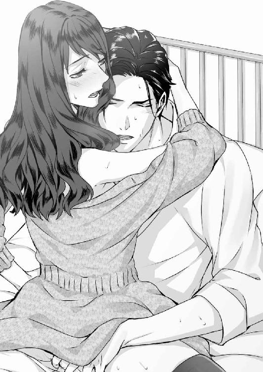
夕食の配膳が始まったのか、廊下からカートを転がす音が聞こえてくる。
「あのぉ......、侑木さん、食事、外に置いておきますね」
先ほどの看護師の声に、侑木の膝の上に乗ったままの真珠は少し恨めしい目で彼を見上げた。
「......私、どんな顔で出て行けばいいんでしょうか」
「うーん。僕がフォローしたいところだが、さすがに言い訳に苦慮しそうだ」
互いの顔を見合わせて笑うと、二人は幸福なキスを交わし合った。
三年後──
「では侑木さんにとってのビジネスの肝とは、人との出会い、ということでしょうか」
「そうですね。一人でできることには限界があります。日本での失敗を機に、僕は人との繋がりを非常に重要視するようになりました。ただ、いい出会いというのは言ってみれば運ですからね。こう見えて僕は日々運気を上げる努力を怠らないんですよ」
「なるほど、それはちょっと意外なお言葉でしたね。──今日はプリズングループの経営戦略担当常務、侑木慶佑さんにお話をおうかがいしました」
カメラが止まり、室内の緊張が一気に解ける。立ち上がった日本人の女性キャスターは、微笑んで侑木に右手を差し出した。
「本日はバカンス中に、取材をお受けいただいてすみません。放送は来週ですが、きっと、大きな反響がありますよ。侑木さん、トークもお上手ですが、ビジュアルも素敵ですから」
「ありがとう。あなたの聞き出し方が上手だったおかげです」
握手を交わして立ち上がった侑木は、窓から晴れ渡ったホノルルの街を見渡した。眩しいほど青い空の下、瀟洒な家々が並び、その向こうに白い砂浜とエメラルドブルーの海が見える。
「それにしても、事前に日本で調べてきたことと随分印象が違うので驚きでした。侑木さんは......なんと言いますか、徹底的な現実主義者で、プリズン・ジャパンの社長時代には、目に見たものしか信じないと言い放った逸話などを耳にしていたものですから」
「ご承知の通りです。だから僕は一度、同社を放り出されたんですよ」
「それでも、翌年には急転直下で本社取締役に復帰なさいました。引退を表明されたチャン会長に代わり、近々プリズングループのＣＥＯに就任されるという噂もありますが？」
「どうでしょうね。僕が決めることではありませんから」
微笑んだ侑木は、腕時計に視線を落とした。──もうすぐだ......。もうすぐ、ここに待っていた人が来る。
このコンドミニアムを購入したのは三年以上も前のことだが、どれだけ金銭的に苦しい時期でも、これだけは手放さなかった。それも、何もかもこれからここに来る人のためだ。
一度はフリーになった侑木がプリズングループに復帰したのは、北斗ＨＤを拠点として作った物流システムに、全日と決裂したプリズン・ジャパンが、専属契約を申し入れてきたのがきっかけである。
交渉の途中でチャン会長が直々に出てきて、会社に戻ってこないかと打診された。さほど迷うことなく復帰を決めたのは、会長が後継者選びに苦慮しているのを知っていたのと──侑木には、事業を任せても十分だと思える有能なパートナーがいたからだ。
「侑木さん、よかったらこの後食事に行きませんか？ もちろんスタッフも一緒ですが」
「ありがとう。でも遠慮しておきますよ。もうじき、妻がこっちに着くんです」
「奥様？ 北斗グループの社長をしておられる侑木真珠さんですか？ 彼女、若手実業家としてとても人気が高いんです。どうでしょう。もしお時間がよろしければ、奥様のお話しも」
「せっかくですが、妻は先日取締役を辞任しました。──来年、僕らの子供が生まれる予定なので」
ベランダから海を見ていた侑木は、わずかに目を細めてから、最後の報告書をアルミ缶の中の火にくべた。
実は侑木には、ひとつだけ真珠に打ち明けていないことがある。真珠が子供時代、一緒に十五池に行ったというツネちゃんこと伍島常代は、真珠の生まれる前には亡くなっているのだ。
真珠が生まれる半月ほど前、常代は、帰国した冬斑を訪ね、自らの罪を告白してから消息を絶っている。彼女はその直後に自殺したものと思われ、遺体は長野県内の親族によって引き取られている。
常代の消息を記した報告書は、真珠と結婚してから届けられたもので、侑木はそれを一人で確認してから、収めておいた。一枚だけあった常代の顔写真には、真珠が理子に語った特徴がかろうじて認められたが、その時点で、常代はもうこの世の人ではなかったのである。
では、真珠の言うツネちゃんとは誰だったのか──当時の御園生家には、臨時や短期、近所の人たちを含め、記録にはないお手伝いさんが複数出入りしていたというから、その中の誰かだったのかもしれないが、もうそれは確かめる術がない。
あるいはそれは──十五池に宿る何かが見せた幻だったのかもしれない。
侑木が、あの夜、十五池の水底で体験したことは、生涯誰にも言う気はない。
後日真珠から、「取り返しのつかない行き違いを僕は再びするところだったって、あの夜慶佑さんが言った言葉ですけど、まるで本当に伊織の言葉のようで、うっかり信じそうになりました」と笑って言われたが、実をいうと、そんなことを口にした記憶もない。
（──侑木君、君は呪いを信じるかね）
もう何年も前に老人に問いかけられた言葉を思い出し、侑木は微かに苦笑した。
信じますよ、お義父さん。でもそれは、生きている人の心にのみ宿る魔だ。あると思えばあるし、ないと思えばない。あなたはそれを、真珠に伝えたかったんじゃないですか。
「──慶佑さん」
その時、明るい声が下から響いた。立ち上がった侑木は、椰子の樹の下で手を振る妻を見つけ微笑んだ。白いワンピースが風に舞い、背後では東京から付き添ってきた王と田島が、沢山の荷物を抱えて立っている。
「驚きました。すごく景色のいいところなんですね。私、あんな綺麗な海も空も初めてで」
輝くように明るい笑顔に、三年前に染みついていた悲しみと憂いの影はない。
真珠、このエメラルドグリーンの海も空も、今はない君の家の美しかった屋根の色をしているんだ。僕らの住む世界は、いつだって美しい彩りに満ちているんだよ。
「だからってあまりはしゃがないでくれ。君は何もせずにお姫様みたいにのんびり過ごすと約束しただろう」
「心配しすぎです。今夜は私が夕食を作りますから」
「僕が作る。──今、そっちに迎えに行くよ」
ルビーのようなコウカンチョウが青い空を横切っていく。最後の一枚が完全に燃え尽きたのを確認してから、侑木は妻の元に行くために、ベランダを後にした。
あとがき
「次は相続ものでいきませんか」
と、電話で打診されたのは昨年の春か夏だったか。その頃の私は、「次こそは恋愛ど真ん中のラブラブなものを書こう」と意気込んでいたので、「はい？」と思ってしまいました。
「相続ものですか。暗い話になるイメージしかないんですけど、いいんですか」（私だったらそんな面倒な話、ＴＬで読みたくないなぁ）
「大丈夫ですよ。暗い話、ＴＬではいっぱいあります。犬神家の一族みたいなイメージで、ドロドロの相続もの、どうでしょう」
「はっ？ 犬神家の一族？ ......？ ......？」（本気で言ってんじゃないだろうな、この人）
どうやら本気で言ってるみたいでした。
──まぁ、いいか。どうせ私はちょっと外れた道をいくようになってるんだ。犬神家の一族、なるほど犬神家の一族ね。子供の頃、姉妹でよく真似して遊んだっけ。
とりあえずざっくりとしたあらすじとして、過去を隠したヒロインと、仕事人間だが魅力的なヒーロー。ヒロインの家には因縁めいた過去があり、相続で揉めている。そこに打算もあって首を突っ込むヒーロー。次々と起こる殺人......おっと、ＴＬで人殺しはまずいな。そこは適当に誤魔化すか。次第にヒーローを好きになるヒロイン。最後に殺されそうになるヒロインをヒーローが身を挺して助ける。このパターンは散々やってるから、今度こそ本当に助かりそうもないテイストにしよう。──てな感じで話を作っていきました。
その後、プロットを提出し実際に書き始めるまでの何日か、私が何をしたかといいますと、映画『犬神家の一族』を延々リピートして観続けたのでした。それだけでなく、あまり読んだことのなかった金田一耕助シリーズを読みあさり、テレビドラマ化されたものも、観られるものは全部観ました。朝目覚めた時、部屋に流す音楽は『犬神家の一族』のサントラです。
おそらく篠原先生がいたら（別の小説のヒーローで、誤まった方向に進もうとしていた少女漫画家ヒロインを更生させた人物）滅茶苦茶叱られていたでしょう。しかし私にはそういう奇特なヒーローはおらず、次第に（おそらく）担当の人が想定していなかったであろう方向に舵を切っていったのでした。
個人的には、ここ数年で最高の出来だと思いました。しかしこれがＴＬかと言われると、「いやぁ......どこかで方向性を誤まっちゃいまして」という感じですか。
こんな作品を世に出してくださった担当様、出版社の皆様には感謝しかありません。そして読んでくださった皆様にも......。せめてもの気持ちでＳＳはちゃんとしたＴＬを書きました（多分）。少しでも楽しんでいただければ幸いです。
石田 累
「......ん」
真珠が薄目を開けると、微かな吐息が耳元で聞こえた。驚いて目を見開くと、すぐ目の前に侑木の顎と喉がある。
──慶佑さん......？
少しだけ身をよじると、侑木の眉が眠たげにしかめられ、形のいい目が瞬いて開いた。
「......っ、すみません。私、あのまま寝ちゃったんですね」
真珠はうろたえて、狭い寝袋の中で彼を見上げた。
昨日、二人はようやく取れた休暇を利用して、一泊二日のキャンプ旅行に出かけたのだった。秋の終わり、シーズンを過ぎたオートキャンプ場は閑散としていたが、こういったことが初めての真珠には何もかもが楽しくて、彼と散策した山道も、二人で作った料理も、星空を見上げながら飲んだワインも、全てが夢のように美しい思い出になった。
（今夜は、僕の邪な夢をかなえてもらうよ）
冗談めかして囁いた侑木に、真珠は胸をときめかせながら頬を染めた。侑木の退院後に籍を入れた二人だが、互いの仕事が多忙を極め、ゆっくりと夜を過ごしたのは、数えるほどしかなかったからだ。
しかし、近くの温泉で入浴を済ませた後、侑木が用意してくれた寝袋に入った真珠は、彼が外に出たわずかな間に眠りに落ちてしまった。彼が隣に入ってきたのにも気づかなかったくらいだから、よほど深く眠り込んでいたに違いない。
眉をしかめて腕時計を見た侑木は、再び真珠の肩に腕を回した。
「まだ朝の四時だ。もう少し寝たらどうだい」
「......ごめんなさい。夕べは一人でつまらなかったんじゃないですか」
「山で一人なのはいつものことだよ。少し残念ではあったけどね。でも君も疲れていたんだ。無理はさせたくない」
狭い寝袋の中、すぐ隣にある侑木の身体は温かかった。抱き寄せられて、額にそっと唇が当てられる。
深い幸福を感じながら、真珠は彼の腰に両腕を回して目を閉じた。
ランタンが淡く輝いてはいるが、テントの中は夜更けのように暗かった。雨でも降っているのか、外からはテントを叩く小さな雨粒の音がする。
──この世界に私たち二人しかいないみたい。このまま、時間が止まってしまえばいいのに......。
「まずいな」
不意に侑木が呟き、真珠は訝しく彼を見上げた。
「勃ってきた」
「......はい？」
「触って」
いたずらっぽく微笑んだ彼に手を掴まれ、真珠はびっくりしてその手を引いた。
「え、や、やだ」
「何を今さら。この前はもっと大胆なことをしてくれただろう」
それは、あの時はそういう流れだったからそんな風になっただけで──こんな、いくらなんでも、いきなり......。
誘われた指が彼の温かな肉茎に触れる。その優しい温みと思わぬ太さに、真珠はドキッとして言葉をのんだ。
淡く唇が触れ、キスが少しずつ深くなる。指の間でいっそう硬度を増した牡肉が、脈打ちながら反り返っていく。
「ん......、ン......」
舌を擦り合わせるようなキスに応えるうちに、手のひらから伝わる熱に身体の芯がズキズキと疼き始める。
「目が潤んでいるよ、真珠」
侑木の囁きに、真珠は声もなく甘い息を吐いた。
「僕を欲しがる時の目になっている。どうした？ まだキスしかしていないのに」
腰に手を添えられ、抱え上げられる。その弾みで触れていた物から手が離れ、真珠は小さな声を上げた。
「そんなに名残惜しい？ 本当に君は素直で可愛い人だな」
「ん......、ち、違います」
うつ伏せにではなく、仰向けに彼の上に乗せられて、真珠は戸惑って身をすくめた。狭い二人用の寝袋はそれだけで身動きがとれなくなる。
「え......、な、なんですか、これ」
彼の脚が真珠の脚の間に入って割り開いた。両手が着ていたトレーナーを下着ごと押し上げる。
「やっ、ん」
硬く勃ち上がった乳首を両手指で擦られ、温かな手のひらで撫で転がされる。執拗な胸への愛撫に、真珠は息も絶え絶えになるほど喘ぎ続けた。
「ン......、やぁ......、ふぅン」
再び腰を抱え上げられ、身体を上にずらされる。そのままかがみこんだ侑木に唇を塞がれ、真珠は我を忘れてキスに応えた。スウェットパンツをするりと脱がされ、露わになった柔肉の狭間に、侑木の屹立した漲りがぬるりと触れる。
「ぬるぬるだね、真珠」
「ン......、あ、......だって」
「可愛いよ、真珠。もっと淫らに僕の上で乱れてごらん」
侑木の指が、裡なる真珠の粒を捉え、指腹で甘く擦り上げた。滴るほどの甘蜜で濡れたそこは、わずかな刺激で破裂しそうなほどの官能の予兆で満たされて、ズキズキとはしたなく震えている。
くちゅくちゅと軽く弄られただけで、頭の芯が痺れるほどの快感が込み上げ、真珠は下肢を震わせた。
「ああ......、ン、慶佑さん、......ん、ンン、あん、あんっ」
狭い寝袋の中ではしたなく腰を浮かせて悶える真珠を、侑木は物狂おしく抱きしめると、唇を重ねながら、指を蜜壺の中に差し入れ、水音を立てて掻き回した。
「ン......、んン......っ、や、いく、い......」
指を唇に押し当て、震えながら到達した真珠を身体から下ろすと、侑木は背後からその片腿を持ち上げ、その隙間に自分の滾りを突き立てた。
「......っ、やあ、あ......、っ......」
「真珠......、寝かせてあげたかったけど、僕に火がついた」
背後から幾度も突き上げられて、真珠は声もなく、二度目の軽い到達を迎えた。
「朝まで時間がある。真珠、僕の願いをかなえてくれるね」
思考が蕩けて朦朧としてくる。雨が次第に激しさを増すのを感じながら、真珠は自分の頬を撫でる彼の愛おしい指に口づけた。
十五池純愛心中
いとしい君は眠りのままに僕を待つ
電子第１版発行 ２０１８年６月30日
著 者 石田 累
発行所 株式会社ジュリアンパブリッシング
東京都千代田区九段北１‐５‐９‐３Ｆ
０３‐３２６１‐２７３５
(c)Rui Ishida 2018
※本書の一部、あるいは全部を無断で複製転写（コピー）、転載、上演、放送することは法律で認められた場合を除き、著作権の侵害となるため、禁止します。